Avant de partir
Introduction : tout comprendre avant de commencer

Jaquette © Square Enix. Guide non officiel.
L'essentiel
- Ce qu'il faut savoir : tout l'équilibrage du jeu repose sur une seule mécanique, la barre de Choc. Frappe la faiblesse élémentaire, l'ennemi s'effondre ; frappe une résistance, la barre remonte.
- La seule chose à faire : suivre les parties 01 à 10 dans l'ordre des chapitres. Le jeu est linéaire, et le guide aussi.
- Le piège n° 1 : confondre le Fragment de tablette et le Fragment de magilithe. Le premier ouvre des coffres, le second éveille tes Visions.
- Le réflexe : fais tourner tes Visions dès le chapitre 2. C'est ce qui débloque les éléments, les rôles, et la plus longue série de trophées du jeu.
La carte interactive
Zoome, déplace-toi et touche un repère : il t'emmène à l'endroit du guide qui en parle.

· molette ou pincement pour zoomer, glisser pour se déplacer ; touche un repère pour voir ce que c'est et ouvrir la partie du guide qui en parle.
Objectif
Te donner en une lecture ce que Final Fantasy Resonance n'explique pas : comment lire la barre de Choc, à quoi servent vraiment les 26 Visions, pourquoi tu n'as pas de magie de Foudre avant le chapitre 4, et les dix erreurs qui coûtent le plus de temps.
Ce guide couvre tout : le prologue et les huit chapitres, les 26 Visions, les 9 Chimères, les 33 quêtes annexes, les 9 énigmes de donjon, les 12 armes légendaires, les 8 armes forgées, les 15 ennemis des grottes, les 20 combats du Colisée, l'après-jeu jusqu'à Oméga et ses 9 999 999 points de vie, et les 40 trophées PS5.
Itinéraire
- 📍 Les sources du guide : la version française du wiki du jeu pour les noms officiels et les soluces, les guides français de Gameblog et de Gaming Deputy pour les Visions, les Chimères et les quêtes, la page PlayStation officielle et le PlayStation Blog France pour les faits du jeu, et PowerPyx pour les trophées. Le détail est dans
SOURCES.md.
Le guide se lit dans l'ordre, et il est découpé en quatre blocs :
| Parties | Ce qu'on y trouve |
|---|---|
| 01 à 10 | Le prologue et les huit chapitres, objectif par objectif, coffre par coffre |
| 11 à 17 | Les collections et les systèmes : Visions, Chimères, quêtes, énigmes, combat, statistiques, héros |
| 18 à 21 | L'équipement et les contenus annexes : forge, armes légendaires, boss rares, Colisée |
| 22 à 24 | L'après-jeu, le farm et les trophées |
| 99 | Les annexes : index, manquables, check-list finale |
Les parties de chapitre renvoient aux parties de système au moment où elles deviennent utiles. Tu n'as donc pas besoin de lire les parties 11 à 24 d'avance : elles t'attendent.
Déroulé pas à pas
Avant de lancer la partie
- Transfère ta sauvegarde de démo si tu as joué à la démo gratuite. Elle contient le chapitre 1 en entier, et la sauvegarde est transférable dans le jeu complet.
- Choisis une difficulté sans y réfléchir trop longtemps. Facile, Normal et Expert proposent le même contenu, la difficulté se change à tout moment dans les Options, et aucun trophée n'en dépend.
- Sache que l'Expert ne sert qu'aux PRM. L'expérience et les gils sont identiques dans les trois modes ; seuls les points de maîtrise des Visions montent, avec un ×1,5.
La première heure
- Traverse le prologue sans t'attacher : tu joues Dark Fina au niveau 55, et dans dix minutes tu seras Rain au niveau 1. Partie 01.
- Lis les six leçons du manuel Comment jouer que le prologue débloque. Deux comptent vraiment : Faiblesses et Limites.
- Prends le réflexe du chiffre de Choc. Avant chaque attaque, le jeu affiche combien de Choc elle va retirer. C'est l'information la plus utile de l'interface, et presque personne ne la regarde.
- Équipe ta première Vision quand le jeu te le demande, objectif 6 du chapitre 1.
Les habitudes à prendre tout de suite
- Fais tourner tes Visions. Une Vision monte en étant équipée, et le trophée Expert en visions demande huit Visions au rang de maîtrise maximum. Changer de Vision tous les deux chapitres coûte zéro effort ; rattraper huit Visions en fin de partie coûte des heures.
- Lance une Résonance à chaque Action bonus. C'est gratuit — une action en plus, pas à la place — et le trophée Adepte des résonances en demande 400.
- Ramasse les Fragment de tablette, même si tu ne comprends pas encore à quoi ils servent. Il y en a 99, répartis dans 48 lieux, et ils ouvrent les 25 coffres du Palais de l'Oubli.
- Ne vends jamais une Adamantite. Il y en a exactement huit dans le jeu, pour huit armes forgées.
- Prends toutes les quêtes annexes qu'on te propose. Aucune n'expire, et huit d'entre elles donnent +100 PV et +30 PM permanents à un héros.
- Ne farme pas. Le scénario entier se termine sans farmer, et un combat du chapitre 7 rapporte cinq cents fois plus qu'un combat du chapitre 1.
Quêtes et lieux
La fiche du jeu
| Titre | Final Fantasy Resonance |
| Développement | Lancarse et Square Enix |
| Éditeur | Square Enix |
| Réalisation | Hiroto Furuya |
| Production | Keisuke Nakashima |
| Scénario | Yukinori Kitajima |
| Musique | Noriyasu Agematsu |
| Moteur | Unreal Engine 5 |
| Sortie | 22 octobre 2026 |
| Plateformes | PS5, Xbox Series X/S, Nintendo Switch, Switch 2, PC |
| Genre | RPG japonais au tour par tour, solo |
| Éditions PS5 | Standard 59,99 €, Digital Deluxe 69,99 € |
| Langues | Textes en français, voix en anglais et en japonais |
| Démo | Gratuite, le chapitre 1 en entier, sauvegarde transférable |
| Accueil | 86 sur 100 au Metacritic PS5, 90 % de recommandations sur OpenCritic |
C'est le premier jeu HD-2D de la série Final Fantasy : du pixel art en haute définition, avec une caméra dynamique et des modèles 3D rendus en pixels. Même l'introduction est en 3D pixelisée.
Et c'est une adaptation, pas un portage : le jeu reprend le premier arc scénaristique — l'arc Lapis — du jeu mobile Final Fantasy Brave Exvius de 2015, et en fait un RPG solo complet, sans gacha. La bande-son compte 120 morceaux, dont 87 repris de Brave Exvius et 33 nouveaux.
Les cinq systèmes à comprendre
1. La barre de Choc, qui décide de tout
C'est la mécanique du jeu. Frapper la faiblesse élémentaire d'un ennemi vide sa barre de Choc beaucoup plus vite qu'une attaque neutre. Et quand elle est vide, trois choses arrivent :
- l'ennemi perd son tour ;
- ses défenses baissent ;
- son attaque dévastatrice est annulée.
Ce troisième point est la clé de presque tous les boss du guide. Souffle écrasant de Tellus, Dystopie de Dark Fina, Avale de Goulu : toutes disparaissent si tu étourdis au bon moment.
Le piège symétrique : frapper une résistance n'avance pas la barre, et peut la faire remonter. Détails en partie 15.
2. Les Visions, qui font ton équipe
Une Vision est l'écho d'un héros de la série Final Fantasy, que tu équipes sur un de tes personnages. Elle lui donne des attaques, des compétences, un rôle et souvent une affinité élémentaire.
Il y en a 26 : 16 dans des sanctuaires de cristal, 7 par des quêtes annexes, 2 offertes par l'histoire, et Séphiroth qu'il faut battre. Elles montent avec les PRM et s'éveillent avec les magilithes. Partie 11.
Pourquoi c'est obligatoire et pas décoratif : tes huit héros ne couvrent pas les huit éléments en même temps. Au chapitre 3, quatre boss sur cinq sont faibles à la Foudre et aucun héros disponible ne la porte.
3. Les Chimères, les invocations
Neuf au total, et c'est Fina qui les appelle. Une invocation coûte 50 PM, agit librement pendant trois tours, puis part sur une grosse attaque.
Ce n'est pas un sort : c'est un engagement de trois tours. Inutile contre un ennemi de terrain, décisif contre un boss à six chiffres de points de vie. Partie 12.
4. Les Limites et les Résonances
Deux choses différentes, souvent confondues :
| Ce que c'est | |
|---|---|
| Limite | L'attaque ultime d'un personnage, déclenchée par sa jauge. La Limite de niveau 2, apprise plus tard, charge jusqu'à 200 % |
| Résonance | L'attaque de la Vision équipée, choisie sur une roue en losange. À garder pour les Actions bonus |
5. Les PRM, et les deux monnaies d'amélioration
| Ressource | À quoi elle sert |
|---|---|
| PRM | Monter le rang de maîtrise d'une Vision, jusqu'au 9 |
| PA | Le budget d'aptitudes équipables |
| Fragment de magilithe, Magilithe, Cristal de magilithe | Les trois éveils d'une Vision |
| Fragment de tablette | Rien à voir : il ouvre les coffres du Palais de l'Oubli |
Les huit héros
| Héros | Rôle | Éléments | Arme | Quand il arrive |
|---|---|---|---|---|
| Rain | Défenseur | Feu | Espadon | Chapitre 1 |
| Lasswell | Briseur | Glace | Katana | Chapitre 1 |
| Fina | Soigneuse | Lumière | Arc | Chapitre 1 |
| Lid | Attaquante | Terre | Marteau | Chapitre 2 |
| Nichol | Tacticien | Eau | Volume | Chapitre 3 |
| Jake | Attaquant | Vent, Foudre | Fusil | Chapitre 4 |
| Sakura | Attaquante | Foudre, Lumière, Ténèbres | Bâton | Chapitre 5 |
| Dark Fina | Saboteuse | Ténèbres | Fouet | Chapitre 5 |
Nichol est le seul Tacticien du jeu, et Rain le seul Défenseur. Détails en partie 17.
Les chiffres du jeu
| Ce qu'il y a | Combien |
|---|---|
| Chapitres, plus un prologue | 8 |
| Visions | 26 |
| Chimères | 9 |
| Quêtes annexes | 33 |
| Énigmes de donjon | 9 |
| Armes légendaires | 12 |
| Armes forgées par Aileen | 8, pour 8 Adamantite |
| Fragment de tablette | 99, dans 48 lieux |
| Lieux à coffres | 50 |
| Ennemis des grottes | 15 |
| Boss de terrain rares | 9 |
| Combats du Colisée | 20, en 4 ligues |
| Trophées PS5 | 40 — 1 platine, 4 or, 7 argent, 28 bronze |
| Niveau maximum | 99 |
| Rang de maîtrise maximum d'une Vision | 9 |
| Points de vie du dernier adversaire | 9 999 999 |
Le jargon de joueur employé dans ce guide
Ces mots ne sont pas affichés par le jeu : ce sont ceux que les joueurs emploient, et le guide les garde tels quels.
| Mot | Ce qu'il veut dire |
|---|---|
| farm | Refaire les mêmes combats pour accumuler une ressource |
| build | La construction d'un personnage : équipement, aptitudes, Vision |
| spot | Un endroit précis où farmer ou trouver quelque chose |
| buff | Un bonus temporaire que l'on se donne |
| tank | Le personnage qui encaisse à la place des autres |
| loot | Le butin, ce que laisse un ennemi ou un coffre |
| timing | Le bon moment pour une action |
| scaling | La façon dont un ennemi ou une zone s'adapte à ton niveau |
Deux termes du jeu qui portent parfois un autre nom : la barre de Choc est aussi appelée jauge de posture, et l'Action bonus phase bonus. Partie 15.
Butin exhaustif
Une introduction ne donne rien à ramasser. En revanche, voici les objets à ne jamais vendre ni négliger — ceux dont la rareté est fixe et dont la perte se paie.
| Nom exact | Pourquoi il compte | Combien il y en a |
|---|---|---|
| Adamantite | Chaque exemplaire forge une arme chez Aileen | 8, pour 8 héros |
| Fragment de tablette | Ouvre les 25 coffres du Palais de l'Oubli | 99, dans 48 lieux |
| Fragment de magilithe | Éveil 1 d'une Vision | Nombreux |
| Magilithe | Éveil 2 | Plus rare |
| Cristal de magilithe | Éveil 3 | La ressource la plus rare du jeu |
| Pièce ancienne | Donne une arme légendaire à la Chambre des armes | 12 |
| Marteau de Gaïa | Libère la Chimère Titan, donc Bahamut | 1 |
| Antenne magique | Ouvre le Radar de Mysidia, donc une Adamantite et le Pendentif de maîtrise | 1 |
| Ruban | Bloque toutes les altérations sauf la Mort instantanée | 1 au chapitre 5 |
| Queue de phénix | La seule réponse à la Mort instantanée | En vente dès 200 gils |
Conseils et pièges
Les dix erreurs de débutant
1. Taper avant de connaître la faiblesse
Frapper une résistance ne fait pas « moins de dégâts » : ça n'avance pas la barre de Choc, et ça peut la faire remonter. Contre un boss à 200 000 points de vie, c'est trois tours perdus.
Le réflexe : une ou deux attaques neutres pour découvrir la faiblesse, puis on engage. Et sur les boss revus au chapitre 7, relis la fiche : plusieurs ont changé de résistances depuis la première rencontre.
2. Dépenser les Résonances hors Action bonus
Une Résonance lancée pendant un tour normal consomme ton tour. Lancée pendant une Action bonus, elle est gratuite.
La séquence est toujours la même : mettre en Choc, encaisser l'Action bonus, dépenser la Résonance dedans.
3. Farmer pendant le scénario
Le scénario entier se finit sans farmer. Et les chiffres le disent : 300 EXP par combat au chapitre 1, 150 000 au chapitre 7. Une heure de farm au chapitre 1 vaut vingt secondes de chapitre 7.
Le farm commence après le générique, pour atteindre le niveau 75 puis 99. Partie 23.
4. Confondre tablette et magilithe
Deux objets aux noms voisins, deux usages sans rapport :
| Objet | Ce qu'il fait |
|---|---|
| Fragment de magilithe | Éveille une Vision |
| Fragment de tablette | Ouvre un coffre du Palais de l'Oubli |
Si tu ramasses des tablettes en croyant éveiller tes Visions, tu te demanderas longtemps pourquoi le menu reste vide.
5. Jouer toute la partie avec les deux mêmes Visions
Une Vision monte en étant équipée. Le trophée Expert en visions demande huit Visions au rang maximum, et les rangs 4 et 9 donnent +8 PA chacun.
Fais-les tourner — une par personnage, changées tous les deux chapitres. C'est indolore en jouant, et interminable en rattrapage.
6. Acheter le sentier de Lid
Au Mont foudroyant, au chapitre 2, Lid propose un raccourci pour 1 000 gils. Il s'ouvre gratuitement après la traversée, et tu repasseras forcément par là.
7. Monter la tour de Sirène sans Chapelet
Sirène a 20 000 points de vie et son Séduction charme ton groupe. Le Chapelet, à 1 500 gils à Grandport, annule le Charme. À ce stade c'est cher ; c'est quand même le meilleur achat du chapitre.
8. Entrer dans la Vieille ville sans faire ses courses
Au chapitre 3, franchir la porte de la Vieille ville d'Olderion ferme la ville, boutiques comprises, jusqu'à la fin de l'événement — avec trois combats imposés et un boss à 24 000 PV derrière.
9. Chercher le bon levier pendant le chronomètre
Au chapitre 2, l'évasion du chantier naval de Mobrise est chronométrée : 15 minutes, et le temps écoulé fait perdre la partie. Au milieu, un panneau de cinq leviers.
C'est le 16. Tu le sais maintenant.
10. Monter la Tour de cristal sans aptitude Ténèbres sur Rain
Le dernier combat du jeu se joue avec Rain seul, contre un adversaire faible aux Ténèbres. Et Rain n'a aucune aptitude de Ténèbres de base.
Quatre Visions la donnent : Cécil, Séphiroth et Victoria dès le départ, Shantotto après son premier éveil. Équipe-en une avant le point de non-retour.
Trois choses rassurantes
Pour finir sur une note plus légère, voici ce que ce jeu ne te fera pas :
- presque rien ne se rate définitivement. Il y a un seul vrai point de non-retour dans tout le jeu, au chapitre 8, et les 50 lieux à coffres rouvrent après la fin ;
- aucune quête annexe n'expire. Une fois apparue, elle t'attend, y compris après le générique ;
- aucun trophée n'est manquable, et une seule partie suffit pour le platine.
La seule chose à ne pas oublier est d'accepter la sauvegarde de fin de partie que le jeu propose après le générique : il n'y a pas de New Game+, et c'est elle qui ouvre tout l'après-jeu.
Comment lire ce guide
- Les ⚠️ sont des points de non-retour ou des pièges qui coûtent cher. Les ⏳ sont des manquables. Ils sont rares, et c'est volontaire : quand tu en vois un, c'est qu'il compte.
- L'encadré « L'essentiel », en tête de chaque partie, dit en quatre lignes le boss, ce qu'il ne faut pas rater, le choix important et quoi faire avant de partir.
- Le « Déroulé pas à pas » suit les objectifs du jeu, dans leur libellé français exact.
- Le « Butin exhaustif » liste tout ce que la partie contient, avec l'endroit et l'usage.
- Les renvois en gras — partie 11, partie 19 — mènent à la partie qui détaille le sujet.
Alertes
- ⚠️ Le seul vrai point de non-retour du jeu est au chapitre 8, juste après Béhémoth, dans la Tour de cristal. Tout ce qui est optionnel se termine avant — ou après le générique, avec la sauvegarde de fin de partie.
- ⏳ Accepte la sauvegarde de fin de partie proposée après le générique. Il n'y a pas de New Game+ : c'est la seule porte d'entrée de l'après-jeu, et elle ne se propose qu'une fois.
Check-list
- Sauvegarde de démo transférée, si tu en as une
- Difficulté choisie, en sachant qu'elle se change à tout moment
- Les six leçons de Comment jouer parcourues
- Réflexe du chiffre de Choc pris
- Première Vision équipée
- Habitude de faire tourner les Visions prise
- Une Résonance lancée à chaque Action bonus
- Fragment de tablette et Fragment de magilithe bien distingués
- Adamantite jamais vendue
- Toutes les quêtes annexes proposées acceptées
- Les dix erreurs de débutant lues avant le chapitre 2
Partie 01
Prologue : le champ de bataille
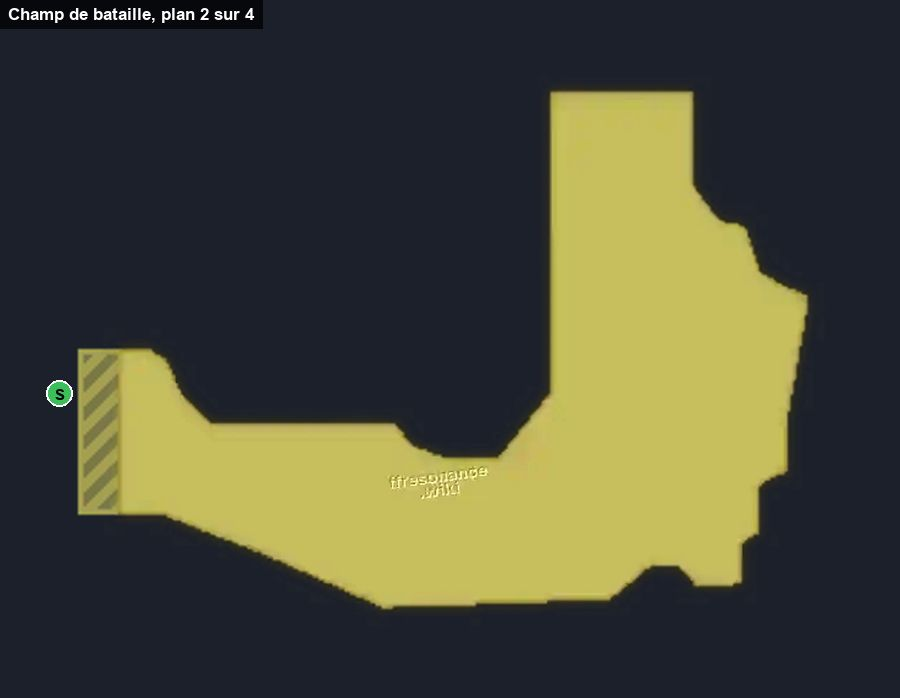
Champ de bataille, plan 2 sur 4 — S : point de sauvegarde
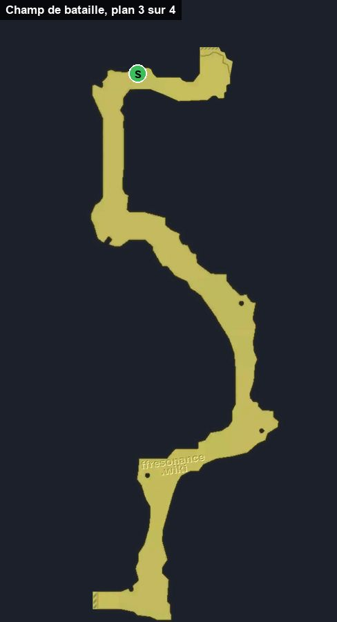
Champ de bataille, plan 3 sur 4 — S : point de sauvegarde
L'essentiel
- Le boss : le Géant de fer, 89 999 PV, qu'on ne bat pas au bâton mais en invoquant Bahamut quand le jeu ne te laisse plus que ça.
- Rien à rater : pas de coffre, pas de point de sauvegarde, pas de rencontre aléatoire. Le prologue est une démonstration.
- Ce que ça t'apprend : six leçons du manuel Comment jouer, dont les faiblesses élémentaires et la jauge d'étourdissement, les deux mécaniques qui portent tout le jeu.
- Avant de partir : rien à préparer. Tu joues un personnage prêté, niveau 55, que tu ne reverras pas de sitôt.
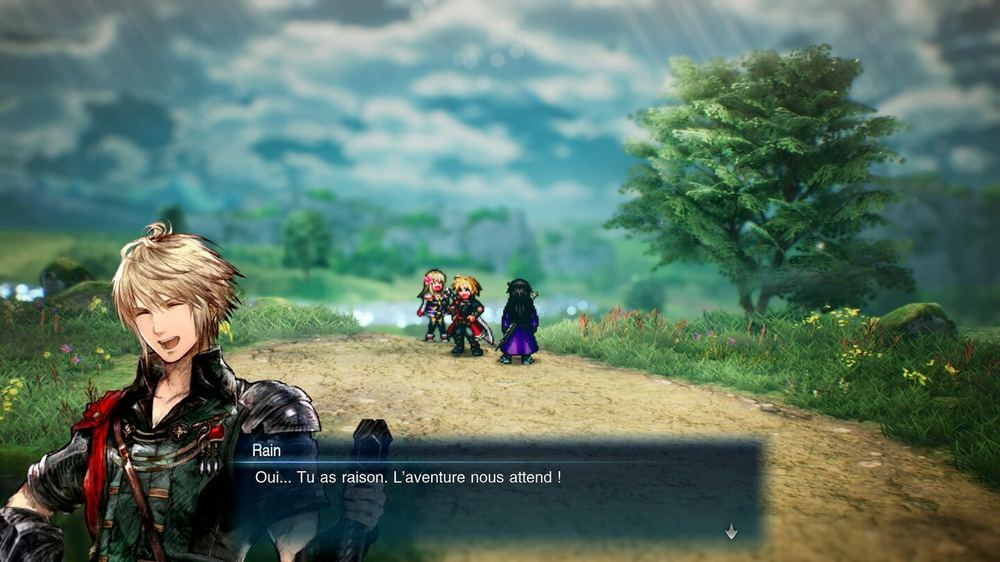
Rain, au début de l'aventure
Objectif
Traverser trois combats imposés, dans la peau d'un personnage bien plus puissant que ce que tu auras dans dix heures de jeu. C'est la grande tradition du RPG japonais : te montrer la fin de la courbe de puissance avant de te remettre au niveau 1.
Le prologue n'a aucun enjeu de collecte. Son seul rôle est de t'enseigner le système de combat, et il le fait bien : chaque bataille isole une mécanique.
Itinéraire
- 📍 La zone en images : la soluce française du chapitre 1 couvre le prologue objectif par objectif, et la soluce vidéo française montre les trois combats en entier.
Le champ de bataille se traverse en ligne droite, en deux zones successives. Il n'y a pas de chemin de traverse, pas d'embranchement, et le journal de quête reste vide : le jeu ne te donne même pas d'objectif, parce qu'il n'y en a qu'un seul possible.
Avance vers l'est, encaisse les deux premiers combats dans la première zone, passe dans la seconde, et le Géant de fer t'attend au bout.
Déroulé pas à pas
- Prends la main sur Dark Fina, seule, au niveau 55. Rain et Lasswell ne sont pas là, et c'est voulu : le jeu te prête son personnage le plus spectaculaire pour l'introduction.
- Premier combat : deux Soldat et un Soldat d'assaut, niveaux 30 à 33. Ils sont faibles à la Terre. C'est la leçon « Faiblesses » : frappe dans l'élément faible et regarde la différence de dégâts.
- Deuxième combat : deux Armure magitech, niveau 30, faibles à la Foudre. Le jeu ne te laisse qu'un seul sort utilisable, Méga Foudre, pour que tu découvres les sorts multiples — une magie qui touche tout le groupe ennemi d'un coup.
- Enchaîne sur l'Arme magitech sophistiquée, niveau 35, qui débarque dès que les deux armures sont au sol. Termine-la avec la Limite Convergence chaotique : c'est la leçon « Limites », les attaques ultimes qui se chargent au fil du combat.
- Passe dans la seconde zone du champ de bataille. Rien à fouiller en route.
- Affronte le Géant de fer, niveau 40, 89 999 PV, faible à la Foudre et à l'Eau. Tape normalement pendant deux tours.
- Invoque Bahamut dès que le jeu ne te laisse plus que la commande Invoquer. C'est la seule issue, et c'est voulu : les dégâts d'une Chimère ignorent la limite de dégâts habituelle, ce qu'aucune de tes attaques classiques ne peut faire.
- Laisse la cinématique se dérouler. La main passe à Rain et Lasswell, au château de Grandshelt, et le premier objectif du chapitre 1 s'affiche.
Quêtes et lieux
Le champ de bataille
Ce n'est pas un lieu que tu revisiteras : il n'apparaît pas sur la carte du monde, et aucune quête annexe n'y renvoie. Pas de marchand, pas de soigneur, pas de PNJ.
Une précision utile pour la suite : le champ de bataille du prologue n'est pas celui du chapitre 5, qui porte le même nom à l'écran. Ce sont deux zones différentes, et le guide les distingue à chaque fois.
Les trois combats, et ce qu'ils isolent
| Combat | Ennemis | Niveau | Faiblesse | La leçon |
|---|---|---|---|---|
| Premier | Soldat ×2, Soldat d'assaut | 30 à 33 | Terre | Les faiblesses élémentaires |
| Deuxième | Armure magitech ×2, puis Arme magitech sophistiquée | 30, puis 35 | Foudre | Les sorts multiples, puis les Limites |
| Troisième | Géant de fer | 40 | Foudre et Eau | L'invocation de Chimère |
Aucun des trois ne permet de fuir. Inutile de chercher la commande, elle est grisée.
Butin exhaustif
Le prologue ne donne aucun objet : pas un coffre, pas un gil, pas un butin de combat. C'est le seul endroit du jeu dans ce cas, et c'est une bonne nouvelle — il n'y a rien à rater ici.
Ce qu'il débloque, en revanche, ce sont les six premières leçons du manuel intégré, consultable à tout moment depuis le menu.
| Nom exact | Type | Où / comment l'obtenir | Utilité |
|---|---|---|---|
| Commandes | Leçon du manuel Comment jouer | Au premier tour du premier combat | Explique le menu de combat, tour par tour |
| Bases du combat | Leçon du manuel Comment jouer | Premier combat | Ordre des tours, cibles, défense |
| Faiblesses | Leçon du manuel Comment jouer | Premier combat | La mécanique centrale du jeu : frapper dans l'élément faible |
| Sorts multiples | Leçon du manuel Comment jouer | Deuxième combat, avec Méga Foudre | Toucher plusieurs ennemis d'une seule magie |
| Limites | Leçon du manuel Comment jouer | Deuxième combat, avec Convergence chaotique | Les attaques ultimes et leur jauge de charge |
| Invoquer des chimères | Leçon du manuel Comment jouer | Combat du Géant de fer, avec Bahamut | Les invocations, et leur dépassement de la limite de dégâts |
Conseils et pièges
Le piège du prologue : croire que tu es puissant
Dark Fina niveau 55 encaisse tout, frappe à cinq chiffres et a accès à des sorts que tu ne reverras pas avant la moitié du jeu. Dans dix minutes, tu seras Rain au niveau 1 avec une épée de départ et 68 points de vie face à des chauves-souris.
Ce n'est pas un bug de rythme : c'est la structure du jeu. Ne te fie pas au prologue pour juger de la difficulté.
Le Géant de fer et ses 89 999 points de vie
Le chiffre est volontairement absurde, et il sert d'avertissement : tu croiseras des ennemis que tes attaques normales ne peuvent pas battre, et la réponse sera toujours la même — une Chimère, ou une Limite, ou les deux.
Tape pendant deux tours, puis invoque. Si tu cherches une astuce, il n'y en a pas : le jeu retire lui-même toutes les autres commandes.
Lis le manuel maintenant, pas plus tard
Les six leçons que le prologue débloque restent consultables, et deux d'entre elles valent vraiment une minute de lecture : Faiblesses et Limites. Le jeu bâtit tout son équilibrage dessus, et la partie 15 y revient en détail.
Alertes
Aucune. Le prologue n'a ni coffre, ni quête, ni point de non-retour, ni rencontre unique. C'est la seule partie du guide où tu peux avancer sans rien vérifier.
Check-list
- Premier combat gagné, faiblesse Terre comprise
- Deuxième combat gagné avec Méga Foudre
- Arme magitech sophistiquée achevée avec Convergence chaotique
- Géant de fer battu avec l'invocation de Bahamut
- Les six leçons de Comment jouer parcourues au moins une fois
Partie 02
Chapitre 1 : En quête de vérité
L'essentiel
- Les boss : Belmodar au Temple de la Terre, le Cavalier de l'enfer au château, Voracité aux ruines de Kolobos, et Sirène au sommet de sa tour, de loin le plus dur des quatre.
- Ne rate pas : la Brumipotion offerte par un habitant du château, qui disparaît dès l'objectif 9, et le Chapelet à 1 500 gils à Grandport, qui annule le Charme de Sirène.
- Les choix : trois conversations à embranchements, aux objectifs 1, 8 et 17. L'histoire ne change jamais, mais deux donnent un bonus permanent — à Rain à l'objectif 1, à Fina à l'objectif 17.
- Avant de partir : achète le Chapelet à Grandport avant de monter dans la tour de Sirène, et garde une magie de Foudre sur quelqu'un.
Objectif
Comprendre pourquoi la barrière du Temple de la Terre faiblit, et découvrir en chemin que la réponse dépasse largement une mission de routine pour deux soldats du roi.
Concrètement : traverser l'île de Grandshelt du temple jusqu'au port, récupérer ta première Vision, survivre à l'attaque du château, et embarquer pour Dirnado.
Itinéraire
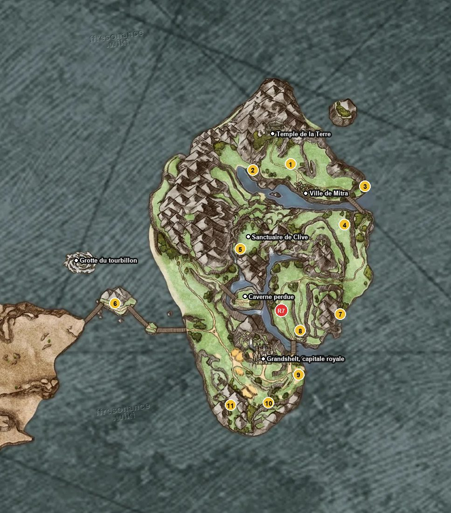
L'île Grandshelt sur la mappemonde — objets à ramasser sur la carte : 1. Potion ; 2. Super-brumipotion ×2 ; 3. Herbe antidote ×2 ; 4. Potion ×2 ; 5. Pierre de pouvoir ; 6. Herbe antidote ×2 ; 7. Tente ; 8. Brumipotion ; 9. Éther ; 10. Parchemin feu I ×2 ; 11. Chaussures d’Idaten · fouilles au radar : R7. Cristal de magilithe

L'île Grandport sur la mappemonde — objets à ramasser sur la carte : 1. Lame de paralysie ×5 ; 2. Parchemin eau I ×2 ; 3. Bruméther ; 4. Cape zéphyr ; 5. Arc floral ; 6. Éther ×2 ; 7. Potion ×3 · C : Titan
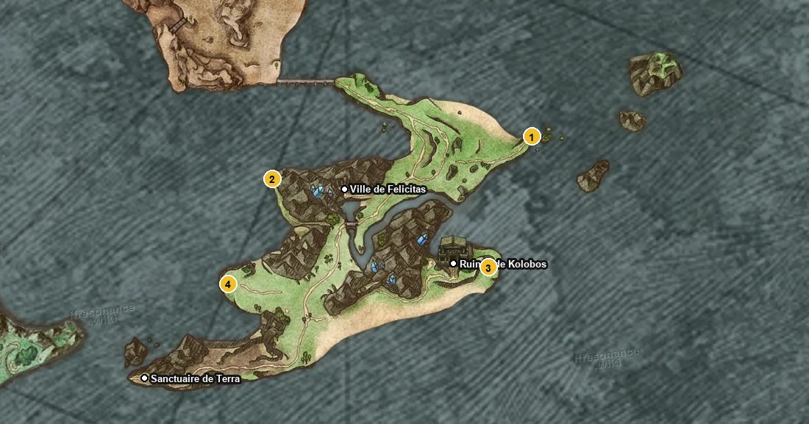
L'île Kolobos sur la mappemonde — objets à ramasser sur la carte : 1. Parchemin glace I ×2 ; 2. Tente ; 3. Éther ; 4. Lame de poison ×2
- 📍 La zone en images : la soluce française du chapitre 1 donne les 18 objectifs un par un avec les coffres, et la route détaillée du Temple de la Terre montre les embranchements coffre par coffre.
L'itinéraire est une grande boucle sur l'île de Grandshelt, et il vaut la peine de l'avoir en tête parce que tu repasses deux fois par Felicitas :
Château de Grandshelt → Temple de la Terre → Mitra → retour au château → Felicitas → village de Kol → Felicitas → ruines de Kolobos → Grandport → tour de Sirène → le bateau.
Deux repères pour ne pas te perdre. Le Temple de la Terre a un point de sauvegarde avec téléportation : il te ramène à l'entrée, où un garde te soigne gratuitement, puis te renvoie devant le boss. Et sur la carte du monde, le chocobo de location du village de Kol accélère tout le reste du chapitre.
Déroulé pas à pas
Du château au Temple de la Terre
-
Quitte le château de Grandshelt par l'ouest, puis descends l'escalier. C'est l'objectif 1, et il s'accompagne de ta première conversation à trois réponses, qui donne à Rain un bonus permanent : +3 Force, +3 Endurance ou +3 Esprit. Aucune ne change l'histoire. Rain étant le Défenseur du groupe, l'Endurance est le choix le plus cohérent.
-
Parle aux deux gardes devant le temple avant d'entrer :
- garde de droite : il te vend des objets ;
- garde de gauche : il te soigne gratuitement, et le point de sauvegarde est juste derrière lui.
-
Fouille à droite du point de sauvegarde : une Potion et un Éther.
-
Examine le Temple de la Terre, objectif 2. Huit coffres t'attendent sur trois zones.
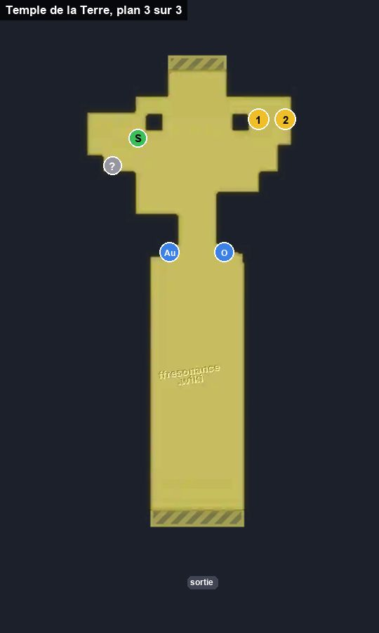
Temple de la Terre, plan 3 sur 3 — coffres : 1. Potion ; 2. Éther · ? : objet à examiner · S : point de sauvegarde · boutiques : Au auberge, O objets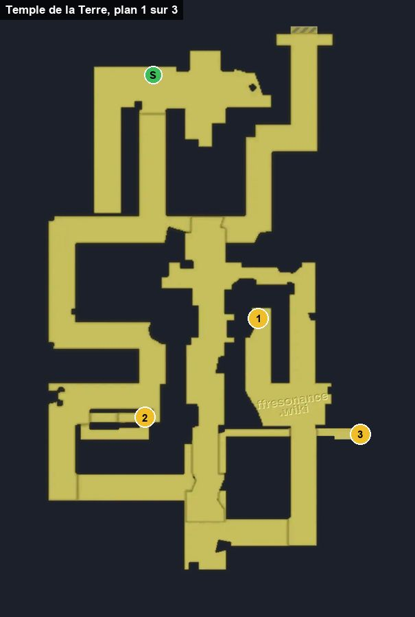
Temple de la Terre, plan 1 sur 3 — coffres : 1. Queue de phénix ; 2. Parchemin feu I ×2 ; 3. Nodachi · S : point de sauvegarde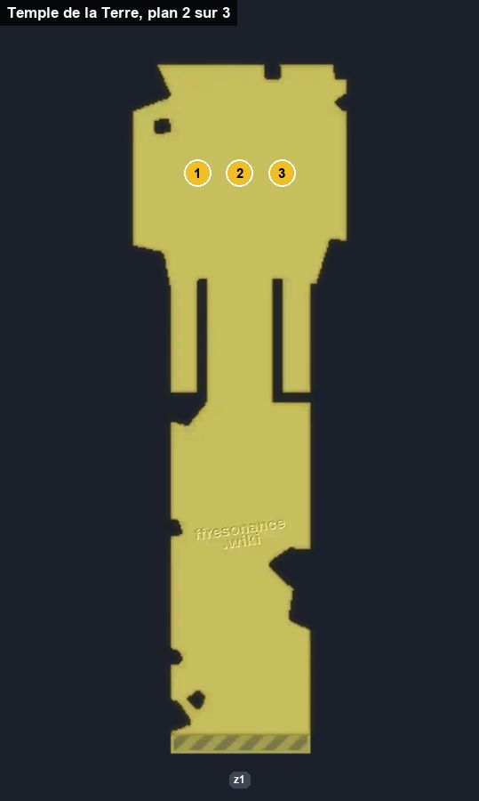
Temple de la Terre, plan 2 sur 3 — coffres : 1. Potion ×3 ; 2. Gilet pare-balles ; 3. 400 gils · zN : passage vers la zone N -
Première zone : prends tout de suite à droite et descends les marches. Au nord-ouest, une Queue de phénix. Puis en haut du chemin, un passage sur la droite cache le Nodachi — un katana nettement supérieur à l'arme de départ de Lasswell, équipe-le immédiatement. Un chemin caché au sud du grand pilier donne deux Parchemin feu I.
-
Deuxième zone, à l'est du chemin principal, une salle avec trois objets :
- Potion ×3 ;
- Gilet pare-balles, à équiper aussitôt sur qui n'a rien ;
- 400 gils.
-
Passe par le point de sauvegarde au nord. Téléporte-toi à l'entrée, fais-toi soigner gratuitement par le garde de gauche, et reviens. C'est gratuit et c'est bête de s'en priver.
-
Bats Belmodar, niveau 4, 2 000 PV, faible au Feu et aux Ténèbres, et il divise par deux les dégâts de Foudre. Les attaques de Feu de Rain vident sa jauge d'étourdissement ; le Glace de Lasswell fait les dégâts. Quand la jauge est à zéro, il perd un tour, encaisse davantage, et ton groupe gagne une action supplémentaire en fin de round.
Mitra, la Vision et l'attaque du château
-
Rends-toi à la ville de Mitra, objectif 3. Cinq coffres sur sept zones : Queue de phénix, deux Éther séparés, Queue de phénix ×3 en zone 2, et une Tente en zone 7. Un endroit à examiner donne 200 gils — ce n'est pas un coffre, juste un point d'interaction.
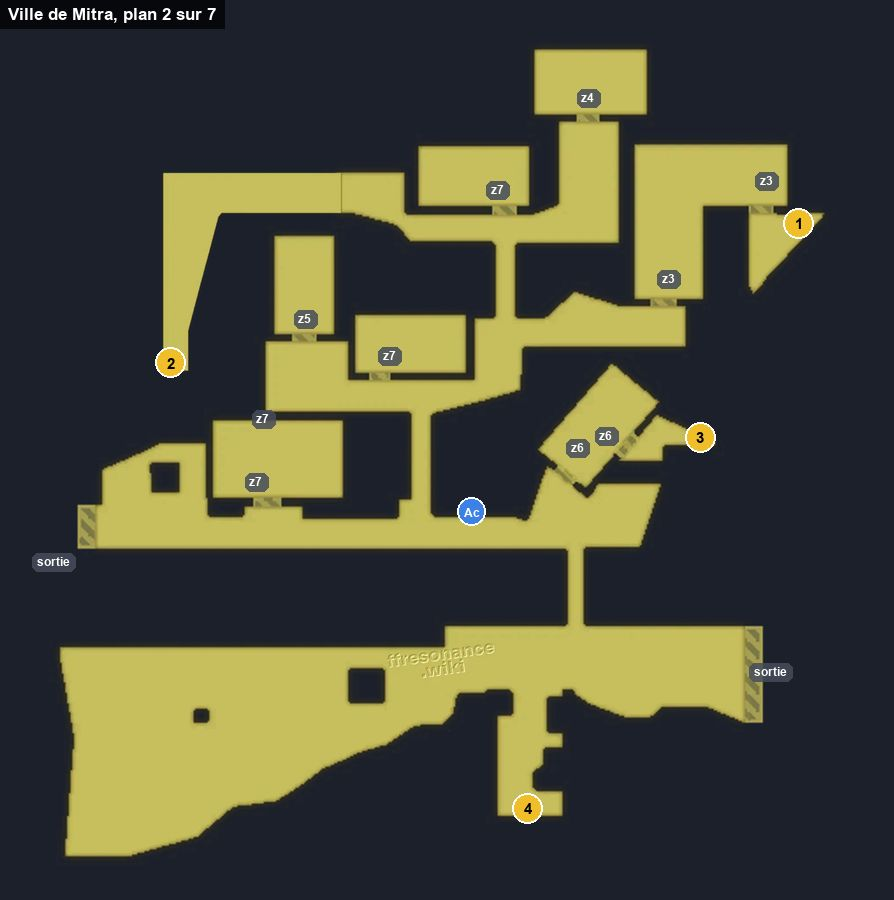
Ville de Mitra, plan 2 sur 7 — coffres : 1. Queue de phénix ; 2. Éther ; 3. Éther ; 4. Queue de phénix ×3 · boutiques : Ac accessoires · zN : passage vers la zone N
Ville de Mitra, plan 7 sur 7 — coffres : 1. Tente · S : point de sauvegarde · boutiques : Ar armures, A armes, O objets, Au auberge · zN : passage vers la zone N -
Fais le tour des quatre boutiques de Mitra : auberge, objets, armes, armures et accessoires. C'est ton premier vrai réapprovisionnement.
-
Va chez Rain, puis inspecte la maison, objectifs 4 et 5.
-
Équipe-toi d'une Vision, objectif 6. C'est le vrai début du jeu : les Visions sont les fantômes de héros Final Fantasy que tu invoques en combat, et la partie 11 explique où sont les 26.
-
Retourne au château de Grandshelt, objectif 7, qui est attaqué.
-
Prends la Brumipotion offerte par un habitant du château. Une seule fois, et elle n'est plus disponible dès l'objectif 9.
-
Enchaîne les trois combats sans fuite du château : trois Squelette niveau 4, trois autres, puis trois Squelette obscur niveau 5 accompagnés du boss.
-
Bats le Cavalier de l'enfer, niveau 6, 4 000 PV, faible à la Glace et à la Lumière.
-
Sauve le roi de Grandshelt, objectif 8, et réponds-lui. Deux réponses possibles, même suite.
-
Ramasse les neuf coffres du château sur ses quatre zones :
- zone 1 : Parchemin feu I ×2, Parchemin feu I ×3, Herbe antidote ×4 ;
- zone 2 : Queue de phénix, Tenue noire, Super-brumipotion ×2, Tenue trompeuse, Queue de phénix ×2, Bruméther +.
<p class="visuel" data-visuel="02-plan-06.jpg"><img src="images/02-plan-06.jpg" alt="Château de Grandshelt, plan 5 sur 12 — coffres : 1. Potion ou 800 gils ; 2. Potion ou 500 gils · zN : passage vers la zone N" width="560"><br><small>Château de Grandshelt, plan 5 sur 12 — coffres : 1. Potion ou 800 gils ; 2. Potion ou 500 gils · zN : passage vers la zone N</small></p>
<p class="visuel" data-visuel="02-plan-07.jpg"><img src="images/02-plan-07.jpg" alt="Château de Grandshelt, plan 6 sur 12 — coffres : 1. Lordly Robes (nom anglais) ; 2. Potion ou 1000 gils ; 3. Queue de phénix · S : point de sauvegarde · zN : passage vers la zone N" width="560"><br><small>Château de Grandshelt, plan 6 sur 12 — coffres : 1. Lordly Robes (nom anglais) ; 2. Potion ou 1000 gils ; 3. Queue de phénix · S : point de sauvegarde · zN : passage vers la zone N</small></p>
<p class="visuel" data-visuel="02-plan-08.jpg"><img src="images/02-plan-08.jpg" alt="Château de Grandshelt, plan 9 sur 12 — coffres : 1. Parchemin feu I ×2 ; 2. Parchemin feu I ×3 ; 3. Herbe antidote ×4 · S : point de sauvegarde · zN : passage vers la zone N" width="560"><br><small>Château de Grandshelt, plan 9 sur 12 — coffres : 1. Parchemin feu I ×2 ; 2. Parchemin feu I ×3 ; 3. Herbe antidote ×4 · S : point de sauvegarde · zN : passage vers la zone N</small></p>
<p class="visuel" data-visuel="02-plan-09.jpg"><img src="images/02-plan-09.jpg" alt="Château de Grandshelt, plan 10 sur 12 — coffres : 1. Queue de phénix ; 2. Tenue noire ; 3. Super-brumipotion ×2 ; 4. Tenue trompeuse ; 5. Queue de phénix ×2 ; 6. Bruméther + · zN : passage vers la zone N" width="560"><br><small>Château de Grandshelt, plan 10 sur 12 — coffres : 1. Queue de phénix ; 2. Tenue noire ; 3. Super-brumipotion ×2 ; 4. Tenue trompeuse ; 5. Queue de phénix ×2 ; 6. Bruméther + · zN : passage vers la zone N</small></p>
<p class="visuel" data-visuel="02-plan-10.jpg"><img src="images/02-plan-10.jpg" alt="Château de Grandshelt, plan 1 sur 12 — coffres : 1. Parchemin feu I ×3 · zN : passage vers la zone N" width="560"><br><small>Château de Grandshelt, plan 1 sur 12 — coffres : 1. Parchemin feu I ×3 · zN : passage vers la zone N</small></p>
-
Affronte Umbra, niveau 17, 99 999 PV, faible à la Lumière. C'est un combat scénarisé : que tu gagnes ou que tu perdes, l'histoire est la même. Tente-le pour voir, sans y laisser tes objets.
-
Fouille la capitale royale : un Éther et 400 gils. Puis le Quartier commerçant : une Source régénérante et deux fois 300 gils.
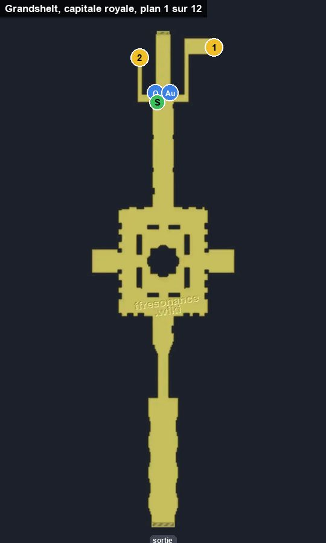
Grandshelt, capitale royale, plan 1 sur 12 — coffres : 1. Éther ; 2. 400 gils · S : point de sauvegarde · boutiques : O objets, Au auberge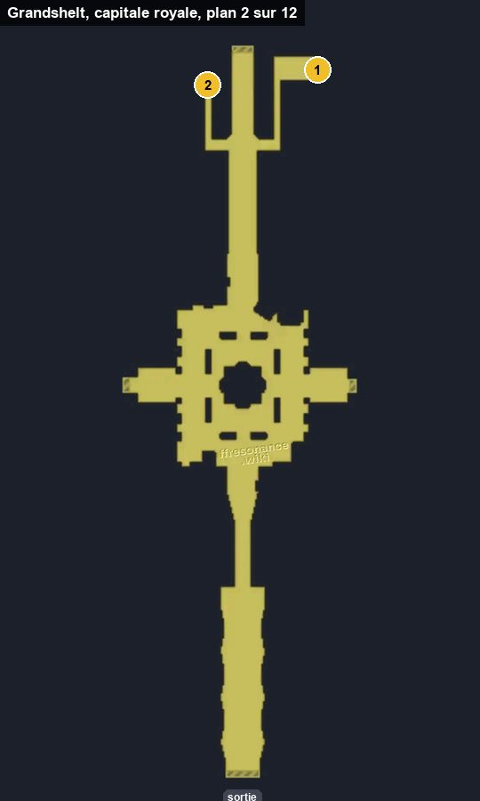
Grandshelt, capitale royale, plan 2 sur 12 — coffres : 1. Queue de phénix ×3 ; 2. 400 gils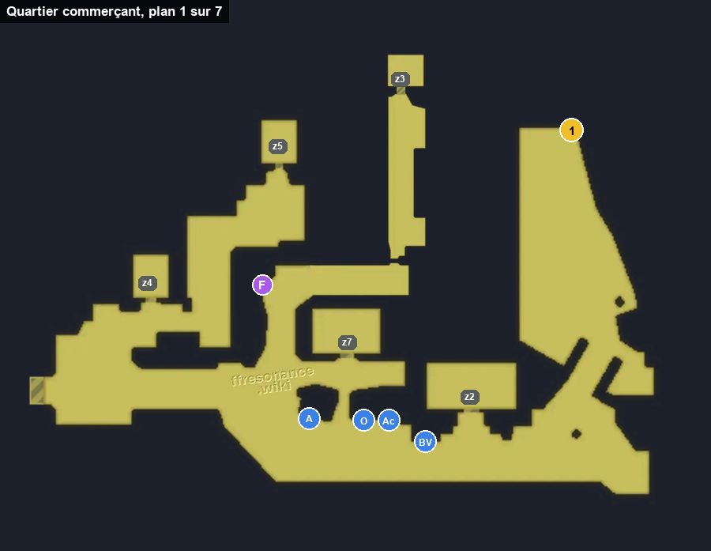
Quartier commerçant, plan 1 sur 7 — coffres : 1. Source régénérante · F : fragment de tablette · boutiques : BV Visions, O objets, A armes, Ac accessoires · zN : passage vers la zone N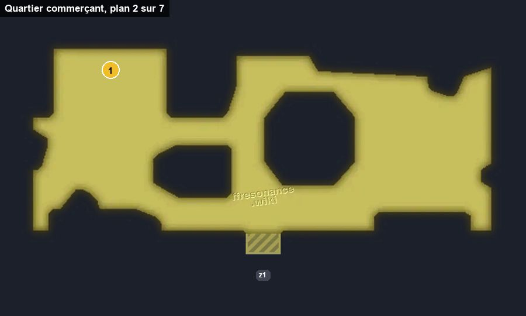
Quartier commerçant, plan 2 sur 7 — coffres : 1. 300 gils · zN : passage vers la zone N
Quartier commerçant, plan 5 sur 7 — S : point de sauvegarde · boutiques : Au auberge · zN : passage vers la zone N -
Prends la quête annexe Rêve idéaliste au Quartier commerçant. Détails dans la partie 13.
Felicitas, Kol et le chocobo
-
Rends-toi à Felicitas, objectif 9. Quatre coffres sur trois zones : Parchemin glace I ×2, une Tente et Fumigène ×2 en zone 1, puis Corne de licorne ×2 en zone 3. Ramasse aussi les deux Fragment de tablette.

Ville de Felicitas, plan 1 sur 3 — coffres : 1. Parchemin glace I ×2 ; 2. Tente ; 3. Fumigène ×2 · F : fragment de tablette (×2) · zN : passage vers la zone N
Ville de Felicitas, plan 2 sur 3 — S : point de sauvegarde · boutiques : A armes, Au auberge, O objets, Ar armures · zN : passage vers la zone N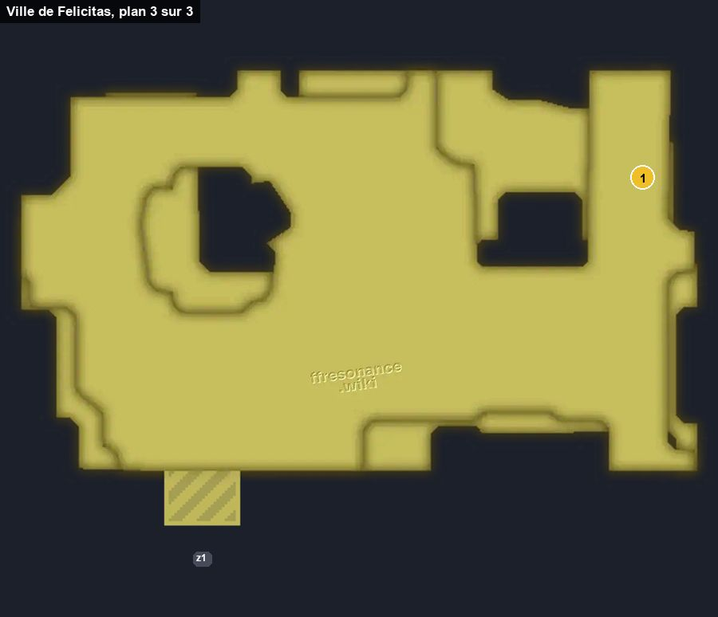
Ville de Felicitas, plan 3 sur 3 — coffres : 1. Corne de licorne ×2 · zN : passage vers la zone N -
Accepte les cadeaux du Quartier commerçant de Felicitas : deux habitants offrent Potion ×3 et un Éther, une fois chacun.
-
Encaisse le combat contre trois Gobelin niveau 6 sur la route.
-
Va au village de Kol, objectif 10, et dors à l'auberge, objectif 11. Deux coffres sur quatre zones : une Tente et Herbe antidote ×3, plus un Fragment de tablette.
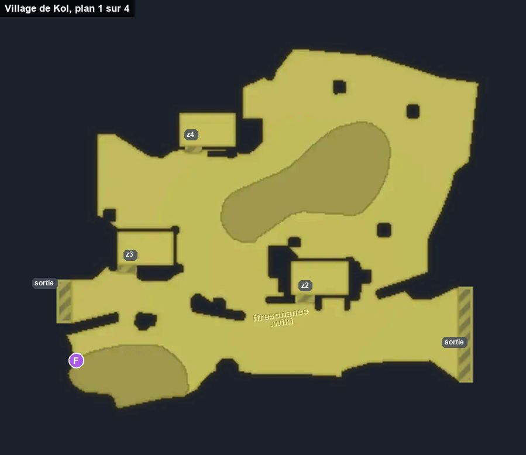
Village de Kol, plan 1 sur 4 — F : fragment de tablette · zN : passage vers la zone N
Village de Kol, plan 2 sur 4 — coffres : 1. Tente · zN : passage vers la zone N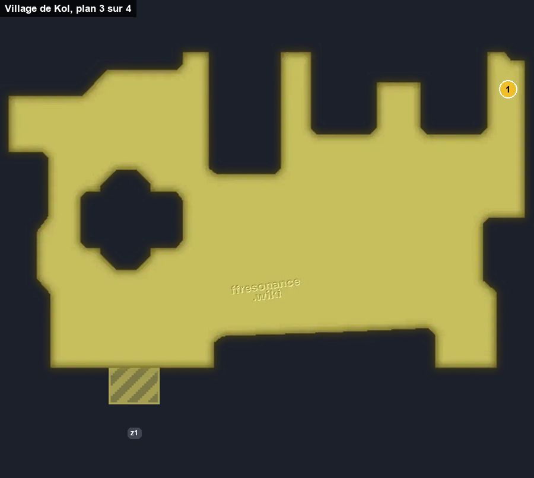
Village de Kol, plan 3 sur 4 — coffres : 1. Herbe antidote ×3 · zN : passage vers la zone N
Village de Kol, plan 4 sur 4 — S : point de sauvegarde · boutiques : Au auberge · zN : passage vers la zone N -
Loue un chocobo, objectif 12. La carte du monde devient beaucoup moins pénible.
-
Détour conseillé à pied : le Fourmilion niveau 20 ne se rencontre que sur la route à pied, et le Maraudeur niveau 15 attend dans la Grotte du maraudeur — il donne un Fragment de magilithe, l'une des deux monnaies d'éveil des Visions.
-
Retourne à Felicitas, objectif 13, pour rejoindre les ruines.
Kolobos, Grandport et la tour de Sirène
- Entre dans les ruines de Kolobos, objectif 14. Quatre coffres sur deux zones :
- zone 1 : Éther ×2, Herbe antidote ×3 ;
- zone 2 : Lame de poison ×2, Camisolépine ;
- plus deux Fragment de tablette.
<p class="visuel" data-visuel="02-plan-20.jpg"><img src="images/02-plan-20.jpg" alt="Ruines de Kolobos, plan 1 sur 2 — coffres : 1. Éther ×2 ; 2. Herbe antidote ×3 · F : fragment de tablette (×2) · zN : passage vers la zone N" width="560"><br><small>Ruines de Kolobos, plan 1 sur 2 — coffres : 1. Éther ×2 ; 2. Herbe antidote ×3 · F : fragment de tablette (×2) · zN : passage vers la zone N</small></p>
<p class="visuel" data-visuel="02-plan-21.jpg"><img src="images/02-plan-21.jpg" alt="Ruines de Kolobos, plan 2 sur 2 — coffres : 1. Lame de poison ×2 ; 2. Camisolépine · S : point de sauvegarde · zN : passage vers la zone N" width="400"><br><small>Ruines de Kolobos, plan 2 sur 2 — coffres : 1. Lame de poison ×2 ; 2. Camisolépine · S : point de sauvegarde · zN : passage vers la zone N</small></p>
-
Passe le pont et ses deux combats imposés : trois Soldat spectral niveau 5, puis quatre Soldat spectral renforcé niveau 9.
-
Cherche la mère d'Emma, objectif 15, et bats Voracité, niveau 9, 2 500 PV, faible à la Glace.
-
Reste en garde : Voracité revient aussitôt en Voracité v2, niveau 10, 7 000 PV, cette fois faible à la Lumière. Change d'élément entre les deux formes, c'est tout l'enjeu du combat.
-
Prends la quête annexe Secrets dévoilés sur place.
-
Trouve un bateau à Grandport, objectif 16. Deux coffres : Parchemin foudre I ×2 et Fumigène ×2, plus deux Fragment de tablette, et une scène qui donne un Fragment de magilithe.
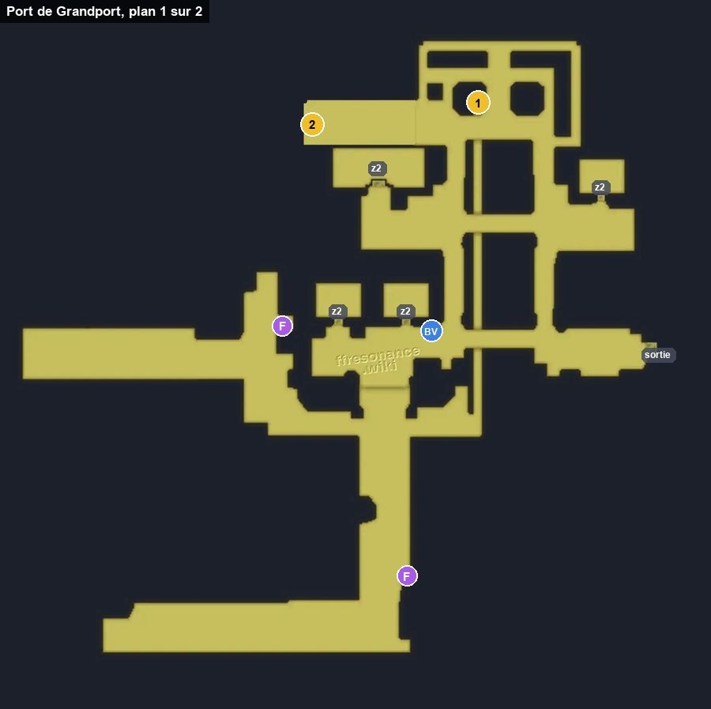
Port de Grandport, plan 1 sur 2 — coffres : 1. Parchemin foudre I ×2 ; 2. Fumigène ×2 · F : fragment de tablette (×2) · boutiques : BV Visions · zN : passage vers la zone N
Port de Grandport, plan 2 sur 2 — S : point de sauvegarde · boutiques : Au auberge, O objets, A armes, Ar armures · zN : passage vers la zone N -
Achète le Chapelet à 1 500 gils chez le marchand d'armures et d'accessoires. Il empêche le Charme, et c'est exactement ce que Sirène va t'infliger.
-
Passe à la boutique de Visions de Grandport, la première du jeu.
-
Rends visite à Sirène, objectif 17, et grimpe sa tour. Sept coffres sur une seule zone :
- Sakura-fubuki, une arme ;
- un deuxième Chapelet, et un Fragment de magilithe ;
- Éther, Éther ×2, Herbe d'écho ×2 ;
- trois Fragment de tablette ;
- et le coffre des Gants de Genji, qui est piégé.
<p class="visuel" data-visuel="02-plan-24.jpg"><img src="images/02-plan-24.jpg" alt="Tour de Sirène, plan — coffres : 1. Gants de Genji ; 2. Sakura-fubuki ; 3. Fragment de magilithe ; 4. Chapelet ; 5. Éther ; 6. Éther ×2 ; 7. Herbe d’écho ×2 · F : fragment de tablette (×3) · S : point de sauvegarde · zN : passage vers la zone N" width="400"><br><small>Tour de Sirène, plan — coffres : 1. Gants de Genji ; 2. Sakura-fubuki ; 3. Fragment de magilithe ; 4. Chapelet ; 5. Éther ; 6. Éther ×2 ; 7. Herbe d’écho ×2 · F : fragment de tablette (×3) · S : point de sauvegarde · zN : passage vers la zone N</small></p>
- Décide pour les Gants de Genji. Ouvrir le coffre fait surgir Gilgamesh, niveau 11, 6 000 PV : il vole les gants et s'enfuit, et tu ne peux pas l'en empêcher. Le coffre est entièrement optionnel, les gants se récupèrent plus tard, et la partie 20 détaille toute la poursuite. Le seul gain immédiat est un Éther, à voler au premier tour.
- Bats Sirène, niveau 11, 20 000 PV, faible à la Foudre, et elle résiste à l'Eau. Son attaque Séduction charme ton groupe : avec le Chapelet, le problème disparaît.
- Encaisse ta première Chimère. Sirène rejoint Fina après le combat : c'est la seule des neuf Chimères que le jeu te donne automatiquement, et elle apporte en prime un Fragment de magilithe. Son invocation, Voix ensorcelante, peut endormir et rendre muet tout le groupe ennemi. Partie 12.
- Réponds-lui après le combat : trois réponses, qui donnent cette fois un bonus permanent à Fina — +10 PM, +3 Endurance ou +3 Esprit. Comme elle est ta seule soigneuse, les +10 PM sont le choix sûr.
- Prends la quête annexe Le poids de la pitié dans la tour, et Coup de main au port une fois l'objectif 18 affiché.
- Monte à bord du bateau pour Dirnado, objectif 18. Rien ne se ferme derrière toi : tu pourras revenir.
Quêtes et lieux
Les 18 objectifs, dans l'ordre
| № | Objectif tel qu'il s'affiche |
|---|---|
| 1 | Quitter le château de Grandshelt |
| 2 | Examiner le Temple de la Terre |
| 3 | Se rendre à la ville de Mitra |
| 4 | Aller chez Rain |
| 5 | Inspecter la maison de Rain |
| 6 | S'équiper d'une vision |
| 7 | Se rendre au château de Grandshelt |
| 8 | Sauver le roi de Grandshelt |
| 9 | Se rendre à Felicitas |
| 10 | Se rendre au village de Kol |
| 11 | Séjourner à l'auberge du village de Kol |
| 12 | Louer un chocobo |
| 13 | Se rendre à Felicitas |
| 14 | Se rendre aux ruines de Kolobos |
| 15 | Chercher la mère d'Emma |
| 16 | Trouver un bateau à Grandport |
| 17 | Rendre visite à Sirène |
| 18 | Monter à bord du bateau pour Dirnado |
Les objectifs 9 et 13 portent le même libellé. Ce n'est pas un bug d'affichage : tu passes bien deux fois à Felicitas, avant et après le village de Kol.
Les villes et ce qu'elles proposent
| Lieu | Zones | Coffres | Boutiques |
|---|---|---|---|
| Château de Grandshelt | 4 | 9 | — |
| Grandshelt, capitale royale | — | 2, plus le Quartier commerçant | Quartier commerçant |
| Temple de la Terre | 3 | 8 | Un garde vendeur, un garde soigneur |
| Ville de Mitra | 7 | 5 | Auberge, objets, armes, armures et accessoires |
| Ville de Felicitas | 3 | 4 | Quartier commerçant |
| Village de Kol | 4 | 2 | Auberge, location de chocobo |
| Ruines de Kolobos | 2 | 4 | — |
| Port de Grandport | 2 | 2 | Armures et accessoires, boutique de Visions |
| Tour de Sirène | 1 | 7 | — |
Les boss et les combats notables
| Combat | Niveau | PV | Faiblesse | Note |
|---|---|---|---|---|
| Belmodar | 4 | 2 000 | Feu, Ténèbres | Divise la Foudre par deux. Récompense : 300 EXP, 750 gils, Queue de phénix |
| Cavalier de l'enfer | 6 | 4 000 | Glace, Lumière | Arrive avec trois Squelette obscur |
| Umbra | 17 | 99 999 | Lumière | Scénarisé : victoire ou défaite, même suite |
| Voracité | 9 | 2 500 | Glace | Enchaîne directement sur sa seconde forme |
| Voracité v2 | 10 | 7 000 | Lumière | La faiblesse change entre les deux formes |
| Sirène | 11 | 20 000 | Foudre, résiste à l'Eau | Séduction charme le groupe. Le Chapelet l'annule. Elle devient ta première Chimère |
| Gilgamesh | 11 | 6 000 | Aucune | Optionnel et imbattable. Jauge d'étourdissement de 1 000 |
| Fourmilion | 20 | — | — | Optionnel, sur la route de Kol, à pied seulement |
| Maraudeur | 15 | — | — | Optionnel, Grotte du maraudeur. Donne un Fragment de magilithe |
| Pot citrin | 15 | — | — | Dans la tour de Sirène, parmi les ennemis normaux |
Les ennemis ordinaires, par lieu
| Lieu | Ennemis |
|---|---|
| Temple de la Terre | Lierre rampant, Noctule-acier, Rat-garou, Mandragore |
| Château de Grandshelt | Feu follet de feu, Squelette, Âme, Soldat spectral, Squelette obscur, Sergent |
| Ruines de Kolobos | Fantôme, Goule, Pauplium, Œil flottant, Soldat imposteur, Ancien chevalier, Arme magitech |
| Tour de Sirène | Abtu, Sahuagin, Élémentaire cyan, Mage, Flambos vert, Requin, Pot citrin |
Les quatre quêtes annexes du chapitre
| Quête | Où la prendre |
|---|---|
| Rêve idéaliste | Quartier commerçant de Grandshelt, puis à poursuivre à Felicitas |
| Secrets dévoilés | Ruines de Kolobos |
| Le poids de la pitié | Tour de Sirène |
| Coup de main | Port de Grandport, à l'objectif 18 |
Aucune n'expire : une fois apparue, une quête annexe t'attend aussi longtemps qu'il faut. Le détail des 33 est dans la partie 13.
Butin exhaustif
| Nom exact | Type | Où / comment l'obtenir | Utilité |
|---|---|---|---|
| Nodachi | Arme, katana | Temple de la Terre, passage à droite en haut du chemin | Grosse amélioration pour Lasswell, dès la première heure |
| Sakura-fubuki | Arme, katana | Tour de Sirène | L'arme la plus forte du chapitre |
| Gilet pare-balles | Armure | Temple de la Terre, salle est de la zone 2 | Première armure correcte du jeu |
| Tenue noire | Armure | Château de Grandshelt, zone 2 | Équipement léger |
| Tenue trompeuse | Armure | Château de Grandshelt, zone 2 | Équipement léger |
| Camisolépine | Armure | Ruines de Kolobos, zone 2 | Armure de milieu de chapitre |
| Chapelet | Accessoire | Tour de Sirène, et en vente 1 500 gils à Grandport | Empêche le Charme : la réponse à Séduction |
| Chimère Sirène | Chimère | Battre Sirène au sommet de sa tour | La première des neuf, et la seule offerte par le scénario. Partie 12 |
| Gants de Genji | Accessoire | Tour de Sirène, coffre piégé | Volés par Gilgamesh à l'ouverture. Récupérables au chapitre 5, partie 20 |
| Potion | Consommable | Entrée du Temple de la Terre, ×3 en zone 2, ×3 offertes à Felicitas | Soin de base |
| Éther | Consommable | Temple de la Terre, Mitra ×2, Felicitas, ruines de Kolobos ×2, tour de Sirène ×3, capitale | Rend des points de magie |
| Queue de phénix | Consommable | Temple de la Terre, château ×3, Mitra ×4, et la récompense de Belmodar | Relève un personnage K.O. |
| Herbe antidote | Consommable | Château ×4, village de Kol ×3, ruines de Kolobos ×3 | Soigne le Poison |
| Herbe d'écho | Consommable | Tour de Sirène, ×2 | Soigne le Silence |
| Corne de licorne | Consommable | Felicitas, zone 3, ×2 | Soigne la Confusion |
| Fumigène | Consommable | Felicitas ×2, Grandport ×2 | Fuite garantie d'un combat normal |
| Tente | Consommable | Mitra zone 7, Felicitas zone 1, village de Kol | Soin de groupe sur la carte du monde |
| Brumipotion | Consommable | Offerte par un habitant du château, une seule fois | Soin de groupe |
| Super-brumipotion | Consommable | Château de Grandshelt, zone 2, ×2 | Soin de groupe amélioré |
| Bruméther + | Consommable | Château de Grandshelt, zone 2 | Points de magie pour tout le groupe |
| Source régénérante | Consommable | Quartier commerçant de Grandshelt | Soin |
| Parchemin feu I | Consommable offensif | Temple de la Terre ×2, château ×2 et ×3 | Dégâts de Feu sans dépenser de magie |
| Parchemin glace I | Consommable offensif | Felicitas, zone 1, ×2 | Dégâts de Glace |
| Parchemin foudre I | Consommable offensif | Grandport, zone 1, ×2 | Dégâts de Foudre, utile contre Sirène |
| Lame de poison | Consommable offensif | Ruines de Kolobos, zone 2, ×2 | Inflige le Poison |
| Fragment de tablette | Objet clé | Felicitas ×2, Kol ×1, Kolobos ×2, Grandport ×2, tour de Sirène ×3 | Ouvre les coffres du Palais de l'Oubli — ce n'est pas un objet d'éveil. Il y en a 99 dans le jeu, répartis dans 48 lieux. Partie 11 |
| Fragment de magilithe | Objet d'éveil | Scène à Grandport, tour de Sirène, le Maraudeur, et Sirène | Éveille une Vision au niveau 1. Partie 11 |
| 400 gils | Argent | Temple de la Terre, et capitale royale | — |
| 300 gils | Argent | Quartier commerçant de Grandshelt, deux fois | — |
| 200 gils | Argent | Mitra, endroit à examiner | — |
Conseils et pièges
Le Chapelet avant la tour, pas après
Sirène a 20 000 points de vie quand tes personnages en ont à peine deux cents. Le combat est long, et sa seule vraie menace est Séduction, qui charme un de tes personnages et le retourne contre toi.
Le Chapelet coûte 1 500 gils à Grandport, et il annule le Charme. À ce stade du jeu, c'est cher ; c'est quand même le meilleur achat du chapitre. Un second exemplaire se trouve dans la tour elle-même, donc tu peux en couvrir deux personnages.
Et puisqu'elle est faible à la Foudre : garde les deux Parchemin foudre I de Grandport pour elle.
Les faiblesses qui changent en cours de combat
Voracité est le premier boss à te l'apprendre : sa première forme est faible à la Glace, sa seconde à la Lumière. Si tu as construit tout ton tour sur la Glace, tu perds deux rounds à comprendre pourquoi ça ne rentre plus.
Prends le réflexe maintenant : à chaque changement de forme, relis la fiche de l'ennemi. Le jeu l'affiche.
La jauge d'étourdissement, expliquée par Belmodar
Belmodar est le boss qui sert de leçon. Deux idées à retenir :
- taper dans la faiblesse vide la jauge d'étourdissement plus vite ;
- jauge vide, l'ennemi perd un tour et encaisse davantage, et ton groupe gagne une action supplémentaire en fin de round.
C'est le cœur du système de combat de tout le jeu, et la partie 15 y revient en détail.
Le détour à pied qui vaut un Fragment de magilithe
Dès que tu as le chocobo, tu as envie de ne plus descendre. Fais quand même l'aller-retour à pied vers la Grotte du maraudeur : le Maraudeur niveau 15 donne un Fragment de magilithe, et ces fragments sont la ressource qui bloque l'éveil des Visions pendant toute la première moitié du jeu.
Le Fourmilion niveau 20 est sur le même trajet, et il ne se rencontre qu'à pied. Il est largement au-dessus de ton niveau : regarde-le, note-le, reviens plus tard.
Le téléporteur du Temple de la Terre
Le point de sauvegarde du temple téléporte vers l'entrée et revient. L'entrée a un garde qui soigne gratuitement. Dans un jeu où les Potions coûtent cher au chapitre 1, c'est de l'argent gagné : fais l'aller-retour avant Belmodar.
Alertes
- ⏳ La Brumipotion du château ne s'obtient qu'avant l'objectif 9. Un habitant du château de Grandshelt l'offre une seule fois, et il ne la propose plus dès que tu partiras pour Felicitas.
Check-list
- Première conversation à trois réponses faite, statistique choisie
- Les 8 coffres du Temple de la Terre vidés, Nodachi équipé sur Lasswell
- Gilet pare-balles équipé
- Belmodar battu
- Les 5 coffres de Mitra vidés, les 4 boutiques visitées
- Première Vision équipée
- Brumipotion offerte récupérée au château
- Cavalier de l'enfer battu, les 9 coffres du château vidés
- Umbra affronté, pour voir
- Quête Rêve idéaliste prise au Quartier commerçant
- Les 4 coffres de Felicitas vidés, cadeaux des habitants pris
- Chocobo loué au village de Kol
- Maraudeur battu, Fragment de magilithe récupéré
- Les 4 coffres des ruines de Kolobos vidés
- Voracité et Voracité v2 battus
- Quête Secrets dévoilés prise
- Chapelet acheté à Grandport
- Les 7 coffres de la tour de Sirène vidés, choix fait pour les Gants de Genji
- Sirène battue, Chimère Sirène obtenue, troisième conversation faite
- Quêtes Le poids de la pitié et Coup de main prises
- Les 10 Fragment de tablette et les 4 Fragment de magilithe du chapitre ramassés
Partie 03
Chapitre 2 : Bleu éternel
L'essentiel
- Les boss : Foudre liquide, Maman bombo et ses 21 000 PV, puis Adrastea au bout d'une évasion chronométrée de 15 minutes.
- Ne rate pas : l'épreuve de Ramuh au Mont foudroyant, qui donne ta première Chimère et qui est entièrement optionnelle.
- Le choix : Lid te vend un sentier facile au Mont foudroyant pour 1 000 gils. Refuse : il s'ouvre gratuitement après la traversée.
- Avant de partir : équipe une Vision de Foudre avant le chantier naval de Mobrise, et sauvegarde dans un emplacement séparé quand le jeu te le demande.
Objectif
Rejoindre Dirnado, l'île mécanique, pour trouver un aéronef. Lid rejoint le groupe, et avec elle le Mécabo, son mécha de poche. Le chapitre se termine quand tu décolles vers Olderion.
C'est aussi le chapitre qui ouvre les trois grands systèmes annexes du jeu : les Chimères, les sanctuaires de Visions et la forge.
Itinéraire
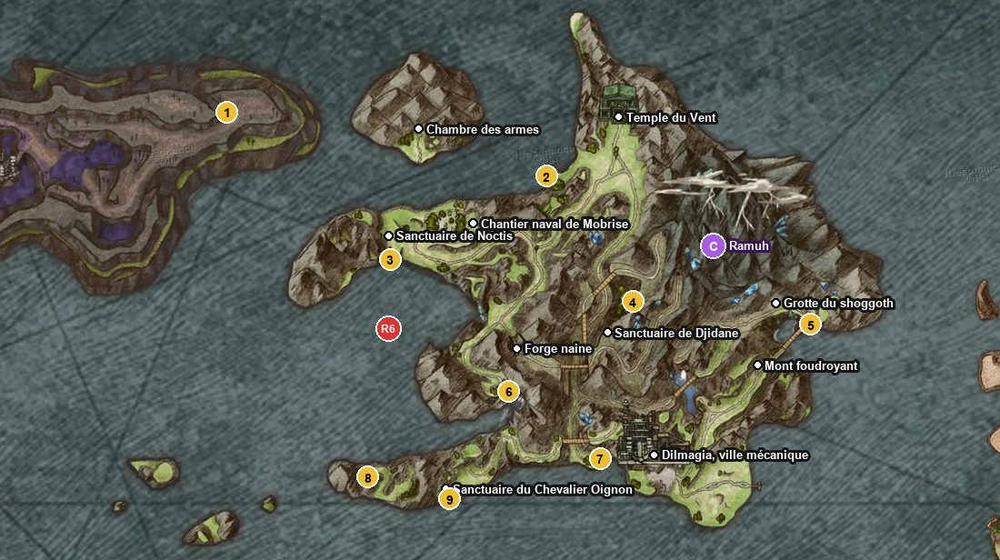
L'île Dirnado sur la mappemonde — objets à ramasser sur la carte : 1. Parchemin vent II ×2 ; 2. Bruméther ; 3. Queue de phénix ×3 ; 4. Parchemin terre I ×2 ; 5. Lame laser ; 6. Plume de phénix ; 7. Brumipotion ×3 ; 8. Fragment de magilithe ; 9. Marteau en bronze · fouilles au radar : R6. Marteau ancien · C : Ramuh
- 📍 La zone en images : la soluce française du chapitre 2 donne les 14 objectifs avec les coffres et les boss, et la soluce vidéo française montre l'évasion chronométrée en temps réel.
L'itinéraire fait un aller-retour, et le détour par la Forge naine est au milieu :
Dilmagia, ville mécanique → chantier naval voisin → Mont foudroyant → Forge naine → retour au Mont foudroyant → chantier naval de Mobrise → Temple du Vent → retour à Dilmagia.
Le Mont foudroyant se traverse donc deux fois. C'est pour ça que le sentier payant de Lid est une mauvaise affaire : il devient gratuit au retour.
Déroulé pas à pas
Dilmagia et le chantier naval
-
Rends-toi à Dilmagia, ville mécanique, objectif 1.
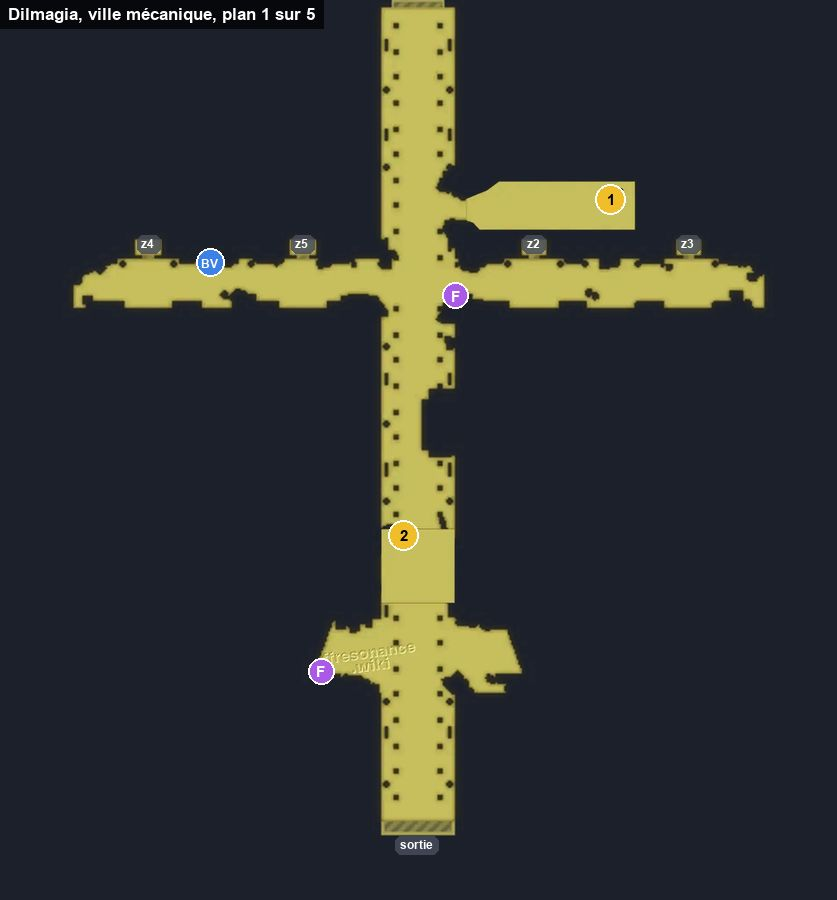
Dilmagia, ville mécanique, plan 1 sur 5 — coffres : 1. Gants isolants ; 2. 500 gils · F : fragment de tablette (×2) · boutiques : BV Visions · zN : passage vers la zone N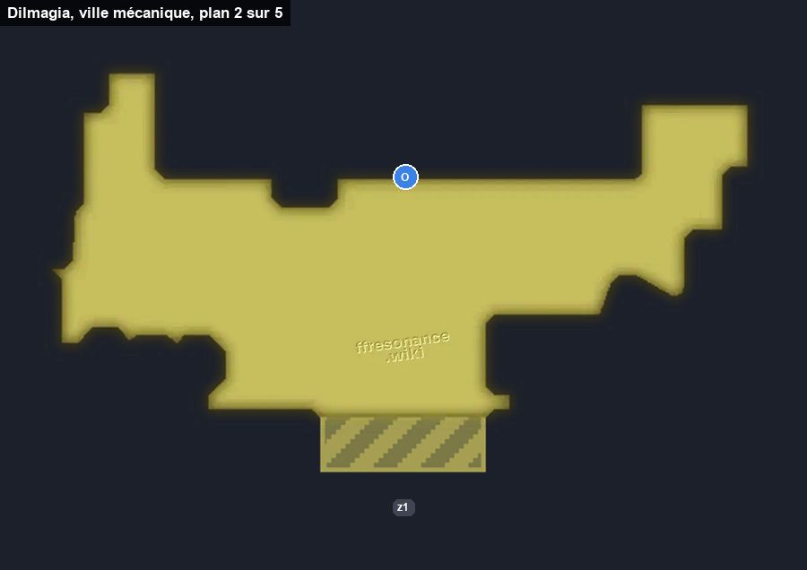
Dilmagia, ville mécanique, plan 2 sur 5 — boutiques : O objets · zN : passage vers la zone N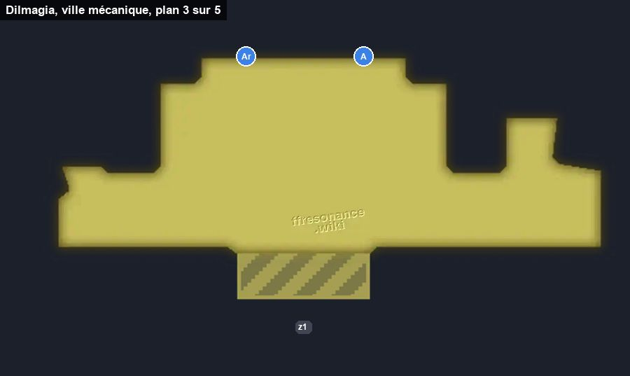
Dilmagia, ville mécanique, plan 3 sur 5 — boutiques : Ar armures, A armes · zN : passage vers la zone N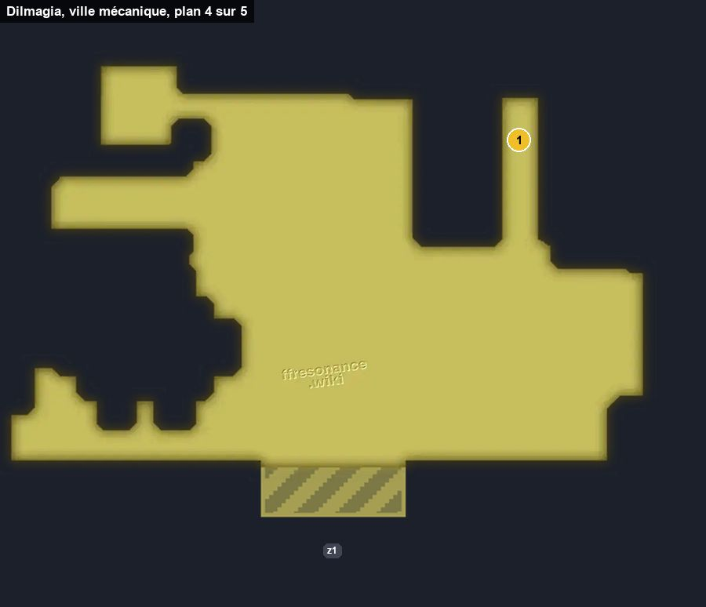
Dilmagia, ville mécanique, plan 4 sur 5 — coffres : 1. 500 gils · zN : passage vers la zone N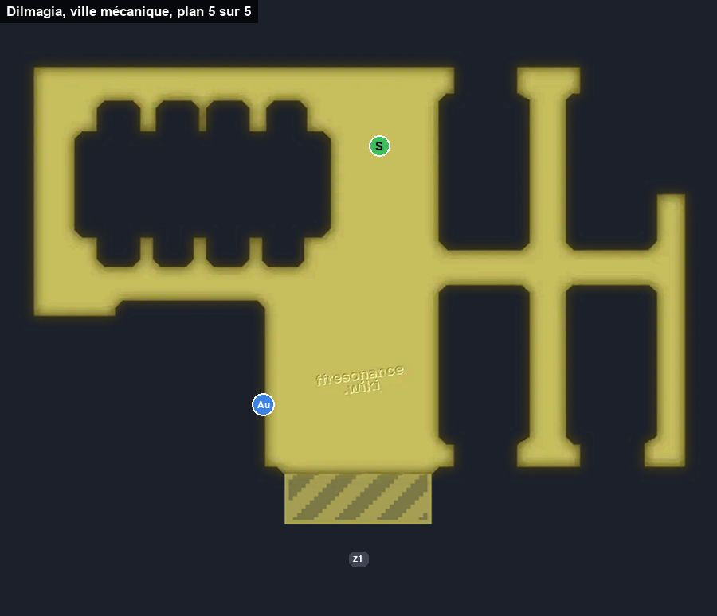
Dilmagia, ville mécanique, plan 5 sur 5 — S : point de sauvegarde · boutiques : Au auberge · zN : passage vers la zone N -
Glane des informations, objectif 2 : il faut parler à trois habitants, dans l'ordre que tu veux.
-
Vide les trois coffres de la ville : des Gants isolants et deux fois 500 gils.
-
Accepte tout de suite la quête Virtuose elfique. Sa première étape se déclenche au Mont foudroyant, et si tu ne l'as pas prise avant d'y aller, tu refais le trajet.
-
Repère les trois sanctuaires de Visions qui s'ouvrent ici : celui du Chevalier Oignon, celui de Djidane et celui de Noctis. Chacun pose une question, et la partie 11 donne les réponses.
-
Note la Chambre des armes. Sa porte s'ouvre pendant ce chapitre, mais ses épreuves demandent le niveau 50 et une arme ancienne. Reviens plus tard : c'est la partie 19.
-
Détour optionnel : le Shoggoth niveau 25 attend dans la Grotte du shoggoth. Il est faible à la Terre et à l'Eau, la fuite marche toujours, et le battre donne un Fragment de magilithe. À ton niveau, prends plutôt note et reviens.
-
Trouve Lid au chantier naval, objectif 3. Elle rejoint le groupe.
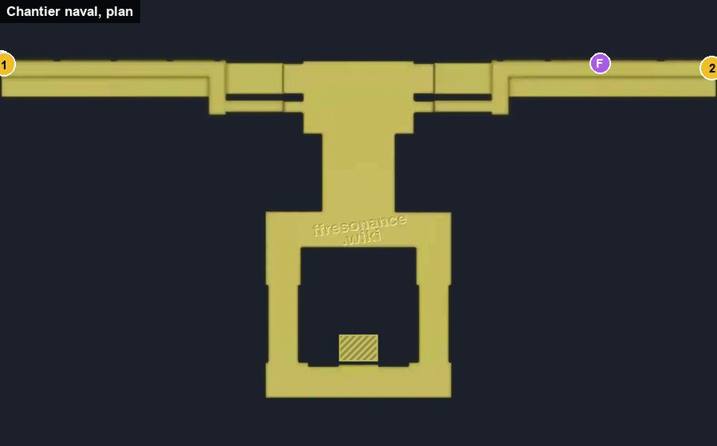
Chantier naval, plan — coffres : 1. Tenue antimagie ; 2. 500 gils · F : fragment de tablette (×2) -
Réponds non quand Lid te demande si tu es prêt à partir. Ça te laisse fouiller tranquillement, et tu relances la conversation quand tu veux.
-
Prends les deux coffres du chantier : une Tenue antimagie et 500 gils.
Le Mont foudroyant et la Forge naine
-
Traverse le Mont foudroyant, objectif 4.
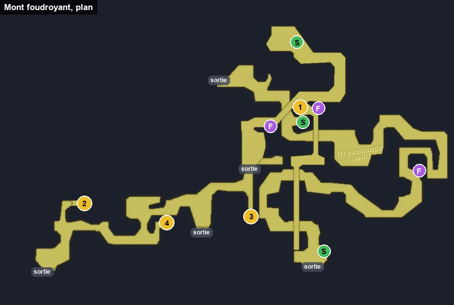
Mont foudroyant, plan — coffres : 1. Cape du Raijû ; 2. Poignets de force ; 3. 800 gils ; 4. Sabre lunaire · F : fragment de tablette (×3) · S : point de sauvegarde -
Refuse le sentier facile de Lid. Elle le propose pour 1 000 gils ; il s'ouvre gratuitement une fois la traversée faite, et tu repasseras forcément par là. Tu peux changer d'avis plus tard si l'envie te prend.
-
Ramasse les quatre coffres du mont :
- Cape du Raijû ;
- Poignets de force ;
- Sabre lunaire ;
- 800 gils.
-
Bats Foudre liquide près de la sortie : niveau 13, 10 000 PV, faible à la Terre, et totalement insensible à la Foudre. Range tes sorts de Foudre pour ce combat-là.
-
Tente l'épreuve de Ramuh, optionnelle, niveau 20, au bout du chemin caché du Mont foudroyant qui part près de la Forge naine. Aucune fuite possible : il te pose une question, puis il t'affronte. Il est faible à la Terre et résiste à la Foudre, et il lance une attaque très forte quand sa barre de choc est basse. Le battre ajoute Ramuh à tes Chimères, avec son invocation Foudre du jugement. Détails dans la partie 12.
-
Rends visite à Borin à la Forge naine, objectif 5.
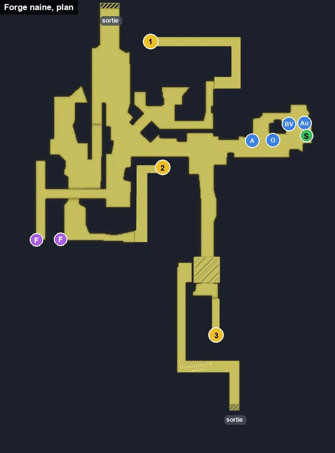
Forge naine, plan — coffres : 1. Masse ; 2. Serre-tête ; 3. Queue de phénix ×3 · F : fragment de tablette (×2) · S : point de sauvegarde · boutiques : O objets, BV Visions, A armes, Au auberge -
Vide les trois coffres de la forge : une Masse, un Serre-tête et Queue de phénix ×3.
-
Bats Maman bombo, objectif 6 : niveau 14, 21 000 PV, faible à l'Eau, elle résiste au Feu. Une Vision d'Eau change tout ici.
-
Pose la Barrière de Fina avant son autodestruction. C'est son attaque de fin de combat, et sans barrière elle peut emporter ton groupe entier.
-
Laisse la quête Mécabo débarque ! se lancer toute seule, et parle à Roy qui ouvre Énigmes lyriques.
-
Retourne voir Borin, objectif 7.
L'évasion du chantier naval de Mobrise
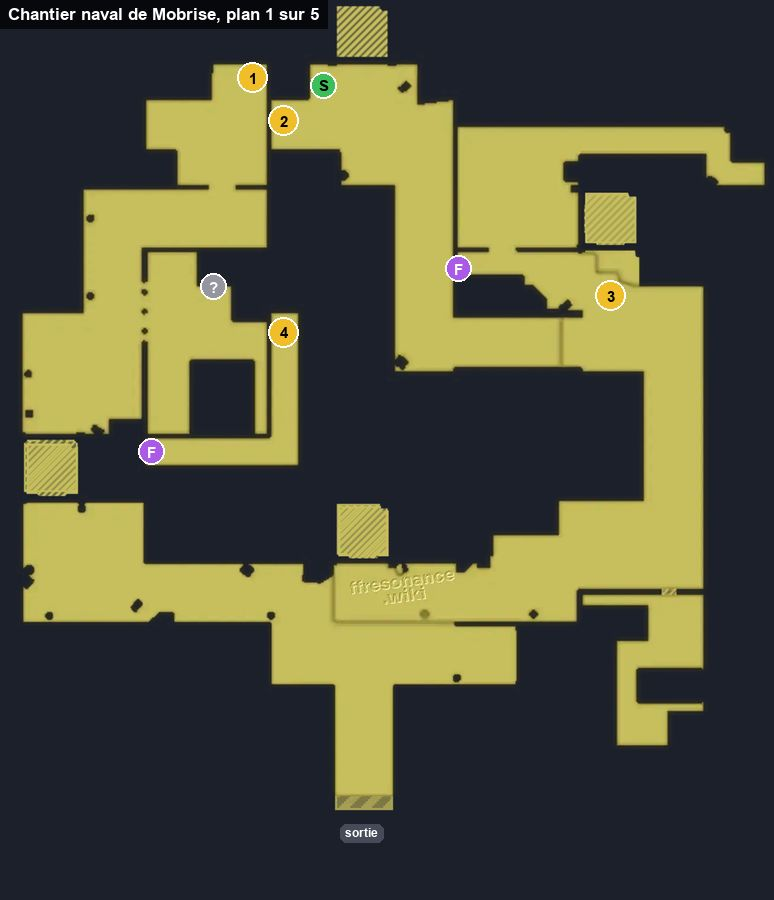
Chantier naval de Mobrise, plan 1 sur 5 — coffres : 1. Charme plume de chocobo ; 2. Collyre ×3 ; 3. Parchemin foudre I ×2 ; 4. Pardessus protecteur · F : fragment de tablette (×2) · ? : objet à examiner · S : point de sauvegarde
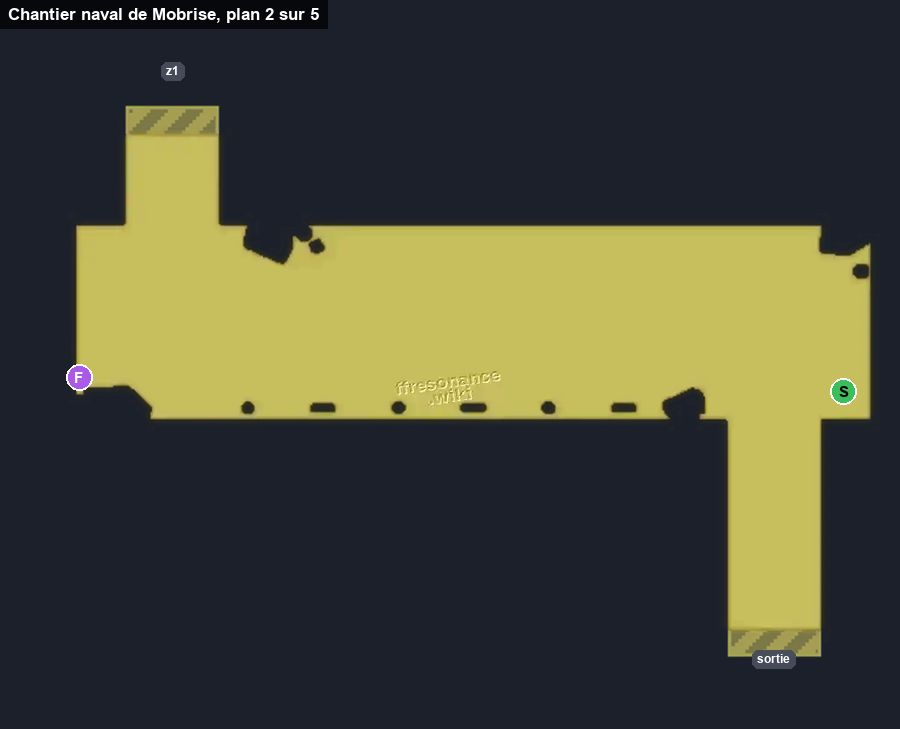
Chantier naval de Mobrise, plan 2 sur 5 — F : fragment de tablette · S : point de sauvegarde · zN : passage vers la zone N
- Lis l'avertissement du jeu avant d'entrer sauver Borin : « Un événement unique aura lieu si vous continuez. Faites une sauvegarde manuelle avant de poursuivre votre route. » Fais-la, dans un emplacement séparé.
- Équipe une Vision de Foudre sur au moins un personnage. Presque tout ce qui suit est faible à la Foudre.
- Encaisse les deux Œil de sécurité niveau 14 à l'arrivée, eux aussi faibles à la Foudre.
- Vide les quatre coffres du chantier avant de retrouver Borin :
- Charme plume de chocobo ;
- Pardessus protecteur ;
- Collyre ×3 ;
- Parchemin foudre I ×2.
- Contourne le Pot citrin niveau 15 qui bloque un passage, ou bats-le si tu te sens large.
- Sauve Borin, objectif 8, et le compte à rebours de 15 minutes démarre. Le jeu sauvegarde automatiquement à cet instant, et le point de sauvegarde du chantier disparaît le temps de l'évasion.
- Tire le levier 16 au panneau de cinq leviers de l'ascenseur, qui n'a plus de courant. Le mot de Borin donne le même numéro. Un mauvais levier déclenche un combat contre un Centipede (⚠️ nom français à vérifier en jeu) et deux Œil de sécurité.
- Traverse le chantier en sens inverse. Le Gardien niveau 25 peut te barrer la route : fuis, la fuite réussit toujours contre lui et il ne rapporte presque rien.
- Bats Épiméthée à l'ascenseur, niveau 16, faible à la Foudre, accompagné de deux Œil de sécurité et sans fuite possible. Abats les deux yeux d'abord, et garde un soin contre la Paralysie et le Poison.
- Termine sur Adrastea, objectif 9, dans le train de marchandises : niveau 16, 25 000 PV, faible à la Foudre et à l'Eau.
- Réponds à la question qui suit. Deux réponses, mêmes conséquences.
Le Temple du Vent et le décollage
-
Rends-toi au Temple du Vent, objectif 10, puis progresse dedans, objectif 11.
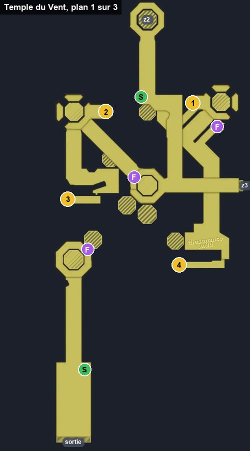
Temple du Vent, plan 1 sur 3 — coffres : 1. Tsukiyo no Tachi ; 2. Super-brumipotion ; 3. Fragment de magilithe ; 4. Armure du vent · F : fragment de tablette (×3) · S : point de sauvegarde · zN : passage vers la zone N -
Ramasse les quatre coffres du temple :
- Tsukiyo no Tachi, un katana ;
- Armure du vent ;
- Super-brumipotion ;
- Fragment de magilithe.
-
Contourne le Pot viride niveau 22 qui bloque un passage.
-
Avance les quêtes Mécabo débarque ! et Énigmes lyriques, qui ont tous les deux une étape ici.
-
Bats Aether au bout du temple : niveau 18, 34 000 PV, faible à la Glace, et insensible au Vent. C'est le boss le plus solide du chapitre.
-
Retourne à Dilmagia, objectif 12, et parle à Lid, objectif 13.
-
Réponds-lui à bord de l'aéronef : trois réponses, et chacune donne +3 à une statistique de Lid — Force, Magie ou Endurance. C'est permanent, choisis selon le rôle que tu lui donnes.
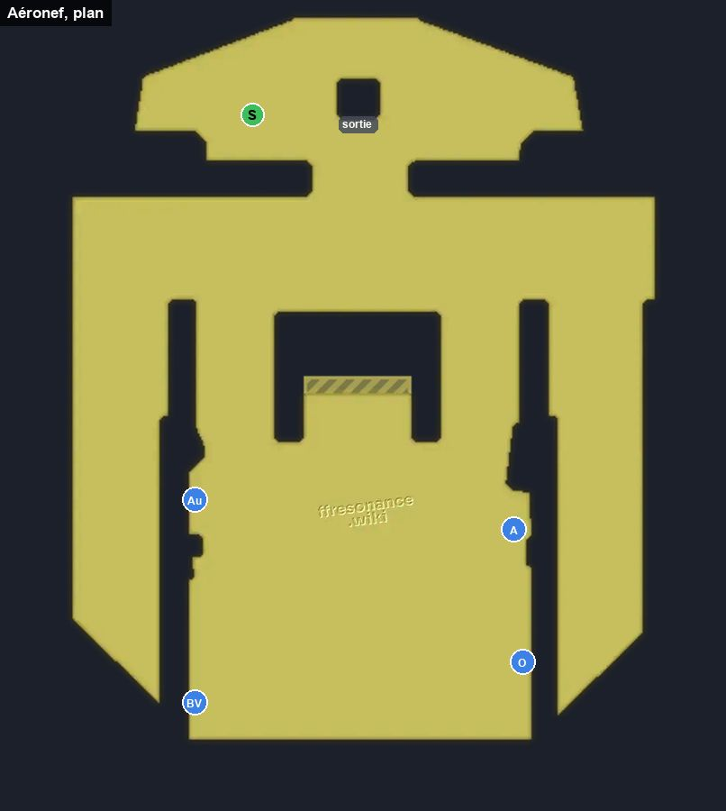
Aéronef, plan — S : point de sauvegarde · boutiques : A armes, O objets, Au auberge, BV Visions -
Décolle vers Olderion, objectif 14.
Quêtes et lieux
Les 14 objectifs, dans l'ordre
| № | Objectif tel qu'il s'affiche |
|---|---|
| 1 | Se rendre à Dilmagia, ville mécanique |
| 2 | Glaner des informations à Dilmagia |
| 3 | Trouver Lid au chantier naval |
| 4 | Traverser le Mont foudroyant |
| 5 | Rendre visite à Borin à la Forge naine |
| 6 | Vaincre le monstre à la forge |
| 7 | Retourner voir Borin |
| 8 | Sauver Borin au chantier naval de Mobrise |
| 9 | S'échapper avant la fin du temps imparti |
| 10 | Se rendre au Temple du Vent |
| 11 | Progresser dans le Temple du Vent |
| 12 | Se rendre à Dilmagia, ville mécanique |
| 13 | Parler à Lid |
| 14 | Se rendre à Olderion en aéronef |
Les lieux, leurs coffres et leurs Fragment de tablette
| Lieu | Coffres | Fragment de tablette | Ce que les coffres contiennent |
|---|---|---|---|
| Dilmagia, ville mécanique | 3 | 4 | Gants isolants, 500 gils ×2 |
| Chantier naval | 2 | — | Tenue antimagie, 500 gils |
| Mont foudroyant | 4 | 3 | Cape du Raijû, Poignets de force, Sabre lunaire, 800 gils |
| Forge naine | 3 | 2 | Masse, Serre-tête, Queue de phénix ×3 |
| Chantier naval de Mobrise | 4 | 3 | Charme plume de chocobo, Collyre ×3, Parchemin foudre I ×2, Pardessus protecteur |
| Temple du Vent | 4 | 3 | Tsukiyo no Tachi, Super-brumipotion, Fragment de magilithe, Armure du vent |
Soit 15 Fragment de tablette sur les 99 du jeu, rien que dans ce chapitre. Ils ouvrent les coffres du Palais de l'Oubli, partie 22 — ce ne sont pas des objets d'éveil de Vision.
Deux précisions d'itinéraire au Mont foudroyant
Deux détails à connaître :
-
le Sabre lunaire, les Poignets de force et les 800 gils sont sur la route du Sanctuaire du Chevalier Oignon, qui passe par la Grotte du shoggoth et revient dans la montagne. La Cape du Raijû, elle, est sur le raccourci de Lid ;
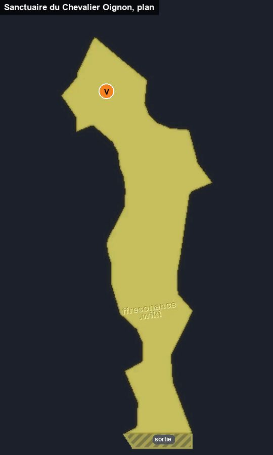
Sanctuaire du Chevalier Oignon, plan — V : Vision Chevalier Oignon -
un Marteau de bronze se ramasse à même le sol, au sud du Sanctuaire du Chevalier Oignon. Ce n'est pas un coffre, et rien ne le signale.
⚠️ Il y aurait aussi trois coffres supplémentaires au Mont foudroyant, dans une zone qui s'ouvre plus tard, au contenu inconnu. À vérifier en jeu quand tu reviendras avec l'aéronef.
L'évasion de 15 minutes, étape par étape
C'est le passage le plus tendu du chapitre, et le seul du jeu où le temps peut te faire perdre. Dans l'ordre :
- Le compte à rebours démarre quand Borin est en sécurité, avec une sauvegarde automatique.
- L'ascenseur n'a plus de courant : cinq leviers, et c'est le 16 qu'il faut tirer. Le mot de Borin le dit aussi.
- Le retour par le chantier peut être coupé par le Gardien niveau 25 : fuis.
- Épiméthée et deux Œil de sécurité attaquent à l'ascenseur, sans fuite possible.
- Adrastea t'attend sur le train de marchandises, et c'est la fin de la séquence.
Le chantier reste accessible après le chapitre, et deux quêtes annexes t'y renvoient : rien n'y est perdu définitivement.
Les boss du chapitre
| Boss | Niveau | PV | Faiblesse | Note |
|---|---|---|---|---|
| Foudre liquide | 13 | 10 000 | Terre | Insensible à la Foudre |
| Maman bombo | 14 | 21 000 | Eau, résiste au Feu | S'autodétruit : Barrière de Fina obligatoire |
| Épiméthée | 16 | — | Foudre | Deux Œil de sécurité, sans fuite |
| Adrastea | 16 | 25 000 | Foudre, Eau | Boss de fin d'évasion |
| Aether | 18 | 34 000 | Glace | Insensible au Vent |
| Ramuh | 20 | 24 000 | Terre | Optionnel, sans fuite. Donne la Chimère Ramuh |
| Gardien | 25 | — | Foudre | Optionnel : fuis, il ne rapporte rien |
| Shoggoth | 25 | 45 500 | Terre, Eau | Optionnel. Donne un Fragment de magilithe |
Les quêtes annexes du chapitre
| Quête | Où la prendre |
|---|---|
| À l'horizon | Dirnado |
| Mécabo débarque ! | Se lance d'elle-même à la Forge naine |
| Énigmes lyriques | Roy, à la Forge naine |
| Virtuose elfique | Dilmagia — à prendre avant le Mont foudroyant |
| Volonté forgée | Donne la Vision Aileen |
| Mécabo évolue | Suite de Mécabo débarque ! |
| Mécabo déchaîné | Dernière étape de la chaîne du Mécabo |
Trois d'entre elles forment une chaîne autour du Mécabo de Lid, et elle vaut la peine d'être suivie : c'est ce qui transforme son mécha d'un gadget en vraie pièce d'équipe. Détails dans la partie 13.
Butin exhaustif
| Nom exact | Type | Où / comment l'obtenir | Utilité |
|---|---|---|---|
| Sabre lunaire | Arme | Mont foudroyant | Arme de milieu de chapitre |
| Masse | Arme | Forge naine | Pour un porteur d'arme contondante |
| Tsukiyo no Tachi | Arme, katana | Temple du Vent | La meilleure arme du chapitre pour Lasswell |
| Tenue antimagie | Armure | Chantier naval | Réduit les dégâts magiques |
| Pardessus protecteur | Armure | Chantier naval de Mobrise | Armure polyvalente |
| Armure du vent | Armure | Temple du Vent | La meilleure armure du chapitre |
| Cape du Raijû | Accessoire | Mont foudroyant, sur le raccourci de Lid | Lié à la Foudre, utile pour tout Mobrise |
| Marteau de bronze | Arme, marteau | À même le sol, au sud du Sanctuaire du Chevalier Oignon | Pour Lid, et facile à rater |
| Gants isolants | Accessoire | Dilmagia, ville mécanique | Protection élémentaire |
| Poignets de force | Accessoire | Mont foudroyant | Augmente la Force |
| Serre-tête | Accessoire | Forge naine | Accessoire de soutien |
| Charme plume de chocobo | Accessoire | Chantier naval de Mobrise | Accessoire de vitesse |
| Collyre | Consommable | Chantier naval de Mobrise, ×3 | Soigne la Cécité |
| Queue de phénix | Consommable | Forge naine, ×3 | Relève un personnage K.O. |
| Super-brumipotion | Consommable | Temple du Vent | Soin de groupe |
| Parchemin foudre I | Consommable offensif | Chantier naval de Mobrise, ×2 | Dégâts de Foudre : garde-les pour Adrastea |
| Fragment de magilithe | Objet d'éveil | Temple du Vent, le Shoggoth, et Ramuh | Éveille une Vision au niveau 1. Partie 11 |
| Vision Aileen | Vision | Quête annexe Volonté forgée | La Vision du chapitre |
| Chimère Ramuh | Chimère | Épreuve optionnelle du Mont foudroyant | Première invocation permanente. Partie 12 |
| 500 gils | Argent | Dilmagia ×2, chantier naval | — |
| 800 gils | Argent | Mont foudroyant | — |
Conseils et pièges
La Foudre est la réponse à tout le chantier de Mobrise
Œil de sécurité, Gardien, Épiméthée, Adrastea : tout est faible à la Foudre dans cette séquence. Et comme c'est aussi la séquence chronométrée, chaque combat raccourci est du temps gagné.
Avant d'entrer : une Vision de Foudre équipée, les deux Parchemin foudre I du chantier en poche, et l'affaire est pliée. Avec un groupe qui tape dans le vide, les 15 minutes deviennent serrées.
Le sentier payant de Lid est un piège à gils
1 000 gils au chapitre 2, c'est deux tiers d'un Chapelet. Et le sentier s'ouvre gratuitement dès que tu as traversé le Mont foudroyant une fois — ce que le scénario t'oblige à faire de toute façon.
Refuse, traverse, et reviens par le raccourci gratuit.
Maman bombo et la Barrière
Ses 21 000 points de vie sont un mur à ce stade, mais ce n'est pas ce qui tue : c'est son autodestruction de fin de combat. La Barrière de Fina, posée avant, transforme un game over en égratignure.
Et comme elle résiste au Feu et qu'elle est faible à l'Eau, c'est le combat où une Vision d'Eau justifie à elle seule le détour pour l'obtenir.
Ramuh maintenant, ou jamais confortablement
L'épreuve de Ramuh est au niveau 20 quand tu en es à 14 ou 15. C'est dur, et il n'y a pas de fuite : si tu entres, tu finis.
Ça vaut quand même le coup d'essayer, parce qu'une Chimère obtenue tôt sert tout le chapitre 3. Si tu échoues, monte deux ou trois niveaux sur le Mont foudroyant et reviens — l'épreuve ne disparaît pas.
Les trois sanctuaires de Dilmagia
Chevalier Oignon, Djidane et Noctis ouvrent leurs sanctuaires ici. Chacun pose une question, et une bonne réponse donne la Vision. Il n'y a pas de pénalité à se tromper, mais autant ne pas chercher : les 16 questions et leurs réponses sont dans la partie 11.
Alertes
- ⚠️ L'évasion du chantier naval de Mobrise est chronométrée : 15 minutes, et le temps écoulé te fait perdre la partie. Le jeu te prévient et te demande une sauvegarde manuelle avant : fais-la dans un emplacement séparé, parce que la sauvegarde automatique se place juste au départ du compte à rebours.
- ⏳ Les quatre coffres du chantier se prennent avant de retrouver Borin. Pendant l'évasion, le point de sauvegarde disparaît et le chemin se fait dans l'autre sens : fouille d'abord, sauve ensuite.
Check-list
- Les 3 coffres de Dilmagia vidés
- Quête Virtuose elfique prise avant le Mont foudroyant
- Les trois sanctuaires de Dilmagia repérés
- Lid recrutée au chantier naval, ses 2 coffres pris
- Les 4 coffres du Mont foudroyant vidés, sentier payant refusé
- Marteau de bronze ramassé au sud du Sanctuaire du Chevalier Oignon
- Les 15 Fragment de tablette du chapitre ramassés
- Foudre liquide battu
- Épreuve de Ramuh tentée, Chimère obtenue
- Les 3 coffres de la Forge naine vidés
- Maman bombo battue avec la Barrière posée
- Quêtes Mécabo débarque ! et Énigmes lyriques lancées
- Sauvegarde manuelle faite avant l'événement unique
- Les 4 coffres du chantier de Mobrise pris avant Borin
- Évasion réussie : levier 16, Gardien fui, Épiméthée et Adrastea battus
- Les 4 coffres du Temple du Vent vidés
- Aether battu
- Statistique de Lid choisie à bord de l'aéronef
Partie 04
Chapitre 3 : Gardiens d'Olderion
L'essentiel
- Les boss : Lopros des vagues, le Dragon d'eau, Léviathan au lac Dorr, et Alluvion et ses 48 000 PV au Temple de l'Eau.
- Ne rate pas : Carbuncle, une Chimère qui s'obtient sans aucun combat — il suffit de lire une stèle et de rapporter trois fragments.
- Le choix : trois réponses en poursuivant Arusha, qui donnent à Nichol +30 PV, +3 Magie ou +3 Vitesse.
- Avant de partir : fais toutes tes courses à Olderion avant d'entrer dans la Vieille ville, parce que les boutiques te sont fermées jusqu'à la fin de l'événement. Et monte une Vision de Foudre : quatre boss sur cinq y sont faibles.
Objectif
Olderion est une cité sur l'eau, et son eau est empoisonnée. Tu vas purifier trois sources avec Luluka, la prêtresse, puis remonter la chaîne jusqu'au Temple de l'Eau.
C'est le chapitre le plus long jusqu'ici — 21 objectifs — et c'est aussi celui qui recrute Nichol, le soigneur et buffeur de l'équipe.
Itinéraire

L'île Olderion sur la mappemonde — objets à ramasser sur la carte : 1. Brise-barrière ; 2. Shuriken Fuma ×3 ; 3. Culte béni ; 4. Aiguille d’or ×2 ; 5. Shuriken ×3 ; 6. Anneau de vengeance ; 7. Lame de confusion ×2 ; 8. Parchemin vent I ×3 ; 9. Aiguille d’or ×3 ; 10. Bruméther + ; 11. Hasaito ; 12. Super-brumipotion ; 13. Talisman · fouilles au radar : R1. Adamantite · C : Carbuncle
- 📍 La zone en images : la soluce française du chapitre 3 détaille les 21 objectifs, les coffres et les boss, et la soluce vidéo française montre les combats de Léviathan et d'Alluvion.
Le chapitre tourne autour d'Olderion, et tu y reviens cinq fois. Dans l'ordre :
Olderion → Grotte de l'eau → Olderion → Vieille ville → Olderion → lac Dorr → Olderion → Passage de la cascade → l'autel → Cap du Gardien (par la ville d'Amore) → Temple de l'Eau → Olderion → le port.
Deux choses à savoir sur la géographie. Le lac Dorr s'atteint par la Grotte de l'eau, pas directement. Et le Cap du Gardien se rejoint depuis la mappemonde, par la ville d'Amore, dont les boutiques n'ouvrent qu'à ce moment-là.
Déroulé pas à pas
Olderion et la Grotte de l'eau
-
Rends-toi à la ville aquatique d'Olderion, objectif 1.

Olderion, ville aquatique, plan 1 sur 3 — coffres : 1. Tunique mirage ; 2. Perce-roche ; 3. Bague sertie · F : fragment de tablette (×4) · boutiques : BV Visions · zN : passage vers la zone N
Olderion, ville aquatique, plan 2 sur 3 — S : point de sauvegarde · boutiques : Au auberge · zN : passage vers la zone N
Olderion, ville aquatique, plan 3 sur 3 — boutiques : A armes, Ar armures, O objets · zN : passage vers la zone N -
Repère les trois sanctuaires qui s'ouvrent dès ton arrivée : Firion, Squall et Tidus. Chacun donne sa Vision contre une bonne réponse, et les réponses sont dans la partie 11.
-
Vide les trois coffres de la ville : une Tunique mirage, un Perce-roche et une Bague sertie. Garde la Bague sertie sous la main, elle protège de la Paralysie et tu vas en avoir besoin.
-
Glane des informations, objectif 2, puis parle au Gardien de l'eau, objectif 3.
-
Va à la Grotte de l'eau, objectif 4, et vide ses cinq coffres :
- Tenue de ninja et Shuriken ×3 ;
- Manuel de callisthénie ;
- Parchemin glace I ×2 ;
- Fragment de magilithe.

Grotte de l’eau, plan 1 sur 7 — coffres : 1. Fragment de magilithe ; 2. Manuel de callisthénie · F : fragment de tablette · zN : passage vers la zone N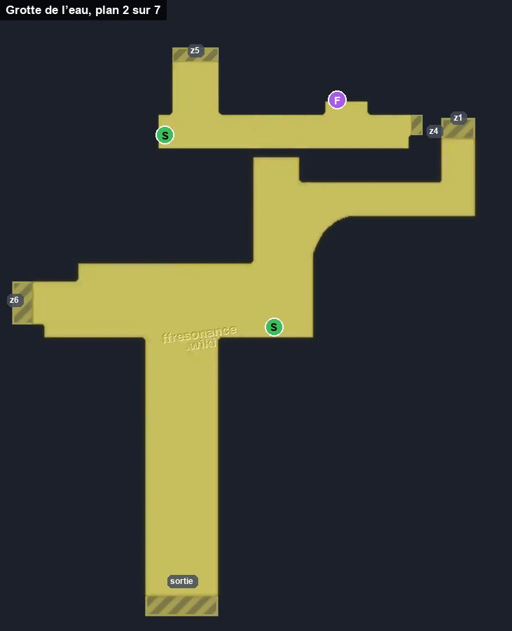
Grotte de l’eau, plan 2 sur 7 — F : fragment de tablette · S : point de sauvegarde · zN : passage vers la zone N
Grotte de l’eau, plan 3 sur 7 — coffres : 1. Shuriken ×3 · zN : passage vers la zone N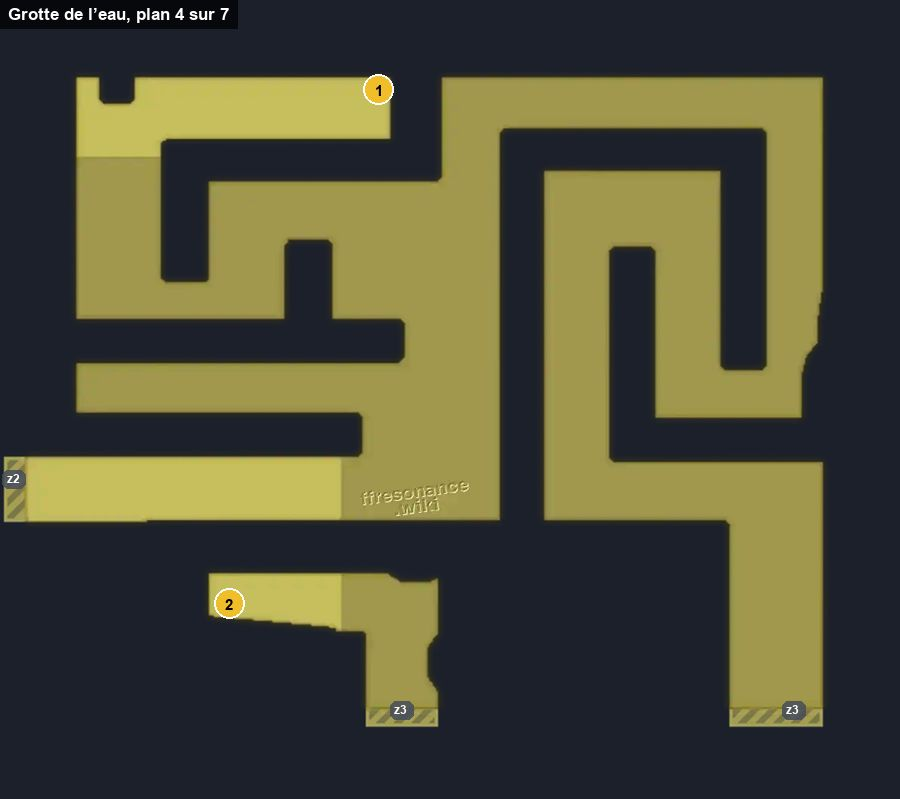
Grotte de l’eau, plan 4 sur 7 — coffres : 1. Tenue de ninja ; 2. Parchemin glace I ×2 · zN : passage vers la zone N -
Accueille Nichol, qui rejoint le groupe pendant cet objectif.
-
Bats Lopros des vagues, niveau 20, 21 000 PV, faible à la Glace. Il invoque une Khélone azur et une Terrakhélone, puis il dévore une khélone pour se soigner.
-
Tue les deux khélones en premier, chacune dans sa faiblesse : la Foudre pour la Khélone azur, le Vent pour la Terrakhélone. Sans elles, il ne se soigne plus. L'Aube gelée de Lasswell inflige environ 90 points de choc par coup au Lopros, de quoi vider sa jauge vite.
-
Sauve la prêtresse de l'eau, objectif 5, et retourne à Olderion, objectif 6.
La Vieille ville, puis le lac Dorr
-
Purifie les eaux avec Luluka, objectif 7. C'est une chaîne de trois étapes, et la troisième ouvre la quête annexe Mission médicinale.
-
Fais toutes tes courses avant d'entrer dans la Vieille ville. Objets, soins, équipement : les boutiques d'Olderion te seront fermées jusqu'à la fin de l'événement.
-
Entre dans la Vieille ville, objectif 8. Le jeu prévient : « Vous ne pourrez pas revenir avant d'avoir terminé l'événement de la Vieille ville. » La sauvegarde automatique se place juste avant l'entrée.
-
Prends les trois coffres de la Vieille ville : une Super-brumipotion, un Parchemin foudre I et un Éther.

Vieille ville, Olderion, plan 1 sur 2 — coffres : 1. Parchemin foudre I ×3 ; 2. Super-brumipotion ; 3. Éther · S : point de sauvegarde · boutiques : Au auberge -
Encaisse les trois combats imposés :
- un Ribosome et deux Âme verte, niveaux 19 à 21 ;
- un Ogre mage et deux Gobelimage, niveaux 20 à 21, avant le pont ;
- deux Ascaride, niveau 21, avant la porte.
- Fais les deux combats facultatifs si tu veux l'expérience : un garçon gardé par un Ascaride et deux Loups féroces, et un chat gardé par un Ribosome et deux Gobelimage.
- Bats le Dragon d'eau, objectif 9 : niveau 21, 24 000 PV, faible à la Foudre, il réduit l'Eau de moitié et il agit deux fois par tour.
- Équipe la Bague sertie contre sa Charge, qui paralyse, et garde la Barrière active. Aucun des héros que tu as à ce stade ne porte la Foudre — Jake arrive au chapitre 4, Sakura au chapitre 5 —, donc c'est le combat où une Vision de Foudre devient obligatoire.
- Purifie les eaux avec Luluka, objectif 10, puis va au lac Dorr, objectif 11, en passant par la Grotte de l'eau.
- Bats Léviathan, niveau 23, 40 000 PV, faible à la Foudre. Il surgit entouré d'Orbes de lumière.
- Abats les orbes dans leur élément. Chacun a sa faiblesse — Feu, Eau ou Terre — et Rain, Nichol et Lid couvrent les trois. Chaque orbe tombé affaiblit Léviathan pendant trois tours : c'est la fenêtre pour le frapper à la Foudre.
- Ne traîne pas : Léviathan se met en colère si le combat s'éternise. Le battre ici ne te le donne pas encore : il ne rejoint Fina qu'après la quête La mission de Nichol, à partir du chapitre 5, et sans second combat. Partie 12.
- Retourne à Olderion, objectif 12, et dors à l'auberge, objectif 13.
La cascade, l'autel et le Cap du Gardien
- Va au Passage de la cascade, objectif 14, et vide ses cinq coffres :
- Épée de gardien ;
- Armure pieuse et Voile aquatique ;
- Plume de phénix ;
- Collyre ×2.
<p class="visuel" data-visuel="04-plan-09.jpg"><img src="images/04-plan-09.jpg" alt="Passage de la cascade, plan 2 sur 8 — coffres : 1. Plume de phénix · F : fragment de tablette (×2) · zN : passage vers la zone N" width="560"><br><small>Passage de la cascade, plan 2 sur 8 — coffres : 1. Plume de phénix · F : fragment de tablette (×2) · zN : passage vers la zone N</small></p>
<p class="visuel" data-visuel="04-plan-10.jpg"><img src="images/04-plan-10.jpg" alt="Passage de la cascade, plan 3 sur 8 — coffres : 1. Armure pieuse ; 2. Collyre ×2 · F : fragment de tablette · zN : passage vers la zone N" width="560"><br><small>Passage de la cascade, plan 3 sur 8 — coffres : 1. Armure pieuse ; 2. Collyre ×2 · F : fragment de tablette · zN : passage vers la zone N</small></p>
<p class="visuel" data-visuel="04-plan-11.jpg"><img src="images/04-plan-11.jpg" alt="Passage de la cascade, plan 5 sur 8 — S : point de sauvegarde · zN : passage vers la zone N" width="560"><br><small>Passage de la cascade, plan 5 sur 8 — S : point de sauvegarde · zN : passage vers la zone N</small></p>
<p class="visuel" data-visuel="04-plan-12.jpg"><img src="images/04-plan-12.jpg" alt="Passage de la cascade, plan 6 sur 8 — ? : objet à examiner · S : point de sauvegarde · zN : passage vers la zone N" width="560"><br><small>Passage de la cascade, plan 6 sur 8 — ? : objet à examiner · S : point de sauvegarde · zN : passage vers la zone N</small></p>
<p class="visuel" data-visuel="04-plan-13.jpg"><img src="images/04-plan-13.jpg" alt="Passage de la cascade, plan 7 sur 8 — coffres : 1. Voile aquatique · zN : passage vers la zone N" width="400"><br><small>Passage de la cascade, plan 7 sur 8 — coffres : 1. Voile aquatique · zN : passage vers la zone N</small></p>
<p class="visuel" data-visuel="04-plan-14.jpg"><img src="images/04-plan-14.jpg" alt="Passage de la cascade, plan 8 sur 8 — coffres : 1. Épée de gardien · zN : passage vers la zone N" width="400"><br><small>Passage de la cascade, plan 8 sur 8 — coffres : 1. Épée de gardien · zN : passage vers la zone N</small></p>
- Retrouve Gilgamesh ici si tu as ouvert le coffre de la tour de Sirène. C'est une scène sans combat : tu lui demandes tes Gants de Genji, il refuse. La suite est dans la partie 20.
- Rends-toi à l'autel, objectif 15, puis au Cap du Gardien, objectif 16, par la mappemonde.
- Fais halte à la ville d'Amore en chemin. Ses boutiques ouvrent à partir de maintenant, et elle a quatre coffres :
- Masse d'arme, un marteau pour Lid ;
- Tunique égide ;
- Parchemin eau I.
<p class="visuel" data-visuel="04-plan-15.jpg"><img src="images/04-plan-15.jpg" alt="Ville d’Amore, plan 1 sur 6 — coffres : 1. Masse d’arme ; 2. Parchemin eau I ×2 · F : fragment de tablette (×2) · boutiques : BV Visions · zN : passage vers la zone N" width="560"><br><small>Ville d’Amore, plan 1 sur 6 — coffres : 1. Masse d’arme ; 2. Parchemin eau I ×2 · F : fragment de tablette (×2) · boutiques : BV Visions · zN : passage vers la zone N</small></p>
<p class="visuel" data-visuel="04-plan-16.jpg"><img src="images/04-plan-16.jpg" alt="Ville d’Amore, plan 3 sur 6 — boutiques : O objets · zN : passage vers la zone N" width="560"><br><small>Ville d’Amore, plan 3 sur 6 — boutiques : O objets · zN : passage vers la zone N</small></p>
<p class="visuel" data-visuel="04-plan-17.jpg"><img src="images/04-plan-17.jpg" alt="Ville d’Amore, plan 4 sur 6 — S : point de sauvegarde · boutiques : Au auberge · zN : passage vers la zone N" width="560"><br><small>Ville d’Amore, plan 4 sur 6 — S : point de sauvegarde · boutiques : Au auberge · zN : passage vers la zone N</small></p>
<p class="visuel" data-visuel="04-plan-18.jpg"><img src="images/04-plan-18.jpg" alt="Ville d’Amore, plan 5 sur 6 — boutiques : Ar armures, A armes · zN : passage vers la zone N" width="560"><br><small>Ville d’Amore, plan 5 sur 6 — boutiques : Ar armures, A armes · zN : passage vers la zone N</small></p>
<p class="visuel" data-visuel="04-plan-19.jpg"><img src="images/04-plan-19.jpg" alt="Ville d’Amore, plan 6 sur 6 — coffres : 1. Tunique égide · zN : passage vers la zone N" width="560"><br><small>Ville d’Amore, plan 6 sur 6 — coffres : 1. Tunique égide · zN : passage vers la zone N</small></p>
- Prends la quête La marée céleste à Amore. Elle demande de battre deux Brigands niveau 24, faibles à la Terre, sur la jetée nord-est, et rapporte un Fragment de magilithe et 1 500 gils.
Le Temple de l'Eau et le départ
-
Rends-toi au Temple de l'Eau, objectif 17, puis progresse dedans, objectif 18.
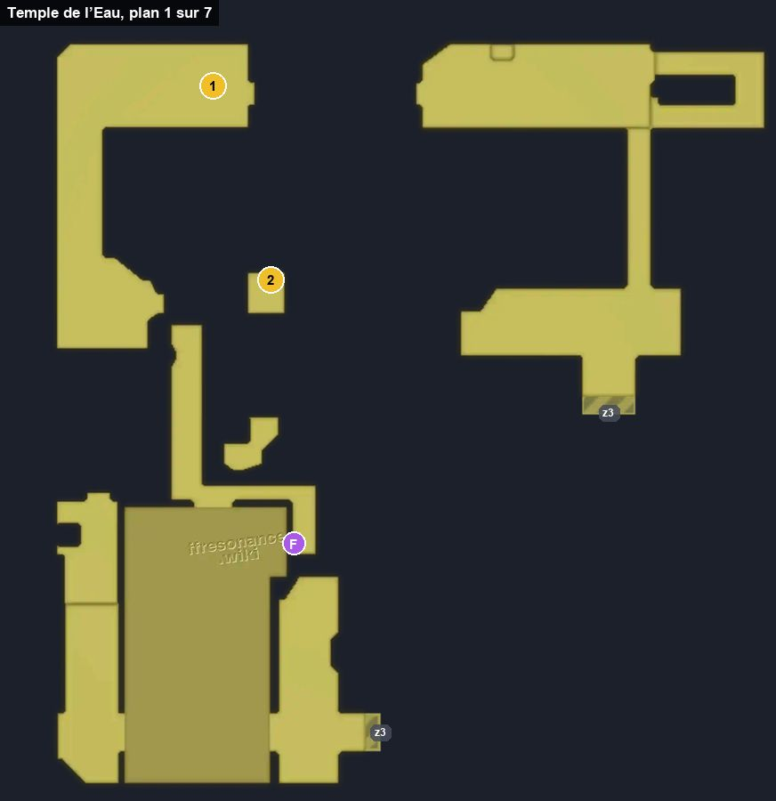
Temple de l’Eau, plan 1 sur 7 — coffres : 1. Masse pénétrante ; 2. Bracelet apaisant · F : fragment de tablette · zN : passage vers la zone N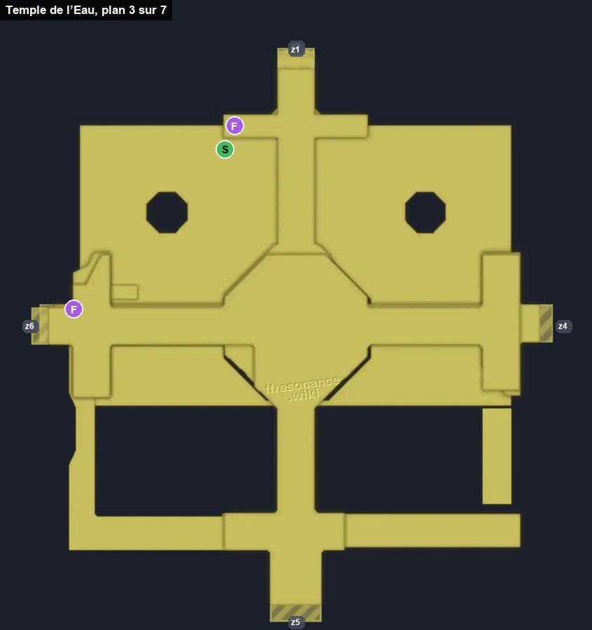
Temple de l’Eau, plan 3 sur 7 — F : fragment de tablette (×2) · S : point de sauvegarde · zN : passage vers la zone N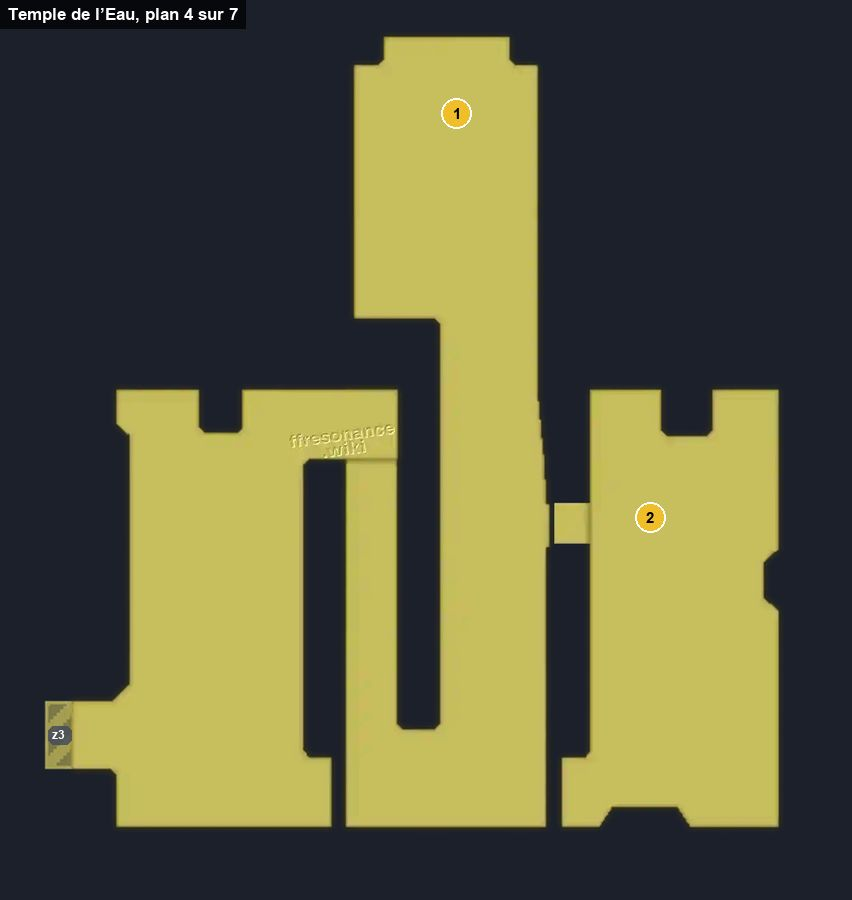
Temple de l’Eau, plan 4 sur 7 — coffres : 1. Parchemin foudre I ×3 ; 2. Écrits de R’lyeh · zN : passage vers la zone N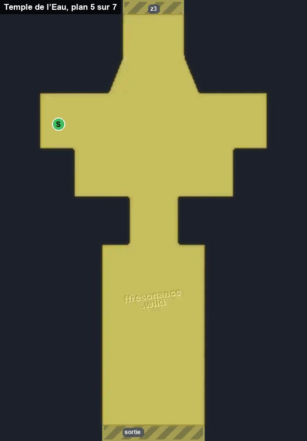
Temple de l’Eau, plan 5 sur 7 — S : point de sauvegarde · zN : passage vers la zone N
Temple de l’Eau, plan 7 sur 7 — coffres : 1. Armure d’écaille ; 2. Fragment de magilithe · zN : passage vers la zone N -
Vide les six coffres du temple :
- Masse pénétrante et Écrits de R'lyeh ;
- Armure d'écaille ;
- Bracelet apaisant ;
- Parchemin foudre I ×3 ;
- Fragment de magilithe.
- Gère le Pot viride niveau 22 qui bloque un passage. L'examiner lance le combat ; la fuite marche, et un Bruméther le met hors de combat d'un coup.
- Bats Alluvion, niveau 26, 48 000 PV, faible à la Foudre et insensible à l'Eau. C'est le boss le plus solide du chapitre.
- Détruis ses Noyaux de prisme à la Foudre avant qu'elle ne les absorbe : c'est avec eux qu'elle charge Déluge gracieux, son attaque la plus dangereuse.
- Équipe le Voile aquatique, qui réduit de moitié sa magie d'Eau — c'est-à-dire presque tout son répertoire —, et le Bracelet apaisant contre La bague divine. Garde la Barrière et un Anti-Charme disponibles.
- Retourne à Olderion, objectif 19, et poursuis Arusha, objectif 20.
- Choisis ta réponse pour Nichol : trois options, et chacune lui donne en permanence +30 PV, +3 Magie ou +3 Vitesse. La suite de l'histoire est identique.
- Pars pour Zoldaad depuis le port, objectif 21. Poser le pied à Zoldaad termine le chapitre.
Quêtes et lieux
Les 21 objectifs, dans l'ordre
| № | Objectif tel qu'il s'affiche |
|---|---|
| 1 | Se rendre à la ville aquatique d'Olderion |
| 2 | Glaner des informations à Olderion |
| 3 | Parler au Gardien de l'eau |
| 4 | Se rendre à la Grotte de l'eau |
| 5 | Sauver la prêtresse de l'eau |
| 6 | Se rendre à la ville aquatique d'Olderion |
| 7 | Purifier les eaux avec Luluka |
| 8 | Se rendre à la Vieille ville, à Olderion |
| 9 | Vaincre les monstres |
| 10 | Purifier les eaux avec Luluka |
| 11 | Se rendre au lac Dorr |
| 12 | Se rendre à la ville aquatique d'Olderion |
| 13 | Séjourner à l'auberge d'Olderion |
| 14 | Se rendre au Passage de la cascade |
| 15 | Se rendre à l'autel |
| 16 | Se rendre au Cap du Gardien |
| 17 | Se rendre au Temple de l'Eau |
| 18 | Progresser dans le Temple de l'Eau |
| 19 | Se rendre à la ville aquatique d'Olderion |
| 20 | Poursuivre Arusha |
| 21 | Se rendre en Zoldaad depuis le port |
Les objectifs 7 et 10 portent le même libellé, et c'est normal : purifier les eaux se fait en trois étapes, entrecoupées de la Vieille ville et du lac Dorr.
Les lieux et leurs coffres
| Lieu | Coffres | Ce qu'ils contiennent |
|---|---|---|
| Olderion, ville aquatique | 3 | Tunique mirage, Perce-roche, Bague sertie |
| Grotte de l'eau | 5 | Fragment de magilithe, Manuel de callisthénie, Shuriken ×3, Tenue de ninja, Parchemin glace I ×2 |
| Vieille ville | 3 | Super-brumipotion, Parchemin foudre I, Éther |
| Passage de la cascade | 5 | Plume de phénix, Armure pieuse, Collyre ×2, Voile aquatique, Épée de gardien |
| Ville d'Amore | 4 | Masse d'arme, Tunique égide, Parchemin eau I |
| Temple de l'Eau | 6 | Masse pénétrante, Bracelet apaisant, Parchemin foudre I ×3, Écrits de R'lyeh, Armure d'écaille, Fragment de magilithe |
Le lac Dorr, l'autel, le Cap du Gardien et le port n'ont pas de coffre.
Les boss du chapitre
| Boss | Niveau | PV | Faiblesse | Ce qui complique |
|---|---|---|---|---|
| Lopros des vagues | 20 | 21 000 | Glace | Dévore ses khélones pour se soigner |
| Dragon d'eau | 21 | 24 000 | Foudre, Eau de moitié | Deux actions par tour, et sa Charge paralyse |
| Léviathan | 23 | 40 000 | Foudre | Ses Orbes de lumière, et sa colère si le combat dure |
| Alluvion | 26 | 48 000 | Foudre, insensible à l'Eau | Ses Noyaux de prisme nourrissent Déluge gracieux |
| Rukh | 26 | — | Vent | Optionnel, dans sa grotte. Fuite possible |
| Flagelleur mental | 28 | — | Terre | Optionnel, dans sa grotte. Fuite possible |
| Dragon de sang | 28 | — | Feu | Sans fuite. Lié à la quête Mission médicinale |
| Brigand ×2 | 24 | — | Terre | Quête La marée céleste, jetée nord-est d'Amore |
Les ennemis ordinaires notables
| Lieu | Ennemis |
|---|---|
| Grotte de l'eau | Khélone azur et Terrakhélone, invoquées par le boss |
| Vieille ville | Ribosome, Âme verte, Ogre mage, Gobelimage, Ascaride, Loup féroce |
| Passage de la cascade | Sahuagin, Basilic, Ondin |
| Temple de l'Eau | Pot viride, niveau 22, qui bloque un passage |
Les deux Chimères du chapitre
| Chimère | Comment l'obtenir |
|---|---|
| Carbuncle | Aucun combat : lis la stèle de la Grotte aux rubis, puis rapporte les trois Fragments de rubis |
| Léviathan | Le battre au lac Dorr, puis terminer la quête La mission de Nichol à partir du chapitre 5 |
Carbuncle est l'une des rares Chimères du jeu qui ne demande pas de se battre. Ne la laisse pas passer : c'est une invocation défensive, et le chapitre 4 en a besoin.
Les quêtes annexes du chapitre
| Quête | Où la prendre | Récompense |
|---|---|---|
| Mission médicinale | Olderion, à la troisième étape de « Purifier les eaux avec Luluka » | Fragment de magilithe et 1 500 gils |
| La marée céleste | Ville d'Amore | Fragment de magilithe et 1 500 gils |
| La mission de Nichol | Olderion, après son recrutement | Voir la partie 13 |
Mission médicinale a trois solutions, et ça vaut la peine de les connaître : le remède s'obtient en battant un Dragon de sang niveau 28 sans fuite possible, en réunissant ses ingrédients, ou en l'achetant 50 000 gils à l'Habitation isolée. À ce stade du jeu, 50 000 gils sont hors de portée : visez les ingrédients.
Butin exhaustif
| Nom exact | Type | Où / comment l'obtenir | Utilité |
|---|---|---|---|
| Perce-roche | Arme | Olderion, ville aquatique | Arme de début de chapitre |
| Épée de gardien | Arme | Passage de la cascade | Bonne épée pour Rain |
| Masse d'arme | Arme, marteau | Ville d'Amore | Pour Lid |
| Masse pénétrante | Arme | Temple de l'Eau | La meilleure arme contondante du chapitre |
| Shuriken | Arme de jet | Grotte de l'eau, ×3 | Projectiles |
| Tunique mirage | Armure | Olderion, ville aquatique | Armure légère |
| Tenue de ninja | Armure | Grotte de l'eau | Favorise la Vitesse |
| Armure pieuse | Armure | Passage de la cascade | Armure lourde |
| Tunique égide | Armure | Ville d'Amore | Armure équilibrée |
| Armure d'écaille | Armure | Temple de l'Eau | La meilleure armure du chapitre |
| Bague sertie | Accessoire | Olderion, ville aquatique | Protège de la Paralysie : à porter contre le Dragon d'eau |
| Voile aquatique | Accessoire | Passage de la cascade | Réduit de moitié les dégâts d'Eau : à porter contre Alluvion |
| Bracelet apaisant | Accessoire | Temple de l'Eau | Contre La bague divine d'Alluvion |
| Manuel de callisthénie | Objet d'amélioration | Grotte de l'eau | Augmente une statistique en permanence |
| Écrits de R'lyeh | Objet d'amélioration | Temple de l'Eau | Augmente une statistique en permanence |
| Plume de phénix | Consommable | Passage de la cascade | Relève un personnage à la moitié de ses PV : un cran au-dessus de la Queue de phénix |
| Collyre | Consommable | Passage de la cascade, ×2 | Soigne la Cécité |
| Éther | Consommable | Vieille ville | Rend des points de magie |
| Super-brumipotion | Consommable | Vieille ville | Soin de groupe |
| Parchemin glace I | Consommable offensif | Grotte de l'eau, ×2 | Dégâts de Glace, utiles contre Lopros des vagues |
| Parchemin foudre I | Consommable offensif | Vieille ville, Temple de l'Eau ×3 | Dégâts de Foudre : la monnaie du chapitre |
| Parchemin eau I | Consommable offensif | Ville d'Amore | Dégâts d'Eau |
| Fragment de magilithe | Objet d'éveil | Grotte de l'eau, Temple de l'Eau, et les deux quêtes annexes | Éveille les Visions. Partie 11 |
| Fragment de rubis | Objet de quête | Trois exemplaires, après la stèle au fond de la Grotte aux rubis | Donne la Chimère Carbuncle, dont l'invocation Éclat du rubis pose Miroir sur tout le groupe |
| Vision Firion | Vision | Sanctuaire, à Olderion | Partie 11 |
| Vision Squall | Vision | Sanctuaire, à Olderion | Partie 11 |
| Vision Tidus | Vision | Sanctuaire, à Olderion | Partie 11 |
| 1 500 gils | Argent | Mission médicinale et La marée céleste | — |
Conseils et pièges
La Foudre, encore, et pour tout le chapitre
Dragon d'eau, Léviathan, Alluvion, Khélone azur : tout ce qui compte à Olderion est faible à la Foudre. Et le problème, c'est qu'aucun des héros disponibles à ce stade n'a de magie de Foudre.
La réponse est une Vision de Foudre équipée en permanence, plus les Parchemin foudre I que le chapitre distribue généreusement — un dans la Vieille ville, trois au Temple de l'Eau. Si tu as pris Ramuh au chapitre 2, c'est maintenant qu'il paie. Les deux héros qui portent la Foudre, Jake et Sakura, n'arrivent qu'aux chapitres 4 et 5.
Tes courses se font avant la Vieille ville
C'est le seul vrai piège logistique du chapitre. Entrer dans la Vieille ville ferme Olderion jusqu'à la fin de l'événement, boutiques comprises, et il y a trois combats imposés plus un boss à 24 000 points de vie derrière la porte.
Fais le plein de Potions, de Queue de phénix et d'Éther, équipe la Bague sertie, et vérifie que ta Barrière est disponible. Ensuite seulement, franchis le seuil.
Les combats à mécanique d'adds
Trois boss du chapitre fonctionnent pareil, et c'est le modèle que le jeu réutilisera partout ensuite :
- Lopros des vagues invoque deux khélones et les dévore pour se soigner ;
- Léviathan s'entoure d'Orbes de lumière, et chaque orbe abattu l'affaiblit trois tours ;
- Alluvion crée des Noyaux de prisme et les absorbe pour charger son gros sort.
Dans les trois cas, le bon réflexe est le même : traite les petits d'abord, dans leur élément faible, et ne tape le boss que dans la fenêtre que ça t'ouvre. Taper le boss en premier, c'est se condamner à le voir se soigner.
Carbuncle, la Chimère gratuite
Lis la stèle de la Grotte aux rubis, rapporte les trois Fragments de rubis, et Carbuncle est à toi. Pas de combat, pas de niveau requis, pas d'épreuve.
C'est l'un des meilleurs rapports effort-récompense du jeu, et le chapitre 4 — qui t'envoie dans un empire militaire — apprécie beaucoup une invocation défensive.
Les deux grottes optionnelles
Le Rukh niveau 26 et le Flagelleur mental niveau 28 attendent dans leurs grottes respectives, bien au-dessus de ton niveau. La fuite marche contre les deux : va voir, note où ils sont, et reviens après le chapitre 4.
Alertes
- ⚠️ Entrer dans la Vieille ville d'Olderion te coupe de la ville jusqu'à la fin de l'événement, boutiques comprises. Le jeu le dit : « Vous ne pourrez pas revenir avant d'avoir terminé l'événement de la Vieille ville. » Fais tes courses avant.
- ⏳ La quête Mission médicinale ne s'ouvre qu'à la troisième étape de « Purifier les eaux avec Luluka », et rien ne te la signale. Repasse voir les habitants d'Olderion entre deux purifications.
Check-list
- Les trois sanctuaires d'Olderion faits : Firion, Squall, Tidus
- Les 3 coffres d'Olderion vidés, Bague sertie en poche
- Les 5 coffres de la Grotte de l'eau vidés
- Nichol recruté
- Lopros des vagues battu, khélones tuées d'abord
- Courses faites avant la Vieille ville
- Les 3 coffres de la Vieille ville vidés
- Dragon d'eau battu avec la Bague sertie
- Léviathan battu au lac Dorr (la Chimère ne vient qu'avec La mission de Nichol)
- Stèle de la Grotte aux rubis lue, 3 Fragment de rubis rapportés, Carbuncle obtenu
- Les 5 coffres du Passage de la cascade vidés
- Gilgamesh revu à la cascade
- Les 4 coffres de la ville d'Amore vidés
- Quêtes Mission médicinale et La marée céleste prises
- Les 6 coffres du Temple de l'Eau vidés
- Alluvion battue avec le Voile aquatique et le Bracelet apaisant
- Statistique de Nichol choisie en poursuivant Arusha
Partie 05
Chapitre 4 : Le serment
L'essentiel
- Les boss : Ignis en trois combats, l'Empereur de Zoldaad et ses 52 000 PV, puis Lazarov sur l'Entreprise.
- Ne rate pas : la Barrette de grâce du château, cachée derrière un livre griffonné et un tableau, et l'épreuve d'Ifrit à la Demeure de chimère.
- Le choix : trois réponses à la base des rebelles, pour Lasswell, puis trois autres au sommet du château, pour Jake.
- Avant de partir : monte de l'Eau sur tout le monde. Ignis et l'Empereur y sont faibles, gardes compris.
Objectif
Entrer dans l'empire de Zoldaad, rejoindre la rébellion, et faire tomber l'Empereur. Jake rejoint le groupe, et c'est le chapitre le plus militaire du jeu : trains, usines d'armes, cachots.
C'est aussi le chapitre qui ouvre le Colisée de Grandshelt, le mode de combat annexe du jeu, détaillé dans la partie 21.
Itinéraire

L'île Zoldaad sur la mappemonde — objets à ramasser sur la carte : 1. Boucles d’oreilles d’élém. de feu ; 2. Herbe antidote ×3 ; 3. Super potion ×2 ; 4. Lame de paralysie ×2 ; 5. Anneau maudit ; 6. Marteau de clown ; 7. Reito ; 8. Annihilexique ; 9. Éther + ; 10. Source régénérante ×2 ; 11. Shuriken ×2 ; 12. Maxi-brumipotion ; 13. Plaque éthérée ; 14. Plume de phénix ×2 · fouilles au radar : R3. Magilithe ; R9. Pierre philosophale · C : Ifrit
- 📍 La zone en images : la soluce française du chapitre 4 donne les 20 objectifs avec les coffres, et la soluce vidéo française montre les trois combats d'Ignis et le final sur l'Entreprise.
Le chapitre est presque linéaire, ce qui change des précédents :
Station de Mozul → le train, sur la voie ferrée de Timber → Zoldaad, capitale impériale → le tunnel → base des rebelles → usine d'armes → retour à la base → château de Zoldaad → les cachots → la salle du trône → le sommet du château → l'Entreprise.
Un seul aller-retour, celui de l'usine d'armes. Et une fois dans le château, tu n'en sors plus avant la fin du chapitre : fais tes courses à la base des rebelles.
Déroulé pas à pas
Mozul, le train et la capitale
-
Rends-toi à la station de Mozul, objectif 1.

Station de Mozul, plan — F : fragment de tablette · S : point de sauvegarde · boutiques : O objets -
Repère les trois sanctuaires qui s'ouvrent ici : Cécil, Shantotto et Y'shtola. Réponses dans la partie 11.
-
Note l'ouverture du Colisée de Grandshelt. C'est maintenant que le mode combat annexe devient disponible, et il reste ouvert jusqu'à la fin du jeu. Il sert aussi à autre chose : gagner le rang Novice 5 y donne le Marteau de Gaïa, qui est la clé de la Chimère Titan. Parties 12 et 21.
-
Repère l'épreuve d'Ifrit, niveau 33, dans le cratère du volcan à l'est de Zoldaad. Aucune fuite possible, et la victoire ajoute Ifrit à tes Chimères. Elle s'ouvre dès ce chapitre ou au chapitre 5 : dans les deux cas, c'est l'aéronef qui rend le cratère commode d'accès. Si tu n'y arrives pas maintenant, reviens avec l'aéronef.
-
Repère les deux grottes optionnelles : Gogmagog niveau 34 et Pyrovipère niveau 37. Chacun donne une Magilithe, et la fuite marche contre les deux. À ton niveau actuel, note-les et reviens.
-
Monte à bord du train, objectif 2, et parle aux membres du groupe, objectif 3.
-
Rencontre Jake à bord.
-
Fuis les soldats impériaux, objectif 4, après un combat imposé contre trois Soldat impérial niveau 28, sans fuite possible.
-
Retrouve Gilgamesh sur la voie ferrée si tu l'as revu au Passage de la cascade. Rencontre optionnelle, suite dans la partie 20.
-
Rends-toi en Zoldaad, la capitale impériale, objectif 5.

Zoldaad, capitale impériale, plan 2 sur 2 — coffres : 1. Source régénérante ×2 · S : point de sauvegarde · boutiques : Au auberge · zN : passage vers la zone N -
Glane des informations, objectif 6 : une scène au Bidonville et une au Marché de la capitale, dans l'ordre que tu veux.

Marché de la capitale, plan 2 sur 2 — boutiques : BV Visions, A armes, O objets, Ar armures · zN : passage vers la zone N
Bidonville, plan — F : fragment de tablette · boutiques : A armes, O objets -
Prends la Source régénérante ×2 en zone 2 de la capitale, et la Plume de phénix des Résidences impériales.
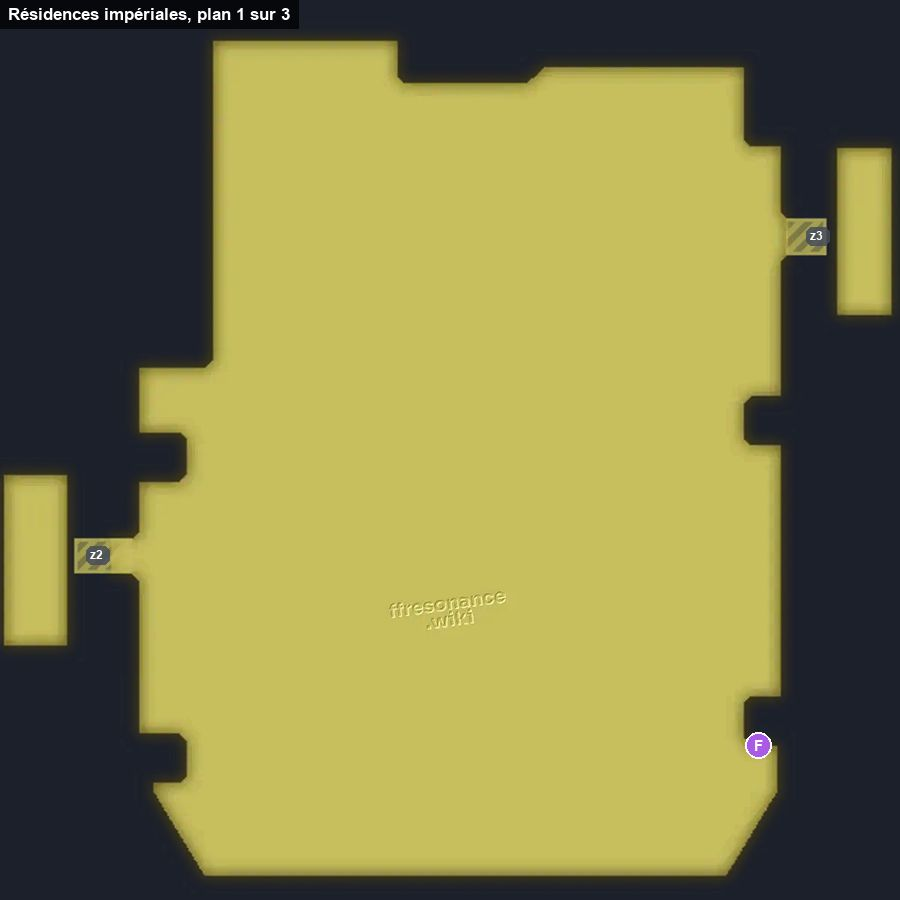
Résidences impériales, plan 1 sur 3 — F : fragment de tablette · zN : passage vers la zone N
Résidences impériales, plan 2 sur 3 — coffres : 1. Plume de phénix · zN : passage vers la zone N -
Rejoins le groupe dans la ruelle, objectif 7, puis progresse dans le tunnel, objectif 8.

Tunnel souterrain, plan — coffres : 1. Bruméther + ; 2. Fragment de magilithe ; 3. Cloche porte-bonheur ; 4. Éther ×2 ; 5. Super-brumipotion ×2 · F : fragment de tablette (×2) · S : point de sauvegarde
La base des rebelles et l'usine d'armes
- Parle aux soldats rebelles, objectif 9, puis partage tes impressions avec Jake, objectif 10. Il rejoint le groupe.
- Choisis ta réponse : trois options, qui donnent un bonus permanent à Lasswell — +10 PM, +3 Force ou +3 Vitesse. Comme il est ton Briseur, la Vitesse le fait jouer plus souvent, donc vider les barres plus vite.
- Vide les coffres de la base :
- zone 1 : Tunique aux roses, Plume de phénix ;
- zone 2 : Remède.
-
Dors à l'auberge de la base, objectif 11. C'est obligatoire : les deux sorties de la base ne s'ouvrent qu'après la nuit.
-
Rends-toi à l'usine d'armes, objectif 12, puis progresse dedans, objectif 13.

Usine d’armes, plan 1 sur 4 — coffres : 1. Magilithe ; 2. Tenue trompeuse ; 3. Lame de cécité ×3 ; 4. Parchemin foudre I ×3 · F : fragment de tablette (×2) · S : point de sauvegarde · zN : passage vers la zone N -
Vide les quatre coffres de l'usine :
- Magilithe ;
- Tenue trompeuse ;
- Lame de cécité ×3 ;
- Parchemin foudre I ×3.
-
Contourne le Pot carmin niveau 30 qui bloque un passage. La fuite marche.
-
Affronte Ignis trois fois. Les deux premiers combats sont scénarisés : tu ne les gagnes pas aux dégâts, inutile d'y brûler tes objets.
-
Gagne le troisième, le vrai : 56 000 PV, faible à l'Eau, et le Feu ne lui fait que la moitié des dégâts. Il laisse un Pendentif solaire.
-
Retourne à la base des rebelles, objectif 14, et va dans la chambre de Jake, objectif 15.
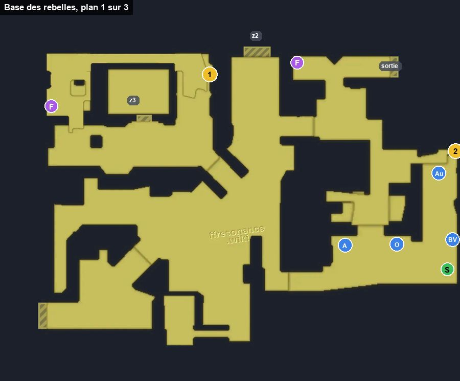
Base des rebelles, plan 1 sur 3 — coffres : 1. Tunique aux roses ; 2. Plume de phénix · F : fragment de tablette (×2) · S : point de sauvegarde · boutiques : A armes, O objets, BV Visions, Au auberge · zN : passage vers la zone N
Base des rebelles, plan 2 sur 3 — coffres : 1. Remède · zN : passage vers la zone N
Le château de Zoldaad
-
Infiltre-toi dans le château de Zoldaad, objectif 16.
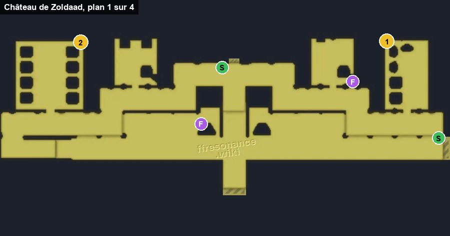
Château de Zoldaad, plan 1 sur 4 — coffres : 1. Kikokusenga ; 2. Maxi-potion · F : fragment de tablette (×2) · S : point de sauvegarde
Château de Zoldaad, plan 2 sur 4 — coffres : 1. Épée Kaiser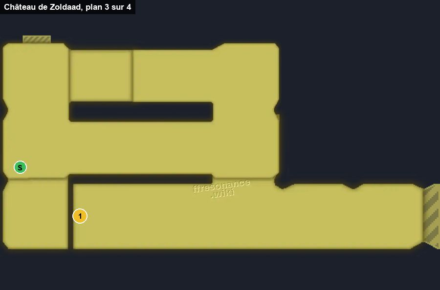
Château de Zoldaad, plan 3 sur 4 — coffres : 1. Bruméther + · S : point de sauvegarde -
Vide les quatre coffres du château :
- zone 1 : Kikokusenga, un katana, et une Maxi-potion ;
- zone 2 : Épée Kaiser ;
- zone 3 : Bruméther +.
-
Lis le livre griffonné, puis examine le tableau. Dans cet ordre, et ça donne une Barrette de grâce. Rien ne te signale la manipulation.
-
Accepte l'Éther + offert par un personnage du château. Une seule fois.
-
Sauve Shera dans les cachots, objectif 17.

Cachots, plan 1 sur 7 — F : fragment de tablette
Cachots, plan 2 sur 7 — coffres : 1. Canon à impulsions · F : fragment de tablette · ? : objet à examiner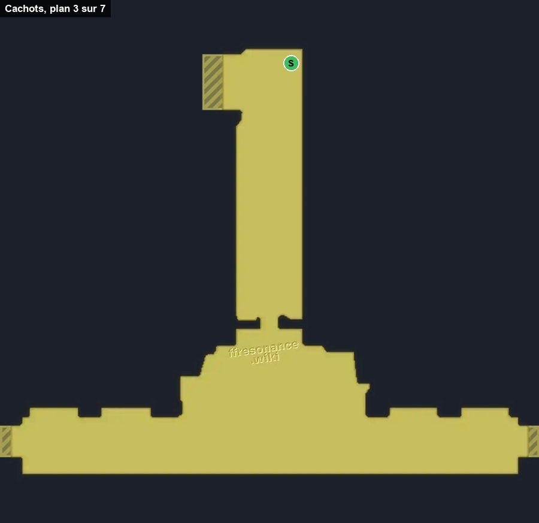
Cachots, plan 3 sur 7 — S : point de sauvegarde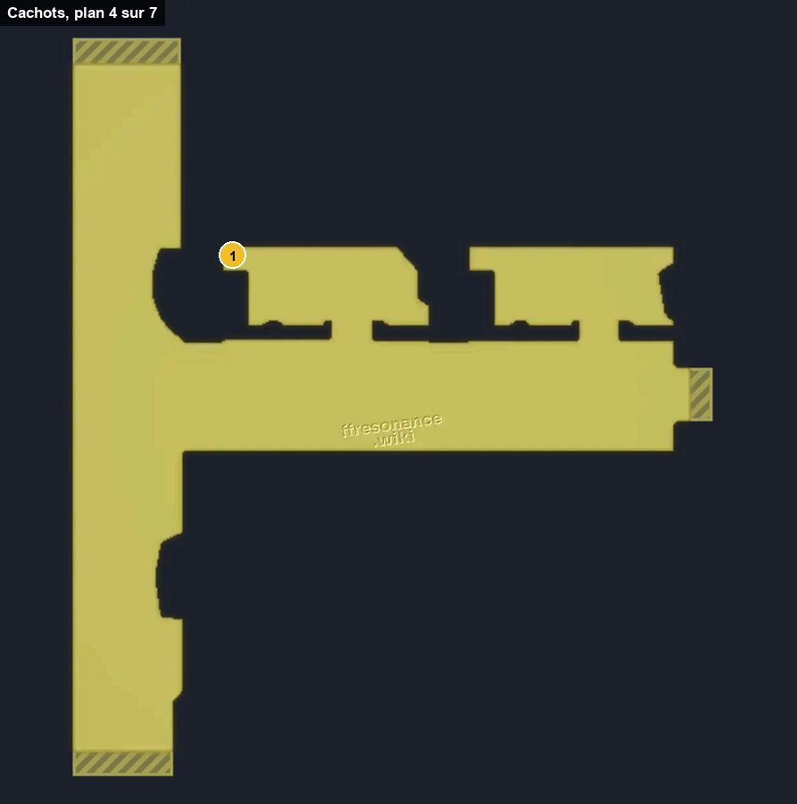
Cachots, plan 4 sur 7 — coffres : 1. Plume de phénix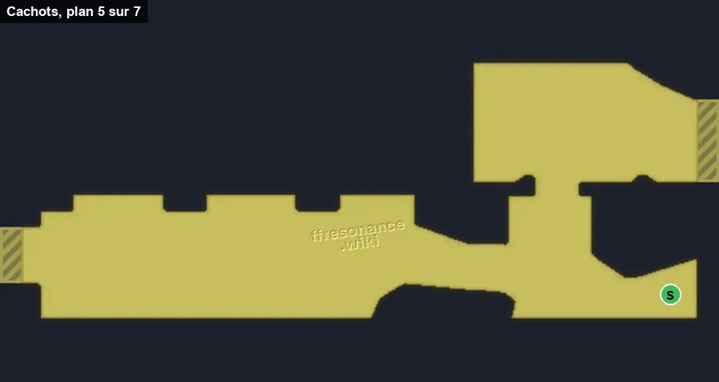
Cachots, plan 5 sur 7 — S : point de sauvegarde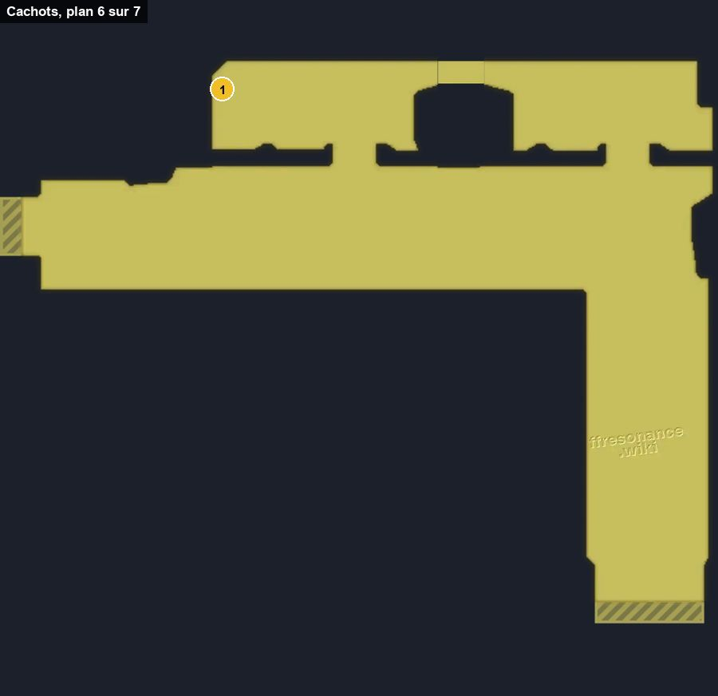
Cachots, plan 6 sur 7 — coffres : 1. Éther +
Cachots, plan 7 sur 7 — coffres : 1. Plume de phénix ×2 -
Note qu'Ignis se bat à tes côtés, niveau 30, comme invité. C'est agréable, et c'est temporaire.
-
Rends-toi dans la salle du trône, objectif 18, après un combat contre quatre Soldat spectral niveau 28, faibles au Feu et à la Lumière.
-
Obtiens la clé de la salle du trône, par l'un des deux chemins — ils mènent à la même clé :
- battre deux Soldat impérial et un Sergent niveau 28, sans fuite ;
- ou parler au chef de section.
- Bats l'Empereur de Zoldaad : niveau 30, 52 000 PV, faible à l'Eau, accompagné de deux Prétorien spectral et de renforts.
- Élimine les gardes d'abord. Tous sont faibles à l'Eau comme lui, donc l'Impulsion aquatique de Nichol les touche tous d'un coup. Garde Guérison disponible contre le poison et la cécité.
Le sommet et l'Entreprise
- Atteins le sommet du château, objectif 19, où Lid se bat seule contre Évan, niveau 30.
- Ne cherche pas à le tuer : Évan ne peut pas être mis K.O. et revient toujours à 20 % de ses points de vie, quels que soient tes dégâts. Ses attaques sont faibles : laisse la scène se jouer.
- Choisis la réponse pour Jake : trois options, qui donnent +30 PV, +3 Force ou +3 Endurance, en permanence.
- Vaincs Lazarov sur l'Entreprise, objectif 20 : niveau 30, 45 000 PV, faible à la Terre. Attention, ses dégâts reçus sont divisés par deux jusqu'à ce qu'il se fasse une injection en cours de combat — avant ça, ne gâche pas tes grosses attaques.
- Abats ses trois expériences dans leur élément faible :
- Voracité v5 : Feu ou Lumière ;
- Cobaye n°9 : Eau ;
- N°999 : Vent.
- Charge la barre du Mécabo avec le coup de patte de Lid : chaque coup en remplit un neuvième.
- Encaisse la récompense : battre Lazarov donne à Lid sa deuxième Limite, Frappe de l'Entreprise.
Quêtes et lieux
Les 20 objectifs, dans l'ordre
| № | Objectif tel qu'il s'affiche |
|---|---|
| 1 | Se rendre à la station de Mozul |
| 2 | Monter à bord du train |
| 3 | Parler aux membres du groupe |
| 4 | Fuir les soldats impériaux |
| 5 | Se rendre en Zoldaad, la capitale impériale |
| 6 | Glaner des informations en Zoldaad |
| 7 | Se rejoindre dans la ruelle |
| 8 | Progresser dans le tunnel |
| 9 | Parler aux soldats rebelles |
| 10 | Partager vos impressions avec Jake |
| 11 | Séjourner à l'auberge de la base |
| 12 | Se rendre à l'usine d'armes |
| 13 | Progresser dans l'usine |
| 14 | Se rendre à la base des rebelles |
| 15 | Aller dans la chambre de Jake |
| 16 | S'infiltrer dans le château de Zoldaad |
| 17 | Sauver Shera dans les cachots |
| 18 | Se rendre dans la salle du trône |
| 19 | Atteindre le sommet du château |
| 20 | Vaincre Lazarov sur l'Entreprise |
Les lieux et leurs coffres
| Lieu | Coffres | Ce qu'ils contiennent |
|---|---|---|
| Station de Mozul | — | Rien, mais trois sanctuaires et le Colisée |
| Voie ferrée de Timber | — | Un combat imposé, une rencontre de Gilgamesh |
| Zoldaad, capitale impériale | 1 | Source régénérante ×2, plus une Plume de phénix aux Résidences impériales |
| Base des rebelles | 3 | Tunique aux roses, Plume de phénix, Remède |
| Usine d'armes | 4 | Magilithe, Tenue trompeuse, Lame de cécité ×3, Parchemin foudre I ×3 |
| Château de Zoldaad | 4 | Kikokusenga, Maxi-potion, Épée Kaiser, Bruméther + |
Les cachots, la salle du trône et le sommet du château n'ont pas de coffre. La Barrette de grâce du château n'est pas dans un coffre : elle vient du livre griffonné et du tableau.
Les boss du chapitre
| Boss | Niveau | PV | Faiblesse | Ce qui complique |
|---|---|---|---|---|
| Ignis, premier et deuxième combats | 27 | — | — | Scénarisés : ne se gagnent pas aux dégâts |
| Ignis, troisième combat | 27 | 56 000 | Eau, Feu de moitié | Le vrai combat. Laisse le Pendentif solaire |
| Empereur de Zoldaad | 30 | 52 000 | Eau | Deux Prétorien spectral et des renforts, tous faibles à l'Eau |
| Évan | 30 | — | — | Impossible à mettre K.O. : revient à 20 % de ses PV. Lid se bat seule |
| Lazarov | 30 | 45 000 | Terre | Dégâts reçus divisés par deux jusqu'à son injection. Trois expériences |
| Ifrit, épreuve | 33 | — | — | Optionnel, sans fuite. Donne la Chimère Ifrit |
| Gogmagog | 34 | — | — | Optionnel, dans sa grotte. Donne une Magilithe |
| Pyrovipère | 37 | — | — | Optionnel, dans sa grotte. Donne une Magilithe |
Les trois expériences de Lazarov
| Expérience | Faiblesse |
|---|---|
| Voracité v5 | Feu ou Lumière |
| Cobaye n°9 | Eau |
| N°999 | Vent |
Voracité revient donc une troisième fois, après ses deux formes des ruines de Kolobos au chapitre 1. Même logique qu'alors : la faiblesse change à chaque version.
Les ennemis ordinaires notables
| Lieu | Ennemis |
|---|---|
| Voie ferrée de Timber | Soldat impérial, niveau 28, sans fuite |
| Usine d'armes | Pot carmin, niveau 30, qui bloque un passage |
| Salle du trône | Soldat spectral niveau 28, Sergent, Prétorien spectral |
Les Visions et la Chimère du chapitre
| Nom | Comment l'obtenir |
|---|---|
| Vision Amélia | Quête Au bout du chemin |
| Vision Camille | Quête L'appel lointain |
| Vision Wilhelm | Quête Ô Général ! Mon Général ! |
| Chimère Ifrit | Épreuve optionnelle du cratère du volcan à l'est de Zoldaad, niveau 33 |
Et trois sanctuaires de plus s'ouvrent à la station de Mozul : Cécil, Shantotto et Y'shtola.
Les quêtes rencontrées en chemin
| Quête | Récompense |
|---|---|
| Au bout du chemin | La Vision Amélia, et une Magilithe |
| L'appel lointain | La Vision Camille, et une Magilithe |
| Rebelle solitaire | Une Magilithe et un Diadème rose |
| Ô Général ! Mon Général ! | La Vision Wilhelm, et un Cristal de magilithe |
⚠️ Aucune quête annexe ne s'ouvre vraiment au chapitre 4 : ces quatre quêtes se prennent ailleurs et se terminent pendant ce chapitre. Si tu ne les vois pas dans ton journal à Zoldaad, elles viendront : la partie 13 donne les 33 quêtes avec leur point de départ.
Butin exhaustif
| Nom exact | Type | Où / comment l'obtenir | Utilité |
|---|---|---|---|
| Kikokusenga | Arme, katana | Château de Zoldaad, zone 1 | La meilleure arme du chapitre pour Lasswell |
| Épée Kaiser | Arme | Château de Zoldaad, zone 2 | Grosse épée pour Rain |
| Lame de cécité | Arme de jet | Usine d'armes, ×3 | Inflige la Cécité |
| Tunique aux roses | Armure | Base des rebelles, zone 1 | Armure légère |
| Tenue trompeuse | Armure | Usine d'armes | Équipement léger |
| Pendentif solaire | Accessoire | Récompense d'Ignis, troisième combat | Accessoire lié au Feu |
| Barrette de grâce | Accessoire | Château de Zoldaad : lire le livre griffonné, puis examiner le tableau | Accessoire de soutien |
| Diadème rose | Accessoire | Quête Rebelle solitaire | Accessoire de soutien |
| Maxi-potion | Consommable | Château de Zoldaad, zone 1 | Gros soin individuel |
| Remède | Consommable | Base des rebelles, zone 2 | Soigne toutes les altérations d'état |
| Plume de phénix | Consommable | Résidences impériales, base des rebelles | Relève à la moitié des PV, là où la Queue de phénix relève au quart |
| Source régénérante | Consommable | Zoldaad, capitale, zone 2, ×2 | Soin |
| Bruméther + | Consommable | Château de Zoldaad, zone 3 | Points de magie pour tout le groupe |
| Éther + | Consommable | Offert par un personnage du château, une seule fois | Points de magie |
| Parchemin foudre I | Consommable offensif | Usine d'armes, ×3 | Dégâts de Foudre |
| Magilithe | Objet d'éveil | Usine d'armes, Gogmagog, Pyrovipère, et trois quêtes | Éveille les Visions — un cran au-dessus du Fragment. Partie 11 |
| Cristal de magilithe | Objet d'éveil | Quête Ô Général ! Mon Général ! | Le cran le plus élevé des objets d'éveil |
| Vision Amélia | Vision | Quête Au bout du chemin | Partie 11 |
| Vision Camille | Vision | Quête L'appel lointain | Partie 11 |
| Vision Wilhelm | Vision | Quête Ô Général ! Mon Général ! | Partie 11 |
| Chimère Ifrit | Chimère | Épreuve du cratère du volcan à l'est de Zoldaad | Invocation de Feu : Flammes de l'enfer. Partie 12 |
| Frappe de l'Entreprise | Limite | Battre Lazarov | La deuxième Limite de Lid |
Conseils et pièges
L'Eau, la clé du chapitre
Ignis au troisième combat, l'Empereur de Zoldaad, ses deux Prétorien spectral et tous ses renforts : faibles à l'Eau. Ignis réduit même le Feu de moitié, ce qui élimine l'autre option évidente contre un boss de feu.
L'Impulsion aquatique de Nichol est le sort du chapitre : elle touche tout le groupe ennemi, et dans ces deux combats, tout le groupe ennemi est faible à l'Eau. Si tu as Léviathan du chapitre 3, c'est l'occasion de l'utiliser.
Les deux premiers Ignis ne se gagnent pas
Tu vas l'affronter trois fois, et les deux premières sont scénarisées : quoi que tu fasses, le combat se termine par la scène prévue. N'y brûle ni Maxi-potion, ni Limite, ni invocation.
Le troisième est le vrai, avec ses 56 000 points de vie. Garde tout pour celui-là.
Lazarov et sa fenêtre d'injection
Tant qu'il ne s'est pas fait son injection, Lazarov encaisse la moitié des dégâts. Taper fort avant ça, c'est perdre la moitié de son effort.
La bonne séquence : occupe-toi de ses trois expériences pendant qu'il est blindé — chacune dans son élément, Feu ou Lumière, Eau, Vent — et garde tes Limites et tes invocations pour l'après-injection. Les coups de patte de Lid remplissent un neuvième de la barre du Mécabo chacun, donc neuf coups pour une barre pleine.
Le livre et le tableau
La Barrette de grâce du château de Zoldaad demande deux gestes dans l'ordre : lire le livre griffonné, puis examiner le tableau. Aucun indice ne relie les deux, et c'est le genre d'objet qu'on découvre six mois plus tard dans un forum.
Dormir n'est pas optionnel
L'objectif 11 te demande de dormir à l'auberge de la base, et ce n'est pas du remplissage : les deux sorties de la base ne s'ouvrent qu'après. Si tu tournes en rond en cherchant la sortie vers l'usine d'armes, c'est que tu n'as pas dormi.
Évan, le boss qu'on n'a pas à battre
Lid seule face à un adversaire qui remonte systématiquement à 20 % de ses PV. Ce n'est pas un combat, c'est une mise en scène. Ses attaques sont faibles, tu ne risques rien : joue trois tours et laisse la scène arriver.
Alertes
- ⏳ La Barrette de grâce du château de Zoldaad demande de lire le livre griffonné puis d'examiner le tableau. Dans cet ordre, et rien ne te le signale.
- ⏳ L'Éther + du château est offert une seule fois par un personnage. Parle à tout le monde avant de descendre aux cachots.
Check-list
- Les trois sanctuaires de Mozul faits : Cécil, Shantotto, Y'shtola
- Colisée de Grandshelt repéré
- Épreuve d'Ifrit repérée au cratère du volcan
- Gogmagog et Pyrovipère repérés dans leurs grottes
- Combat du train passé, Jake rencontré
- Les deux scènes d'informations faites : Bidonville et Marché de la capitale
- Source régénérante ×2 et la Plume de phénix des Résidences impériales prises
- Jake recruté, bonus de Lasswell choisi à la base des rebelles
- Les 3 coffres de la base des rebelles vidés
- Nuit passée à l'auberge, sorties ouvertes
- Les 4 coffres de l'usine d'armes vidés
- Les trois Ignis passés, Pendentif solaire récupéré
- Les 4 coffres du château vidés
- Barrette de grâce obtenue par le livre et le tableau
- Éther + offert récupéré
- Shera sauvée dans les cachots
- Clé de la salle du trône obtenue
- Empereur de Zoldaad battu, gardes éliminés d'abord
- Évan affronté au sommet, statistique de Jake choisie
- Lazarov battu, Frappe de l'Entreprise débloquée
Partie 06
Chapitre 5, première moitié : l'aéronef et Mysidia
L'essentiel
- Les boss : Goulu à Sunioo, les deux serviteurs du vieux château — Flamme liquide et Géant de fer —, puis Byblos au bout de la bibliothèque. Tellus, lui, se montre sans se laisser battre.
- Ne rate pas : l'Armure de Tyr, dans un coffre verrouillé qui demande d'allumer trois statues dans le bon ordre, et l'épreuve de Shiva à Mysidia.
- Le choix : Gilgamesh te défie sur le pont de l'aéronef, niveau 40 et 90 000 PV. Tu peux accepter ou revenir plus tard.
- Avant de partir : du Vent contre Goulu, de la Glace et de la Foudre pour les deux serviteurs, et de la magie — les serviteurs ripostent à tout coup physique.
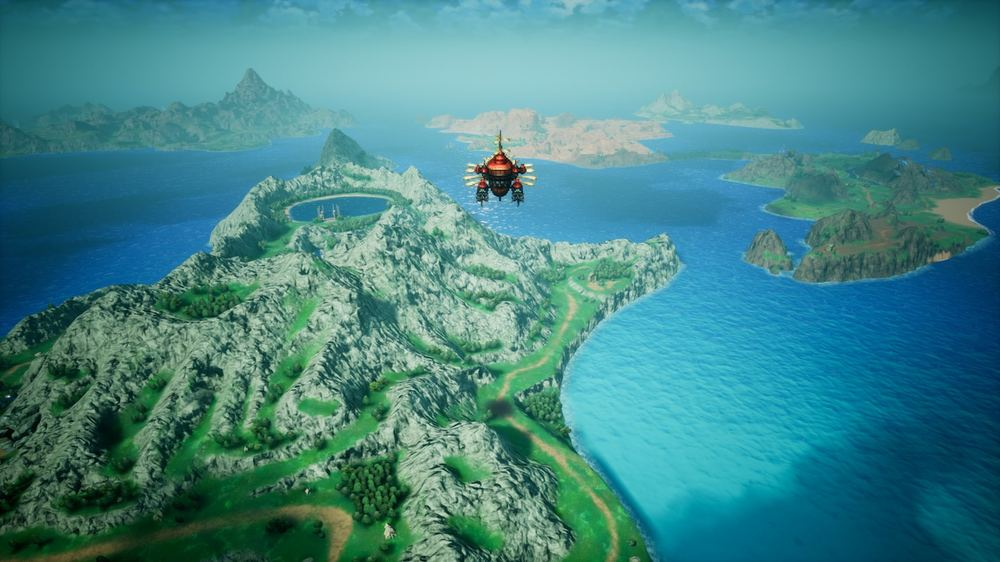
L'aéronef au-dessus de la carte du monde
Objectif
Le chapitre 5 est le plus long du jeu : 38 objectifs, là où les autres en comptent 8 à 21. Cette partie couvre les 18 premiers, de l'embarquement sur l'aéronef jusqu'au grimoire de la Bibliothèque arcanique. La suite est dans la partie 07.
Au programme : trouver Mysidia, la cité magique, recruter Sakura, livrer une potion à Sunioo, et fouiller deux donjons — un vieux château et une bibliothèque dont les étagères attaquent.
Itinéraire
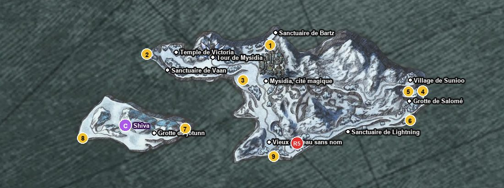
L'île Mysidia sur la mappemonde — objets à ramasser sur la carte : 1. Shuriken Fuma ×2 ; 2. Veste mirage ; 3. Parchemin feu II ×2 ; 4. Grimoire lumineux ; 5. Plume de phénix ×3 ; 6. Super-brumipotion ×2 ; 7. Catastrophe ; 8. Orbe strié ; 9. Tente ×2 · fouilles au radar : R5. Veste magique · C : Shiva
- 📍 La zone en images : la soluce française du chapitre 5 détaille les objectifs, les coffres et les boss, et la soluce vidéo française montre Tellus et ses changements de règle.
L'itinéraire est linéaire, mais il passe par deux allers-retours à l'aéronef :
L'aéronef → Mysidia, cité magique → l'atelier de potions → village de Sunioo → vieux château sans nom → Bibliothèque arcanique.
Un point de navigation à connaître : Mysidia ne se trouve pas sur la carte. Il faut utiliser le radar de l'aéronef, et c'est Lid qui annonce le résultat — une réponse ferme de ta part donne la direction.
Et un autre : la sortie de Mysidia reste fermée jusqu'à ce que tu aies fait l'objectif de l'atelier de potions. Inutile de chercher la porte avant.
Déroulé pas à pas
L'aéronef et la recherche de Mysidia
-
Monte à bord de l'aéronef sur la mappemonde, près de la capitale, objectif 1.
-
Vérifie ton journal de quêtes. Trois quêtes s'ouvrent ici — La mission de Nichol, L'appel lointain et Rebelle solitaire — et Héritage suit peu après.
-
Décide pour Gilgamesh, s'il te poursuit depuis la tour de Sirène. Il attend sur le pont de l'aéronef et défie Rain : niveau 40, 90 000 PV. Le gagner rend les Gants de Genji. Tu peux refuser et revenir, la rencontre ne disparaît pas. Toute la chaîne est dans la partie 20.
-
Va à l'intérieur de l'aéronef, objectif 2.
-
Trouve Mysidia, objectif 3, avec le radar de bord. Réponds fermement à Lid : c'est ce qui donne la direction.
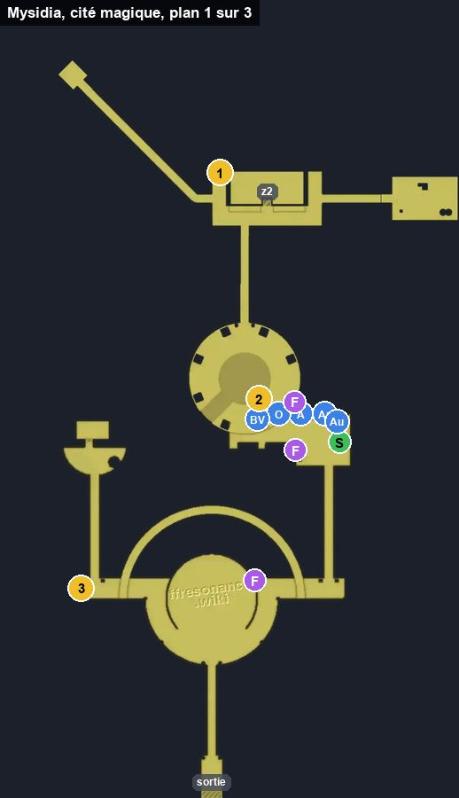
Mysidia, cité magique, plan 1 sur 3 — coffres : 1. Épée de chevalier ; 2. Arc de séraphin ; 3. Lame de silence ×3 · F : fragment de tablette (×3) · S : point de sauvegarde · boutiques : Ar armures, Au auberge, A armes, O objets, BV Visions · zN : passage vers la zone N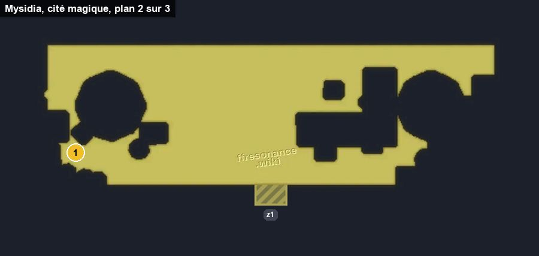
Mysidia, cité magique, plan 2 sur 3 — coffres : 1. Source régénérante ×2 · zN : passage vers la zone N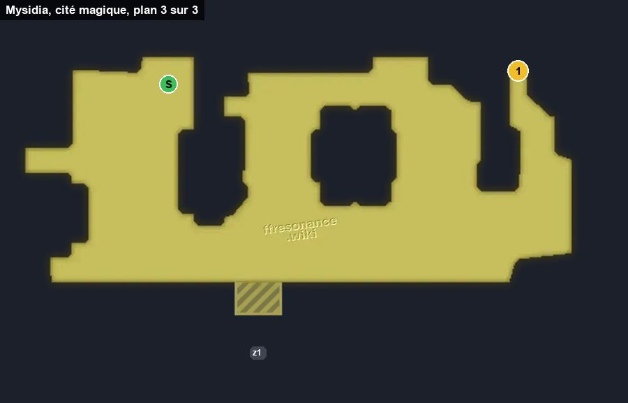
Mysidia, cité magique, plan 3 sur 3 — coffres : 1. Boucles d’oreilles du dieu-foudre · S : point de sauvegarde · zN : passage vers la zone N
Mysidia, cité magique
- Rencontre Sakura à l'arrivée. Ça ouvre deux quêtes : À l'horizon et Volonté forgée.
- Va chez Sakura, objectif 4. Elle rejoint le groupe.
- Vide les cinq coffres de la ville :
- zone 1 : l'Épée de chevalier, un espadon pour Rain qui donne +10 % de dégâts magiques ; l'Arc de séraphin, +10 % de soin magique ; et Lame de silence ×3 ;
- zone 2 : Source régénérante ×2 ;
- zone 3 : les Boucles d'oreilles du dieu-foudre, qui rendent les attaques physiques non élémentaires de Foudre — autrement dit, elles donnent un élément à qui n'en avait pas.
- Fais les trois sanctuaires qui s'ouvrent ici : Bartz, Vaan et Lightning. Réponses dans la partie 11.
- Tente l'épreuve de Shiva, niveau 35, dans la Demeure de chimère signalée sur la carte. Sans fuite possible, et la victoire ajoute Shiva à tes Chimères.
- Repère les deux grottes optionnelles : Salomé niveau 39 dans la Grotte de Salomé, et Jötunn niveau 42 dans la Grotte du jötunn. Chacun donne une Magilithe, et la fuite marche contre les deux.
- Joue à Mog perché, une quête en trois manches de chat. Les récompenses montent : une Maxi-brumipotion, puis une Magilithe, puis un Cristal de magilithe. Les trois valent le détour.
- Avance la quête Mécabo déchaîné, qui a une étape ici.
- Rends-toi à l'atelier de potions, objectif 5. Il n'y a ni coffre ni combat : cet objectif sert uniquement à ouvrir la sortie de la ville.
Le village de Sunioo
-
Va au village de Sunioo, objectif 6.
Village de Sunioo, plan 1 sur 5 — coffres : 1. Manteau arcanique ; 2. Bâton de résonance ; 3. Shuriken Fuma ×2 · F : fragment de tablette (×2) · boutiques : BV Visions · zN : passage vers la zone N
Village de Sunioo, plan 2 sur 5 — coffres : 1. Parchemin eau II ×2 · S : point de sauvegarde · boutiques : Au auberge · zN : passage vers la zone N
Village de Sunioo, plan 3 sur 5 — coffres : 1. Plume de phénix ×2 · zN : passage vers la zone N
Village de Sunioo, plan 4 sur 5 — boutiques : A armes, Ar armures · zN : passage vers la zone N
Village de Sunioo, plan 5 sur 5 — boutiques : O objets · zN : passage vers la zone N -
Vide les cinq coffres du village :
- zone 1 : le Manteau arcanique, une armure légère ; le Bâton de résonance, qui donne à Sakura +20 % de dégâts quand elle frappe la faiblesse élémentaire de la cible ; et Shuriken Fuma ×2 ;
- zone 2 : Parchemin eau II ×2 ;
- zone 3 : Plume de phénix ×2.
- Bats Goulu, niveau 33, environ 90 000 PV, faible au Vent et totalement insensible à la Terre. Sans fuite.
- Utilise Rafale de Jake, qui marche très bien ici. En revanche, la Terre de Lid ne fait rien du tout : change-la d'élément ou donne-lui autre chose à faire.
- Annule son Avale par un choc. Cette attaque fait disparaître un personnage du combat jusqu'à ce que Goulu le recrache — étourdis-le et le personnage revient.
- Livre la potion au chef du village, et choisis ta réponse : trois options, qui donnent un bonus permanent à Sakura — +10 PM, +3 Magie ou +3 Esprit. Elle porte trois éléments et lance beaucoup de sorts : les +10 PM se justifient autant que la Magie.
- Note qu'au prochain décollage, la quête du radar de Mysidia se lance.
Le vieux château sans nom
-
Rends-toi au vieux château sans nom, objectif 7, puis progresse dedans, objectif 8.
Vieux château sans nom, plan 1 sur 4 — coffres : 1. Sceptre d’impact · zN : passage vers la zone N
Vieux château sans nom, plan 2 sur 4 — coffres : 1. Armure de Tyr ; 2. Magiblaster · F : fragment de tablette · S : point de sauvegarde · zN : passage vers la zone N
Vieux château sans nom, plan 3 sur 4 — coffres : 1. Source régénérante ×3 · zN : passage vers la zone N
Vieux château sans nom, plan 4 sur 4 — coffres : 1. Magilithe · F : fragment de tablette · S : point de sauvegarde · zN : passage vers la zone N -
Vide les cinq coffres du château :
- zone 1 : le Sceptre d'impact, qui donne à Sakura +30 % de choc sur la faiblesse ;
- zone 2 : le Magiblaster pour Jake, +10 % de dégâts magiques, et le coffre verrouillé de l'Armure de Tyr ;
- zone 3 : Source régénérante ×3 ;
- zone 4 : une Magilithe.
- Ouvre le coffre verrouillé de l'Armure de Tyr. Examine d'abord le coffre, puis allume les trois statues dans cet ordre : épée brisée, cheval affaibli, ténèbres scellées. L'armure donne +250 PV et une Barrière continue dès que le porteur tombe sous la moitié de ses points de vie — c'est l'une des meilleures pièces du jeu à ce stade.
- Prends les quêtes du lieu : Héritage, Le retour de Victoria — qui donne la Vision Victoria et une Magilithe — et Combat sur le grand pont.
- Bats les deux serviteurs, objectifs 9 et 10, dans l'ordre que tu veux. Tous deux sont niveau 34, sans fuite, et ripostent à chaque coup physique : passe en magie pure pour les deux.
- Flamme liquide : environ 78 000 PV, faible à la Glace et à l'Eau, et elle absorbe le Feu — un sort de Feu la soigne. Elle lance Miroir, qui renvoie la magie : attends qu'il tombe.
- Géant de fer : environ 85 000 PV, faible à la Foudre. Extra Foudre, Méga Foudre et Tonitus font tout le travail.
- Progresse à nouveau dans le château, objectif 11, et rencontre Tellus. Ce premier affrontement est scénarisé : tu ne peux pas le gagner. Il se bloque à un cinquième de ses points de vie, et le combat se termine après sa troisième action, qui est toujours Souffle écrasant.
- Écoute-le quand même, parce que ses annonces sont des règles : « Magie majestueuse » signifie qu'il n'accepte que la magie, « Montrez-moi vos talents au combat ! » qu'il n'accepte que le physique. Frapper dans le mauvais registre ne sert à rien, et il contre-attaque. Retiens la leçon : tu le retrouveras pour de vrai dans la partie 07.
- Abrège si tu veux : le combat se coupe plus tôt si tu le fais passer sous 60 % de ses PV ou si tu l'étourdis. Et son Souffle écrasant s'annule par un choc, ce qui vaut pour les deux versions du combat.
La Bibliothèque arcanique
-
Rends-toi à la Bibliothèque arcanique, objectif 12.
Bibliothèque arcanique, plan — coffres : 1. Lame de cécité ×2 ; 2. Genmato ; 3. Brumipotion ×3 ; 4. Livre de force ; 5. Bruméther ×3 · F : fragment de tablette (×2) · S : point de sauvegarde · zN : passage vers la zone N -
Vide les cinq coffres : Lame de cécité ×2, le Genmato (+10 % de dégâts magiques), le Livre de force (+10 % d'attaque physique), Brumipotion ×3 et Bruméther ×3.
-
Vaincs les cinq étagères, objectifs 13 à 17. Ce sont cinq combats de niveau 35, sans fuite, que tu peux prendre dans l'ordre que tu veux — et que tu peux refuser pour revenir plus tard.
-
Garde leurs compositions sous les yeux, parce que chaque étagère a ses propres faiblesses :
- Page 64 ×2 : Feu et Lumière ;
- Gargouille (Vent) et Méduse (Foudre) ;
- Géant (Glace et Ténèbres) et Page 256 ×2 (Feu) ;
- Dragon fossilisé ×2 (Feu et Lumière) et Âme (Terre) ;
- Mage ×2 (Glace et Lumière) et Page 32 (Feu).
- Contourne le Pot azur niveau 36 qui bloque un passage. La fuite marche, et un Bruméther + le met hors de combat d'un coup.
- Trouve le grimoire, objectif 18, et bats Byblos, niveau 36, faible au Feu et aux Ténèbres, sans fuite. Il n'apparaît qu'une fois les cinq étagères vaincues.
La suite du chapitre — objectifs 19 à 38 — est dans la partie 07.
Quêtes et lieux
Les objectifs 1 à 18, dans l'ordre
| № | Objectif tel qu'il s'affiche |
|---|---|
| 1 | Monter à bord de l'aéronef sur la mappemonde près de la capitale |
| 2 | Se rendre à l'intérieur de l'aéronef une fois à bord |
| 3 | Trouver Mysidia |
| 4 | Aller chez Sakura |
| 5 | Se rendre à l'atelier de potions |
| 6 | Se rendre au village de Sunioo |
| 7 | Se rendre au vieux château sans nom |
| 8 | Progresser dans le vieux château sans nom |
| 9 | Vaincre les deux serviteurs du vieux château sans nom (0/2) |
| 10 | Vaincre les deux serviteurs du vieux château sans nom (1/2) |
| 11 | Progresser dans le vieux château sans nom |
| 12 | Se rendre à la Bibliothèque arcanique |
| 13 | Vaincre les livres-monstres dans la bibliothèque (0/5) |
| 14 | Vaincre les livres-monstres dans la bibliothèque (1/5) |
| 15 | Vaincre les livres-monstres dans la bibliothèque (2/5) |
| 16 | Vaincre les livres-monstres dans la bibliothèque (3/5) |
| 17 | Vaincre les livres-monstres dans la bibliothèque (4/5) |
| 18 | Trouver le grimoire dans la bibliothèque |
Les objectifs à compteur — 0/2, 1/2, puis 0/5 à 4/5 — se font dans l'ordre que tu veux.
Les lieux et leurs coffres
| Lieu | Coffres | Ce qu'ils contiennent |
|---|---|---|
| L'aéronef | — | Rien, mais Gilgamesh sur le pont |
| Mysidia, cité magique | 5 | Épée de chevalier, Arc de séraphin, Lame de silence ×3, Source régénérante ×2, Boucles d'oreilles du dieu-foudre |
| Atelier de potions | — | Ni coffre ni combat : il ouvre la sortie de la ville |
| Village de Sunioo | 5 | Manteau arcanique, Bâton de résonance, Shuriken Fuma ×2, Parchemin eau II ×2, Plume de phénix ×2 |
| Vieux château sans nom | 5 | Sceptre d'impact, Armure de Tyr (verrouillé), Magiblaster, Source régénérante ×3, Magilithe |
| Bibliothèque arcanique | 5 | Lame de cécité ×2, Genmato, Brumipotion ×3, Livre de force, Bruméther ×3 |
Le coffre verrouillé de l'Armure de Tyr
C'est le seul coffre à énigme de cette moitié de chapitre, et il récompense bien. La manipulation, dans l'ordre :
- Examine le coffre, en zone 2 du vieux château.
- Allume la statue à l'épée brisée.
- Allume la statue au cheval affaibli.
- Allume la statue aux ténèbres scellées.
L'Armure de Tyr donne +250 PV et déclenche une Barrière continue sous la moitié des points de vie. Les autres énigmes de donjon du jeu sont rassemblées dans la partie 14.
Les boss de cette moitié de chapitre
| Boss | Niveau | PV | Faiblesse | Ce qui complique |
|---|---|---|---|---|
| Gilgamesh, deuxième combat | 40 | 90 000 | — | Optionnel. Le gagner rend les Gants de Genji |
| Goulu | 33 | ~90 000 | Vent, insensible à la Terre | Avale fait disparaître un personnage. Sans fuite |
| Flamme liquide | 34 | ~78 000 | Glace, Eau, absorbe le Feu | Riposte au physique, lance Miroir. Sans fuite |
| Géant de fer | 34 | ~85 000 | Foudre | Riposte au physique. Sans fuite |
| Tellus, première rencontre | 39 | imbattable | Vent, Terre de moitié | Scénarisé : bloqué à un cinquième de ses PV, fin après sa troisième action. Le vrai combat est dans la partie 07 |
| Byblos | 36 | — | Feu, Ténèbres | Apparaît après les cinq étagères. Sans fuite |
| Pot azur | 36 | — | — | Optionnel. Un Bruméther + le règle |
| Shiva, épreuve | 35 | — | — | Optionnelle, sans fuite. Donne la Chimère Shiva |
| Salomé | 39 | — | — | Optionnel. Donne une Magilithe |
| Jötunn | 42 | — | — | Optionnel. Donne une Magilithe |
Le Géant de fer porte le même nom que l'adversaire du prologue, mais ce n'est pas le même combat : celui-ci a 85 000 PV au lieu de 89 999, et il se bat normalement.
Les cinq étagères de la bibliothèque
| Étagère | Ennemis | Faiblesses |
|---|---|---|
| Première | Page 64 ×2 | Feu, Lumière |
| Deuxième | Gargouille, Méduse | Vent pour la Gargouille, Foudre pour la Méduse |
| Troisième | Géant, Page 256 ×2 | Glace et Ténèbres pour le Géant, Feu pour les Pages |
| Quatrième | Dragon fossilisé ×2, Âme | Feu et Lumière pour les Dragons, Terre pour l'Âme |
| Cinquième | Mage ×2, Page 32 | Glace et Lumière pour les Mages, Feu pour la Page |
Tous les combats sont au niveau 35 et sans fuite, mais tu peux refuser d'engager une étagère et revenir. Le Feu apparaît dans quatre des cinq : c'est l'élément à avoir sous la main.
Les quêtes de cette moitié de chapitre
| Quête | Où elle s'ouvre | Récompense |
|---|---|---|
| La mission de Nichol | À bord de l'aéronef | Voir la partie 13 |
| L'appel lointain | À bord de l'aéronef | La Vision Camille |
| Rebelle solitaire | À bord de l'aéronef | Une Magilithe et un Diadème rose |
| Héritage | Aéronef, puis vieux château | Voir la partie 13 |
| À l'horizon | En rencontrant Sakura | Voir la partie 13 |
| Volonté forgée | En rencontrant Sakura | La Vision Aileen |
| Mécabo déchaîné | Étape à Mysidia | Dernière étape de la chaîne du Mécabo |
| Mog perché | Mysidia | Maxi-brumipotion, puis Magilithe, puis Cristal de magilithe |
| Le retour de Victoria | Vieux château sans nom | La Vision Victoria et une Magilithe |
| Combat sur le grand pont | Vieux château sans nom | Voir la partie 13 |
Butin exhaustif
| Nom exact | Type | Où / comment l'obtenir | Utilité |
|---|---|---|---|
| Épée de chevalier | Arme, espadon | Mysidia, zone 1 | Pour Rain : +10 % de dégâts magiques |
| Arc de séraphin | Arme, arc | Mysidia, zone 1 | +10 % de soin magique |
| Bâton de résonance | Arme, bâton | Village de Sunioo, zone 1 | Pour Sakura : +20 % de dégâts sur la faiblesse |
| Sceptre d'impact | Arme, sceptre | Vieux château, zone 1 | Pour Sakura : +30 % de choc sur la faiblesse |
| Magiblaster | Arme | Vieux château, zone 2 | Pour Jake : +10 % de dégâts magiques |
| Lame de silence | Arme de jet | Mysidia, zone 1, ×3 | Inflige le Silence |
| Shuriken Fuma | Arme de jet | Village de Sunioo, zone 1, ×2 | Projectile amélioré |
| Lame de cécité | Arme de jet | Bibliothèque arcanique, ×2 | Inflige la Cécité |
| Manteau arcanique | Armure légère | Village de Sunioo, zone 1 | Armure de mage |
| Armure de Tyr | Armure | Vieux château, zone 2, coffre verrouillé | +250 PV et Barrière continue sous la moitié des PV |
| Boucles d'oreilles du dieu-foudre | Accessoire | Mysidia, zone 3 | Rend les attaques physiques non élémentaires de Foudre |
| Genmato | Objet d'amélioration | Bibliothèque arcanique | +10 % de dégâts magiques, en permanence |
| Livre de force | Objet d'amélioration | Bibliothèque arcanique | +10 % d'attaque physique, en permanence |
| Plume de phénix | Consommable | Village de Sunioo, zone 3, ×2 | Relève à la moitié des PV |
| Source régénérante | Consommable | Mysidia ×2, vieux château ×3 | Soin |
| Brumipotion | Consommable | Bibliothèque arcanique, ×3 | Soin de groupe |
| Maxi-brumipotion | Consommable | Première manche de Mog perché | Gros soin de groupe |
| Bruméther | Consommable | Bibliothèque arcanique, ×3 | Points de magie pour tout le groupe |
| Parchemin eau II | Consommable offensif | Village de Sunioo, zone 2, ×2 | Dégâts d'Eau de second palier |
| Magilithe | Objet d'éveil | Vieux château zone 4, Salomé, Jötunn, et deux quêtes | Éveille les Visions. Partie 11 |
| Cristal de magilithe | Objet d'éveil | Troisième manche de Mog perché | Le cran le plus élevé des objets d'éveil |
| Vision Bartz | Vision | Sanctuaire, à Mysidia | Partie 11 |
| Vision Vaan | Vision | Sanctuaire, à Mysidia | Partie 11 |
| Vision Lightning | Vision | Sanctuaire, à Mysidia | Partie 11 |
| Vision Victoria | Vision | Quête Le retour de Victoria | Partie 11 |
| Chimère Shiva | Chimère | Épreuve de la Demeure de chimère de Mysidia | Invocation de Glace. Partie 12 |
| Gants de Genji | Accessoire | Battre Gilgamesh sur le pont de l'aéronef | Récupération de l'objet volé au chapitre 1 |
Conseils et pièges
Les serviteurs ripostent : range ton épée
Flamme liquide et le Géant de fer ripostent à chaque coup physique. Ce n'est pas une petite contre-attaque : c'est le piège qui transforme ces deux combats en défaites pour qui joue normalement.
Passe en magie pure sur les deux. Glace ou Eau contre Flamme liquide — jamais de Feu, elle l'absorbe et se soigne — et Foudre contre le Géant de fer, avec Extra Foudre, Méga Foudre ou Tonitus.
Un détail qui coûte des tours : Flamme liquide lance Miroir, qui renvoie la magie. Quand le miroir est posé, arrête de lancer des sorts et attends qu'il tombe.
Tellus t'impose son registre, dès sa première apparition
Tu ne peux pas gagner cette première rencontre, mais elle sert de leçon — et la leçon vaut pour le vrai combat de la partie 07 et pour la revanche du chapitre 7. Tellus annonce ce qu'il accepte, et il faut le lire :
| Son annonce | Ce qu'il accepte |
|---|---|
| « Magie majestueuse » | La magie uniquement |
| « Montrez-moi vos talents au combat ! » | Le physique uniquement |
Frapper dans le mauvais registre ne sert à rien du tout, et il contre-attaque par-dessus. Prends tout de suite le réflexe : garde un sort et une attaque physique prêts sur chaque personnage, et alterne quand il l'ordonne.
Et comme pour Goulu, son attaque dévastatrice — Souffle écrasant — s'annule par un choc. Ta jauge d'étourdissement est une touche d'annulation déguisée.
Lid n'a rien à faire contre Goulu
Goulu est insensible à la Terre, et la Terre est l'élément de Lid. Elle ne fera aucun dégât tant qu'elle tape dans son élément naturel.
Deux options : lui donner une Vision de Vent, ou la sortir du groupe pour ce combat. Rafale de Jake est la réponse propre, et le Vent est aussi la faiblesse de Tellus — garde-le sous la main, tu en auras besoin jusqu'au chapitre 7.
Mog perché, trois manches qui valent un Cristal
Le jeu de chat de Mysidia ressemble à un mini-jeu décoratif. Ses récompenses ne le sont pas : Maxi-brumipotion, puis Magilithe, puis Cristal de magilithe.
Le Cristal est le cran le plus élevé des objets d'éveil des Visions, et à ce stade du jeu il est rare. Fais les trois manches.
Le Feu pour la bibliothèque
Quatre des cinq étagères ont au moins un ennemi faible au Feu, et Byblos aussi. Si tu n'as qu'un élément à monter avant d'entrer, c'est celui-là.
Petit confort : tu peux refuser une étagère et revenir. Si une composition te pose problème, laisse-la pour la fin, le temps de monter deux niveaux sur les autres.
Alertes
- ⏳ L'Armure de Tyr est dans un coffre verrouillé, en zone 2 du vieux château sans nom. Il faut l'examiner, puis allumer les trois statues dans l'ordre — épée brisée, cheval affaibli, ténèbres scellées. Rien ne t'indique la séquence en jeu, et l'armure est l'une des meilleures du milieu de partie.
- ⏳ Mog perché se joue en trois manches, et la troisième seule donne le Cristal de magilithe. Si tu t'arrêtes après la première, tu laisses le vrai lot derrière toi.
Check-list
- Décision prise pour Gilgamesh sur le pont de l'aéronef
- Mysidia trouvée au radar, réponse ferme donnée à Lid
- Sakura recrutée
- Les 5 coffres de Mysidia vidés
- Les trois sanctuaires de Mysidia faits : Bartz, Vaan, Lightning
- Épreuve de Shiva tentée
- Salomé et Jötunn repérés dans leurs grottes
- Les trois manches de Mog perché gagnées, Cristal de magilithe en poche
- Atelier de potions visité, sortie de la ville ouverte
- Les 5 coffres de Sunioo vidés
- Goulu battu au Vent, bonus de Sakura choisi chez le chef du village
- Les 5 coffres du vieux château vidés
- Armure de Tyr débloquée par les trois statues
- Flamme liquide et Géant de fer battus à la magie
- Première rencontre de Tellus passée, ses deux registres compris
- Quêtes Héritage, Le retour de Victoria et Combat sur le grand pont prises
- Les 5 coffres de la Bibliothèque arcanique vidés
- Les 5 étagères vaincues
- Byblos battu, grimoire trouvé
Partie 07
Chapitre 5, seconde moitié : les vestiges du temps
L'essentiel
- Les boss : Dark Fina et ses 100 000 PV sur le champ de bataille, puis le vrai Tellus et ses 135 000 PV.
- Ne rate pas : le Ruban que laisse Dark Fina — le premier du jeu —, et les quatre coffres de la Tour de Mysidia.
- Le choix : avant le sommet de la tour et avant Tellus, le jeu te demande si tu es prêt. Réponds « pas encore » autant de fois qu'il faut, la question revient.
- Avant de partir : de l'Eau et de la Lumière pour Dark Fina, du Vent pour Tellus, et une Vision soigneuse — ton groupe de base n'a personne qui soigne.
Un mot sur les spoilers : cette moitié de chapitre contient la grande révélation de l'arc. Les objectifs sont listés tels que le jeu les affiche, parce qu'un guide sans eux ne sert à rien, mais le texte ne t'explique rien de l'histoire. Si tu tiens à la découvrir vierge, lis seulement la section Butin exhaustif et les deux fiches de boss.
Objectif
Terminer le chapitre 5, c'est-à-dire ses vingt derniers objectifs, de l'esprit de Fina jusqu'au départ pour Gronoa. La première moitié est dans la partie 06.
Deux gros combats à plus de 100 000 points de vie chacun ferment le chapitre. C'est le pic de difficulté de la première moitié du jeu.
Itinéraire
- 📍 La zone en images : la soluce française du chapitre 5 liste les objectifs 19 à 38, et la fiche française de Dark Fina donne son répertoire complet, compétence par compétence.
Le parcours alterne entre deux endroits, et ça peut désorienter :
l'esprit de Fina → le portail → retour à la Bibliothèque arcanique → Tour de Mysidia → le sommet de la tour → à nouveau l'esprit de Fina → la base hessienne → le camp d'Umbra → le champ de bataille → chez Sakura, à Mysidia → Gronoa.
Le seul lieu à fouiller est la Tour de Mysidia, et c'est aussi le seul qui contient des coffres : une zone, quatre coffres, danger 39.
Déroulé pas à pas
L'esprit de Fina et la Tour de Mysidia
-
Accède à l'esprit de Fina, objectif 19, puis trouve-la dedans, objectif 20.
Esprit de Fina, plan 1 sur 11 — F : fragment de tablette · S : point de sauvegarde · zN : passage vers la zone N
Esprit de Fina, plan 9 sur 11 — coffres : 1. Fouet lunaire · zN : passage vers la zone N
Esprit de Fina, plan 2 sur 11 — coffres : 1. Canon mitrailleur · F : fragment de tablette · zN : passage vers la zone N
Esprit de Fina, plan 7 sur 11 — coffres : 1. Super-brumipotion ×2 · zN : passage vers la zone N -
Poursuis Dark Fina, objectif 21.
-
Inspecte le portail, objectif 22, puis les environs, objectif 23.
-
Retourne dans le monde réel, objectif 24. Tu réapparais à la Bibliothèque arcanique.
-
Rends-toi à la Tour de Mysidia, objectif 25. Une seule zone, danger 39, et quatre coffres :
- la Robe protectrice, une robe d'armure ;
- la Masse fulgurante, un marteau qui donne +20 % de dégâts sur la faiblesse élémentaire ;
- une Magilithe ;
- Flacons de sels ×3.
Tour de Mysidia, plan — coffres : 1. Robe protectrice ; 2. Magilithe ; 3. Masse fulgurante ; 4. Flacon de sels ×3 · F : fragment de tablette (×4) · S : point de sauvegarde · zN : passage vers la zone N -
Gère le Pot azur niveau 36 qui bloque un passage. La fuite marche, et un Bruméther + le met hors de combat d'un coup.
-
Atteins le sommet de la tour, objectif 26. Le jeu te demande si tu es prêt : réponds « pas encore » si tu veux te préparer, la question reviendra.
-
Accède à nouveau à l'esprit de Fina, objectif 27, puis fouille d'autres zones de cet esprit, objectif 28.
-
Suis le nouveau chemin, objectif 29, et bats le Morbol qui l'occupe : niveau 35, faible au Feu, sans fuite.
-
Rends-toi à la base hessienne, objectif 30, puis au camp d'Umbra, objectif 31.
-
Parle aux Veritas, objectif 32, puis à Umbra, objectif 33.
Les deux grands combats
- Inspecte le portail, objectif 34.
- Rejoins le champ de bataille, objectif 35.
- Prépare-toi vraiment avant Dark Fina. Trois choses à faire, dans cet ordre :
- équiper une Vision soigneuse — aucun membre de ton groupe de base ne soigne, et aucune Chimère ne peut être invoquée pendant ce combat ;
- monter Nichol sur l'Eau et Sakura sur la Lumière, ses deux faiblesses ;
- garder Barrière et Anti-Charme disponibles.
- Bats Dark Fina : niveau 38, 100 000 PV, barre de choc de 800, faible à l'Eau et à la Lumière, Ténèbres réduites de moitié, sans fuite.
- Soigne avant sa première Dystopie, son attaque de groupe aux Ténèbres. Un choc l'annule : c'est la parade la plus fiable du combat.
- Ignore les Ténèbres de Sakura pendant Paradis perdu. Ce buff renforce les Ténèbres et réduit les autres éléments d'un quart pendant trois tours — mais l'Eau et la Lumière restent sur sa faiblesse, donc elles passent quand même.
- Surveille le compte de Glas. Cette attaque met un personnage K.O. au bout de trois tours, sans discussion. Si elle vise quelqu'un, finis le combat avant la fin du compte.
- Encaisse la récompense : 15 000 EXP, 19 500 gils, 132 PRM et un Ruban — le premier du jeu, et un accessoire que tu garderas longtemps.
- Affronte Tellus, objectif 36. Le jeu propose encore un « pas encore » : profites-en pour équiper le Ruban et refaire le plein.
- Bats-le pour de vrai cette fois : niveau 39, 135 000 PV, barre de choc de 1 050, faible au Vent, Terre réduite de moitié, sans fuite. Il agit deux fois par tour.
- Respecte ses deux annonces, comme à la première rencontre : « Magie majestueuse » veut dire magie seulement, « Montrez-moi vos talents au combat ! » veut dire physique seulement. Il contre-attaque ce qui enfreint sa règle en cours, et augmente la défense correspondante.
- Change de rythme sous 60 % de ses PV. Au-dessus, il change d'annonce tous les trois tours et lance Souffle écrasant à son deuxième tour. En dessous, il l'utilise immédiatement, change d'annonce tous les deux tours, et ajoute Poing de fortification et un Lapidation sur tout le groupe.
- Annule chaque Souffle écrasant par un choc. Le Vent touche sa faiblesse dans les deux registres, physique comme magique : c'est pour ça que c'est l'élément du combat.
- Encaisse la récompense : 15 000 EXP, 19 500 gils, 132 PRM et un Noyau de golem.
La fin du chapitre
- Va chez Sakura, objectif 37, à Mysidia, cité magique. Le jeu propose un résumé de l'histoire : accepte-le, le chapitre 5 est touffu.
- Rends-toi en Gronoa, objectif 38, en aéronef. T'en approcher ouvre le chapitre 6.
Quêtes et lieux
Les objectifs 19 à 38, dans l'ordre
| № | Objectif tel qu'il s'affiche |
|---|---|
| 19 | Accéder à l'esprit de Fina |
| 20 | Trouver Fina dans son esprit |
| 21 | Poursuivre Dark Fina |
| 22 | Inspecter le portail |
| 23 | Inspecter les environs |
| 24 | Retourner dans le monde réel |
| 25 | Se rendre à la Tour de Mysidia |
| 26 | Atteindre le sommet de la tour |
| 27 | Accéder à l'esprit de Fina |
| 28 | Fouiller d'autres zones de l'esprit de Fina |
| 29 | Suivre le nouveau chemin |
| 30 | Se rendre à la base hessienne |
| 31 | Se rendre au camp d'Umbra |
| 32 | Parler aux Veritas |
| 33 | Parler à Umbra |
| 34 | Inspecter le portail |
| 35 | Rejoindre le champ de bataille |
| 36 | Affronter Tellus |
| 37 | Aller chez Sakura |
| 38 | Se rendre en Gronoa |
Les objectifs 19 et 27 portent le même libellé, ainsi que 22 et 34 : tu entres bien deux fois dans l'esprit de Fina, et tu inspectes deux fois le portail.
Les objectifs 19 à 33 touchent à la révélation centrale de l'arc. Ce guide en donne les titres, les coffres et les combats, sans raconter l'histoire.
Le seul lieu à fouiller : la Tour de Mysidia
| Zones | 1 |
| Niveau de danger | 39 |
| Coffres | 4 |
| Contenu | Robe protectrice, Masse fulgurante, Magilithe, Flacons de sels ×3 |
| Obstacle | Un Pot azur niveau 36 bloque un passage. Fuite possible, ou un Bruméther + |
Le champ de bataille, la base hessienne, le camp d'Umbra et les zones de l'esprit de Fina n'ont aucun coffre.
Dark Fina, fiche complète
| Où | Le champ de bataille, objectif 35 |
| Catégorie | Humanoïde |
| Niveau | 38 |
| PV | 100 000 |
| Barre de choc | 800 |
| Faiblesses | Eau et Lumière |
| Résistance | Ténèbres, réduites de moitié |
| Fuite | Impossible |
| Invocations | Aucune Chimère ne peut être invoquée |
| Récompenses | 15 000 EXP, 19 500 gils, 132 PRM, un Ruban |
Immunités d'état : Poison, Sommeil, Silence, Confusion, Pétrification, Charme, Furie, Mort instantanée, Gravité. Elle résiste fortement à la Paralysie, moyennement à la Cécité, et faiblement à la Lenteur et aux baisses d'attaque et de défense.
Son répertoire, compétence par compétence :
| Compétence | Ce qu'elle fait |
|---|---|
| Aplatissement | Physique, un personnage |
| Fouet royal | Physique Ténèbres, deux coups, et baisse l'attaque physique et magique de la cible pendant 3 tours |
| Toxine | Magie, Poison pendant 5 tours |
| Extra Ténèbres | Magie Ténèbres, tout le groupe, deux coups |
| Méga Gravité | Magie, tout le groupe, retire la moitié des PV actuels |
| Envoûtement | Elle se renforce : tous ses attributs augmentent de moitié |
| Paradis perdu | 3 tours, pour tout le monde : renforce les Ténèbres, réduit les autres éléments d'un quart |
| Séduction | Tout le groupe, Charme pendant 1 tour |
| Mort | Un personnage, K.O. immédiat à 25 % de PV |
| Méga Ténèbres | Magie Ténèbres, un personnage, trois coups |
| Fission | Magie, un personnage |
| Glas | Un personnage, K.O. au bout de 3 tours |
| Dystopie | Magie Ténèbres, tout le groupe. Annulée par un choc |
Ses deux phases :
- Au-dessus de 60 % de PV, elle agit deux fois par tour et tourne sur quatre actions : Fouet royal ou Toxine, puis Extra Ténèbres ou Méga Gravité, puis Dystopie, puis Séduction — environ deux fois sur trois — ou Mort.
- Sous 60 %, elle lance Envoûtement puis Paradis perdu. Glas, Méga Ténèbres et Fission rejoignent la rotation, Mort disparaît, et Paradis perdu revient tous les quatre tours.
Tellus, le vrai combat
| Où | Objectif 36, au bout du chapitre |
| Niveau | 39 |
| PV | 135 000 |
| Barre de choc | 1 050 |
| Faiblesse | Vent. Terre réduite de moitié, neutre partout ailleurs |
| Fuite | Impossible |
| Actions | Deux par tour |
| Récompenses | 15 000 EXP, 19 500 gils, 132 PRM, un Noyau de golem |
Immunités d'état : Poison, Sommeil, Paralysie, Confusion, Pétrification, Charme, Furie, Mort instantanée, Gravité. Il résiste fortement à la Cécité et au Silence.
Ses deux annonces, et ce qu'elles imposent :
| Son annonce | Ce qu'il accepte | Ce qu'il fait d'autre |
|---|---|---|
| « Magie majestueuse » | La magie seulement | Contre les coups physiques et monte sa défense physique |
| « Montrez-moi vos talents au combat ! » | Le physique seulement | Contre la magie et monte sa défense magique |
Son répertoire, compétence par compétence :
| Compétence | Ce qu'elle fait |
|---|---|
| Aplatissement | Physique, un personnage. Il en a une seconde version à deux coups |
| Méga Terre | Magie Terre, trois coups, sur un personnage puis sur tout le groupe |
| Charge | Physique, et Paralysie une fois sur deux pendant 2 tours |
| Frappe protectrice | Physique, puis sa défense physique monte pendant un tour |
| Brise-os | Physique, et sa défense physique tombe à 65 % pendant 3 tours |
| Méga Cécité | Magie, tout le groupe, Cécité une fois sur deux pendant 2 tours |
| Poing fortifiant | Physique, puis il se met Bouclier et Barrière |
| Souffle écrasant | Physique, tout le groupe. Son attaque mortelle, annulée par un choc |
Et deux répliques à connaître, qui ne sont pas des annonces mais des contres : « Tu parles de magie ! » quand tu le frappes physiquement alors qu'il veut de la magie, et « C'est tout ce que vous avez ? » quand tu lances un sort alors qu'il veut du physique.
Son rythme change à 60 % de ses points de vie :
| Phase | Son comportement |
|---|---|
| Au-dessus de 60 % | Change d'annonce tous les trois tours, Souffle écrasant à son deuxième tour, puis tous les trois tours |
| Sous 60 % | Souffle écrasant immédiatement, annonce changée tous les deux tours, et il ajoute Poing fortifiant et un Méga Terre sur tout le groupe |
Il revient une troisième fois au chapitre 7, au bout du Sentier sylvestre, en niveau 49 avec 220 000 PV et une barre de choc de 1 500. Sa Magie passe de 290 à 500, sa Vitesse de 175 à 255, il lance Souffle écrasant dès sa première action et change d'annonce tous les deux tours. Il laisse alors 45 000 EXP, 17 000 gils, 300 PRM et un Parchemin terre II. C'est dans la partie 09.
Les combats de cette moitié de chapitre
| Combat | Niveau | PV | Faiblesse | Note |
|---|---|---|---|---|
| Morbol | 35 | — | Feu | Objectif 29, sans fuite |
| Pot azur | 36 | — | — | Tour de Mysidia, optionnel. Fuite possible |
| Dark Fina | 38 | 100 000 | Eau, Lumière | Objectif 35, sans fuite, sans Chimère |
| Tellus | 39 | 135 000 | Vent | Objectif 36, sans fuite |
Les quêtes annexes
Aucune nouvelle quête annexe ne s'ouvre dans cette moitié de chapitre. Celles de la partie 06 restent en cours, et aucune n'expire.
Butin exhaustif
| Nom exact | Type | Où / comment l'obtenir | Utilité |
|---|---|---|---|
| Masse fulgurante | Arme, marteau | Tour de Mysidia | +20 % de dégâts sur la faiblesse élémentaire |
| Robe protectrice | Armure, robe | Tour de Mysidia | Armure de mage |
| Ruban | Accessoire | Récompense de Dark Fina | Le premier Ruban du jeu : la protection d'état la plus large |
| Noyau de golem | Objet | Récompense de Tellus | Lié à la Chimère Golem. Partie 12 |
| Flacons de sels | Consommable | Tour de Mysidia, ×3 | Soigne une altération d'état |
| Magilithe | Objet d'éveil | Tour de Mysidia | Éveille les Visions. Partie 11 |
| 19 500 gils | Argent | Dark Fina, puis Tellus | 39 000 gils pour les deux, de loin la plus grosse rentrée du chapitre |
| 132 PRM | Points de maîtrise | Dark Fina, puis Tellus | Les PRM servent à monter les compétences. Partie 23 |
Conseils et pièges
Personne ne soigne dans ton groupe
C'est le vrai problème de ce chapitre, et il se révèle au pire moment. Aucun membre de ton groupe de base n'a de soin, et le combat contre Dark Fina interdit les Chimères.
La seule issue est une Vision soigneuse équipée. Prends Leah pour le trio soin, Barrière et Anti-Charme — les trois choses dont ce combat a besoin. Sans ça, Dystopie et Méga Gravité te lessivent le groupe en quatre tours.
Dark Fina en deux temps
Son combat se lit en deux moitiés, et la bascule est nette à 60 % de ses points de vie.
Au-dessus, sa rotation est lisible : un coup simple, un coup de groupe, Dystopie, puis Séduction ou Mort. Tu sais quand Dystopie arrive : soigne avant, ou étourdis-la pour l'annuler.
En dessous, elle se buffe — Envoûtement monte tous ses attributs de moitié — et ajoute Glas, le compte à rebours de trois tours qui met un personnage K.O. sans négociation. C'est le signal qu'il faut finir, pas temporiser.
Un mot sur Paradis perdu : il renforce les Ténèbres et affaiblit les autres éléments d'un quart. Beaucoup de joueurs en concluent qu'il faut arrêter d'attaquer. Faux : l'Eau et la Lumière restent sur sa faiblesse, donc elles passent. Ce qu'il faut arrêter, c'est compter sur les Ténèbres de Sakura.
Le Vent passe dans les deux registres de Tellus
Tellus te force à alterner magie et physique, et c'est ce qui rend le combat long. Le raccourci est l'élément : le Vent touche sa faiblesse dans les deux cas, qu'il soit lancé comme un sort ou frappé comme un coup.
Prépare donc une attaque de Vent physique et une attaque de Vent magique dans ton groupe, et tu ne perdras jamais un tour à chercher quoi faire. Et comme Souffle écrasant s'annule par un choc, une barre de choc bien gérée supprime la seule attaque qui peut vraiment te tuer.
« Pas encore » est une vraie réponse
Le jeu te demande deux fois si tu es prêt — avant le sommet de la tour, et avant Tellus. « Pas encore » n'annule rien : tu repars te préparer, et la question revient quand tu reviens.
Utilise-la. Entre Dark Fina et Tellus, c'est l'occasion d'équiper le Ruban tout neuf et de refaire le plein de Plume de phénix.
Le Ruban change ta fin de jeu
Dark Fina laisse le premier Ruban que le jeu accepte de te donner. C'est l'accessoire de protection d'état le plus large du genre, et tous les boss qui suivent empilent les altérations.
Équipe-le sur ton personnage le plus fragile, et garde-le en tête : les parties 18 et 22 y reviennent.
Alertes
- ⏳ Le combat contre Dark Fina interdit les Chimères. Si ton plan de soin repose sur une invocation, il ne marchera pas : il faut une Vision soigneuse équipée avant d'entrer, et le jeu ne te prévient pas.
- ⏳ Les quatre coffres de la Tour de Mysidia sont les seuls de cette moitié de chapitre. Ne monte pas au sommet sans les avoir pris : le champ de bataille et tout ce qui suit sont vides.
Check-list
- Les objectifs 19 à 24 passés, retour à la Bibliothèque arcanique
- Les 4 coffres de la Tour de Mysidia vidés
- Pot azur contourné ou battu
- Sommet de la tour atteint
- Morbol battu au Feu sur le nouveau chemin
- Base hessienne et camp d'Umbra visités, Veritas et Umbra rencontrés
- Vision soigneuse équipée avant le champ de bataille
- Nichol sur l'Eau, Sakura sur la Lumière
- Dark Fina battue, Ruban récupéré et équipé
- Tellus battu pour de vrai, ses deux registres respectés
- Résumé de l'histoire lu chez Sakura
- Départ pour Gronoa
Partie 08
Chapitre 6 : Sérénité
L'essentiel
- Les boss : Lux sur le sentier de montagne, Elfdrit au temple de Gronoa, un duel de Rain contre Lasswell, puis Gelidus et ses 200 000 PV.
- Ne rate pas : l'Adamantite du sentier de montagne, l'Antenne magique qu'un habitant de Gaberada t'offre, et la Chimère Odin par la quête Fracture métallique.
- Le choix : trois réponses en examinant le jade blanc, pour l'archisorcière Fina — la dernière conversation à bonus permanent du jeu.
- Avant de partir : une Vision soigneuse sur Rain — il affronte Lasswell tout seul —, et du Feu pour Elfdrit et Gelidus.
Objectif
Gronoa est un continent couvert de miasmes. Tu vas chercher de quoi les traverser, remonter jusqu'à deux temples, et affronter la première grande épreuve en solo du jeu.
C'est le chapitre le plus court en objectifs — treize — mais pas en difficulté : les quatre boss ont tous plus de 120 000 points de vie, et le temple de Sanctissimus enchaîne six combats sans fuite.
Itinéraire
L'île Gronoa sur la mappemonde — objets à ramasser sur la carte : 1. Maxi-potion ; 2. Arc sonore ; 3. Gants de brigand ; 4. Super-brumipotion ×3 ; 5. Maxi-brumipotion ; 6. Remède ; 7. Lame de sommeil ×2 ; 8. Maxi-bruméther ; 9. Parchemin terre II ×2 ; 10. Maxi-brumipotion ; 11. Source régénérante ×3 ; 12. Tenue d’esquive ; 13. Anatomie de la magie · fouilles au radar : R2. Vêtement ancien ; R6. Marteau ancien
- 📍 La zone en images : la soluce française du chapitre 6 donne les treize objectifs avec les coffres et les niveaux de danger, et la soluce vidéo française montre le duel contre Lasswell.
Le chapitre tourne autour de Gaberada, la ville souterraine, où tu reviens trois fois :
Gaberada → Ruines du laboratoire → Gaberada → marais aux miasmes → Sentier de montagne escarpé → temple de Gronoa → temple de Sanctissimus → l'aéronef.
Les niveaux de danger montent régulièrement — 40 aux ruines, 41 au sentier, 42 au temple de Gronoa, 43 à Sanctissimus — et c'est un bon indicateur : si tu te fais sortir par les ennemis ordinaires, c'est que tu es en retard de niveau.
Et un détour à ne pas manquer : la Ville de Duggle, hors du chemin principal, qui ouvre la quête donnant Odin.
Déroulé pas à pas
Gaberada et les Ruines du laboratoire
Ruines du laboratoire, plan 1 sur 9 — coffres : 1. Corne de licorne ×3 ; 2. Magilithe ; 3. Armure forteresse · F : fragment de tablette · zN : passage vers la zone N
Ruines du laboratoire, plan 2 sur 9 — coffres : 1. Bruméther + ×2 ; 2. Fusil arcanique ; 3. Parchemin foudre II · F : fragment de tablette
Ruines du laboratoire, plan 3 sur 9 — K : Carte du labo. niv. 1 · S : point de sauvegarde · zN : passage vers la zone N
Ruines du laboratoire, plan 4 sur 9 — K : Carte du labo. niv. 2 · zN : passage vers la zone N
Ruines du laboratoire, plan 7 sur 9 — F : fragment de tablette · zN : passage vers la zone N
Ruines du laboratoire, plan 8 sur 9 — K : Carte du labo. niv. 3 · zN : passage vers la zone N
-
Fouille le continent de Gronoa, objectif 1, et arrive à Gaberada, la ville souterraine.
-
Vide les trois coffres de Gaberada : Shuriken Fuma ×3, un Remède et une Plume de phénix.
Gaberada, ville souterraine, plan 1 sur 4 — coffres : 1. Shuriken Fuma ×3 ; 2. Remède ; 3. Plume de phénix · F : fragment de tablette · boutiques : BV Visions · zN : passage vers la zone N
Gaberada, ville souterraine, plan 3 sur 4 — boutiques : O objets, A armes · zN : passage vers la zone N
Gaberada, ville souterraine, plan 4 sur 4 — S : point de sauvegarde · boutiques : Au auberge · zN : passage vers la zone N -
Parle à tous les habitants : l'un d'eux t'offre une Antenne magique, qui est une pièce du Radar de Mysidia. C'est un objet de quête, et rien ne te signale qui l'a.
-
Prends les trois quêtes qui s'ouvrent avec le chapitre : Reflets scintillants, Dernier répit et Mysidia la florissante.
-
Trouve des informations sur les miasmes, objectif 2, puis prends la quête Retrouvailles, qui s'ouvre juste après et rapporte une Magilithe et 2 500 gils.
-
Récupère le jade blanc, objectif 3, dans les Ruines du laboratoire, danger 40.
-
Vide les six coffres des ruines :
- l'Armure forteresse et le Fusil arcanique ;
- une Magilithe ;
- Corne de licorne ×3 ;
- Bruméther + ×2 ;
- Parchemin foudre II.
-
Gère le Pot violet niveau 42 qui bloque un passage. La fuite marche, et un Maxi-éther le met hors de combat d'un coup.
-
Examine le jade blanc et choisis ta réponse : trois options, qui donnent un bonus permanent à l'archisorcière Fina — +10 PM, +3 Magie ou +3 Esprit. C'est la huitième et dernière conversation à bonus du jeu.
-
Montre le jade blanc à l'Ancienne du village, objectif 4, puis va récupérer Fina, objectif 5.
-
Rends-toi au marais aux miasmes, objectif 6, depuis la mappemonde.
Le sentier, Lux et Odin
-
Prends le Sentier de montagne escarpé, objectif 7, danger 41.
Sentier de montagne escarpé, plan — coffres : 1. Parchemin feu II ; 2. Adamantite ; 3. Kumobashiri · F : fragment de tablette (×2) · S : point de sauvegarde -
Vide ses trois coffres : un Parchemin feu II, une Adamantite et le Kumobashiri. L'Adamantite n'est pas un objet ordinaire : c'est le minerai de la forge d'Aileen, détaillée dans la partie 18.
-
Bats Lux : niveau 41, 125 000 PV, faible aux Ténèbres, et la Lumière ne lui fait que la moitié des dégâts. Il agit deux fois par tour et lance Miroir.
-
Fais le choc avec Sakura et Dark Fina. Les attaques de Sakura et l'Ombre sans fin de Dark Fina — disponible dès le niveau 41 — vident sa barre. La Conjuration de Sakura lui retire ses bonus.
-
Encaisse l'Anneau auréolé qu'il laisse.
-
Va à la Ville de Duggle après Lux, et prends la quête Fracture métallique. Son combat contre l'Ombre d'Odin, niveau 45, faible à la Foudre, fait entrer Odin dans tes Chimères. C'est la meilleure récompense annexe du chapitre.
Ville de Duggle, plan 1 sur 4 — coffres : 1. Maxi-potion ×2 ; 2. Shuriken Fuma ×2 · F : fragment de tablette · zN : passage vers la zone N
Ville de Duggle, plan 2 sur 4 — boutiques : O objets, A armes, BV Visions · zN : passage vers la zone N
Ville de Duggle, plan 4 sur 4 — S : point de sauvegarde · boutiques : Au auberge · zN : passage vers la zone N -
Note la quête Les deux champions, qui donne un Blason critique et un bonus de caractéristiques pour Lasswell.
Le temple de Gronoa
-
Rends-toi au temple de Gronoa, objectif 8, danger 42.
Temple de Gronoa, plan 1 sur 3 — coffres : 1. Bâton de clarté ; 2. Maxi-bruméther ; 3. Cristal de magilithe ; 4. Sandales d’Hermès · F : fragment de tablette (×3) · S : point de sauvegarde · zN : passage vers la zone N
Temple de Gronoa, plan 3 sur 3 — S : point de sauvegarde · zN : passage vers la zone N -
Vide ses quatre coffres :
- le Bâton de clarté ;
- les Sandales d'Hermès ;
- un Cristal de magilithe ;
- un Maxi-bruméther.
- Bats Elfdrit : niveau 42, 120 000 PV, faible au Feu et à la Lumière, Ténèbres réduites de moitié.
- Ne le laisse pas respirer. Son Rétablissement remplit sa propre barre de choc : chaque fois qu'il le lance, ton travail d'étourdissement est à refaire. L'Épée de feu de Rain et le Canon de lumière de Fina maintiennent la pression.
- Protège-toi contre quatre altérations avant d'entrer : Poison, Sommeil, Paralysie et Silence. C'est son vrai danger, bien plus que ses dégâts.
Le temple de Sanctissimus et Gelidus
-
Rends-toi au temple de Sanctissimus, objectif 9, danger 43, puis progresse dedans, objectif 10.
Temple de Sanctissimus, plan 5 sur 12 — S : point de sauvegarde · zN : passage vers la zone N
Temple de Sanctissimus, plan 6 sur 12 — S : point de sauvegarde · zN : passage vers la zone N
Temple de Sanctissimus, plan 7 sur 12 — coffres : 1. Épée de héros · F : fragment de tablette · S : point de sauvegarde · zN : passage vers la zone N
Temple de Sanctissimus, plan 10 sur 12 — coffres : 1. Fouet d’affliction · F : fragment de tablette · zN : passage vers la zone N
Temple de Sanctissimus, plan 11 sur 12 — S : point de sauvegarde · zN : passage vers la zone N
Temple de Sanctissimus, plan 12 sur 12 — S : point de sauvegarde · zN : passage vers la zone N -
Prends les deux coffres du temple : l'Épée de héros et le Fouet d'affliction.
-
Gère le second Pot violet niveau 42, même remède qu'aux ruines : la fuite, ou un Maxi-éther.
-
Fais le plein avant les six combats. Ils s'enchaînent l'un après l'autre, sans fuite, et il n'y a pas de pause pour aller acheter des Potions.
-
Lis la stèle avant les combats 2 à 5. Elle fait partie des énigmes du donjon, détaillées dans la partie 14.
-
Enchaîne les six combats :
- Archéoeibis, niveau 40, Vent au départ — puis un nouvel élément après chacun de ses changements de barrière ;
- Papa bombo, niveau 40, Feu ;
- Cavalier d'élite, niveau 40, Terre et Lumière ;
- Yakhanati, niveau 40, Vent et Ténèbres ;
- deux Archigargouille, niveau 40, Vent et Lumière — et il faut les abattre toutes les deux, la stèle prévient de ne pas en laisser une debout ;
- Dragon, niveau 42, Foudre.
- Affronte Lasswell, objectif 11, avec Rain seul. Deux duels, sans fuite, et Lasswell n'a aucune faiblesse : c'est une pure course aux dégâts, avec une barre de choc de 9 999.
- Équipe une Vision soigneuse sur Rain avant d'y aller. Le Guerrier de la Lumière ou Leah font l'affaire. Sans soin, Rain ne tient pas la distance.
- Utilise Déferlement carmin, qui est efficace sur une cible seule — et là, il n'y en a qu'une.
- Va voir Gelidus, objectif 12 : niveau 43, 200 000 PV, faible au Feu, Glace réduite de moitié. Il agit deux fois par tour et touche tout le groupe.
- Pose le Voile de lumière de Fina avant sa Méga Fragilité. C'est le bon ordre, pas l'inverse.
- Mets-le en choc à l'Épée de feu de Rain, et retire son Aura puissante avec la Dissipation de Nichol ou la Conjuration de Sakura.
- Encaisse l'Écharpe d'esprit hivernal qu'il laisse.
- Cherche le Cristal des ténèbres, objectif 13, à bord de l'aéronef. Le chapitre 7 s'ouvre.
Quêtes et lieux
Les 13 objectifs, dans l'ordre
| № | Objectif tel qu'il s'affiche | Où |
|---|---|---|
| 1 | Fouiller le continent de Gronoa | Gaberada |
| 2 | Trouver des informations sur les miasmes | Gaberada |
| 3 | Récupérer le jade blanc | Ruines du laboratoire |
| 4 | Montrer le jade blanc à l'Ancienne du village | Gaberada |
| 5 | Aller récupérer Fina | Gaberada |
| 6 | Se rendre au marais aux miasmes | Mappemonde |
| 7 | Se rendre au temple de Gronoa | Sentier de montagne escarpé |
| 8 | Progresser dans le temple de Gronoa | Temple de Gronoa |
| 9 | Se rendre au temple de Sanctissimus | Temple de Sanctissimus |
| 10 | Progresser dans le temple de Sanctissimus | Temple de Sanctissimus |
| 11 | Affronter Lasswell | Temple de Sanctissimus |
| 12 | Aller voir Gelidus | Temple de Sanctissimus |
| 13 | Chercher le Cristal des ténèbres | Aéronef |
Les lieux, leur danger et leurs coffres
| Lieu | Danger | Coffres | Ce qu'ils contiennent |
|---|---|---|---|
| Gaberada, ville souterraine | — | 3 | Shuriken Fuma ×3, Remède, Plume de phénix |
| Ruines du laboratoire | 40 | 6 | Corne de licorne ×3, Magilithe, Armure forteresse, Bruméther + ×2, Fusil arcanique, Parchemin foudre II |
| Sentier de montagne escarpé | 41 | 3 | Parchemin feu II, Adamantite, Kumobashiri |
| Temple de Gronoa | 42 | 4 | Bâton de clarté, Maxi-bruméther, Cristal de magilithe, Sandales d'Hermès |
| Temple de Sanctissimus | 43 | 2 | Épée de héros, Fouet d'affliction |
Le marais aux miasmes et l'aéronef n'ont pas de coffre. L'Antenne magique de Gaberada n'est pas dans un coffre : un habitant te la donne.
Les quatre boss du chapitre
| Boss | Niveau | PV | Faiblesse | Ce qui complique | Butin |
|---|---|---|---|---|---|
| Lux | 41 | 125 000 | Ténèbres, Lumière de moitié | Deux actions par tour, et il lance Miroir | Anneau auréolé |
| Elfdrit | 42 | 120 000 | Feu et Lumière, Ténèbres de moitié | Son Rétablissement remplit sa propre barre de choc | — |
| Lasswell | 43 | — | Aucune | Rain seul, deux duels, sans fuite. Barre de choc de 9 999 | — |
| Gelidus | 43 | 200 000 | Feu, Glace de moitié | Deux actions par tour, et il touche tout le groupe | Écharpe d'esprit hivernal |
Les six combats du temple de Sanctissimus
Ils s'enchaînent sans aucune fuite possible, et une stèle est à lire avant les combats 2 à 5.
| № | Ennemi | Niveau | Faiblesses |
|---|---|---|---|
| 1 | Archéoeibis | 40 | Vent, puis un nouvel élément à chaque changement de barrière |
| 2 | Papa bombo | 40 | Feu |
| 3 | Cavalier d'élite | 40 | Terre et Lumière |
| 4 | Yakhanati | 40 | Vent et Ténèbres |
| 5 | Archigargouille ×2 | 40 | Vent et Lumière |
| 6 | Dragon | 42 | Foudre |
Il y a bien deux Archigargouille au cinquième combat : la liste des boss du chapitre n'en donnait qu'une, mais la page des énigmes de donjon tranche, et la stèle elle-même met en garde contre le fait de laisser un ennemi debout.
Le Vent apparaît dans trois des six combats : c'est l'élément à avoir avant d'entrer.
Les ennemis ordinaires de Gronoa
Le continent compte 23 ennemis non-boss, des niveaux 30 à 42 : Pampa, Insecte Kimara, Rampant de métal, Rudra, Sanctionneur, Traquemort, Tyran, Adenium, Cœurl d'émeraude, Dragon ancien, Grenade, Loup empereur, Médée, Morbol létal, Obéron, Ogre fou, Pierre maudite, Pyrobolos, Revenant, Abaddon, Rosetta, Pot violet et Tomberry.
Les deux derniers méritent une attention particulière : le Pot violet niveau 42 bloque un passage aux Ruines du laboratoire et au temple de Sanctissimus, et le Tomberry niveau 42 est le Tomberry que tu connais — petit, lent, et capable de tuer n'importe qui d'un coup.
Les quêtes annexes du chapitre
| Quête | Où la prendre | Récompense |
|---|---|---|
| Reflets scintillants | Gaberada, avec l'ouverture du chapitre | Voir la partie 13 |
| Dernier répit | Gaberada, avec l'ouverture du chapitre | Voir la partie 13 |
| Mysidia la florissante | Gaberada, avec l'ouverture du chapitre | Voir la partie 13 |
| Retrouvailles | Gaberada, après l'objectif 2 | Une Magilithe et 2 500 gils |
| Fracture métallique | Ville de Duggle, après le combat contre Lux | La Chimère Odin, en battant l'Ombre d'Odin niveau 45, faible à la Foudre |
| Les deux champions | Voir la partie 13 | Un Blason critique et un bonus de caractéristiques pour Lasswell |
Butin exhaustif
| Nom exact | Type | Où / comment l'obtenir | Utilité |
|---|---|---|---|
| Kumobashiri | Arme, katana | Sentier de montagne escarpé | Pour Lasswell |
| Épée de héros | Arme, épée | Temple de Sanctissimus | Pour Rain |
| Bâton de clarté | Arme, bâton | Temple de Gronoa | Pour Sakura |
| Fusil arcanique | Arme | Ruines du laboratoire | Pour Jake |
| Fouet d'affliction | Arme, fouet | Temple de Sanctissimus | Arme à altérations |
| Shuriken Fuma | Arme de jet | Gaberada, ×3 | Projectile amélioré |
| Armure forteresse | Armure | Ruines du laboratoire | Armure lourde |
| Sandales d'Hermès | Accessoire | Temple de Gronoa | Augmente la Vitesse |
| Anneau auréolé | Accessoire | Récompense de Lux | Accessoire de Lumière |
| Écharpe d'esprit hivernal | Accessoire | Récompense de Gelidus | Accessoire de Glace |
| Blason critique | Accessoire | Quête Les deux champions | Favorise les coups critiques |
| Adamantite | Minerai | Sentier de montagne escarpé | La matière première de la forge d'Aileen. Partie 18 |
| Antenne magique | Objet de quête | Offerte par un habitant de Gaberada | Pièce du Radar de Mysidia |
| Remède | Consommable | Gaberada | Soigne toutes les altérations d'état |
| Plume de phénix | Consommable | Gaberada | Relève à la moitié des PV |
| Corne de licorne | Consommable | Ruines du laboratoire, ×3 | Soigne la Confusion |
| Maxi-bruméther | Consommable | Temple de Gronoa | Gros regain de magie pour tout le groupe |
| Bruméther + | Consommable | Ruines du laboratoire, ×2 | Magie pour tout le groupe |
| Parchemin feu II | Consommable offensif | Sentier de montagne escarpé | Dégâts de Feu, second palier |
| Parchemin foudre II | Consommable offensif | Ruines du laboratoire | Dégâts de Foudre, second palier |
| Magilithe | Objet d'éveil | Ruines du laboratoire, et la quête Retrouvailles | Éveille les Visions. Partie 11 |
| Cristal de magilithe | Objet d'éveil | Temple de Gronoa | Le cran le plus élevé des objets d'éveil |
| Chimère Odin | Chimère | Quête Fracture métallique, à la Ville de Duggle | Partie 12 |
| 2 500 gils | Argent | Quête Retrouvailles | — |
Conseils et pièges
Rain affronte Lasswell tout seul
C'est le piège du chapitre, et il se referme sur quiconque arrive sans préparation. Le duel se joue Rain seul, sans fuite, contre un adversaire sans aucune faiblesse et avec une barre de choc de 9 999 — autant dire que l'étourdissement n'est pas une option.
Deux choses à faire avant l'objectif 11 :
- équiper une Vision soigneuse sur Rain — le Guerrier de la Lumière ou Leah —, parce que personne ne viendra le soigner ;
- miser sur Déferlement carmin, efficace sur une cible unique, et il n'y en a qu'une.
Le reste est une course aux dégâts. Si Rain est en retard d'équipement, c'est le moment de lui donner l'Épée de héros du temple.
Le Feu, pour les deux plus gros
Elfdrit et Gelidus sont tous les deux faibles au Feu, et ce sont les deux boss les plus solides du chapitre — 120 000 et 200 000 points de vie. L'Épée de feu de Rain fait le travail dans les deux combats.
Attention au sens de la manœuvre contre Gelidus : la Glace lui fait moitié dégâts, donc Lasswell est mauvais contre lui. Et il faut poser le Voile de lumière de Fina avant sa Méga Fragilité, pas après.
Elfdrit remet sa propre barre à zéro
C'est une mécanique qu'on ne voit nulle part ailleurs à ce stade : son Rétablissement remplit sa propre barre de choc. Tout le travail d'étourdissement que tu viens de faire est annulé.
Conclusion pratique : ne construis pas ta stratégie autour du choc contre lui. Tape dans ses deux faiblesses — Feu et Lumière — et accepte que les étourdissements soient rares.
Prépare-toi avant les six combats
Le temple de Sanctissimus enchaîne six combats sans aucune pause, et sans fuite. Pas de boutique, pas de retour en arrière, pas de point de sauvegarde entre deux.
Avant d'y entrer : plein de Plume de phénix, de Maxi-potion et de Maxi-bruméther, et une attaque de Vent disponible, puisque trois des six combats ont un ennemi qui y est faible. Le sixième, le Dragon niveau 42, est faible à la Foudre : garde-la pour lui.
Odin vaut le détour par Duggle
La Ville de Duggle n'est sur aucun objectif. Rien ne t'y envoie. Et c'est là que s'ouvre Fracture métallique, la quête qui donne Odin — l'une des neuf Chimères, et l'une des plus utiles de la fin du jeu.
Son combat, l'Ombre d'Odin niveau 45, est faible à la Foudre. Fais-le dès que Lux est tombé.
Alertes
- ⚠️ Le temple de Sanctissimus enchaîne six combats sans fuite ni pause. Fais le plein de soins et de Plume de phénix avant d'y entrer : il n'y a aucun retour en arrière entre le premier et le sixième.
- ⏳ L'Antenne magique de Gaberada est offerte par un habitant, pas trouvée dans un coffre. C'est une pièce du Radar de Mysidia, et rien ne t'indique à qui parler.
- ⏳ L'Adamantite du Sentier de montagne escarpé alimente la forge d'Aileen. Ce n'est pas un consommable : ne la vends pas, et vois la partie 18.
Check-list
- Les 3 coffres de Gaberada vidés
- Antenne magique récupérée auprès d'un habitant
- Quêtes Reflets scintillants, Dernier répit et Mysidia la florissante prises
- Quête Retrouvailles prise après l'objectif 2
- Les 6 coffres des Ruines du laboratoire vidés
- Jade blanc examiné, bonus de l'archisorcière Fina choisi
- Les 3 coffres du Sentier de montagne vidés, Adamantite en poche
- Lux battu, Anneau auréolé récupéré
- Détour par la Ville de Duggle, quête Fracture métallique prise
- Ombre d'Odin battue, Chimère Odin obtenue
- Les 4 coffres du temple de Gronoa vidés
- Elfdrit battu, protections contre Poison, Sommeil, Paralysie et Silence en place
- Les 2 coffres du temple de Sanctissimus vidés
- Les stèles lues avant les combats
- Les 6 combats du temple enchaînés
- Vision soigneuse équipée sur Rain avant le duel
- Lasswell battu en duel
- Gelidus battu au Feu, Écharpe d'esprit hivernal récupérée
Partie 09
Chapitre 7 : L'heure de la vengeance
L'essentiel
- Les boss : les revanches d'Aether, d'Ignis, d'Alluvion et de Tellus, tous entre 200 000 et 220 000 PV, puis Umbra et ses 260 000 PV.
- Ne rate pas : Bahamut, qui t'appelle à bord de l'aéronef dès que tu possèdes sept Chimères, et les 11 coffres de la Tour de cristal.
- Le choix : aucun embranchement de dialogue dans ce chapitre. En revanche, deux quêtes donnent deux Visions : Charlotte et Ayaka.
- Avant de partir : de la Lumière pour Umbra, du Vent pour Tellus, de l'Eau pour Ignis, de la Foudre pour Alluvion et de la Glace pour Aether. Ce chapitre teste tous tes éléments.
Objectif
Le royaume de Pharm, et la montée vers la Tour de cristal. Huit objectifs seulement, mais ce sont huit objectifs de fin de jeu : cinq boss majeurs, un donjon final de neuf zones, et les derniers grands coffres du scénario.
Le chapitre a une structure particulière : il te fait réaffronter quatre boss déjà vus, remis au niveau. C'est le bilan de ta partie — si tu as suivi tes éléments, ça passe ; sinon, c'est le mur.
Itinéraire
L'île Pharm sur la mappemonde — objets à ramasser sur la carte : 1. Élixir ; 2. Super-brumipotion ; 3. Élixir ; 4. Shuriken Fuma ; 5. Source régénérante ×3 ; 6. Fumigène ×5 ; 7. Fragment de magilithe ; 8. Lame de paralysie ×3 ; 9. Parchemin eau II ; 10. Maxi-brumipotion ; 11. Éther + ×2 ; 12. Maxi-bruméther ×2 ; 13. Mégalixir ; 14. Boucles d’oreilles antimagie · fouilles au radar : R4. Anneau de colère ; R8. Grand mage ; R11. Rosaire obscur · C : Carbuncle
L'île Tour de cristal sur la mappemonde
- 📍 La zone en images : la soluce française du chapitre 7 donne les huit objectifs avec les coffres et les niveaux de danger, et la soluce vidéo française montre les cinq boss.
Le chemin est une ligne droite à travers le royaume de Pharm :
Ville de Sian → Mont Reizan → Lac Ryusei → Terres errantes → Tour de cristal.
Les niveaux de danger grimpent vite : 46 au Mont Reizan, 50 aux Terres errantes, 55 à la Tour de cristal. Et les points de sauvegarde se font généreux — deux au Mont Reizan, deux aux Terres errantes, cinq dans la tour. Quand un jeu te donne cinq points de sauvegarde dans un donjon, c'est qu'il ne plaisante plus.
Quatre grottes optionnelles s'ouvrent aussi sur la carte, et la Gueule du dragon en contient deux à elle seule.
Déroulé pas à pas
La ville de Sian
-
Rends-toi à la ville de Sian, objectif 1, dans le royaume de Pharm.
Ville de Sian, plan 1 sur 5 — coffres : 1. Super-brumipotion ×2 ; 2. Shuriken Fuma ×2 ; 3. Bruméther + ; 4. Plume de phénix ×3 · F : fragment de tablette · boutiques : A armes, BV Visions, Ar armures, O objets · zN : passage vers la zone N
Ville de Sian, plan 2 sur 5 — S : point de sauvegarde · boutiques : Au auberge · zN : passage vers la zone N -
Vide les quatre coffres de la ville : Super-brumipotion ×2, Shuriken Fuma ×2, un Bruméther + et Plume de phénix ×3.
-
Parle aux habitants : l'un d'eux offre un Bruméther +, une seule fois.
-
Prends les deux quêtes de Sian : Les deux champions et L'écu des faibles, qui donne la Vision Charlotte.
-
Bats Aether, de retour : niveau 46, 200 000 PV, faible à la Glace, et le Vent n'a plus aucun effet sur lui — c'est le changement par rapport au chapitre 2.
-
Attends-toi à son escorte : son serviteur et son gardien reviennent avec lui. La Méga Barrière de Fina bloque Tempête et Méga Vent d'un seul coup, ce qui règle la moitié du combat.
-
Glane des informations, objectif 2, en parlant à Ayaka. Ça ouvre le chemin du Mont Reizan.
Le Mont Reizan et le lac Ryusei
Lac Ryusei, plan — F : fragment de tablette
-
Rends-toi au Mont Reizan, objectif 3, danger 46, puis progresse dedans, objectif 4. Deux points de sauvegarde.
Mont Reizan, plan — coffres : 1. Maxi-éther ×2 ; 2. Cristal de magilithe ; 3. Marteau d’analyse ; 4. Pierre de résonance · F : fragment de tablette (×2) · S : point de sauvegarde -
Vide les quatre coffres du mont :
- le Marteau d'analyse ;
- la Pierre de résonance ;
- un Cristal de magilithe ;
- Maxi-éther ×2.
-
Prends la quête L'apprentie admirable, qui donne la Vision Ayaka et un Cristal de magilithe.
-
Bats Ignis, de retour : niveau 47, 205 000 PV, faible à l'Eau, Feu réduit de moitié. Attention, il agit en premier dans ce combat : ton premier tour est déjà un tour de retard.
-
Poursuis Alluvion, objectif 5, au lac Ryusei : niveau 48, 210 000 PV, faible à la Foudre, totalement insensible à l'Eau.
-
Casse ses trois Noyaux de prisme. Elle n'en crée plus un à la fois comme au chapitre 3, mais trois d'un coup, et elle les absorbe. La Foudre reste la réponse.
Les Terres errantes
-
Rends-toi aux Terres errantes, objectif 6, danger 50, puis progresse dedans, objectif 7. Deux zones, deux points de sauvegarde.
Terres errantes, plan 1 sur 2 — S : point de sauvegarde · zN : passage vers la zone N
Terres errantes, plan 2 sur 2 — coffres : 1. Élixir ; 2. Clé d’argent · F : fragment de tablette (×2) · S : point de sauvegarde · zN : passage vers la zone N -
Prends les deux coffres : un Élixir et la Clé d'argent, qui réduit de moitié les dégâts de Ténèbres — garde-la, le boss suivant est un boss de Ténèbres.
-
Bats Tellus pour la troisième et dernière fois : niveau 49, 220 000 PV, barre de choc de 1 500, faible au Vent, Terre réduite de moitié.
-
Respecte ses annonces, comme toujours : magie quand il demande la magie, physique quand il demande le combat. Au chapitre 7, il lance Souffle écrasant dès sa première action et change d'annonce tous les deux tours : c'est plus serré qu'au chapitre 5.
-
Encaisse ses récompenses : 45 000 EXP, 17 000 gils, 300 PRM et un Parchemin terre II.
-
Bats Umbra, le vrai boss du chapitre : niveau 50, 260 000 PV, faible à la Lumière, Ténèbres réduites de moitié, et deux actions par tour.
-
Accepte de prendre des coups. Umbra contre-attaque les coups de Lumière — ceux-là mêmes qui le blessent le plus. C'est un échange à assumer : la Lumière reste la bonne réponse, mais équipe la Clé d'argent et garde les soins prêts.
La Tour de cristal
-
Rends-toi à la Tour de cristal, objectif 8, danger 55, neuf zones et cinq points de sauvegarde.
Tour de cristal, plan 1 sur 11 — coffres : 1. Katana ancien ; 2. Mégalixir ; 3. Laevateinn · S : point de sauvegarde · zN : passage vers la zone N
Tour de cristal, plan 2 sur 11 — coffres : 1. Pilonneur ; 2. Hachoir ×2 · F : fragment de tablette (×2) · S : point de sauvegarde · zN : passage vers la zone N
Tour de cristal, plan 4 sur 11 — coffres : 1. Arc de fée ; 2. Cristal de magilithe ; 3. Hastur à canon long · S : point de sauvegarde · zN : passage vers la zone N
Tour de cristal, plan 6 sur 11 — coffres : 1. Apocalypse · zN : passage vers la zone N
Tour de cristal, plan 9 sur 11 — S : point de sauvegarde
Tour de cristal, plan 11 sur 11 — S : point de sauvegarde · boutiques : BV Visions, O objets, A armes · zN : passage vers la zone N -
Vide les onze coffres de la tour, les derniers du scénario :
- zone 1 : le Katana ancien, un Mégalixir et Laevateinn ;
- zone 2 : le Pilonneur et Hachoir ×2 ;
- zone 4 : l'Arc de fée, un Cristal de magilithe et l'Hastur à canon long ;
- zone 6 : Apocalypse ;
- et deux coffres cachés : la Moustache de dragon et le Livre d'Eibon (chemin invisible, partie 14).
- Cherche le chemin invisible. La tour en contient un, et c'est la seule énigme de navigation du chapitre. Détails dans la partie 14.
- Gère les deux Pot nacré niveau 55 qui bloquent des passages. La fuite marche, et un Élixir en met un hors de combat.
- Prends la quête Une nouvelle page, qui s'ouvre dans la tour.
- Arrête-toi avant de monter plus haut. Le chapitre 8 commence au sommet, et c'est le seul vrai point de non-retour du jeu : tout ce que tu veux faire avant la fin se fait maintenant. La partie 10 détaille la liste.
Les détours qui valent le coup
- Récupère Bahamut. Dès que tu possèdes sept Chimères — Carbuncle, Ramuh, Léviathan, Ifrit, Shiva, Titan et Odin —, une voix appelle Fina quand tu montes à bord de l'aéronef. C'est comme ça qu'on obtient Bahamut, et rien d'autre ne te le signale.
- Visite les quatre grottes optionnelles :
- le Tartarosaure niveau 50, dans la Grotte du tartarosaure ;
- le Titanoraidos niveau 60, faible à la Glace, qui laisse un Cristal de magilithe ;
- le Morbol menaçant niveau 60, faible au Feu, qui laisse aussi un Cristal de magilithe ;
- Intangir niveau 52 et une Arme magitech niveau 63, tous deux dans la Gueule du dragon.
Quêtes et lieux
Les 8 objectifs, dans l'ordre
| № | Objectif tel qu'il s'affiche | Où |
|---|---|---|
| 1 | Se rendre à la ville de Sian | Pharm : Ville de Sian |
| 2 | Glaner des informations à Sian | Ville de Sian |
| 3 | Se rendre au Mont Reizan | Pharm : Mont Reizan |
| 4 | Progresser dans le Mont Reizan | Mont Reizan |
| 5 | Poursuivre Alluvion | Lac Ryusei |
| 6 | Se rendre aux Terres errantes | Pharm : Terres errantes |
| 7 | Progresser dans les Terres errantes | Terres errantes |
| 8 | Se rendre à la Tour de cristal | Tour de cristal |
Les lieux, leur danger et leurs coffres
| Lieu | Danger | Zones | Sauvegardes | Coffres |
|---|---|---|---|---|
| Ville de Sian | — | — | — | 4 |
| Mont Reizan | 46 | — | 2 | 4 |
| Lac Ryusei | — | — | — | 0 |
| Terres errantes | 50 | 2 | 2 | 2 |
| Tour de cristal | 55 | 9 | 5 | 11 |
Les cinq boss du chapitre
| Boss | Niveau | PV | Faiblesse | Ce qui a changé depuis la première fois |
|---|---|---|---|---|
| Aether | 46 | 200 000 | Glace | Le Vent n'a plus aucun effet, et son serviteur et son gardien l'accompagnent |
| Ignis | 47 | 205 000 | Eau, Feu de moitié | Il agit en premier |
| Alluvion | 48 | 210 000 | Foudre, insensible à l'Eau | Elle crée trois Noyaux de prisme d'un coup |
| Tellus | 49 | 220 000 | Vent, Terre de moitié | Souffle écrasant dès sa première action, annonce changée tous les deux tours |
| Umbra | 50 | 260 000 | Lumière, Ténèbres de moitié | Deux actions par tour, et il contre-attaque les coups de Lumière |
Barre de choc de Tellus : 1 500.
Umbra est le même adversaire que celui du château de Grandshelt au chapitre 1 — où il avait 99 999 PV et où le combat était scénarisé. Ici, c'est pour de vrai.
Les boss optionnels et les grottes
| Adversaire | Niveau | Faiblesse | Où | Butin |
|---|---|---|---|---|
| Tartarosaure | 50 | — | Grotte du tartarosaure | — |
| Intangir | 52 | — | Gueule du dragon | — |
| Titanoraidos | 60 | Glace | Sa grotte | Cristal de magilithe |
| Morbol menaçant | 60 | Feu | Sa grotte | Cristal de magilithe |
| Arme magitech | 63 | — | Gueule du dragon | — |
| Pot nacré ×2 | 55 | — | Tour de cristal | Un Élixir en règle un |
L'Arme magitech niveau 63 est au-dessus de tout ce que le scénario te demande : c'est un adversaire d'après-jeu, traité dans la partie 22.
Bahamut, et les sept Chimères
C'est le détour le plus important du chapitre, et il ne s'annonce pas.
La condition : posséder sept Chimères. Dans l'ordre où le jeu te les donne — Carbuncle et Léviathan au chapitre 3, Ramuh au chapitre 2, Ifrit au chapitre 4, Shiva au chapitre 5, Titan, et Odin au chapitre 6 par la quête Fracture métallique.
Le déclencheur : une fois les sept en poche, monte à bord de l'aéronef. Une voix appelle Fina, et la quête de Bahamut s'ouvre.
Si tu as sauté une épreuve de Chimère en route, c'est maintenant qu'il faut y retourner. La partie 12 donne les neuf avec leurs emplacements.
Les Visions du chapitre
| Vision | Comment l'obtenir |
|---|---|
| Charlotte | Quête L'écu des faibles, à Sian |
| Ayaka | Quête L'apprentie admirable, au Mont Reizan |
Les quêtes annexes du chapitre
| Quête | Où la prendre | Récompense |
|---|---|---|
| Les deux champions | Ville de Sian | Un Blason critique et un bonus de caractéristiques pour Lasswell |
| L'écu des faibles | Ville de Sian | La Vision Charlotte |
| L'apprentie admirable | Mont Reizan | La Vision Ayaka et un Cristal de magilithe |
| Une nouvelle page | Tour de cristal | Voir la partie 13 |
Les ennemis ordinaires
Voici la liste des ennemis de tout le royaume de Pharm, avec leurs niveaux et leurs faiblesses. Les seuls dont l'emplacement est sûr sont les deux Pot nacré niveau 55 de la Tour de cristal.
Butin exhaustif
| Nom exact | Type | Où / comment l'obtenir | Utilité |
|---|---|---|---|
| Katana ancien | Arme, katana | Tour de cristal, zone 1 | Pour Lasswell. Une arme ancienne : voir la Chambre des armes, partie 19 |
| Laevateinn | Arme | Tour de cristal, zone 1 | Arme de fin de jeu |
| Apocalypse | Arme | Tour de cristal, zone 6 | Arme de fin de jeu |
| Pilonneur | Arme, marteau | Tour de cristal, zone 2 | Pour Lid |
| Arc de fée | Arme, arc | Tour de cristal, zone 4 | Arme à distance |
| Hastur à canon long | Arme | Tour de cristal, zone 4 | Pour Jake |
| Marteau d'analyse | Arme, marteau | Mont Reizan | Pour Lid |
| Hachoir | Arme de jet | Tour de cristal, zone 2, ×2 | Projectile |
| Shuriken Fuma | Arme de jet | Ville de Sian, ×2 | Projectile amélioré |
| Moustache de dragon | Objet | Tour de cristal, coffre caché (partie 14) | Usage inconnu |
| Livre d'Eibon | Objet | Tour de cristal, coffre caché (partie 14) | Usage inconnu |
| Pierre de résonance | Objet | Mont Reizan | Usage inconnu |
| Clé d'argent | Accessoire | Terres errantes | Réduit de moitié les dégâts de Ténèbres : à porter contre Umbra |
| Élixir | Consommable | Terres errantes | Restaure tout. Met un Pot nacré hors de combat |
| Mégalixir | Consommable | Tour de cristal, zone 1 | Restaure tout, pour tout le groupe |
| Maxi-éther | Consommable | Mont Reizan, ×2 | Gros regain de magie. Met un Pot violet hors de combat |
| Super-brumipotion | Consommable | Ville de Sian, ×2 | Soin de groupe |
| Bruméther + | Consommable | Ville de Sian, plus un offert par un habitant | Magie pour tout le groupe |
| Plume de phénix | Consommable | Ville de Sian, ×3 | Relève à la moitié des PV |
| Parchemin terre II | Consommable offensif | Récompense de Tellus | Dégâts de Terre, second palier |
| Cristal de magilithe | Objet d'éveil | Mont Reizan, Tour de cristal zone 4, et deux boss optionnels | Le cran le plus élevé des objets d'éveil |
| Vision Charlotte | Vision | Quête L'écu des faibles | Partie 11 |
| Vision Ayaka | Vision | Quête L'apprentie admirable | Partie 11 |
| Chimère Bahamut | Chimère | Monter à bord de l'aéronef avec sept Chimères | La plus puissante. Partie 12 |
| 17 000 gils | Argent | Récompense de Tellus | — |
| 300 PRM | Points de maîtrise | Récompense de Tellus | Partie 23 |
Conseils et pièges
Un élément par boss, et ils y passent tous
Ce chapitre est un examen de passage. Cinq boss majeurs, cinq éléments différents :
| Boss | L'élément à avoir |
|---|---|
| Aether | Glace — et surtout pas de Vent, il est devenu insensible |
| Ignis | Eau — et pas de Feu, réduit de moitié |
| Alluvion | Foudre — et pas d'Eau du tout |
| Tellus | Vent |
| Umbra | Lumière |
Si un seul de tes personnages porte un élément, tu vas souffrir sur au moins trois de ces combats. C'est le moment où les Visions cessent d'être un bonus pour devenir le cœur de ta composition : la partie 11 explique comment les répartir.
Umbra te punit de bien jouer
C'est le combat le plus retors du jeu de base. Umbra est faible à la Lumière, et il contre-attaque les coups de Lumière. Le jeu te demande donc d'accepter de prendre des dégâts pour en infliger.
La réponse n'est pas d'arrêter la Lumière — avec 260 000 points de vie et les Ténèbres réduites de moitié, tu n'as pas d'alternative. La réponse est de tenir l'échange :
- la Clé d'argent des Terres errantes réduit de moitié les dégâts de Ténèbres ;
- la Méga Barrière de Fina, qui t'a servi contre Aether, sert encore ici ;
- et comme il agit deux fois par tour, compte toujours deux attaques avant ton prochain soin, jamais une.
Aether a changé de faiblesse
Au chapitre 2, Aether était faible à la Glace et insensible au Vent. Au chapitre 7, il est toujours faible à la Glace — mais le Vent, qui faisait au moins quelques dégâts, n'en fait plus du tout.
C'est une petite chose, et c'est exactement le genre de détail qui fait croire à un bug d'équilibrage. Ce n'en est pas un : relis la fiche avant chaque revanche, le jeu les modifie.
Ignis joue avant toi
Dans sa revanche, Ignis agit en premier. Ça n'a l'air de rien, et ça change tout : si ton plan commence par un buff ou une barrière, il arrive après le premier coup.
Entre avec les points de vie au maximum, et prévois ton premier tour comme un tour de réaction, pas de préparation.
La Tour de cristal se fouille avant de monter
Onze coffres, dont Laevateinn, Apocalypse, le Katana ancien et un Mégalixir. C'est le plus gros butin d'un seul donjon dans tout le jeu, et deux de ces coffres sont cachés sur un chemin invisible (partie 14).
Les cinq points de sauvegarde sont là pour ça : fais la tour en plusieurs fois, zone par zone, et ne monte au sommet que quand la liste de la partie 10 est cochée.
Alertes
- ⏳ Bahamut ne s'obtient qu'en montant à bord de l'aéronef avec sept Chimères déjà en poche. Rien ne te le signale, et si tu as sauté une épreuve en route — Ramuh au chapitre 2, Ifrit au chapitre 4, Shiva au chapitre 5 —, la voix ne t'appellera pas.
- ⏳ Deux des onze coffres de la Tour de cristal sont cachés sur un chemin invisible : la Moustache de dragon et le Livre d'Eibon (partie 14).
Check-list
- Les 4 coffres de la ville de Sian vidés, Bruméther + offert récupéré
- Quêtes Les deux champions et L'écu des faibles prises, Vision Charlotte obtenue
- Aether battu à la Glace
- Ayaka rencontrée, chemin du Mont Reizan ouvert
- Les 4 coffres du Mont Reizan vidés
- Quête L'apprentie admirable faite, Vision Ayaka obtenue
- Ignis battu à l'Eau, premier tour joué en réaction
- Alluvion battue à la Foudre, ses trois Noyaux de prisme cassés
- Les 2 coffres des Terres errantes pris, Clé d'argent équipée
- Tellus battu une troisième fois
- Umbra battu à la Lumière
- Les 11 coffres de la Tour de cristal vidés
- Chemin invisible trouvé
- Quête Une nouvelle page prise
- Sept Chimères réunies, Bahamut obtenu à bord de l'aéronef
- Les quatre grottes optionnelles visitées
Partie 10
Chapitre 8 : Une lueur d'espoir
L'essentiel
- Les boss : Dante, Béhémoth et ses 320 000 PV, Sol, puis Obscurité chaotique en deux formes, et un dernier duel de Rain seul.
- Ne rate pas : les deux coffres cachés de la tour — la Moustache de dragon et le Livre d'Eibon —, et le Générateur puissant que le cinquième navire marchand vend une seule fois.
- Le point de non-retour : juste après Béhémoth. Le jeu te le dit, et c'est le seul vrai du jeu.
- Avant de partir : une aptitude Ténèbres pour Rain, obligatoire pour le duel final, plus du Vent et de la Lumière pour Béhémoth.
Objectif
Un seul objectif : « Atteindre le sommet de la tour ». C'est la fin du jeu.
Derrière cette ligne unique, il y a sept combats, dont deux à plus de 300 000 points de vie, une forme finale qui convoque sept péchés, et un duel où Rain se bat seul. Autant dire que la préparation compte plus que le trajet.
Itinéraire
- 📍 La zone en images : la soluce française du chapitre 8 donne la séquence complète des combats, et les points de non-retour listent ce qu'il faut terminer avant de monter.
Il n'y a rien à chercher : la Tour de cristal monte, et toi avec. Neuf zones, cinq points de sauvegarde, danger 55.
Une bonne nouvelle pour la logistique : si tu redescends, la tour te laisse rentrer directement à l'étage du milieu ou au sommet dès que tu les as atteints une fois. Tu n'as pas à refaire les neuf zones.
Et deux coffres de la tour n'ont pas de position sur la carte. Voici leur chemin :
- la Moustache de dragon : 17 cases vers l'ouest, 3 vers le sud, puis 6 vers l'est ;
- le Livre d'Eibon : depuis la croix supérieure, 3 cases vers l'est, puis 5 vers le nord.
Déroulé pas à pas
Avant de monter
- Fais le tour de ta liste. Le point de non-retour arrive au milieu de ce chapitre, et tout ce qui est optionnel se joue maintenant : la Chambre des armes de la partie 19, le Colisée de la partie 21, les quêtes annexes de la partie 13, les Chimères manquantes de la partie 12.
- Donne une aptitude Ténèbres à Rain. C'est la préparation la plus importante du chapitre, parce que le duel final se joue avec lui seul contre un adversaire faible aux Ténèbres. Rain n'a aucune aptitude de Ténèbres de base, et quatre Visions la lui donnent : Cécil, Séphiroth et Victoria dès le départ, et Shantotto après son premier éveil.
- Monte du Vent et de la Lumière. Béhémoth et la Main gauche en ont besoin : la Ruée destructrice de Jake, le Canon de lumière de Fina et l'Éclat lumineux de Sakura.
- Monte des Ténèbres pour Sol. La Pénombre accablante de Sakura, et l'Anneau démoniaque d'Umbra, qui convertit les attaques physiques non élémentaires d'un personnage en Ténèbres.
- Passe au cinquième navire marchand si ta quête du radar est assez avancée : il vend un Générateur puissant pour 60 000 gils, et une seule fois.
- Récupère les deux coffres cachés de la tour, avec les chemins donnés plus haut.
Les trois premiers combats
- Bats Dante, niveau 50, 54 000 PV, faible à la Terre et à la Lumière, accompagné de deux Abomination niveau 50, faibles à la Glace et à la Lumière. La Lumière touche les trois : c'est le combat le plus simple du chapitre.
- Bats Béhémoth, niveau 52, 320 000 PV, barre de choc de 1 400, faible au Vent et à la Lumière, avec la Terre réduite de moitié. C'est le plus gros sac de points de vie du scénario.
- Profite d'Alluvion, qui combat à tes côtés pendant ce combat. C'est la seule aide extérieure de tout le chapitre.
- Lis l'avertissement et décide. Le jeu affiche : « Vous avez atteint un point de non-retour. Assurez-vous de bien vous préparer. Voulez-vous continuer ? » Répondre non te renvoie sur la mappemonde, et tu pourras revenir.
Sol, et la forme chaotique
- Bats Sol, niveau 52, 210 000 PV, barre de choc de 1 400, faible aux Ténèbres et à rien d'autre.
- Attends-toi à Bahamut obscur. Quand Sol se retrouve seul, il l'invoque : niveau 52, 200 000 PV, barre de choc de 1 200, faible à la Lumière. Le combat demande donc les deux éléments opposés dans le même groupe.
- Attaque l'Obscurité chaotique, première forme, en trois temps : la Main gauche, niveau 55, 60 000 PV, faible au Vent ; la Main droite, mêmes chiffres, faible à la Terre ; puis le corps, niveau 55, 180 000 PV et barre de choc de 1 450, faible à la Lumière. Chaque main a une barre de choc de 900.
- Enchaîne sur la seconde forme : 320 000 PV, barre de choc de 1 700, et surtout totalement insensible aux Ténèbres. Si tu as construit tout ton groupe autour des Ténèbres pour Sol, c'est le moment où ça se retourne contre toi.
- Abats les sept péchés qu'elle convoque, chacun dans son élément :
- La colère tranchante, niveau 53 : Terre ;
- La luxure insignifiante, niveau 55 : Terre ;
- L'envie dévorante, niveau 53 : Glace et Lumière ;
- La paresse stagnante, niveau 54 : Foudre ;
- L'avarice féroce, niveau 53 : Vent ;
- L'orgueil condescendant, niveau 52 : Feu et Ténèbres ;
- La gourmandise insatiable, niveau 54 : Eau.
Le duel final
- Affronte Sol une dernière fois, avec Rain seul : niveau 55, 13 500 PV, barre de choc de 3 000, faible aux Ténèbres.
- Utilise l'aptitude Ténèbres que tu as préparée. Les 13 500 points de vie sont modestes, mais Rain est seul et sa barre de choc à vider fait 3 000 : sans Ténèbres, le duel s'éternise et tourne mal.
- Laisse tourner le générique.
- Accepte la sauvegarde de fin de partie que le jeu propose. Elle te replace juste avant la dernière zone, ce qui veut dire que tout l'après-jeu reste accessible.
- Regarde ton radar. Après le générique, il signale Ultima, niveau 70, au Cratère d'Ardra. C'est la porte d'entrée de l'après-jeu, partie 22.
Quêtes et lieux
L'objectif unique
| № | Objectif tel qu'il s'affiche | Où |
|---|---|---|
| 1 | Atteindre le sommet de la tour | Tour de cristal |
La Tour de cristal
| Zones | 9 |
| Niveau de danger | 55 |
| Points de sauvegarde | 5 |
| Coffres | 11, détaillés dans la partie 09 |
| Retour | Une fois atteints, l'étage du milieu et le sommet sont accessibles directement |
| Obstacles | Deux Pot nacré niveau 55. Un Élixir en règle un |
Les deux coffres cachés de la tour, avec leur chemin :
| Coffre | Le chemin |
|---|---|
| Moustache de dragon | 17 cases à l'ouest, 3 au sud, puis 6 à l'est |
| Livre d'Eibon | Depuis la croix supérieure : 3 cases à l'est, puis 5 au nord |
Les sept combats, dans l'ordre
| № | Adversaire | Niveau | PV | Faiblesse |
|---|---|---|---|---|
| 1 | Dante, avec deux Abomination | 50 | 54 000 pour Dante | Terre et Lumière pour Dante, Glace et Lumière pour les Abomination |
| 2 | Béhémoth | 52 | 320 000 | Vent et Lumière, Terre de moitié. Barre de choc de 1 400 |
| — | Point de non-retour | — | — | — |
| 3 | Sol | 52 | 210 000 | Ténèbres. Barre de choc de 1 400 |
| 4 | Bahamut obscur, invoqué par Sol seul | 52 | 200 000 | Lumière. Barre de choc de 1 200 |
| 5 | Obscurité chaotique, première forme | 55 | 180 000 pour le corps, 60 000 par main | Lumière. Main gauche au Vent, Main droite à la Terre |
| 6 | Obscurité chaotique, seconde forme | 55 | 320 000 | Insensible aux Ténèbres |
| 7 | Sol, duel final avec Rain seul | 55 | 13 500 | Ténèbres. Barre de choc de 3 000 |
Barres de choc : 1 400 pour Béhémoth comme pour Sol, 1 200 pour Bahamut obscur, 1 450 puis 1 700 pour l'Obscurité chaotique, 900 par main, et 3 000 pour le duel final.
Alluvion combat à tes côtés pendant le combat contre Béhémoth. C'est la seule fois du chapitre.
Les sept péchés de la seconde forme
| Péché | Niveau | Faiblesses |
|---|---|---|
| La colère tranchante | 53 | Terre |
| La luxure insignifiante | 55 | Terre |
| L'envie dévorante | 53 | Glace, Lumière |
| La paresse stagnante | 54 | Foudre |
| L'avarice féroce | 53 | Vent |
| L'orgueil condescendant | 52 | Feu, Ténèbres |
| La gourmandise insatiable | 54 | Eau |
Sept péchés, six éléments différents plus les Ténèbres. C'est le combat qui récompense le plus les groupes polyvalents de tout le jeu.
Le point de non-retour, en toutes lettres
Il arrive juste après Béhémoth, et le jeu ne te laisse aucune ambiguïté :
« Vous avez atteint un point de non-retour. Assurez-vous de bien vous préparer. Voulez-vous continuer ? »
Ce qu'il implique :
- tu ne peux plus redescendre la tour une fois que tu avances ;
- répondre non te renvoie sur la mappemonde, sans rien perdre ;
- et c'est le seul vrai point de non-retour du jeu. Les deux avertissements précédents — le chantier naval au chapitre 2, la Vieille ville au chapitre 3 — ne fermaient rien définitivement.
Ce qu'il faut avoir fini avant
| À faire | Où c'est détaillé |
|---|---|
| Les quêtes annexes en cours | Partie 13 |
| Les Chimères manquantes | Partie 12 |
| Les Visions et leurs éveils | Partie 11 |
| La Chambre des armes et ses gardiens | Partie 19 |
| Le Colisée et la Ligue des gladiateurs | Partie 21 |
| Les boss de terrain rares et la chaîne de Gilgamesh | Partie 20 |
| Les questions des sanctuaires | Partie 11 |
Aucune quête annexe n'expire : une fois apparue, elle t'attend. La seule vraie question est de savoir si tu veux un groupe plus solide pour les sept combats.
Après le générique
Le jeu propose une sauvegarde de fin de partie, et il faut l'accepter : elle te replace juste avant la dernière zone, et c'est ce qui rend l'après-jeu accessible.
Deux choses s'ouvrent alors :
- les 50 lieux à coffres rouvrent, y compris ceux que le scénario ne faisait que traverser ;
- le radar signale Ultima, niveau 70, au Cratère d'Ardra.
Tout ça est dans la partie 22.
Butin exhaustif
| Nom exact | Type | Où / comment l'obtenir | Utilité |
|---|---|---|---|
| Moustache de dragon | Objet | Tour de cristal, coffre caché : 17 cases ouest, 3 sud, 6 est | Usage inconnu |
| Livre d'Eibon | Objet | Tour de cristal, coffre caché : depuis la croix supérieure, 3 est puis 5 nord | Usage inconnu |
| Générateur puissant | Objet | Cinquième navire marchand, 60 000 gils, une seule fois | Demande une quête du radar assez avancée |
| Sauvegarde de fin de partie | Fonction | Proposée après le générique | Ouvre tout l'après-jeu. Partie 22 |
Les onze coffres de la tour elle-même sont listés dans la partie 09, puisque c'est là que tu y entres pour la première fois.
Conseils et pièges
Le piège des Ténèbres
C'est le piège central du chapitre, et il se referme sur les joueurs attentifs — ceux qui lisent les faiblesses et adaptent leur groupe.
Sol est faible aux Ténèbres. Le duel final contre Sol est faible aux Ténèbres. Donc tu montes des Ténèbres partout. Et entre les deux, la seconde forme de Obscurité chaotique est totalement insensible aux Ténèbres, avec 320 000 points de vie.
La solution n'est pas de choisir : c'est de garder les deux. Un ou deux personnages sur les Ténèbres pour Sol et le duel final, et le reste du groupe sur la Lumière, le Vent et la Terre pour tout ce qui se met en travers.
Rain seul, encore
Le jeu t'a préparé à ça au chapitre 6, avec le duel contre Lasswell. Même leçon, enjeu plus élevé : le dernier combat du jeu se joue avec Rain seul.
Ses 13 500 points de vie ne sont rien, mais sa barre de choc de 3 000 est énorme pour un personnage isolé. Sans aptitude Ténèbres, tu passes dix tours à gratter, et dix tours face au boss final, ça ne se termine pas bien.
Les quatre Visions qui la donnent : Cécil, Séphiroth et Victoria dès le départ, Shantotto après son premier éveil. Équipe-en une sur Rain avant de franchir le point de non-retour.
Béhémoth, le mur de points de vie
320 000 points de vie, à égalité avec la seconde forme finale. La bonne nouvelle, c'est qu'il est faible à deux éléments — Vent et Lumière — et que tu as déjà tout ce qu'il faut : Ruée destructrice de Jake, Canon de lumière de Fina, Éclat lumineux de Sakura.
La mauvaise, c'est que la Terre lui fait moitié dégâts, donc Lid est de nouveau en difficulté, comme contre Goulu au chapitre 5.
Et un détail qui aide : Alluvion se bat avec toi sur ce combat. Laisse-la travailler.
Les sept péchés veulent sept réponses
C'est le moment où le jeu vérifie que tu as vraiment utilisé le système de Visions. Six éléments différents sur sept péchés, répartis entre les niveaux 52 et 55.
Si tu arrives avec un groupe mono-élément, tu vas en abattre deux et bloquer sur les cinq autres. Si tu as suivi les parties 11 et 16, tu passes sans y penser.
Dis « non » une fois, pour vérifier
Quand l'avertissement du point de non-retour s'affiche, réponds non au moins une fois. Ça ne coûte rien, ça te renvoie sur la mappemonde, et ça te laisse une dernière passe sur ta liste.
La tour te laissera rentrer directement à l'étage du milieu : tu ne perds pas une minute à remonter.
Alertes
- ⚠️ Le point de non-retour du jeu se trouve juste après Béhémoth. Le jeu l'annonce — « Vous avez atteint un point de non-retour. Assurez-vous de bien vous préparer. Voulez-vous continuer ? » — et une fois franchi, la descente est impossible. Tout ce qui est optionnel se termine avant.
- ⏳ Le Générateur puissant du cinquième navire marchand ne se vend qu'une seule fois, pour 60 000 gils, et seulement si ta quête du radar est assez avancée.
Check-list
- Liste de l'optionnel passée en revue : parties 11 à 13, 19 à 21
- Aptitude Ténèbres équipée sur Rain
- Vent et Lumière disponibles pour Béhémoth
- Générateur puissant acheté au cinquième navire marchand
- Moustache de dragon récupérée au coffre caché
- Livre d'Eibon récupéré au coffre caché
- Dante et ses deux Abomination battus
- Béhémoth battu, avec Alluvion à tes côtés
- Avertissement du point de non-retour lu, dernière préparation faite
- Sol battu, puis Bahamut obscur
- Obscurité chaotique, première forme : Main gauche, Main droite, corps
- Obscurité chaotique, seconde forme, et les sept péchés
- Duel final de Rain remporté
- Sauvegarde de fin de partie acceptée
- Ultima repéré au Cratère d'Ardra sur le radar
Partie 11
Les 26 Visions : où les trouver et lesquelles éveiller
L'essentiel
- Le compte : 26 Visions, dont 16 dans des sanctuaires, 7 par des quêtes annexes, 2 offertes par l'histoire et 1 à gagner contre Séphiroth.
- La bonne nouvelle : dans les sanctuaires, il n'y a pas de mauvaise réponse. Les trois réponses de chaque question mènent à la même Vision.
- Ne rate pas : Séphiroth, dans la Grotte du tourbillon, qu'il faut battre — et qui donne l'une des quatre aptitudes Ténèbres dont Rain a besoin au chapitre 8.
- Avant de partir : garde tes Cristal de magilithe pour les Visions que tu joues vraiment. Ils sont la ressource la plus rare du jeu.
Objectif
Comprendre le système qui porte tout l'équilibrage de Final Fantasy Resonance, et savoir où sont les 26 Visions.
Une Vision est le fantôme d'un héros de la série, invocable par un de tes personnages. Équipée, elle lui donne un jeu d'attaques et de compétences — souvent avec une affinité élémentaire. C'est ce qui permet à ton groupe de huit personnages de couvrir les huit éléments, et sans ça, les boss du chapitre 7 sont infranchissables.
Itinéraire
- 📍 Les 26 en images : le guide français des Visions de Gameblog donne l'emplacement de chacune sur la carte, et les questions des sanctuaires listent les 48 questions avec leurs répliques.
Les Visions se ramassent dans tout le jeu, et la plupart sont hors du chemin du scénario : un marqueur sur la carte, une grotte, une île qu'on atteint en aéronef.
Deux conséquences pratiques. D'abord, tu n'en auras qu'une poignée avant le chapitre 5, parce que l'aéronef débloque la moitié de la liste. Ensuite, il y a un bon moment pour faire la collecte : juste après avoir obtenu l'aéronef au chapitre 5, en une grande tournée.
Déroulé pas à pas
- Équipe ta première Vision au chapitre 1, objectif 6 de la partie 02. Le jeu te l'impose, et c'est tant mieux.
- Comprends ce qu'une Vision apporte : un jeu d'attaques et de compétences, une affinité élémentaire, et un rôle — Attaquant, Briseur, Défenseur, Soigneur ou Saboteur.
- Fais les sanctuaires sans réfléchir aux réponses. Chaque sanctuaire pose trois questions à trois réponses, et les trois réponses mènent à la même Vision. Dans 13 sanctuaires sur 16, deux réponses changent seulement la phrase de conclusion.
- Retouche le cristal si tu veux relire les autres répliques. Les questions se rejouent, et la Vision n'est pas donnée deux fois.
- Monte tes Visions avec les PRM, les points de maîtrise que les combats rapportent. Une Vision montée laisse à son porteur certains passifs même quand elle n'est plus équipée.
- Vise le niveau de PRM maximum sur tes Visions principales : à ce palier, tu peux équiper tous les passifs pour un coût réduit en points.
- Éveille-les avec les magilithes, dans l'ordre imposé par le matériau :
- un Fragment de magilithe fait l'éveil 1 ;
- une Magilithe fait l'éveil 2 ;
- un Cristal de magilithe fait l'éveil 3.
- Ne t'attends pas à des statistiques. L'éveil ne monte pas les statistiques : il débloque des aptitudes actives et des passifs supplémentaires. Chaque fiche de Vision détaille ses paliers.
- Ramasse les Fragment de tablette sans les confondre avec les magilithes. Ce ne sont pas des objets d'éveil : ils ouvrent les coffres du Palais de l'Oubli. Il y en a 99 dans le jeu, répartis dans 48 lieux, et le palais en fait ouvrir 25.
- Fais la grande tournée au chapitre 5, dès que tu as l'aéronef. Six Visions deviennent accessibles d'un coup : Clive, Chevalier Oignon, Vaan, Bartz, Lightning et Séphiroth.
- Prépare le chapitre 8 en avance. Rain a besoin d'une aptitude Ténèbres pour le duel final, et seules quatre Visions la donnent : Cécil, Séphiroth et Victoria dès le départ, Shantotto après son premier éveil.
Quêtes et lieux
Les 26 Visions, et où les trouver
| Vision | Rôle | Chapitre | Où / comment |
|---|---|---|---|
| Tronn | Briseur | 1 | Offerte par l'histoire |
| Leah | Soigneuse | 1 | Offerte par l'histoire |
| Guerrier de la Lumière | Défenseur | 1 | Sanctuaire, au nord de Kol, sur le marqueur de la carte |
| Terra | Attaquante | 1 | Sanctuaire, au sud-ouest de Felicitas, dans le Sanctuaire de Lumière |
| Cloud | Briseur | 1 | Sanctuaire, au nord-ouest de Grandport, en traversant la zone désertique au nord de la ville |
| Djidane | Saboteur | 2 | Sanctuaire, au nord de Dilmagia, après le Mont foudroyant et les ponts en bois |
| Noctis | Attaquant | 2 | Sanctuaire, au nord-ouest de Dirnado, à gauche du chantier naval de Mobrise. Il faut avoir atteint la Forge naine |
| Firion | Briseur | 3 | Sanctuaire, au sud-ouest d'Olderion, en pleine forêt |
| Squall | Attaquant | 3 | Sanctuaire, au nord-est d'Olderion, en suivant la côte |
| Tidus | Briseur | 3 | Sanctuaire, à la pointe nord-ouest de la région |
| Shantotto | Attaquante | 4 | Sanctuaire, au nord-est de l'empire de Zoldaad, par un petit ponton |
| Cécil | Défenseur | 4 | Sanctuaire, au centre de la région de Zoldaad |
| Y'shtola | Briseuse | 4 | Sanctuaire, au sud-est de Zoldaad, juste au sud de l'usine d'armes |
| Clive | Briseur | 5 | Sanctuaire, au sud-ouest de Mitra, en aéronef |
| Chevalier Oignon | Attaquant | 5 | Sanctuaire, au sud-ouest de la Forge naine, à la pointe sud-ouest de Dirnado, en aéronef |
| Vaan | Briseur | 5 | Sanctuaire, à l'ouest de Mysidia, en se posant dans la zone en contrebas |
| Bartz | Briseur | 5 | Sanctuaire, au nord de Mysidia, en haut des flancs montagneux. Sans aéronef |
| Lightning | Briseuse | 5 | Sanctuaire, au sud-est de Mysidia, à l'est du vieux château sans nom. Par les airs ou à chocobo |
| Aileen | Briseuse | 5 | Quête Volonté forgée, à Dilmagia |
| Wilhelm | Défenseur | 5 | Quête Ô Général ! Mon Général ! — trouver Ozetta sur la place du château de Zoldaad |
| Victoria | Attaquante | 5 | Quête Le retour de Victoria, à Mysidia |
| Camille | Attaquante | 5 | Quête L'appel lointain, aux résidences impériales de Zoldaad |
| Amélia | Saboteuse | 6 | Quête Au bout du chemin, à Mysidia |
| Charlotte | Défenseuse | 6 | Quête L'écu des faibles, à Grandport |
| Ayaka | Soigneuse | 7 | Quête L'apprentie admirable |
| Séphiroth | — | 5 | Le battre dans la Grotte du tourbillon, entre les deux îles de Grandshelt. Accessible dès l'aéronef. Il est niveau 45 et a 250 000 PV |
Place du château de Zoldaad, plan — F : fragment de tablette
⚠️ Le chapitre de six Visions de quête peut prêter à confusion : Aileen, Wilhelm, Victoria, Camille, Amélia et Charlotte. Le tableau donne le chapitre où la quête se termine ; elle s'ouvre souvent un ou deux chapitres plus tôt. En pratique, prends la quête dès qu'elle apparaît et finis-la quand tu peux : aucune n'expire.
Les 16 sanctuaires, et leurs 48 questions
Le point le plus utile de cette partie, et le plus mal connu : il n'y a pas de bonne réponse.
Chaque sanctuaire pose trois questions, chacune avec trois réponses — soit 48 questions au total. Et les trois réponses mènent à la même Vision. Aucune ne retire la Vision, aucune ne donne de bonus ou de malus. Dans 13 sanctuaires sur 16 — quatre chez Noctis —, deux réponses ne changent que la phrase de conclusion.
Tu peux retoucher le cristal pour rejouer les questions et lire les autres répliques. La Vision, elle, ne se donne qu'une fois.
Voici de quoi parlent les questions, sanctuaire par sanctuaire. Ce sont des questions sur le passé du héros invoqué, et elles valent la lecture : c'est la seule partie du jeu qui raconte les Visions.
| Sanctuaire | Ce que les trois questions demandent |
|---|---|
| Guerrier de la Lumière | Être seul et perdu en terre inconnue ; vaincre un ennemi qui remonte le temps ; son rôle de sauveur tombé dans l'oubli |
| Firion | Abattre un blindé impérial avec une poignée de rebelles ; un camarade passé à l'ennemi ; des alliés qui meurent à ses côtés |
| Chevalier Oignon | Quitter son village pour le monde ; triompher d'un ennemi qui maîtrise la magie ; un ennemi mystérieux qui le met en déroute |
| Cécil | Perdre son poste pour avoir parlé ; une voie imposée contre ses valeurs ; son ennemi juré qui s'avère être son frère |
| Bartz | Une jeune femme et un vieil homme amnésique sur un lieu de chute de météorite ; un ennemi qui se relève sans cesse ; des compagnons qui se sacrifient |
| Terra | Découvrir qu'on porte depuis toujours un pouvoir dangereux ; apprendre qu'on est à moitié humain ; savoir si protéger quelqu'un s'appelle de l'amour |
| Cloud | Sauver la planète contre une organisation toute-puissante ; douter de son passé en pleine mission ; la perte d'un proche |
| Squall | Son temps dans une académie de mercenaires ; un adversaire bien plus puissant ; l'être cher devenu l'ennemi à abattre |
| Djidane | Une princesse qui ignore tout du monde et veut le suivre ; apprendre qu'on a été créé pour détruire son monde ; sauver son ennemi juré ou protéger ses amis |
| Tidus | Se réveiller en terre inconnue ; retrouver dans ce monde le père qu'il détestait ; une personne chère qui se sacrifie |
| Shantotto | Une porte qui cache un savoir immense et une destruction certaine ; une guerre qui menace ; un savoir capable de dominer le monde |
| Vaan | Changer une vie monotone sous l'occupation ; parler aux princes en roturier ; l'ordre de ravager une nation par vengeance |
| Lightning | Élever sa jeune sœur après la perte des parents ; une malédiction qui fait de soi le bouc émissaire de l'humanité ; un retour qui pourrait causer l'apocalypse |
| Y'shtola | Découvrir l'étendue des maux du monde ; un sort qui sauve ses compagnons et lui ôte la vue ; détruire son monde pour sauver l'autre |
| Noctis | Voyager en futur monarque ; des membres de son escorte blessés ; ce qu'on dit à ses compagnons quand il faut les abandonner |
| Clive | Un pouvoir qui transforme en créature incompréhensible ; un frère qui meurt sous ses yeux, peut-être par sa faute ; un destin suspendu à la possession d'un pouvoir |
L'éveil, matériau par matériau
| Objet | Ce qu'il fait |
|---|---|
| Fragment de magilithe | Éveil 1 d'une Vision |
| Magilithe | Éveil 2 |
| Cristal de magilithe | Éveil 3 |
| Fragment de tablette | Rien à voir : il ouvre les coffres du Palais de l'Oubli |
Chaque Vision a donc trois éveils, un par forme de magilithe. Et ce que l'éveil donne, ce ne sont pas des statistiques : ce sont des aptitudes actives et des passifs supplémentaires. La quantité de matériau exigée par éveil reste à vérifier en jeu.
Où trouver les magilithes
| Source | Ce qu'elle donne |
|---|---|
| Palais de l'Oubli | 2 Fragment de magilithe, 1 Magilithe et 1 Cristal de magilithe |
| Boutique du Colisée | Une fois chaque objet, contre la preuve de victoire correspondante : 10 000 gils le Fragment, 50 000 la Magilithe, 250 000 le Cristal |
| Les Chimères | Sirène, Ramuh et Léviathan donnent un Fragment ; Ifrit, Shiva et Titan une Magilithe ; Odin et Bahamut un Cristal |
| Navire marchand | Un Cristal de magilithe, une seule fois, pour 50 000 gils, à partir du chapitre 7 |
| Les mogs | Le premier, au port de Grandport, offre un Fragment. D'autres mogs sont dans la plupart des villes et à bord de l'aéronef |
| Ennemis uniques et quêtes | Ponctuellement, au fil du jeu |
Retiens surtout la ligne des Chimères : huit des neuf en donnent un, et c'est le moyen le plus sûr d'en avoir. Carbuncle est la seule exception.
Les quatre Visions à aptitude Ténèbres
C'est la seule vraie contrainte de composition que le jeu t'impose, et elle n'arrive qu'au tout dernier combat — où Rain se bat seul contre un adversaire faible aux Ténèbres, et où Rain n'a aucune aptitude de Ténèbres de base.
| Vision | Quand elle donne les Ténèbres |
|---|---|
| Cécil | Dès le départ |
| Séphiroth | Dès le départ |
| Victoria | Dès le départ |
| Shantotto | Après son premier éveil |
Si tu n'en as aucune au moment de monter la Tour de cristal, c'est le moment de redescendre : la partie 10 explique pourquoi.
Butin exhaustif
| Nom exact | Type | Où / comment l'obtenir | Utilité |
|---|---|---|---|
| Fragment de magilithe | Objet d'éveil | Palais de l'Oubli ×2, Colisée 10 000 gils, Sirène, Ramuh, Léviathan, mog de Grandport, coffres | Éveil 1 d'une Vision |
| Magilithe | Objet d'éveil | Palais de l'Oubli, Colisée 50 000 gils, Ifrit, Shiva, Titan, coffres et quêtes | Éveil 2 |
| Cristal de magilithe | Objet d'éveil | Palais de l'Oubli, Colisée 250 000 gils, Odin, Bahamut, navire marchand 50 000 gils une fois | Éveil 3 — la ressource la plus rare du jeu |
| Fragment de tablette | Objet clé | 99 au total, dans 48 lieux | Ouvre les coffres du Palais de l'Oubli, dont 25 |
| PRM | Points de maîtrise | Les combats | Montent les Visions et débloquent leurs passifs. Partie 23 |
Les 26 Visions elles-mêmes sont dans le tableau plus haut, avec leur emplacement.
Conseils et pièges
Ne cherche pas la bonne réponse dans les sanctuaires
C'est le piège le plus répandu autour de ce jeu, et il fait perdre du temps à beaucoup de monde : les 48 questions des 16 sanctuaires n'ont pas de bonne réponse. Les trois choix donnent la même Vision, sans bonus ni malus.
Alors lis-les pour le plaisir — ce sont des questions sur le passé du héros invoqué, et c'est la seule partie du jeu qui leur donne la parole. Et si tu veux lire les autres répliques, retouche le cristal : les questions se rejouent.
Les Cristal de magilithe sont la vraie monnaie rare
Un Fragment coûte 10 000 gils au Colisée. Une Magilithe, 50 000. Un Cristal, 250 000 — et le navire marchand n'en vend qu'un seul, une seule fois.
Conclusion : les éveils 1 et 2 se distribuent assez librement, l'éveil 3 se réserve. Trois ou quatre Visions au troisième palier, pas vingt-six. Choisis-les en fonction de ta composition réelle, pas de l'affiche : la partie 16 aide à décider.
Ne confonds pas tablette et magilithe
Deux familles d'objets à noms voisins, deux usages sans rapport :
| Objet | Ce qu'il fait |
|---|---|
| Fragment de magilithe | Éveille une Vision |
| Fragment de tablette | Ouvre un coffre du Palais de l'Oubli |
Les 99 Fragment de tablette du jeu sont répartis dans 48 lieux, et le palais en consomme 25. Si tu ramasses les tablettes en croyant éveiller tes Visions, tu vas te demander longtemps pourquoi le menu d'éveil reste vide.
L'aéronef est le vrai déblocage
Avant l'aéronef, tu as accès à une dizaine de Visions. Après, à presque toutes. Et six d'un seul coup : Clive, Chevalier Oignon, Vaan, Bartz, Lightning et Séphiroth.
Le bon moment pour la tournée est donc juste après avoir obtenu l'aéronef au chapitre 5, avant d'enchaîner sur le vieux château. Tu arrives au chapitre 6 avec une équipe qui couvre tous les éléments, et les chapitres 6 et 7 deviennent jouables.
Séphiroth vaut le détour pour autre chose que le prestige
Il est dans la Grotte du tourbillon, entre les deux îles de Grandshelt, et il faut le battre — niveau 45 et 250 000 PV, alors que tu en es à 35 ou 40 au chapitre 5. C'est le plus faible des superboss de la partie 22, mais c'est quand même un superboss.
Ça peut attendre. Mais pas trop : il est l'une des quatre Visions à aptitude Ténèbres, et le duel final en demande une. Si tu ne veux pas dépendre de Cécil, de Victoria ou d'un éveil de Shantotto, c'est lui.
Monte quelques Visions au maximum plutôt que toutes un peu
Les PRM se répartissent, et la tentation est d'en mettre partout. C'est une erreur, pour une raison précise : au niveau de PRM maximum, tu peux équiper tous les passifs d'une Vision pour un coût réduit en points.
Autrement dit, la dernière tranche de progression est la plus rentable. Trois ou quatre Visions au maximum valent mieux que dix à moitié.
Alertes
- ⏳ Le Fragment de tablette n'éveille rien. Il ouvre les coffres du Palais de l'Oubli, et rien dans son nom ne le distingue du Fragment de magilithe, qui lui éveille les Visions.
- ⏳ Séphiroth est niveau 45 et a 250 000 PV dans la Grotte du tourbillon, et il faut le battre. C'est l'une des quatre Visions qui donnent à Rain une aptitude Ténèbres, indispensable au duel final de la partie 10.
Check-list
- Tronn et Leah reçues par l'histoire, au chapitre 1
- Les 16 sanctuaires visités, Visions obtenues
- Guerrier de la Lumière, Terra et Cloud au chapitre 1
- Djidane et Noctis au chapitre 2
- Firion, Squall et Tidus au chapitre 3
- Shantotto, Cécil et Y'shtola au chapitre 4
- Clive, Chevalier Oignon, Vaan, Bartz et Lightning après l'aéronef
- Séphiroth battu dans la Grotte du tourbillon
- Les 7 Visions de quête : Aileen, Wilhelm, Victoria, Camille, Amélia, Charlotte, Ayaka
- Une aptitude Ténèbres disponible pour Rain avant la Tour de cristal
- Trois ou quatre Visions montées au niveau de PRM maximum
- Les Cristal de magilithe gardés pour les Visions réellement jouées
Partie 12
Les 9 Chimères
L'essentiel
- Le compte : neuf Chimères. Une seule est offerte par l'histoire — Sirène —, une s'obtient sans combat — Carbuncle —, et les sept autres demandent une épreuve ou une quête.
- Ne rate pas : Titan, qui exige d'abord de gagner le rang Novice 5 au Colisée pour obtenir le Marteau de Gaïa. C'est la seule Chimère dont la condition est ailleurs que sur la carte.
- Le verrou : Bahamut ne s'ouvre qu'avec les sept autres déjà en poche, Carbuncle compris.
- Avant de partir : une Chimère coûte 50 PM et agit trois tours avant de partir sur une grosse attaque. Ce n'est pas un sort, c'est un investissement de combat.
Objectif
Réunir les neuf invocations du jeu, et comprendre à quoi elles servent vraiment.
Une Chimère n'est pas une attaque magique : tu la paies 50 PM, elle entre sur le terrain, elle agit librement pendant trois tours, puis elle part sur une attaque puissante. C'est une mécanique à part, et c'est aussi la seule source fiable d'objets d'éveil du jeu : huit des neuf Chimères en donnent un quand tu les obtiens.
Itinéraire
- 📍 Les neuf en images : le guide français des Chimères de Gameblog donne l'emplacement et le niveau conseillé de chacune, et la page française des Chimères donne leur élément et le nom français de leur invocation.
L'ordre naturel suit les chapitres, et il n'y a qu'un vrai détour à prévoir :
Sirène au chapitre 1 → Ramuh au chapitre 2 → Carbuncle au chapitre 3 → Titan au chapitre 4, en passant par le Colisée → Ifrit, Shiva et Léviathan au chapitre 5, avec l'aéronef → Odin au chapitre 6 → Bahamut au chapitre 7.
Le détour, c'est Titan. Sa pierre de sceau est dans le désert à l'est de la tour de Sirène, autrement dit tout près de Grandport, à l'autre bout du monde par rapport au chapitre 4 — et il faut d'abord être passé par le Colisée de Grandshelt.
Déroulé pas à pas
-
Bats Sirène au sommet de sa tour, au chapitre 1. Elle rejoint Fina après le combat : c'est la seule Chimère que le scénario te donne sans rien demander de plus.
-
Prends le chemin caché du Mont foudroyant au chapitre 2, près de la Forge naine, et gagne l'épreuve de Ramuh. Niveau conseillé 20. Il est faible à la Terre et résiste à la Foudre, et il lance une attaque très forte quand sa barre de choc est basse : vide-la vite, avec des attaques de Terre rapides, et pose-lui du Poison.
-
Lis la stèle au fond de la Grotte aux rubis sur Olderion, au chapitre 3, puis rapporte-lui les trois Fragment de rubis. Il y a un ordre à respecter, détaillé dans la partie 14. Aucun combat : Carbuncle te rejoint.
Grotte aux rubis, plan — ? : objet à examiner -
Gagne le rang Novice 5 au Colisée — niveau conseillé 32 — pour obtenir le Marteau de Gaïa. Partie 21.
-
Brise la pierre de sceau avec le marteau, dans le désert à l'est de la tour de Sirène, puis gagne l'épreuve de Titan. Niveau conseillé 30. Il est faible au Vent et insensible à la Terre, et il change souvent de formation pour monter ses défenses : concentre-toi sur sa barre de choc, avec la Formation : assaut de Nichol.
-
Vole l'aéronef dans le cratère du volcan à l'est de Zoldaad et gagne l'épreuve d'Ifrit. Niveau conseillé 33. Il est insensible au Feu et faible à l'Eau : Visions d'Eau, combinaison Stratagème et Formation : assaut de Nichol, et la Protection arcanique de Fina contre sa grosse magie.
-
Pose-toi sur la petite île gelée au sud-ouest de Mysidia, traverse le blizzard, et gagne l'épreuve de Shiva. Niveau conseillé 35. Tu peux refuser et revenir plus tard.
-
Tue ses élémentaires vite. Shiva en invoque, et ils la renforcent en s'autodétruisant ; elle inflige aussi Sommeil et Confusion. Elle est faible au Feu, et elle résiste ou absorbe l'Eau et la Glace.
-
Termine La mission de Nichol à partir du chapitre 5 — elle passe par le lac Dorr et un combat de Sahuagin — et Léviathan rejoint Fina. Il n'y a pas de second combat : le boss du lac Dorr du chapitre 3 ne suffisait pas.
-
Lance Fracture métallique à la Stèle du Pourfendeur de pluie, dans la région de Gronoa, au chapitre 6. Niveau conseillé 45.
Stèle du Pourfendeur de pluie, plan — ? : objet à examiner -
Bats l'Ombre d'Odin. Elle est faible à la Foudre, elle contre-attaque après un certain nombre de coups physiques, et elle lance des attaques qui infligent la Mort. Puis porte l'épée au vieux château sans nom pour qu'Odin te rejoigne.
-
Monte à bord de l'aéronef avec les sept autres Chimères, au chapitre 7. Fina entend un appel, et tu dis à Évan que tu es prêt.
-
Bats Bahamut : 200 000 PV, aucune faiblesse ni résistance. Niveau conseillé 50.
-
Surveille son compte à rebours : à zéro, il lance Méga Fission. Et il stocke les dégâts élémentaires pour en renvoyer une partie passé un certain seuil — d'où l'intérêt des compétences de Méga Barrière.
-
Encaisse le trophée « Souverains de la planète » pour l'avoir battu.
-
Ramasse l'objet d'éveil de chaque Chimère : huit des neuf en donnent un, dans trois paliers différents.
Quêtes et lieux
Les neuf Chimères
| Chimère | Élément | Chapitre | Niveau conseillé | Où / comment | Son invocation |
|---|---|---|---|---|---|
| Sirène | Vent | 1 | — | Battre Sirène au sommet de sa tour, à Grandport. Elle rejoint Fina | Voix ensorcelante : peut endormir et rendre muet tout le groupe ennemi |
| Ramuh | Foudre | 2 | 20 | Chemin caché du Mont foudroyant, près de la Forge naine, puis son épreuve | Foudre du jugement : magie de Foudre sur tous les ennemis |
| Carbuncle | Non précisé | 3 | — | Stèle au fond de la Grotte aux rubis sur Olderion, puis les trois Fragment de rubis. Aucun combat | Éclat du rubis : pose Miroir sur tout le groupe |
| Titan | Terre | 4 | 30 | Novice 5 au Colisée pour le Marteau de Gaïa, puis briser la pierre de sceau dans le désert à l'est de la tour de Sirène | Colère de Gaïa : magie de Terre sur tous les ennemis |
| Ifrit | Feu | 5 | 33 | Cratère du volcan à l'est de Zoldaad, en aéronef, puis son épreuve | Flammes de l'enfer : magie de Feu sur tous les ennemis |
| Shiva | Glace | 5 | 35 | Petite île gelée au sud-ouest de Mysidia, traverser le blizzard, puis son épreuve | Poussière de diamant : magie de Glace sur tous les ennemis |
| Léviathan | Eau | 5 | — | Le battre au lac Dorr au chapitre 3, puis terminer La mission de Nichol. Pas de second combat | Tsunami : magie d'Eau sur tous les ennemis |
| Odin | Non précisé | 6 | 45 | Quête Fracture métallique à la Stèle du Pourfendeur de pluie, battre l'Ombre d'Odin, porter l'épée au vieux château sans nom | Zantetsuken : dégâts physiques sur tous, avec une chance de mort instantanée |
| Bahamut | Non élémentaire | 7 | 50 | Avoir les sept autres, monter à bord de l'aéronef, dire à Évan que tu es prêt | Méga Fission : magie non élémentaire sur tous les ennemis |
L'élément de Carbuncle et celui d'Odin restent inconnus. Vu leurs invocations — Miroir pour l'un, une épée pour l'autre —, ce sont probablement des Chimères non élémentaires ⚠️ à vérifier en jeu.
Comment une invocation se joue
| Coût | 50 PM |
| Durée | Elle agit librement pendant trois tours |
| Fin | Elle part sur une attaque puissante |
C'est important à intégrer : une Chimère n'est pas un sort que tu lances à l'instant où tu en as besoin. C'est un engagement de trois tours pendant lesquels tu ne contrôles pas ce qu'elle fait. Dans un combat court, elle n'a pas le temps de rentabiliser ses 50 PM ; dans un combat long, elle fait la différence.
Et il y a des combats où elles sont interdites : celui contre Dark Fina au chapitre 5, par exemple. Partie 07.
Les épreuves, et leurs mécaniques
| Épreuve | Faiblesse | Ce qui complique |
|---|---|---|
| Ramuh | Terre, résiste à la Foudre | Attaque très forte quand sa barre de choc est basse. Vide-la vite, et pose du Poison |
| Titan | Vent, insensible à la Terre | Change de formation pour monter ses défenses. Mise sur la barre de choc |
| Ifrit | Eau, insensible au Feu | Une grosse magie, que la Protection arcanique de Fina encaisse |
| Shiva | Feu, résiste ou absorbe l'Eau et la Glace | Ses élémentaires la renforcent en s'autodétruisant. Elle inflige Sommeil et Confusion |
| Ombre d'Odin | Foudre | Contre-attaque après un certain nombre de coups physiques, et inflige la Mort |
| Bahamut | Aucune | 200 000 PV, Méga Fission à la fin de son compte à rebours, et il renvoie une partie des dégâts élémentaires stockés |
Les épreuves de Ramuh et de Bahamut n'autorisent pas la fuite. Celle de Shiva se refuse : tu peux repartir et revenir plus tard.
L'objet d'éveil que chaque Chimère donne
| Objet | Les Chimères qui le donnent |
|---|---|
| Fragment de magilithe | Sirène, Ramuh, Léviathan |
| Magilithe | Ifrit, Shiva, Titan |
| Cristal de magilithe | Odin, Bahamut |
Carbuncle est la seule exception : elle ne donne pas d'objet d'éveil. En échange, c'est la seule qui s'obtient sans se battre.
Ces huit objets sont la source la plus fiable de magilithes du jeu — plus que les coffres, plus que les boutiques. Si tes Visions stagnent, c'est probablement qu'il te manque des Chimères.
Butin exhaustif
| Nom exact | Type | Où / comment l'obtenir | Utilité |
|---|---|---|---|
| Chimère Sirène | Chimère | Battre Sirène, chapitre 1 | Voix ensorcelante. Donne un Fragment de magilithe |
| Chimère Ramuh | Chimère | Épreuve du Mont foudroyant, chapitre 2 | Foudre du jugement. Donne un Fragment de magilithe |
| Chimère Carbuncle | Chimère | Stèle de la Grotte aux rubis et trois fragments, chapitre 3 | Éclat du rubis. Aucun objet d'éveil |
| Chimère Titan | Chimère | Marteau de Gaïa puis pierre de sceau, chapitre 4 | Colère de Gaïa. Donne une Magilithe |
| Chimère Ifrit | Chimère | Épreuve du cratère du volcan, chapitre 5 | Flammes de l'enfer. Donne une Magilithe |
| Chimère Shiva | Chimère | Épreuve de l'île gelée, chapitre 5 | Poussière de diamant. Donne une Magilithe |
| Chimère Léviathan | Chimère | Lac Dorr puis La mission de Nichol | Tsunami. Donne un Fragment de magilithe |
| Chimère Odin | Chimère | Fracture métallique, chapitre 6 | Zantetsuken. Donne un Cristal de magilithe |
| Chimère Bahamut | Chimère | Les sept autres, puis l'aéronef au chapitre 7 | Méga Fission. Donne un Cristal de magilithe |
| Marteau de Gaïa | Objet clé | Rang Novice 5 du Colisée, niveau conseillé 32 | Brise la pierre de sceau de Titan. Partie 21 |
| Fragment de rubis | Objet de quête | Trois exemplaires, après la stèle de la Grotte aux rubis | Donne Carbuncle |
| Trophée « Souverains de la planète » | Trophée PS5 | Battre Bahamut | Partie 24 |
Conseils et pièges
Titan est la seule qui demande de quitter la carte
Huit Chimères sur neuf s'obtiennent en allant quelque part et en gagnant un combat. Titan demande autre chose : il faut d'abord gagner le rang Novice 5 au Colisée de Grandshelt pour obtenir le Marteau de Gaïa, puis revenir briser sa pierre de sceau dans le désert à l'est de la tour de Sirène.
C'est le genre de condition qu'on ne devine pas. Et comme Titan fait partie des sept prérequis de Bahamut, la laisser de côté coûte la Chimère la plus puissante du jeu.
Le niveau conseillé pour le Colisée est 32, celui de l'épreuve 30 : les deux sont faisables au chapitre 4 sans forcer.
Bahamut verrouille tout le reste
Pas de Bahamut sans les sept autres : Sirène, Ramuh, Carbuncle, Titan, Ifrit, Shiva et Odin. Léviathan n'est pas dans la liste des prérequis, mais tu l'auras forcément en route.
Donc si tu veux Bahamut — et le trophée qui va avec —, le plan est simple : ne saute aucune épreuve. Celle de Ramuh au chapitre 2 est la plus facile à laisser passer, parce qu'elle est au bout d'un chemin caché et qu'elle est dure pour le niveau où on la croise.
Trois tours, c'est long
L'erreur classique est de traiter une Chimère comme un gros sort : on l'invoque au moment où on en a besoin, et on attend les dégâts. Ça ne marche pas comme ça.
Pendant trois tours, elle fait ce qu'elle veut. Ses 50 PM ne sont rentables que si le combat dure assez pour qu'elle place ses trois actions et son attaque finale. Contre un ennemi de terrain, c'est du gaspillage ; contre un boss à 200 000 points de vie, c'est un tour de jeu complet gagné.
Et surtout : vérifie que les invocations sont autorisées. Le combat contre Dark Fina les interdit, et le découvrir sur place coûte cher.
Les élémentaires de Shiva te la renforcent
Shiva invoque des élémentaires, et ils ne sont pas là pour taper : ils s'autodétruisent, et chaque autodestruction la renforce. Laisser le combat traîner, c'est lui offrir des buffs gratuits.
Tue-les dès qu'ils arrivent, au Feu. Et comme elle absorbe ou résiste l'Eau et la Glace, c'est l'un des rares combats où Lasswell est à laisser au vestiaire.
Carbuncle est gratuite, dans tous les sens
Pas de combat, pas de niveau requis, pas d'épreuve : une stèle à lire au fond de la Grotte aux rubis, trois Fragment de rubis à rapporter dans le bon ordre, et c'est fait. L'ordre est dans la partie 14.
En échange, c'est la seule qui ne donne pas d'objet d'éveil. Et son invocation, Éclat du rubis, pose Miroir sur tout le groupe — exactement ce qu'il faut contre les boss qui misent tout sur la magie.
Alertes
- ⏳ Titan demande d'abord le rang Novice 5 au Colisée, pour obtenir le Marteau de Gaïa qui brise sa pierre de sceau. Rien sur la carte ne le dit, et Titan est l'un des sept prérequis de Bahamut.
- ⏳ Les Chimères sont interdites dans certains combats, dont celui contre Dark Fina au chapitre 5. Si ton plan de soin repose sur une invocation, prévois autre chose. Partie 07.
Check-list
- Sirène obtenue en battant Sirène, chapitre 1
- Ramuh obtenu au chemin caché du Mont foudroyant
- Carbuncle obtenue par la stèle et les trois Fragment de rubis
- Marteau de Gaïa gagné au rang Novice 5 du Colisée
- Titan libéré de sa pierre de sceau, dans le désert à l'est de la tour de Sirène
- Ifrit obtenu au cratère du volcan, à l'est de Zoldaad
- Shiva obtenue sur l'île gelée au sud-ouest de Mysidia
- Léviathan obtenu après La mission de Nichol
- Odin obtenu par Fracture métallique
- Les sept prérequis réunis, puis Bahamut battu à bord de l'aéronef
- Les huit objets d'éveil des Chimères récupérés
- Trophée « Souverains de la planète » débloqué
Partie 14
Les énigmes des donjons
L'essentiel
- Le compte : neuf énigmes dans tout le jeu, dont trois donnent un objet qu'on ne récupère nulle part ailleurs.
- Ne rate pas : les trois statues du vieux château, qui ouvrent l'Armure de Tyr, et la stèle de la Grotte aux rubis, qui donne Carbuncle sans combat.
- La plus longue : le chemin invisible de la Tour de cristal, 65 dalles qui n'apparaissent qu'une fois foulées, avec quatre culs-de-sac à coffres.
- Avant de partir : au chantier naval de Mobrise, le bon levier est le 16. Si tu ne lis qu'une ligne de cette partie, c'est celle-là.
Objectif
Rassembler en un seul endroit toutes les énigmes du jeu, avec leur solution exacte.
Final Fantasy Resonance n'est pas un jeu d'énigmes : il y en a neuf, elles sont courtes, et aucune n'est obscure. Mais trois d'entre elles gardent un objet unique, et une bloque une Chimère — donc autant ne pas tourner en rond.
Itinéraire
- 📍 Les énigmes en images : la page française des énigmes de donjon donne les solutions pas à pas, et la vidéo française de toutes les énigmes les montre résolues, avec commentaires.
Les neuf énigmes suivent l'ordre des chapitres, et il n'y a pas de détour à prévoir : toutes sont sur le chemin, sauf la Grotte aux rubis et la pierre de sceau de Titan.
Déroulé pas à pas
1. Chantier naval de Mobrise : les cinq leviers — chapitre 2
- Trouve les cinq leviers de l'ascenseur, numérotés 10, 12, 14, 16 et 18.
- Tire le 16. Le mot de Borin dit d'additionner les trois nombres peints au sol du chantier : leur somme fait 16.
- Ne te trompe pas : un mauvais levier déclenche un combat contre un Centipède et deux Œil de sécurité, et tu es sous un compte à rebours de 15 minutes.
2. Temple de l'Eau : l'eau et les plateformes — chapitre 3
- Comprends les trois familles d'éléments avant de toucher à quoi que ce soit :
- les interrupteurs d'eau — 1, 2 et 5 — montent et descendent le niveau du bassin, et les caisses flottantes montent avec lui ;
- les interrupteurs à usage unique — 3, 6 et 8 — déplacent chacun la plateforme du puits central, le 9, à un nouveau niveau ;
- les caisses 4 et 7 se poussent pour retirer une barrière, et la 7 ne se pousse que dans un sens.
- Utilise les radeaux des zones 1, 6 et 7 pour traverser l'eau.
- Accepte de tâtonner. C'est la seule énigme du jeu sans ordre tout fait : voici ce que fait chaque élément. Le principe est de monter l'eau pour déplacer les caisses, puis de la redescendre pour passer dessous.
3. Château de Zoldaad : le livre et le tableau — chapitre 4
- Lis le livre ouvert près du point de sauvegarde, avant la salle du trône. Sa note en marge parle d'un tableau « avec un ange ».
- Examine le tableau du même étage. Tu obtiens la Barrette de grâce, un accessoire qui rend des PV après une certaine distance parcourue.
- Respecte l'ordre : le tableau ne donne rien tant que le livre n'a pas été lu.
4. Vieux château sans nom : les trois statues — chapitre 5
- Examine d'abord le coffre verrouillé, en zone 2. C'est ce qui active les statues, et son énigme parle d'une épée brisée, d'un cheval affaibli et de ténèbres scellées.
- Allume la statue à l'épée brisée, au fond des ruines, près du dernier point de sauvegarde.
- Allume la statue au cheval affaibli, dans la deuxième zone après l'entrée.
- Allume la statue aux ténèbres scellées, juste à côté du coffre.
- Recommence par l'épée si tu t'es trompé. Allumer dans le mauvais ordre ne fait rien du tout — pas de pénalité, juste à refaire.
- Ouvre le coffre : l'Armure de Tyr, +250 PV et un Bouclier continu sous la moitié des points de vie.
5. Ruines du laboratoire : les trois cartes d'accès — chapitre 6
- Prends la carte de niveau 1 dans la salle centrale, à côté du point de sauvegarde. Elle ouvre la porte de l'aile ouest.
- Prends la carte de niveau 2 dans l'aile ouest. Elle ouvre la porte intérieure ouest et celle de l'aile est.
- Prends la carte de niveau 3 au fond de l'aile est. Elle ouvre la grande porte nord, qui mène à la suite.
6. Temple de Sanctissimus : les sept stèles — chapitre 6
- Lis chaque stèle avant son combat. Chacune annonce ce qui vient, et elles se relisent autant de fois que tu veux.
- Prends au sérieux la cinquième : son énigme met en garde contre le fait de laisser un ennemi debout. Il y a deux Archigargouille, et il faut les deux.
- Lis la septième : elle ouvre l'épreuve finale du temple.
7. Grotte aux rubis : Carbuncle — chapitre 3
- Parle à Dalim à Olderion. C'est optionnel, et ça marque la grotte sur ta carte.
- Lis la stèle au fond de la grotte. Les fragments n'apparaissent qu'après : inutile de les chercher avant.
- Ramasse les trois Fragment de rubis dans l'ordre, sur le globe d'Olderion. Rain donne l'indice suivant à chaque fois :
- le premier : au sud-est de la ville, entre un grand et un petit étang, près de l'entrée de la Grotte du rukh ;
- le deuxième : à l'est, dans deux creux, avec la mer en face ;
- le troisième : au nord-ouest, à gauche des sept chutes du Passage de la cascade.
- Reviens à la stèle. Carbuncle rejoint Fina, sans combat.
- Reviens plus tard si un fragment est hors de portée : certains sont bloqués en début de chapitre 3.
8. Pierre de sceau : Titan — chapitre 4
- Gagne le Marteau de Gaïa. C'est la récompense de première victoire au rang Novice 5 du Colisée, niveau conseillé 32, qui s'ouvre après Novice 4. Gagner la ligue Combattant pour la première fois le donne aussi.
- Approche la pierre à l'est de la tour de Sirène, et choisis de la détruire. Le marteau n'est pas consommé.
- Bats Titan : niveau 30, 65 000 PV, barre de choc de 1 500, faible au Vent, insensible à la Terre, sans fuite. Il rejoint Fina.
9. Tour de cristal : le chemin invisible — chapitre 8
- Comprends le principe : 65 dalles de cristal qui n'apparaissent qu'une fois foulées. Aucun interrupteur, aucune manipulation — juste de la mémoire. Et des combats aléatoires peuvent se déclencher en route.
- Suis l'itinéraire principal, depuis la plateforme en forme de croix :
- depuis le bord nord de la croix inférieure : 5 cases au nord, jusqu'à la croix du milieu ;
- depuis la croix du milieu : 3 nord, 2 ouest, 2 nord, 2 est, 1 nord, jusqu'à la croix supérieure ;
- sors de la croix supérieure par le nord : 2 nord, jusqu'à un carrefour ;
- 3 est, puis 6 nord ;
- 17 ouest ;
- 4 nord ;
- 14 est ;
- 3 nord, et tu débouches dans la grande salle du sommet.
- Fais les quatre culs-de-sac avant la grande salle, parce qu'ils contiennent trois coffres et un Fragment de tablette :
- côté est de la croix supérieure : 3 est, 5 nord — le coffre du Livre d'Eibon ;
- au carrefour, à gauche : 5 ouest, 4 nord — un Fragment de tablette ;
- à la quatrième case des 6 nord : 7 est, 5 nord — le coffre de l'Hastur à canon long ;
- au bout des 17 ouest, au lieu de monter : 3 sud, 6 est — le coffre de la Moustache de dragon.
- Note le second chemin invisible, à l'étage supérieur : il part du bout est du bloc central, 8 dalles au nord, et le second Pot nacré attend au bout.
Quêtes et lieux
Les neuf énigmes en un coup d'œil
| № | Énigme | Chapitre | Ce qu'elle donne |
|---|---|---|---|
| 1 | Les cinq leviers du chantier naval de Mobrise | 2 | Le passage |
| 2 | L'eau et les plateformes du Temple de l'Eau | 3 | Le passage |
| 3 | La stèle et les trois Fragment de rubis de la Grotte aux rubis | 3 | La Chimère Carbuncle |
| 4 | Le livre et le tableau du château de Zoldaad | 4 | La Barrette de grâce |
| 5 | La pierre de sceau à l'est de la tour de Sirène | 4 | La Chimère Titan |
| 6 | Les trois statues du vieux château sans nom | 5 | L'Armure de Tyr |
| 7 | Les trois cartes d'accès des Ruines du laboratoire | 6 | Le passage |
| 8 | Les sept stèles du temple de Sanctissimus | 6 | Les indices des six combats |
| 9 | Le chemin invisible de la Tour de cristal | 8 | Trois coffres et un Fragment de tablette |
Le levier du chantier naval, en détail
| Les cinq leviers | 10, 12, 14, 16, 18 |
| La bonne réponse | 16 |
| L'indice | Le mot de Borin : additionner les trois nombres peints au sol du chantier |
| La pénalité | Un combat contre un Centipède et deux Œil de sécurité |
C'est l'énigme la plus stressante du jeu, parce qu'elle tombe pendant l'évasion chronométrée de 15 minutes du chapitre 2. Avec la réponse sous les yeux, elle prend trois secondes.
Les trois statues du vieux château, dans l'ordre
| № | La statue | Où elle est |
|---|---|---|
| 1 | L'épée brisée | Au fond des ruines, près du dernier point de sauvegarde |
| 2 | Le cheval affaibli | Dans la deuxième zone après l'entrée |
| 3 | Les ténèbres scellées | Juste à côté du coffre |
Et un préalable que beaucoup ratent : il faut examiner le coffre verrouillé en premier, sinon les statues ne réagissent pas. Se tromper d'ordre n'a aucune pénalité : tu recommences par l'épée.
Les trois Fragment de rubis d'Olderion
| № | Où il est |
|---|---|
| 1 | Sud-est de la ville, entre un grand et un petit étang, près de l'entrée de la Grotte du rukh |
| 2 | À l'est, dans deux creux, la mer en face |
| 3 | Au nord-ouest, à gauche des sept chutes du Passage de la cascade |
Trois choses à savoir. Parler à Dalim à Olderion marque la grotte sur la carte. Les fragments n'apparaissent qu'après la lecture de la stèle. Et certains sont bloqués en début de chapitre 3 : si tu n'y arrives pas, reviens.
Les sept stèles de Sanctissimus, et ce qu'elles annoncent
| Stèle | Le combat | Faiblesse |
|---|---|---|
| 1 | Archéoeibis, niveau 40 | Vent, puis un nouvel élément après chaque changement de barrière |
| 2 | Papa bombo, niveau 40 | Feu |
| 3 | Cavalier d'élite, niveau 40 | Terre, Lumière |
| 4 | Yakhanati, niveau 40 | Vent, Ténèbres |
| 5 | Archigargouille ×2, niveau 40 | Vent, Lumière |
| 6 | Dragon, niveau 42 | Foudre |
| 7 | L'épreuve finale du temple | Voir la partie 08 |
La cinquième stèle met en garde contre le fait de laisser un ennemi debout — et c'est le seul combat de la série avec deux adversaires identiques.
Le chemin invisible de la Tour de cristal
65 dalles, qui apparaissent sous tes pas. Pas d'interrupteur, pas de piège : juste à suivre.
L'itinéraire principal :
| Étape | Le mouvement |
|---|---|
| 1 | Du bord nord de la croix inférieure : 5 nord |
| 2 | De la croix du milieu : 3 nord, 2 ouest, 2 nord, 2 est, 1 nord |
| 3 | De la croix supérieure, par le nord : 2 nord jusqu'au carrefour |
| 4 | 3 est, puis 6 nord |
| 5 | 17 ouest |
| 6 | 4 nord |
| 7 | 14 est |
| 8 | 3 nord — la grande salle du sommet |
Les quatre culs-de-sac, et ce qu'ils contiennent :
| Depuis | Le mouvement | Le butin |
|---|---|---|
| Croix supérieure, côté est | 3 est, 5 nord | Coffre du Livre d'Eibon |
| Le carrefour, à gauche | 5 ouest, 4 nord | Un Fragment de tablette |
| 4ᵉ case des 6 nord | 7 est, 5 nord | Coffre de l'Hastur à canon long |
| Bout des 17 ouest | 3 sud, 6 est | Coffre de la Moustache de dragon |
Et un second chemin invisible à l'étage supérieur : du bout est du bloc central, 8 dalles au nord, avec le second Pot nacré au bout.
Butin exhaustif
| Nom exact | Type | Quelle énigme | Utilité |
|---|---|---|---|
| Armure de Tyr | Armure | Les trois statues du vieux château | +250 PV et Bouclier continu sous la moitié des PV |
| Barrette de grâce | Accessoire | Le livre et le tableau du château de Zoldaad | Rend des PV après une certaine distance parcourue |
| Marteau de Gaïa | Objet clé | Novice 5 au Colisée, ou la première victoire en ligue Combattant | Brise la pierre de sceau de Titan, et n'est pas consommé |
| Chimère Carbuncle | Chimère | La stèle et les trois Fragment de rubis | Aucun combat. Partie 12 |
| Chimère Titan | Chimère | La pierre de sceau | Niveau 30, 65 000 PV, barre de choc 1 500, faible au Vent, insensible à la Terre, sans fuite |
| Livre d'Eibon | Objet | Chemin invisible, cul-de-sac est de la croix supérieure | Usage inconnu |
| Hastur à canon long | Arme | Chemin invisible, cul-de-sac des 6 nord | Pour Jake |
| Moustache de dragon | Objet | Chemin invisible, cul-de-sac des 17 ouest | Usage inconnu |
| Fragment de tablette | Objet clé | Chemin invisible, cul-de-sac du carrefour | Ouvre un coffre du Palais de l'Oubli. Partie 11 |
| Les trois cartes d'accès | Objets clés | Ruines du laboratoire | Niveaux 1, 2 et 3, chacune ouvrant la porte suivante |
Conseils et pièges
Le 16, et pourquoi il faut le savoir d'avance
De toutes les informations de cette partie, c'est la seule qui peut te faire perdre une partie. Le levier du chantier naval se tire pendant l'évasion chronométrée du chapitre 2, et un mauvais levier déclenche un combat que tu paies en secondes.
L'indice est pourtant honnête : trois nombres peints au sol, dont la somme fait 16. Mais fouiller le sol pendant un compte à rebours est une mauvaise idée.
Le coffre d'abord, les statues ensuite
L'énigme des trois statues a un piège discret : examiner le coffre verrouillé est ce qui active les statues. Si tu allumes les trois dans le bon ordre sans avoir touché le coffre, rien ne se passe — et tu en concluras logiquement que l'ordre est faux.
Coffre, puis épée brisée, cheval affaibli, ténèbres scellées. Dans cet ordre.
La stèle avant les fragments
Même logique à la Grotte aux rubis : les Fragment de rubis n'existent pas tant que tu n'as pas lu la stèle du fond. Beaucoup de joueurs cherchent les trois emplacements avant, ne trouvent rien, et concluent que la quête est bloquée.
Et un détail de confort : parler à Dalim à Olderion met la grotte sur ta carte. C'est optionnel, mais ça évite de chercher l'entrée.
Le Temple de l'Eau est le seul vrai tâtonnement
C'est l'unique énigme sans solution pas à pas toute faite : voici les éléments — interrupteurs d'eau, interrupteurs à usage unique, caisses, radeaux.
La logique à garder en tête : monte l'eau pour déplacer les caisses flottantes, redescends-la pour passer sous les passages, et souviens-toi que les interrupteurs 3, 6 et 8 ne servent qu'une fois — ne les gâche pas.
Le chemin invisible se fait en deux passages
65 dalles, quatre culs-de-sac, et des combats aléatoires. Essayer de tout faire d'une traite, c'est se perdre.
Fais d'abord les quatre culs-de-sac, pour les trois coffres et le Fragment de tablette. Puis reprends l'itinéraire principal jusqu'à la grande salle. Les cinq points de sauvegarde de la tour sont là pour ça.
Le Marteau de Gaïa ne se consomme pas
Petite chose rassurante : une fois gagné au Colisée, le Marteau de Gaïa reste dans ton inventaire après avoir brisé la pierre de sceau. Tu n'as pas à choisir entre Titan et autre chose.
Alertes
- ⏳ Examiner le coffre verrouillé est ce qui active les trois statues du vieux château sans nom. Sans ça, le bon ordre ne donne rien, et l'Armure de Tyr reste enfermée.
- ⏳ Les trois Fragment de rubis n'apparaissent qu'après la lecture de la stèle au fond de la Grotte aux rubis. Chercher avant ne donne rien, et c'est Carbuncle qui est en jeu.
Check-list
- Levier 16 tiré au chantier naval de Mobrise
- Temple de l'Eau traversé
- Livre griffonné lu puis tableau examiné, Barrette de grâce obtenue
- Coffre verrouillé examiné, puis les trois statues dans l'ordre, Armure de Tyr obtenue
- Les trois cartes d'accès des Ruines du laboratoire récupérées
- Les sept stèles de Sanctissimus lues
- Stèle de la Grotte aux rubis lue, les trois Fragment de rubis rapportés, Carbuncle obtenue
- Marteau de Gaïa gagné, pierre de sceau brisée, Titan battu
- Les quatre culs-de-sac du chemin invisible faits
- Chemin invisible terminé jusqu'à la grande salle
- Second chemin invisible de l'étage supérieur fait
Partie 15
Le combat : tour par tour, jauge de Choc et Limites
L'essentiel
- Le cœur du jeu : la barre de Choc. Frapper la faiblesse élémentaire la vide, et un ennemi en Choc perd son tour, encaisse davantage, et voit son attaque dévastatrice annulée.
- Ne rate pas le Choc total : mettre tous les ennemis en Choc dans le même tour donne une Action bonus à tout le groupe, suivie d'une Résonance.
- Le piège : frapper une résistance n'avance pas la barre de Choc — elle peut même remonter.
- Avant de partir : le jeu affiche avant chaque attaque combien de Choc elle va retirer. C'est l'information la plus utile de l'interface, et presque personne ne la regarde.
Un Choc total en combat
Objectif
Comprendre les cinq mécaniques qui font tous les combats de Final Fantasy Resonance : le tour par tour, la barre de Choc, l'Action bonus, les Limites et les Résonances.
Le jeu est généreux avec les débutants et impitoyable avec les joueurs qui tapent au hasard. Les boss à 200 000 points de vie du chapitre 7 ne se battent pas en augmentant les dégâts : ils se battent en gérant la barre de Choc.
Itinéraire
Le menu de combat au tour par tour
- 📍 Les mécaniques en images : les bases du combat, version française et la page de référence du combat détaillent le Choc, l'Action bonus et les Résonances, et la soluce vidéo française les montre en situation.
Le jeu t'apprend tout ça dans l'ordre, et plutôt bien : le prologue de la partie 01 isole six leçons dans trois combats, et Belmodar au chapitre 1 sert de démonstration à la barre de Choc.
Le manuel intégré, Comment jouer, reste consultable à tout moment depuis le menu. Deux de ses leçons valent une relecture après dix heures de jeu : Faiblesses et Limites.
Déroulé pas à pas
Le tour par tour
- Oublie l'ATB. Le combat est entièrement au tour par tour, sans jauge qui se remplit en temps réel. C'est une rupture avec les derniers Final Fantasy, et c'est assumé.
- Lis la Ligne temporelle, en haut de l'écran : les alliés en bleu, les ennemis en rouge. Tu sais donc toujours qui joue après qui, et c'est ce qui rend le jeu tactique plutôt que réflexe.
- Repère l'ennemi qui va lancer son attaque dévastatrice, et agis avant lui.
La barre de Choc
- Cherche la faiblesse élémentaire. Elle est cachée jusqu'à ce que tu la découvres, et une fois connue, elle reste affichée.
- Regarde le chiffre que le jeu affiche avant chaque attaque : il te dit combien de Choc elle va retirer. C'est l'information la plus utile de l'interface.
- Frappe la faiblesse pour vider la barre beaucoup plus vite. Une attaque dans la faiblesse retire sans comparaison plus de Choc qu'une attaque neutre.
- Évite les résistances. Frapper une résistance n'avance pas la barre, et elle peut même remonter. C'est le piège numéro un du jeu.
- Profite de l'état de Choc, quand la barre est vide. Trois effets, tous majeurs :
- l'ennemi perd son tour ;
- ses défenses baissent et il encaisse davantage ;
- son attaque dévastatrice est annulée.
L'Action bonus et la Résonance
- Encaisse l'Action bonus : le personnage qui met un ennemi en Choc gagne une action supplémentaire à la fin du tour.
- Vise le Choc total : si tous les ennemis passent en Choc dans le même tour, c'est tout le groupe qui gagne l'Action bonus — suivie de la Résonance d'une Vision.
- Garde tes Résonances pour ces tours gratuits. Ce sont les attaques les plus puissantes de ton arsenal, et les dépenser hors Action bonus est du gaspillage.
- Choisis ta Résonance sur la roue en losange, l'écran SELECT RESONANCE. Chaque art de la roue est la Résonance de la Vision équipée sur l'emplacement concerné — autrement dit, ta roue change quand tu changes tes Visions.
Les Limites
- Remplis la jauge de Limite d'un personnage au fil du combat : une fois pleine, elle déclenche une attaque puissante.
- Apprends la Limite de niveau 2 plus tard dans le jeu. Elle demande davantage de jauge pour un effet plus fort.
- Note que ces personnages ont alors deux jauges, chargeables jusqu'à 200 %. Tu peux donc choisir : lâcher la Limite de niveau 1 tout de suite, ou attendre la seconde.
Les invocations
- Passe par Fina. C'est elle qui appelle les Chimères, et une seule à la fois.
- Paie les 50 PM, puis laisse-la combattre à tes côtés pendant un nombre de tours donné avant son attaque de départ. Le nombre exact reste à vérifier en jeu.
- Suis les rumeurs des habitants pour trouver les Chimères suivantes : elles marquent la zone sur ta carte. La partie 12 donne les neuf emplacements.
Sur le terrain
- Surveille le radar de la mini-carte : il devient rouge quand un combat approche. Les rencontres sont aléatoires, pas visibles à l'écran.
- Choisis ta difficulté dans les Options, et change-la quand tu veux : Facile, Normal ou Expert. Le contenu est identique dans les trois.
- Passe en Expert si tu veux farmer : il rend les combats plus difficiles et rapporte davantage de PRM.
- Utilise la touche de vitesse de combat, qui a son propre bouton. Sur trente heures de jeu, ça compte.
Les trois bonus de fin de combat
- Termine sans encaisser de dégâts pour plus d'EXP.
- Place l'attaque combinée après avoir vaincu tous les ennemis pendant l'Action bonus : c'est le bonus de carnage, et il donne plus de gils.
- Achève le dernier ennemi en état de Choc pour plus de PRM.
Quêtes et lieux
Un mot de vocabulaire
Trois mécaniques portent parfois un autre nom :
| Ce guide écrit | On lit aussi |
|---|---|
| Barre de Choc | Jauge de posture |
| Action bonus | Phase bonus |
| Ligne temporelle | (même terme) |
Les huit éléments
| Élément | Son contraire habituel |
|---|---|
| Feu | Glace, Eau |
| Glace | Feu |
| Foudre | Terre |
| Eau | Feu, Foudre |
| Vent | Terre |
| Terre | Vent, Foudre |
| Lumière | Ténèbres |
| Ténèbres | Lumière |
Ces oppositions sont des tendances, pas une règle du jeu : chaque ennemi a ses faiblesses, et le jeu te les montre dès que tu les as découvertes. Il n'existe pas de table d'opposition officielle.
La paire Lumière / Ténèbres est la plus importante de la fin du jeu : Umbra au chapitre 7, Sol et l'Obscurité chaotique au chapitre 8 tournent entièrement autour d'elle.
La barre de Choc, en résumé
| Ce que tu fais | Ce qui arrive à la barre |
|---|---|
| Frapper la faiblesse | Elle se vide beaucoup plus vite |
| Frapper neutre | Elle descend lentement |
| Frapper une résistance | Elle n'avance pas, et peut remonter |
Et quand elle est vide :
| Effet du Choc | Ce que ça change |
|---|---|
| Tour perdu | L'ennemi ne joue pas |
| Défenses baissées | Il encaisse davantage |
| Attaque dévastatrice annulée | La parade la plus fiable du jeu |
Ce dernier point mérite d'être souligné, parce que c'est la clé de presque tous les boss du guide : Souffle écrasant de Tellus, Dystopie de Dark Fina, Avale de Goulu, Méga Fragilité de Gelidus — toutes s'annulent par un Choc.
L'Action bonus et le Choc total
| Situation | Ce que tu gagnes |
|---|---|
| Un ennemi mis en Choc | Le personnage qui l'a fait gagne une action en fin de tour |
| Tous les ennemis en Choc dans le même tour | Choc total : tout le groupe gagne l'Action bonus, suivie d'une Résonance |
C'est là que se joue la différence entre un groupe qui survit et un groupe qui domine. Un Choc total, c'est un tour entier gratuit plus une Résonance — l'équivalent de deux rounds offerts.
Les Résonances relevées
La roue Select Resonance est un losange à quatre emplacements, et chaque art dépend de la Vision équipée à cet emplacement. En voici quatre :
| Résonance | Sa Vision | Ce qu'elle fait |
|---|---|---|
| Âme brave de cristal | Guerrier de la Lumière | Emplacement du haut |
| Péril ascendant | Cloud | Physique Foudre, cible unique, taux de critique élevé |
| Vent éthéréen | Y'shtola | Soutien |
| Lame rebelle-Lotus | — | Emplacement du bas |
C'est peu : il y a 26 Visions, donc 26 Résonances. Voici les quatre connues pour l'instant.
Les Limites
| Déclenchement | Jauge pleine |
| Limite de niveau 1 | Apprise d'emblée |
| Limite de niveau 2 | Apprise plus tard, demande plus de jauge, effet plus fort |
| Deux jauges | Les personnages à Limite de niveau 2 chargent jusqu'à 200 % |
Deux Limites sont nommées ailleurs dans ce guide : Convergence chaotique de Dark Fina, dans le prologue, et Frappe de l'Entreprise de Lid, qui s'obtient en battant Lazarov au chapitre 4.
Les six rôles
| Rôle | Ce qu'il fait |
|---|---|
| Attaquant | Les dégâts |
| Briseur | La barre de Choc |
| Défenseur | Encaisser et protéger |
| Soigneur | Les soins |
| Tacticien | Les buffs et le placement |
| Saboteur | Les altérations d'état et les malus |
Rain est Défenseur, Fina est Soigneuse. Et les 26 Visions ont elles aussi un rôle — c'est ce qui permet de transformer un personnage : une Vision Briseur sur un Attaquant en fait un briseur de barre. La liste complète des rôles de Visions est dans la partie 11, et la composition d'équipe dans la partie 16.
Les trois difficultés
| Difficulté | Ce qu'elle change |
|---|---|
| Facile | Simplifie les combats |
| Normal | L'équilibrage de référence |
| Expert | Combats plus difficiles, davantage de PRM |
Le contenu est identique dans les trois, et la difficulté se change à tout moment depuis les Options. Il n'y a donc aucune raison de la choisir « pour la vie » au premier écran.
Les trois bonus de fin de combat
| Condition | Récompense |
|---|---|
| Aucun dégât subi | Plus d'EXP |
| Attaque combinée après avoir vaincu tous les ennemis pendant l'Action bonus | Bonus de carnage : plus de gils |
| Dernier ennemi vaincu en état de Choc | Plus de PRM |
Ces trois bonus se cumulent, et c'est la base de tout le farm du jeu : la partie 23 en fait une méthode.
Ce qui reste inconnu
Voici ce qui reste inconnu pour l'instant :
- les valeurs numériques de la barre de Choc attaque par attaque — le jeu les affiche en combat ;
- les formules de dégâts ;
- les coûts en PM de la plupart des sorts ;
- le nombre de tours exact pendant lequel une Chimère reste sur le terrain ;
- le « système de jobs évolué » annoncé sur le site officiel, et la façon dont il s'articule avec les Visions.
Une précision de vocabulaire, aussi : on parle de PRM pour les points qui font monter les Visions, et de PA, points d'aptitude, pour ceux qui débloquent les aptitudes. Les deux coexistent.
Butin exhaustif
Cette partie ne contient pas de butin : c'est une partie de système. Les objets sont dans les chapitres, et les fonctions de combat s'obtiennent en jouant.
| Nom exact | Type | Où / comment l'obtenir | Utilité |
|---|---|---|---|
| Comment jouer | Manuel intégré | Dans le menu, dès le prologue | Six leçons débloquées au prologue, dont Faiblesses et Limites |
| Convergence chaotique | Limite | Dark Fina, dans le prologue | Partie 01 |
| Frappe de l'Entreprise | Limite | Battre Lazarov au chapitre 4 | La deuxième Limite de Lid. Partie 05 |
| PRM | Points de maîtrise | Fin de combat, et davantage en Expert | Montent les Visions. Parties 11 et 23 |
| PA | Points d'aptitude | Fin de combat | Débloquent les aptitudes |
Conseils et pièges
Le chiffre que personne ne regarde
Avant chaque attaque, le jeu affiche combien de Choc elle va retirer. Ce n'est pas une estimation, c'est la valeur.
Avec cette information, tu n'as plus besoin de deviner quoi faire : tu compares deux attaques, tu prends celle qui retire le plus, et tu arrives au Choc un tour plus tôt. Sur un boss à 135 000 points de vie qui agit deux fois par tour, un tour gagné vaut deux attaques encaissées en moins.
Taper une résistance est pire que ne rien faire
C'est le piège central, et il est contre-intuitif. Frapper une résistance n'avance pas la barre de Choc — et elle peut remonter. Donc une attaque mal choisie ne fait pas « moins de dégâts » : elle défait ton travail.
Les exemples abondent dans ce guide. Flamme liquide absorbe le Feu et se soigne. Goulu est insensible à la Terre, l'élément de Lid. Aether devient insensible au Vent au chapitre 7, alors qu'il y prenait des dégâts au chapitre 2.
Conclusion : à chaque nouveau boss, découvre la faiblesse d'abord, avec des attaques neutres si besoin, puis engage.
Le Choc est ta seule vraie défense
Beaucoup de joueurs cherchent la bonne armure contre les grosses attaques de fin de jeu. Il n'y en a pas : les attaques dévastatrices des boss sont calibrées pour faire mal quoi que tu portes.
Ce qui marche, c'est de les annuler. Un Choc supprime l'attaque dévastatrice de l'ennemi, point. Souffle écrasant, Dystopie, Avale, Méga Fragilité : toutes passent à la trappe si la barre est vide au bon moment.
D'où l'importance du rôle Briseur, et d'en avoir au moins un dans le groupe. Les Visions Briseur sont nombreuses — Cloud, Tidus, Firion, Y'shtola, Vaan, Bartz, Lightning, Aileen —, et ce n'est pas un hasard.
Garde les Résonances pour l'Action bonus
Une Résonance lancée pendant un tour normal consomme ton tour. Lancée pendant une Action bonus, elle est gratuite — c'est une action en plus, pas à la place.
Donc la séquence idéale d'un tour est toujours la même : mettre en Choc, encaisser l'Action bonus, dépenser la Résonance dedans. Et si tu peux mettre tous les ennemis en Choc dans le même tour, le Choc total donne l'Action bonus à tout le groupe.
Les deux jauges de Limite, et quand attendre
Dès qu'un personnage apprend sa Limite de niveau 2, il charge jusqu'à 200 %. Ça crée un choix à chaque combat : lâcher la Limite 1 maintenant, ou attendre la 2 ?
La réponse dépend de la durée du combat. Contre un ennemi de terrain, la Limite 1 tout de suite. Contre un boss à six chiffres de points de vie, attends les 200 % : la Limite 2 fait plus de dégâts que deux Limites 1.
Expert n'est pas qu'une question d'orgueil
Le mode Expert rapporte davantage de PRM, et les PRM sont ce qui fait monter tes Visions. Comme la difficulté se change à tout moment, la stratégie optimale est claire : Expert quand tu farmes, Normal quand tu progresses, et Facile sans honte sur un boss qui bloque.
Le contenu est identique dans les trois : tu ne rates rien en baissant.
Alertes
- ⚠️ Frapper une résistance peut faire remonter la barre de Choc. Ce n'est pas seulement inefficace : ça annule le travail déjà fait. Découvre la faiblesse avant d'engager, surtout sur les boss revus au chapitre 7, dont plusieurs ont changé de résistances depuis la première rencontre.
Check-list
- La Ligne temporelle lue avant chaque action
- Le chiffre de Choc affiché avant l'attaque pris en compte
- Faiblesse de l'ennemi découverte avant d'engager
- Au moins un Briseur dans le groupe
- Attaque dévastatrice d'un boss annulée par un Choc, au moins une fois
- Un Choc total réussi
- Résonances réservées aux Actions bonus
- Limite de niveau 2 apprise, et les 200 % utilisés sur un boss
- Les trois bonus de fin de combat compris
- Difficulté ajustée selon le moment, Expert pour le farm
Partie 16
Statistiques, altérations d'état et composition d'équipe
L'essentiel
- Les sept attributs : les points de vie, les points de magie, Force, Endurance, Magie, Esprit, Vitesse — plus les PA, qui limitent les aptitudes équipables.
- Ne rate pas le Ruban : il bloque toutes les altérations sauf la Mort instantanée, et le Super ruban les bloque toutes.
- Les dix altérations ont chacune son objet de soin et, sauf une, son accessoire de prévention. Le Silence est la seule qu'aucun accessoire n'empêche.
- Avant de partir : les héros montent jusqu'au niveau 99, et les PV de Rain passent de 200 à 7 030. Les gros écarts se font par les niveaux, pas par l'équipement.
Objectif
Savoir ce que font vraiment les statistiques du jeu, comment se protéger des altérations d'état, et comment composer un groupe qui couvre les huit éléments.
C'est la partie la moins spectaculaire du guide et l'une des plus utiles : les trois murs du jeu — Umbra au chapitre 7, les sept péchés au chapitre 8, les superboss de l'après-jeu — se franchissent par la composition, pas par le niveau.
Itinéraire
- 📍 Les tableaux de référence : les statistiques expliquées, version française et les altérations d'état, version française donnent les effets et les contres, et la base d'objets française les prix des consommables.
Il n'y a pas d'itinéraire : tout se passe dans les menus. Mais il y a un moment pour s'y mettre.
Le bon moment est la fin du chapitre 5, quand tu as l'aéronef, les huit héros, une dizaine de Visions et de quoi acheter. C'est là que la composition devient un choix plutôt qu'une contrainte, et c'est là que les deux chapitres les plus durs du jeu t'attendent.
Déroulé pas à pas
- Lis ta fiche de personnage et retiens à quoi sert chaque ligne :
- PV : à zéro, le personnage est K.O. ;
- PM : la monnaie des magies et des compétences ;
- Force : monte l'attaque physique ;
- Endurance : monte la défense physique ;
- Magie : monte l'attaque magique ;
- Esprit : monte la défense magique et la Spiritualité ;
- Vitesse : détermine l'ordre des tours ;
- PA : le budget total d'aptitudes que tu peux équiper.
- Comprends les valeurs dérivées, celles que le jeu calcule à partir des attributs et de l'équipement : Att. phys., Déf. phys., Att. mag., Déf. mag. et Spiritualité.
- Monte tes niveaux. C'est de loin la plus grosse source de progression : les héros vont jusqu'au niveau 99, et les PV de Rain passent de 200 à 7 030 sur le trajet.
- Monte tes Visions : certains rangs de maîtrise donnent +30 à +90 PV, +10 à +30 PM, +5 à +15 dans une statistique, et parfois +8 PA.
- Fais les huit quêtes de héros de la partie 13 : chacune donne +100 PV, +30 PM et deux attributs, une seule fois.
- Prends les bons choix de dialogue. Il y a huit conversations à bonus permanent, une par héros sauf Dark Fina, et le tableau ci-dessous donne les trois réponses de chacune.
- Méfie-toi des armures lourdes : certaines baissent la Vitesse, donc l'ordre des tours.
- Équipe tes protections d'état avant les boss, pas après. Les dix altérations ont chacune leur accessoire, sauf le Silence.
- Vise le Ruban dès le chapitre 5. Dark Fina en laisse un : il bloque toutes les altérations sauf la Mort instantanée.
- Garde la Queue de phénix pour la Mort instantanée. C'est la seule altération que le sort Guérison ne soigne pas.
- Compose ton groupe par élément, pas par affection. Le chapitre 7 demande cinq éléments différents sur cinq boss, et le chapitre 8 en demande six sur les sept péchés.
- Garde au moins un Briseur, un Soigneur et un couvreur de Lumière dans le groupe de fin de jeu.
Quêtes et lieux
Les sept attributs, et les PA
| Attribut | Ce qu'il fait |
|---|---|
| PV | Points de vie. À zéro, K.O. |
| PM | Dépensés par les magies et les compétences |
| Force | Monte l'attaque physique |
| Endurance | Monte la défense physique |
| Magie | Monte l'attaque magique |
| Esprit | Monte la défense magique et la Spiritualité |
| Vitesse | Détermine l'ordre des tours |
| PA | Le coût total d'aptitudes que tu peux équiper |
On compte sept attributs, et le tableau a huit lignes, PA compris. La différence est sans conséquence : les PA ne sont pas une statistique de combat, c'est un budget.
Les cinq valeurs dérivées
| Valeur | De quoi elle vient |
|---|---|
| Att. phys. | Force et arme |
| Déf. phys. | Endurance et armure |
| Att. mag. | Magie et arme |
| Déf. mag. | Esprit et armure |
| Spiritualité | Esprit et certaines pièces — surtout les arcs et les robes |
C'est cette dernière ligne qui explique pourquoi l'Arc de séraphin de Mysidia et la Robe protectrice de la Tour de Mysidia valent mieux que leurs chiffres bruts : ils alimentent une valeur que rien d'autre ne touche.
Ce qui monte les statistiques en permanence
| Source | Ce qu'elle donne |
|---|---|
| Les niveaux, jusqu'à 99 | Les points de vie, les points de magie et les cinq attributs principaux. La source principale, et de loin |
| Les rangs de maîtrise de Vision | +30 à +90 PV, +10 à +30 PM, +5 à +15 dans un attribut, parfois +8 PA |
| Les quêtes de héros | +100 PV, +30 PM et deux attributs, une fois par héros. Partie 13 |
| Les choix de dialogue | Un bonus permanent, une conversation par héros. Tableau ci-dessous |
Les huit conversations à bonus permanent
Le jeu te pose huit fois une question à trois réponses, et chaque réponse donne un bonus permanent au personnage concerné. L'histoire ne change jamais : seul le bonus diffère.
| Chapitre | Pour qui | Où | Les trois bonus au choix |
|---|---|---|---|
| 1 | Rain | Devant le Temple de la Terre | +3 Force, +3 Endurance ou +3 Esprit |
| 1 | Fina | Tour de Sirène, après le combat | +10 PM, +3 Endurance ou +3 Esprit |
| 2 | Lid | Dilmagia, à bord de l'aéronef | +3 Force, +3 Magie ou +3 Endurance |
| 3 | Nichol | Olderion, en poursuivant Arusha | +30 PV, +3 Magie ou +3 Vitesse |
| 4 | Lasswell | Base des rebelles, à Zoldaad | +10 PM, +3 Force ou +3 Vitesse |
| 5 | Jake | Sommet du château de Zoldaad | +30 PV, +3 Force ou +3 Endurance |
| 5 | Sakura | Village de Sunioo | +10 PM, +3 Magie ou +3 Esprit |
| 6 | l'archisorcière Fina | Ruines du laboratoire, en examinant le jade blanc | +10 PM, +3 Magie ou +3 Esprit |
Le bonus de Nichol est de +30 PV (peut-être +10 ⚠️ à vérifier en jeu).
Dark Fina n'en a aucune — comme elle n'a pas de quête de héros. Ses statistiques viennent uniquement des niveaux et des Visions.
Un conseil de répartition : les +3 vont au rôle du personnage (Force pour un attaquant physique, Magie pour un mage, Endurance pour Rain), et les +30 PV ou +10 PM sont le choix sûr quand tu hésites — surtout sur Nichol et Jake, qui sont les deux à proposer +30 PV.
Et ce qui ne monte pas en permanence : l'équipement, qui ne compte que porté. Certains consommables augmentent peut-être définitivement des statistiques — le Manuel de callisthénie, les Écrits de R'lyeh, le Genmato et le Livre de force rencontrés dans les chapitres en ont tout l'air ⚠️ à vérifier en jeu.
Le Choc ne dépend pas des attributs
Point important, et contre-intuitif : la puissance de Choc n'est pas liée à une statistique. Elle appartient à chaque aptitude, et elle se monte par des passifs — du type Puissance de choc +30 %.
Deux conséquences. D'abord, un personnage « faible » peut être un excellent Briseur si ses aptitudes ont une grosse valeur de Choc. Ensuite, le niveau de l'ennemi compte : plus il est haut, plus il est dur à mettre en Choc. C'est pour ça que les boss du chapitre 7 résistent même quand tes dégâts suivent.
Deux autres chiffres vivent à part, en dehors des attributs : le taux de coup critique, et la chance de Jake.
Les dix altérations d'état
| Altération | Effet | Soin | Accessoire de prévention |
|---|---|---|---|
| Poison | Dégâts à chaque action du personnage | Herbe antidote ou Guérison | Pendentif étoilé, Cotte d'os |
| Cécité | Les attaques touchent moins souvent | Collyre ou Guérison | Lunettes en argent, Cotte d'os |
| Sommeil | Empêche d'agir. Une attaque physique réveille | Herbe de réveil ou Guérison | Serre-tête |
| Silence | Empêche de lancer de la magie | Herbe d'écho ou Guérison | Aucun |
| Paralysie | Empêche d'agir | Corne de licorne ou Guérison | Bague sertie |
| Pétrification | Empêche d'agir. Groupe entièrement pétrifié : partie perdue | Aiguille d'or ou Guérison | Bague sertie |
| Confusion | Frappe ennemis et alliés au hasard. Une attaque physique la soigne | Flacon de sels ou Guérison | Bracelet apaisant |
| Charme | Attaque ses alliés au hasard | Remède ou Guérison | Chapelet |
| Furie | Plus d'attaque, mais frappes au hasard et hors de contrôle | Remède ou Guérison | Bracelet apaisant, Cotte d'os |
| Mort instantanée | K.O. immédiat | Queue de phénix — Guérison ne la soigne pas | Anneau de sûreté, Cotte d'os, Armure tatenashi |
La durée des altérations n'est pas connue. Ce qui est sûr : Sommeil et Confusion s'arrêtent quand le personnage subit une attaque physique — ce qui en fait les deux seules qu'un coup de ton propre camp peut lever.
Les deux Rubans
| Accessoire | Ce qu'il bloque |
|---|---|
| Ruban | Toutes les altérations sauf la Mort instantanée |
| Super ruban | Toutes, Mort instantanée comprise |
Le premier Ruban du jeu est la récompense de Dark Fina, au chapitre 5. C'est l'accessoire le plus important de la seconde moitié du jeu : un seul emplacement remplace neuf accessoires de prévention.
Les quatre accessoires qui couvrent plusieurs altérations
| Accessoire | Ce qu'il bloque |
|---|---|
| Cotte d'os | Poison, Cécité, Furie, Mort instantanée |
| Bague sertie | Paralysie et Pétrification |
| Bracelet apaisant | Confusion et Furie |
| Chapelet | Charme |
La Cotte d'os est la pièce la plus rentable du lot avant le Ruban : quatre altérations d'un coup, dont la Mort instantanée.
Les huit héros et leurs éléments
Les rôles, les éléments et les types d'arme viennent de la fiche française des meilleures Visions par personnage.
| Héros | Rôle | Éléments naturels | Arme |
|---|---|---|---|
| Rain | Défenseur | Feu | Espadon, physique |
| Lasswell | Briseur | Glace | Katana, physique |
| Fina | Soigneuse | Lumière | Arc, magique |
| Dark Fina | Saboteuse | Ténèbres | Fouet, magique |
| Lid | Attaquante | Terre | Marteau, physique |
| Nichol | Tacticien | Eau | Volume, magique |
| Jake | Attaquant | Vent et Foudre | Fusil, physique |
| Sakura | Attaquante | Foudre, Lumière et Ténèbres | Bâton, magique |
Le détail des aptitudes de chacun, Vision par Vision, est dans la partie 17.
Les Visions servent précisément à casser cette grille : une Vision de Vent sur Lid lui permet d'exister contre Goulu et Béhémoth, qui sont tous deux insensibles ou résistants à la Terre. Partie 11.
Un élément n'apparaît nulle part dans cette colonne : aucun héros ne porte la Glace sauf Lasswell, et aucun ne porte la Lumière sauf Fina et Sakura. C'est voulu, et c'est ce qui rend les Visions obligatoires plutôt que décoratives.
Les éléments qui manquent, et comment les couvrir
Deux éléments n'ont aucun porteur naturel dans le groupe :
| Élément | Qui le porte naturellement | Quand il arrive |
|---|---|---|
| Foudre | Jake et Sakura | Jake au chapitre 4, Sakura au chapitre 5 |
| Vent | Jake | Chapitre 4 |
| Glace | Lasswell seul | Chapitre 1 |
| Lumière | Fina et Sakura | Fina au chapitre 1, Sakura au chapitre 5 |
Le problème n'est donc pas qu'un élément manque, c'est qu'il arrive trop tard. La Foudre est l'exemple parfait : quatre boss d'Olderion sur cinq y sont faibles au chapitre 3, et ni Jake ni Sakura ne sont encore dans le groupe. Pendant tout ce chapitre, la seule Foudre disponible vient d'une Vision — Cloud en donne une — ou de la Chimère Ramuh. C'est la raison pour laquelle son épreuve, au chapitre 2, vaut l'effort.
Trois compositions qui marchent
Ce ne sont pas des compositions optimales calculées — personne n'a encore ces chiffres —, mais des groupes qui couvrent ce que le jeu demande à chaque étape.
| Moment | Le groupe | Pourquoi |
|---|---|---|
| Chapitres 3 et 4 | Rain, Lasswell, Nichol, Fina | Eau pour Zoldaad, Glace pour Olderion, un soigneur, un défenseur |
| Chapitre 7 | Rain, Jake, Fina, Sakura | Vent pour Tellus, Lumière pour Umbra, Glace par Vision pour Aether |
| Chapitre 8 | Rain, Jake, Fina, Sakura, avec une Vision Ténèbres sur Rain | Six éléments sur les sept péchés, et l'aptitude Ténèbres pour le duel final |
Butin exhaustif
| Nom exact | Type | Où / comment l'obtenir | Utilité |
|---|---|---|---|
| Ruban | Accessoire | Récompense de Dark Fina, chapitre 5 | Bloque toutes les altérations sauf la Mort instantanée |
| Super ruban | Accessoire | Colisée, rang Champion 1, première victoire | Bloque toutes les altérations, Mort instantanée comprise. Partie 21 |
| Cotte d'os | Accessoire | Emplacement inconnu | Poison, Cécité, Furie, Mort instantanée |
| Anneau de sûreté | Accessoire | Emplacement inconnu | Mort instantanée |
| Armure tatenashi | Armure | Pièce légendaire du gardien Sadalsuud, Chambre des armes | Mort instantanée. Partie 19 |
| Pendentif étoilé | Accessoire | Emplacement inconnu | Poison |
| Lunettes en argent | Accessoire | Emplacement inconnu | Cécité |
| Serre-tête | Accessoire | Forge naine, chapitre 2 | Sommeil |
| Bague sertie | Accessoire | Olderion, chapitre 3 | Paralysie et Pétrification |
| Bracelet apaisant | Accessoire | Temple de l'Eau, chapitre 3 | Confusion et Furie |
| Chapelet | Accessoire | Tour de Sirène, et 1 500 gils à Grandport | Charme |
| Herbe antidote | Consommable | Partout dès le chapitre 1 | Soigne le Poison |
| Collyre | Consommable | Dès le chapitre 2 | Soigne la Cécité |
| Herbe de réveil | Consommable | Boutiques | Soigne le Sommeil |
| Herbe d'écho | Consommable | Tour de Sirène, chapitre 1 | Soigne le Silence |
| Corne de licorne | Consommable | Felicitas, chapitre 1 | Soigne la Paralysie |
| Aiguille d'or | Consommable | Boutiques | Soigne la Pétrification |
| Flacon de sels | Consommable | Tour de Mysidia, chapitre 5 | Soigne la Confusion |
| Remède | Consommable | Base des rebelles, chapitre 4 | Soigne Charme et Furie, et le reste |
| Queue de phénix | Consommable | Partout, dès 200 gils | La seule réponse à la Mort instantanée |
Les accessoires sans emplacement connu sont presque tous des pièces d'après-jeu : la partie 18 y revient.
Conseils et pièges
La Mort instantanée est à part
Neuf altérations se soignent par Guérison. La dixième — la Mort instantanée — non : il faut une Queue de phénix ou une Plume de phénix.
Et c'est exactement ce que lancent les adversaires les plus pénibles du jeu : Glas de Dark Fina, les attaques de l'Ombre d'Odin, le Zantetsuken de ta propre Chimère. Garde-en toujours cinq en réserve, et équipe l'Anneau de sûreté ou la Cotte d'os sur ton personnage le plus exposé.
Le Ruban ne protège pas de la Mort instantanée. Seul le Super ruban le fait.
Le Silence n'a pas d'accessoire
C'est la seule altération du jeu qu'aucun accessoire n'empêche. La seule parade est donc l'Herbe d'écho, ou Guérison.
Ça devient un problème précis contre Elfdrit au chapitre 6, qui fait partie des boss dont le guide recommande de se protéger du Silence — et contre qui, faute d'accessoire, il faut simplement avoir des Herbes d'écho en stock.
La Pétrification peut te faire perdre la partie
Les autres altérations handicapent ; celle-là tue. Un groupe entièrement pétrifié est une défaite, exactement comme un groupe entièrement K.O.
La Bague sertie d'Olderion la bloque, et elle bloque aussi la Paralysie. Deux altérations pour un emplacement, dans un jeu où la Paralysie est partout : c'est l'accessoire à garder même après avoir trouvé mieux.
Ne néglige pas la Vitesse
La Vitesse détermine l'ordre des tours, et l'ordre des tours est affiché à l'écran. Autrement dit, la Vitesse n'est pas une statistique abstraite : c'est le nombre de fois où tu agis avant le boss.
Deux pièges. D'abord, certaines armures lourdes la baissent — vérifie avant d'équiper la plus grosse défense disponible. Ensuite, Ignis au chapitre 7 agit en premier quoi qu'il arrive, donc compte ton premier tour comme un tour de réaction.
Les Sandales d'Hermès du temple de Gronoa sont le seul accessoire de Vitesse que le guide rencontre dans le scénario.
Le Choc se monte par passifs, pas par niveaux
Contre-intuitif mais décisif : monter de dix niveaux n'améliore pas ta capacité à mettre un ennemi en Choc. La puissance de Choc appartient aux aptitudes, et se monte par des passifs du type Puissance de choc +30 %.
Donc si les boss du chapitre 7 te résistent alors que tes dégâts passent, le problème n'est pas ton niveau : ce sont tes passifs de Choc et le rôle Briseur qui manquent. Les Visions Briseur sont nombreuses, et la partie 11 les liste.
La Foudre arrive trop tard
Jake et Sakura portent la Foudre, et c'est tant mieux — mais Jake rejoint le groupe au chapitre 4 et Sakura au chapitre 5. Or les ennemis faibles à la Foudre, eux, commencent au chapitre 2 : tout le chantier naval de Mobrise, puis le Dragon d'eau, Léviathan et Alluvion à Olderion.
Pendant deux chapitres entiers, tu n'as donc aucune Foudre naturelle. Deux réponses, et il faut les deux : l'épreuve de Ramuh au chapitre 2, et une Vision de Foudre — Cloud en donne une. Sans ça, Olderion devient un chapitre de grignotage.
Et le problème se repose en fin de jeu dans l'autre sens : la paresse stagnante, l'un des sept péchés du chapitre 8, est faible à la Foudre — là, Jake et Sakura sont disponibles, et c'est réglé.
Alertes
- ⚠️ Un groupe entièrement pétrifié est une défaite, comme un groupe entièrement K.O. La Bague sertie d'Olderion bloque la Pétrification et la Paralysie d'un seul coup : garde-la équipée longtemps.
- ⏳ Le Ruban ne protège pas de la Mort instantanée. Seul le Super ruban le fait, et la seule réponse en combat reste la Queue de phénix — le sort Guérison est inopérant.
Check-list
- Les sept attributs compris, et le rôle des PA
- Spiritualité repérée, et l'intérêt des arcs et des robes
- Les huit quêtes de héros faites, +100 PV et +30 PM chacun
- Les 8 conversations à bonus permanent faites, bonus choisi à chaque fois
- Ruban de Dark Fina équipé
- Bague sertie gardée contre la Pétrification
- Cotte d'os équipée sur le personnage le plus exposé
- Cinq Queue de phénix minimum en réserve en permanence
- Herbe d'écho en stock, faute d'accessoire contre le Silence
- Un Briseur et des passifs de Choc dans le groupe
- La Foudre couverte par Ramuh ou une Vision, avant l'arrivée de Jake
- Groupe revu avant le chapitre 7, puis avant le chapitre 8
Partie 17
Les huit héros, un par un
L'essentiel
- Les huit : Rain, Lasswell, Fina, Dark Fina, Lid, Nichol, Jake, Sakura — un par rôle, ou presque.
- Ne rate pas la quête de chaque héros : +100 PV, +30 PM et deux attributs, une fois chacun. Partie 13.
- La recommandation : la Vision Tronn pour sept héros sur huit, parce qu'elle ajoute la Glace avec la plus grosse puissance de choc du lot — 29.
- Avant de partir : Nichol est le seul Tacticien du jeu. Toute Vision équipée sur lui ajoute un rôle au groupe.
Objectif
Savoir qui fait quoi, et surtout ce que chacun ne sait pas faire.
Les huit héros sont des outils très spécialisés : Rain encaisse, Lasswell casse les barres, Fina soigne, Nichol organise. Le jeu ne te laisse presque jamais choisir un groupe « généraliste » — il te demande le bon outil pour le boss en face, et les Visions servent à combler le reste.
Itinéraire
- 📍 Les huit fiches : la meilleure Vision pour chaque personnage, version française donne le rôle, l'élément et l'arme de chacun, et les huit fiches de build du même wiki — Rain, Lasswell, Fina, Dark Fina, Lid, Nichol, Jake et Sakura — entrent dans le détail des équipements et des Limites.
Les huit arrivent dans cet ordre :
| Quand | Qui rejoint |
|---|---|
| Prologue | Dark Fina, prêtée pour trois combats |
| Chapitre 1 | Rain et Lasswell |
| Chapitre 1 | Fina |
| Chapitre 2 | Lid, au chantier naval |
| Chapitre 3 | Nichol, à la Grotte de l'eau |
| Chapitre 4 | Jake, à bord du train |
| Chapitre 5 | Sakura, chez elle à Mysidia |
| Chapitre 5 | Dark Fina, pour de bon |
Ce calendrier a une conséquence directe sur la difficulté : les deux porteurs de Foudre — Jake et Sakura — arrivent aux chapitres 4 et 5, alors que les ennemis faibles à la Foudre commencent au chapitre 2. La partie 16 explique comment combler le trou.
Déroulé pas à pas
- Identifie le rôle de chacun avant de composer. Six rôles existent, et le groupe en couvre cinq naturellement — il n'y a qu'un Tacticien, Nichol, et qu'un Défenseur, Rain.
- Regarde le type d'arme, qui décide si le personnage frappe en physique ou en magique. C'est ce qui détermine quelles armes et quels accessoires lui profitent.
- Fais les huit quêtes de héros de la partie 13. Ce sont les seuls bonus permanents de cette taille du jeu.
- Prends le choix de dialogue de chacun quand il se présente. Les parties 02 à 09 disent où, et trois sont chiffrés :
- Lid, à bord de l'aéronef au chapitre 2 : +3 Force, +3 Magie ou +3 Endurance ;
- Nichol, en poursuivant Arusha au chapitre 3 : +30 PV, +3 Magie ou +3 Vitesse ;
- Jake, au sommet du château au chapitre 4 : +30 PV, +3 Force ou +3 Endurance.
- Équipe une Vision qui ajoute un élément manquant, plutôt qu'une qui renforce ce que le héros fait déjà. C'est le principe de toutes les recommandations ci-dessous.
- Donne Tronn à ton porteur de Glace de secours. Sa Résonance, Danse de glace, a une puissance de choc de 29 — la plus élevée parmi les Visions qui ajoutent un élément.
- Donne Amélia à Lasswell. Elle lui ajoute le rôle de Saboteur et la Résonance Au bout du chemin, qui inflige du Feu — un élément qu'il n'atteint pas seul.
- Garde Leah pour Fina si tu préfères doubler les soins plutôt qu'élargir les éléments. C'est le choix que recommandent les fiches de boss.
- Monte le Mécabo de Lid par les trois quêtes de la chaîne : Mécabo débarque !, Mécabo évolue, Mécabo déchaîné. Partie 13.
- Prépare une aptitude Ténèbres pour Rain avant la Tour de cristal. Quatre Visions la donnent, et la partie 11 les liste.
Quêtes et lieux
Les huit héros en un tableau
| Héros | Rôle | Éléments naturels | Arme | Physique ou magique |
|---|---|---|---|---|
| Rain | Défenseur | Feu | Espadon | Physique |
| Lasswell | Briseur | Glace | Katana | Physique |
| Fina | Soigneuse | Lumière | Arc | Magique |
| Dark Fina | Saboteuse | Ténèbres | Fouet | Magique |
| Lid | Attaquante | Terre | Marteau | Physique |
| Nichol | Tacticien | Eau | Volume | Magique |
| Jake | Attaquant | Vent, Foudre | Fusil | Physique |
| Sakura | Attaquante | Foudre, Lumière, Ténèbres | Bâton | Magique |
Quatre physiques, quatre magiques. Et une asymétrie utile à connaître : Sakura porte trois éléments, plus que tout le monde, ce qui en fait la pièce la plus souple du groupe de fin de jeu.
Rain — Défenseur, Feu, espadon
Le héros du jeu, et le seul Défenseur. Il encaisse, et son Épée de feu sert de passe-partout offensif dans les trois quarts du scénario — Elfdrit et Gelidus au chapitre 6 y sont tous les deux faibles.
| Ses aptitudes relevées | Épée de feu, Déferlement carmin — efficace sur une cible unique |
| Sa meilleure Vision | Tronn, pour la Glace qu'il n'a pas, avec Danse de glace et sa puissance de choc de 29 |
| Sa quête | Une nouvelle page, chapitre 7 : +100 PV, +30 PM, +30 Endurance, +20 Force, et le Médaillon du Chevalier |
| Son choix de dialogue | Chapitre 1, objectif 1, devant le Temple de la Terre |
| Ses deux combats en solo | Le duel contre Lasswell au chapitre 6, et le duel final contre Sol au chapitre 8 |
Les deux duels en solo sont la raison pour laquelle Rain ne doit jamais être négligé, même si tu préfères jouer les autres. Et le dernier exige une aptitude Ténèbres, que Rain n'a pas de base.
Lasswell — Briseur, Glace, katana
Le Briseur du groupe, c'est-à-dire celui qui vide les barres de Choc. Son Aube gelée fait environ 90 points de choc par coup sur Lopros des vagues au chapitre 3, ce qui donne une idée de son rendement.
| Ses aptitudes relevées | Aube gelée |
| Sa meilleure Vision | Amélia, qui lui ajoute le rôle de Saboteur et la Résonance Au bout du chemin, de type Feu |
| Sa quête | Les deux champions, chapitre 7 : +100 PV, +30 PM, +30 Force, +20 Vitesse, et le Blason critique |
| Ses katanas | Nodachi (ch. 1), Sakura-fubuki (ch. 1), Tsukiyo no Tachi (ch. 2), Kikokusenga (ch. 4), Kumobashiri (ch. 6), Katana ancien (ch. 7), et l'Iwakirimaru de la quête Le poids de la pitié |
Lasswell est le personnage le mieux servi en armes du jeu : sept katanas nommés, du chapitre 1 au chapitre 7. En revanche, sa Glace est un handicap dans deux combats majeurs — Shiva, qui l'absorbe, et Gelidus, qui la réduit de moitié.
Fina — Soigneuse, Lumière, arc
La soigneuse, et la seule tant que tu n'as pas la Vision Ayaka ou Leah. Son répertoire de soutien est le plus riche du groupe, et c'est elle qui porte les barrières.
| Ses aptitudes relevées | Canon de lumière, Barrière, Méga Barrière, Voile de lumière, Protection arcanique |
| Sa meilleure Vision | Tronn pour élargir ses éléments, ou Leah pour doubler le soin — c'est ce que recommandent les fiches de boss |
| Ses deux quêtes | Dernier répit (+30 Magie, +20 Force, Anneau de clair de lune) et Reflets scintillants (+30 Esprit, +20 Magie, Pendentif béni) |
| Son rôle d'invocatrice | C'est elle qui appelle les Chimères, et une seule à la fois |
Fina est le seul héros à avoir deux quêtes personnelles, donc +200 PV et +60 PM au total. Et comme elle tire à l'arc, elle profite de la Spiritualité — la valeur dérivée que seuls les arcs et les robes alimentent.
Trois de ses sorts sont nommés dans les conseils de boss du guide : la Barrière contre l'autodestruction de Maman bombo au chapitre 2, la Méga Barrière qui bloque Tempête et Méga Vent d'un coup contre Aether au chapitre 7, et le Voile de lumière à poser avant la Méga Fragilité de Gelidus.
Dark Fina — Saboteuse, Ténèbres, fouet
Le personnage le plus particulier du jeu : tu la joues au niveau 55 dans le prologue, puis tu l'affrontes comme boss au chapitre 5, puis elle rejoint le groupe.
| Ses aptitudes relevées | Ombre sans fin (disponible dès le niveau 41), et la Limite Convergence chaotique |
| Sa meilleure Vision | Tronn, pour la Glace |
| Sa quête | Pas de quête de héros connue |
| Son usage recommandé | L'Ombre sans fin est l'une des deux sources de choc conseillées contre Lux au chapitre 6 |
C'est la seule des huit à ne pas avoir de quête personnelle dans la liste des 33. En échange, elle arrive avec un répertoire de Ténèbres complet, au moment précis où le jeu commence à en demander.
Lid — Attaquante, Terre, marteau
L'ingénieure, et la propriétaire du Mécabo. Son élément naturel, la Terre, est le plus mal servi du jeu en fin de partie : Goulu y est insensible, Tellus et Béhémoth la réduisent de moitié.
| Ses aptitudes relevées | Le Mécabo, et sa seconde Limite Frappe de l'Entreprise |
| Sa meilleure Vision | Tronn, pour la Glace |
| Sa quête | À l'horizon : +100 PV, +30 PM, +25 Force, +25 Magie, et le Chocobo Nitro |
| Son choix de dialogue | Chapitre 2, à bord de l'aéronef : +3 Force, +3 Magie ou +3 Endurance |
| Sa chaîne de quêtes | Mécabo débarque !, Mécabo évolue, Mécabo déchaîné — de nouvelles compétences à chaque étape |
Lid est la seule dont la quête donne +25 et +25 au lieu de +30 et +20, ce qui en fait la plus équilibrée des huit sur ce plan. Et la chaîne du Mécabo est le seul endroit du jeu où un héros gagne des capacités autrement que par les niveaux et les Visions : sans elle, Lid reste un marteau.
Son autre moment de gloire est le coup de patte du Mécabo contre Lazarov au chapitre 4 : chacun remplit un neuvième de sa barre.
Nichol — Tacticien, Eau, volume
Le cerveau du groupe, et le seul Tacticien du jeu. Ça a une conséquence importante : toute Vision équipée sur lui ajoute un rôle au groupe, puisque son rôle propre n'est pas remplaçable.
| Ses aptitudes relevées | Impulsion aquatique, Rafale aquatique, Dissipation, Stratagème, Formation : assaut |
| Sa meilleure Vision | Tronn, pour la Glace |
| Sa quête | La mission de Nichol : +100 PV, +30 PM, +30 Magie, +20 Vitesse, l'Anneau enchanté — et la Chimère Léviathan |
| Son choix de dialogue | Chapitre 3, en poursuivant Arusha : +30 PV, +3 Magie ou +3 Vitesse |
Nichol est le personnage le plus cité dans les conseils de boss de ce guide, et ce n'est pas un hasard : l'Impulsion aquatique touche tout le groupe ennemi, et au chapitre 4 tout le groupe ennemi — l'Empereur de Zoldaad, ses Prétorien spectral et ses renforts — est faible à l'Eau. La Formation : assaut est la réponse recommandée à Titan et à Ifrit, et la Dissipation retire l'Aura puissante de Gelidus.
Jake — Attaquant, Vent et Foudre, fusil
Le mercenaire, et le seul héros à porter deux éléments dont la Foudre — celle qui manque cruellement aux chapitres 2 et 3, avant son arrivée.
| Ses aptitudes relevées | Rafale, Ruée destructrice |
| Sa meilleure Vision | Tronn, pour la Glace |
| Sa quête | Héritage : +100 PV, +30 PM, +30 Force, +20 Endurance, et la Pièce truquée |
| Son choix de dialogue | Chapitre 4, au sommet du château : +30 PV, +3 Force ou +3 Endurance |
| Sa statistique à part | La chance, listée en dehors des attributs |
Jake est la réponse à trois des plus gros boss du jeu : Goulu au chapitre 5, Tellus dans ses trois apparitions, et Béhémoth au chapitre 8 — tous faibles au Vent. Sa Rafale et sa Ruée destructrice sont nommément recommandées contre les deux premiers.
Et sa chance est une statistique à part, non chiffrée. On peut en faire un axe de construction ⚠️ à vérifier en jeu.
Sakura — Attaquante, Foudre, Lumière et Ténèbres, bâton
Trois éléments naturels, un record dans le groupe. C'est elle qui rend le chapitre 8 jouable, parce que les sept péchés demandent six éléments différents et qu'elle en couvre trois à elle seule.
| Ses aptitudes relevées | Éclat lumineux, Pénombre accablante, Conjuration, et Furie élémentaire |
| Sa meilleure Vision | Tronn, pour une raison précise : sa Furie élémentaire tire au hasard parmi six éléments, dont la Glace, qu'elle ne peut donc pas viser. Danse de glace le lui permet à coup sûr |
| Sa quête | Mysidia la florissante : +100 PV, +30 PM, +30 Magie, +20 Esprit, et l'Amulette d'absorption magique |
| Ses armes | Bâton de résonance (+20 % de dégâts sur la faiblesse), Sceptre d'impact (+30 % de choc sur la faiblesse), Bâton de clarté |
Sa Conjuration retire les bonus de l'ennemi — c'est la réponse recommandée aux buffs de Lux et à l'Aura puissante de Gelidus au chapitre 6. Son Éclat lumineux et sa Pénombre accablante sont les deux outils du chapitre 8 : l'un pour Béhémoth et la Main gauche, l'autre pour Sol.
Tronn, et pourquoi elle revient partout
La Vision Tronn convient à sept héros sur huit. Le raisonnement est simple :
- elle ajoute la Glace, un élément que seul Lasswell possède ;
- sa Résonance Danse de glace a une puissance de choc de 29, la plus élevée parmi les Visions qui ajoutent un élément.
Autrement dit, ce n'est pas « la meilleure Vision du jeu » : c'est la meilleure Vision pour un héros qui n'a pas la Glace, ce qui décrit sept héros sur huit.
⚠️ Une limite à cette recommandation : peut-on équiper la même Vision sur plusieurs héros à la fois ? Si non, la recommandation ne vaut que pour un personnage, et il faut descendre dans la liste pour les autres. À vérifier en jeu — et la partie 11 donne les 26 Visions avec leurs rôles pour faire les seconds choix.
Butin exhaustif
| Nom exact | Type | Pour qui | Où / comment l'obtenir |
|---|---|---|---|
| Médaillon du Chevalier | Accessoire | Rain | Quête Une nouvelle page |
| Blason critique | Accessoire | Lasswell | Quête Les deux champions |
| Anneau de clair de lune | Accessoire | Fina | Quête Dernier répit |
| Pendentif béni | Accessoire | Fina | Quête Reflets scintillants |
| Chocobo Nitro | Objet | Lid | Quête À l'horizon |
| Anneau enchanté | Accessoire | Nichol | Quête La mission de Nichol |
| Pièce truquée | Accessoire | Jake | Quête Héritage |
| Amulette d'absorption magique | Accessoire | Sakura | Quête Mysidia la florissante |
| Convergence chaotique | Limite | Dark Fina | Dès le prologue |
| Frappe de l'Entreprise | Limite | Lid | Battre Lazarov, chapitre 4 |
| Le Mécabo réparé | Fonction | Lid | Quête Mécabo débarque ! |
| Compétences de Mécabo | Fonction | Lid | Quêtes Mécabo évolue et Mécabo déchaîné |
Les armes de chaque héros sont dans les chapitres, et la partie 18 rassemble les meilleures.
Conseils et pièges
Nichol est irremplaçable, littéralement
Un seul Tacticien dans le jeu, et c'est lui. Ça veut dire deux choses.
D'abord, si tu le sors du groupe, tu perds tout le rôle : plus de buffs, plus de Formation : assaut, plus de Dissipation. Ensuite, et c'est le point important, toute Vision équipée sur lui ajoute un rôle au groupe, puisque le sien ne peut pas être doublé par ailleurs.
En pratique, Nichol reste dans le groupe. Son Impulsion aquatique à elle seule justifie sa place sur deux chapitres entiers.
Lasswell est le meilleur Briseur, et c'est un vrai rôle
Dans un jeu dont tout l'équilibrage repose sur la barre de Choc, avoir le meilleur Briseur du groupe n'est pas un détail. Son Aube gelée retire environ 90 points de choc par coup sur un boss du chapitre 3.
Mais sa Glace le met en difficulté deux fois : Shiva l'absorbe — l'épreuve de la Chimère au chapitre 5 — et Gelidus la réduit de moitié. Pour ces deux combats, soit tu lui donnes Amélia et son Feu, soit tu le laisses au vestiaire.
Lid a besoin de ses trois quêtes
C'est le cas le plus net du jeu où le contenu annexe change un personnage. Sans la chaîne Mécabo débarque ! → Mécabo évolue → Mécabo déchaîné, Lid a un marteau et un élément — la Terre — que la fin du jeu refuse systématiquement.
Avec les trois quêtes, elle a des compétences de Mécabo à chaque palier. Et avec une Vision de Vent, elle existe contre Goulu et Béhémoth. Les deux ensemble en font un personnage complet ; séparément, non.
Sakura rend le chapitre 8 possible
Les sept péchés de l'Obscurité chaotique demandent six éléments différents. Sakura en porte trois — Foudre, Lumière, Ténèbres — ce qui, avec Jake pour le Vent et une Vision pour la Glace, couvre tout.
Et il y a un détail qu'il faut avoir compris : sa Furie élémentaire tire au hasard parmi six éléments. C'est puissant et c'est imprévisible — donc contre un boss à faiblesse unique, préfère ses sorts ciblés, Éclat lumineux ou Pénombre accablante.
Les deux duels en solo de Rain
Le jeu te le fait deux fois, et les deux sont des pics de difficulté :
| Duel | Chapitre | Ce qu'il faut |
|---|---|---|
| Contre Lasswell | 6 | Une Vision soigneuse — Guerrier de la Lumière ou Leah — et Déferlement carmin |
| Contre Sol | 8 | Une aptitude Ténèbres — Cécil, Séphiroth, Victoria, ou Shantotto éveillée |
Dans les deux cas, la préparation se fait avant d'entrer, et le jeu ne te prévient pas. C'est la meilleure raison de garder Rain à jour en équipement même si tu ne le joues pas.
Fina a deux quêtes : prends les deux
Elle est la seule dans ce cas, et le total est confortable : +200 PV, +60 PM, +30 Magie, +20 Force, +30 Esprit, +20 Magie, plus deux accessoires.
Dernier répit s'ouvre au chapitre 5, Reflets scintillants au chapitre 6. Comme elle est ta seule soigneuse pendant une grande partie du jeu, ces bonus sont les plus rentables des huit.
Alertes
- ⏳ Rain a besoin d'une aptitude Ténèbres avant la Tour de cristal, pour un duel en solo que rien n'annonce. Quatre Visions la donnent : Cécil, Séphiroth, Victoria dès le départ, Shantotto après son premier éveil.
- ⏳ Dark Fina n'a pas de quête de héros dans la liste des 33. Si tu comptais sur un bonus permanent pour elle, il n'y en a pas — ses statistiques viennent uniquement des niveaux et des Visions.
Check-list
- Les huit rôles identifiés, et le type d'arme de chacun
- Les 8 quêtes de héros faites — dont les deux de Fina
- Les choix de dialogue pris pour Lid, Nichol et Jake
- Tronn attribuée au héros qui en profite le plus
- Amélia essayée sur Lasswell, pour le Feu
- Leah gardée en réserve pour doubler le soin de Fina
- La chaîne du Mécabo terminée pour Lid
- Nichol gardé dans le groupe, et une Vision utile dessus
- Une aptitude Ténèbres prête pour Rain
- Sakura montée avant le chapitre 8
Partie 18
Armes, armures, accessoires et la forge d'Aileen
L'essentiel
- La forge : Aileen forge huit armes, une par héros, pour une Adamantite chacune. Et il y a exactement huit Adamantite dans le jeu.
- Ne rate pas les deux Adamantite du Palais de l'Oubli, à 80 et 89 fragments de tablette : ce sont les deux plus profondes de la liste.
- La nuance : les armes forgées sont moins puissantes que les douze armes légendaires de la partie 19. Ce sont leurs effets qui les rendent intéressantes.
- Avant de partir : chaque héros ne reçoit qu'une seule arme forgée. Pas de seconde chance, et aucun échange.
L'écran d'équipement et d'aptitudes
Objectif
Savoir quoi équiper, et où se trouve le meilleur matériel du jeu.
Final Fantasy Resonance a trois sources d'équipement : les coffres des chapitres, les boutiques, et la forge d'Aileen. Les armes vraiment supérieures, elles, sont ailleurs — dans la Chambre des armes, et c'est la partie 19.
Itinéraire
- 📍 Les tableaux de référence : la forge d'Aileen et les 8 Adamantite, version française donne les noms français des armes forgées, et la fiche de la forge sur MeowDB recoupe les effets et les emplacements.
L'équipement suit la progression, et il y a trois moments à retenir.
Chapitre 1 à 4 : tu équipes ce que tu trouves, et tu n'as pas le choix. Le Nodachi du Temple de la Terre, le Gilet pare-balles, puis le Kikokusenga du château de Zoldaad.
Chapitre 5 : la forge d'Aileen s'ouvre, et les armes à effets arrivent — Épée de chevalier, Bâton de résonance, Sceptre d'impact, Magiblaster, tous avec des pourcentages.
Chapitres 6 à 8 : les grosses pièces. Armure de Tyr, Kumobashiri, Épée de héros, puis les onze coffres de la Tour de cristal — Laevateinn, Apocalypse, Katana ancien.
Déroulé pas à pas
- Recrute Aileen par la quête Volonté forgée, au chapitre 5, au chantier naval de Dilmagia. Il faut collecter des informations sur elle dans trois régions, puis répondre correctement à ses trois questions.
- Ouvre la forge au début du chapitre 6, sur le pont de l'aéronef.
- Oublie le rang de maîtrise : une Adamantite suffit pour forger, quel que soit le niveau d'Aileen.
- Ne confirme pas à la légère : chaque héros ne reçoit qu'une seule arme forgée. Si tu changes d'avis avant de confirmer, rien n'est dépensé — après, c'est définitif.
- Ramasse les huit Adamantite, listées plus bas. Aucune ne disparaît au fil de l'histoire, mais deux demandent une collecte sérieuse de fragments de tablette.
- Compare avant de forger. Les armes d'Aileen sont généralement moins puissantes que les armes légendaires de la partie 19 — pour sept héros, seule l'arme légendaire et sa forme « + » font mieux. Leur intérêt est dans leurs effets de début de combat.
- Regarde le cas de Dark Fina à part : quatre autres fouets du jeu sont plus forts que son Abysse, en plus de son arme légendaire. C'est la seule des huit dont l'arme forgée est vraiment dispensable.
- Équipe tes protections d'état selon la partie 16, et vise le Ruban de Dark Fina au chapitre 5.
- Méfie-toi des armures lourdes, dont certaines baissent la Vitesse — donc l'ordre des tours.
Quêtes et lieux
Les huit armes forgées
| Héros | Arme | Type | Att. phys. | Att. mag. | Son effet |
|---|---|---|---|---|---|
| Rain | Sauvécarlate | Espadon | 179 | 93 | Réduit de 20 % les dégâts physiques et magiques subis |
| Lasswell | Shisui | Katana | 197 | 148 | Férocité et Placidité pendant 5 tours au début du combat |
| Fina | Elysium | Arc | 114 | 162 | +20 % de puissance de la magie de soin |
| Lid | SUPER Marteau Mécabo | Marteau | 142 | 133 | Surcadençage, et agit en premier au début du combat |
| Jake | Caelum renatum | Fusil | 222 | 88 | Chance augmentée au début du combat, et restaure des PM avec les attaques standard |
| Nichol | Codex providentiae | Volume | 106 | 181 | Tactique : guerre fluide pendant 3 tours, et agit en premier |
| Sakura | Rosélia | Bâton | 154 | 204 | Paix intérieure (3 tours) et Œil du sage (4 tours) au début du combat |
| Dark Fina | Abysse | Fouet | 130 | 178 | Prolonge de 2 tours les altérations d'état infligées par le porteur |
Deux records à noter : le Caelum renatum de Jake a la plus grosse attaque physique du lot avec 222, et la Rosélia de Sakura la plus grosse attaque magique avec 204.
Et deux effets qui changent vraiment un combat : l'arme de Rain réduit tous les dégâts subis de 20 % — un chiffre énorme pour un Défenseur —, et celles de Lid et de Nichol font agir en premier, ce qui annule le désavantage d'initiative dont souffrent tous les boss à deux actions par tour.
Les huit Adamantite
| № | Où | Détail |
|---|---|---|
| 1 | Palais de l'Oubli, chambre 3 étoiles | 80 fragments de tablette |
| 2 | Palais de l'Oubli, chambre 4 étoiles | 89 fragments de tablette |
| 3 | Sentier de montagne escarpé, à Gronoa | Un coffre, sur ta route au chapitre 6 |
| 4 | Colisée, Novice 2 | Première victoire, niveau conseillé 27 |
| 5 | Colisée, Combattant 2 | Première victoire, niveau conseillé 41 |
| 6 | Colisée, Combattant 3 | Première victoire, niveau conseillé 43 |
| 7 | Radar de Mysidia, trésor 1 sur Olderion | Il faut d'abord l'antenne magique à Gaberada, puis parler à Lid à bord de l'aéronef |
| 8 | Navire marchand, en pleine mer | 35 000 gils, une seule fois, à partir du chapitre 6 |
Huit Adamantite, huit armes, une par héros : le compte est exactement juste, sans marge. Et aucun moyen de les obtenir ne disparaît au fil de l'histoire, donc rien n'est définitivement perdu — mais trois des huit passent par le Colisée et deux par le Palais de l'Oubli.
Les types d'arme, par héros
| Héros | Son type d'arme | Les exemplaires nommés dans ce guide |
|---|---|---|
| Rain | Espadon | Flamberge, Épée de gardien, Épée Kaiser, Épée de chevalier, Épée de héros, Sauvécarlate |
| Lasswell | Katana | Nodachi, Sakura-fubuki, Iwakirimaru, Tsukiyo no Tachi, Kikokusenga, Kumobashiri, Katana ancien, Shisui |
| Fina | Arc | Arc de séraphin, Arc de fée, Elysium |
| Dark Fina | Fouet | Fouet d'affliction, Abysse |
| Lid | Marteau | Masse, Masse d'arme, Masse pénétrante, Masse fulgurante, Marteau d'analyse, Pilonneur, SUPER Marteau Mécabo |
| Nichol | Volume | Codex providentiae |
| Jake | Fusil | Magiblaster, Fusil arcanique, Hastur à canon long, Caelum renatum |
| Sakura | Bâton | Bâton de résonance, Sceptre d'impact, Bâton de clarté, Rosélia |
Lasswell est le mieux servi du jeu avec huit katanas nommés, Lid suit avec sept marteaux. À l'inverse, on ne connaît qu'un seul Volume pour Nichol — son arme forgée — ce qui laisse penser que le type est rare.
Les armes à effet chiffré du scénario
Ce sont les plus intéressantes avant la forge, parce qu'elles annoncent clairement ce qu'elles font.
| Arme | Pour qui | Son effet | Où |
|---|---|---|---|
| Épée de chevalier | Rain | +10 % de dégâts magiques | Mysidia, chapitre 5 |
| Arc de séraphin | Fina | +10 % de soin magique | Mysidia, chapitre 5 |
| Bâton de résonance | Sakura | +20 % de dégâts sur la faiblesse élémentaire | Village de Sunioo, chapitre 5 |
| Sceptre d'impact | Sakura | +30 % de choc sur la faiblesse | Vieux château sans nom, chapitre 5 |
| Magiblaster | Jake | +10 % de dégâts magiques | Vieux château sans nom, chapitre 5 |
| Masse fulgurante | Lid | +20 % de dégâts sur la faiblesse élémentaire | Tour de Mysidia, chapitre 5 |
Le Sceptre d'impact mérite une mention spéciale : +30 % de choc sur la faiblesse, dans un jeu où la barre de Choc décide de tout. C'est sans doute la meilleure arme de milieu de partie, tous héros confondus.
Les armures marquantes
| Armure | Son effet ou son intérêt | Où |
|---|---|---|
| Armure de Tyr | +250 PV et Bouclier continu sous la moitié des PV | Vieux château sans nom, coffre verrouillé. Partie 14 |
| Armure d'écaille | La meilleure du chapitre 3 | Temple de l'Eau |
| Armure du vent | La meilleure du chapitre 2 | Temple du Vent |
| Armure forteresse | Armure lourde | Ruines du laboratoire, chapitre 6 |
| Armure pieuse | Armure lourde | Passage de la cascade, chapitre 3 |
| Robe protectrice | Robe, alimente la Spiritualité | Tour de Mysidia, chapitre 5 |
| Manteau arcanique | Armure légère de mage | Village de Sunioo, chapitre 5 |
| Tenue antimagie | Réduit les dégâts magiques | Chantier naval, chapitre 2 |
| Armure tatenashi | Bloque la Mort instantanée | Pièce légendaire du gardien Sadalsuud. Partie 19 |
L'Armure de Tyr est la pièce la plus importante de la première moitié du jeu, et elle est dans un coffre à énigme que rien ne signale.
Les accessoires à connaître
| Accessoire | Son effet | Où |
|---|---|---|
| Ruban | Bloque toutes les altérations sauf la Mort instantanée | Récompense de Dark Fina, chapitre 5 |
| Super ruban | Bloque tout, Mort instantanée comprise | Colisée, rang Champion 1. Partie 21 |
| Cotte d'os | Poison, Cécité, Furie, Mort instantanée | Emplacement inconnu |
| Bague sertie | Paralysie et Pétrification | Olderion, chapitre 3 |
| Bracelet apaisant | Confusion et Furie | Temple de l'Eau, chapitre 3 |
| Chapelet | Charme | Tour de Sirène, et 1 500 gils à Grandport |
| Clé d'argent | Réduit de moitié les dégâts de Ténèbres | Terres errantes, chapitre 7 |
| Voile aquatique | Réduit de moitié les dégâts d'Eau | Passage de la cascade, chapitre 3 |
| Sandales d'Hermès | Augmente la Vitesse | Temple de Gronoa, chapitre 6 |
| Barrette de grâce | Rend des PV après une certaine distance parcourue | Château de Zoldaad, énigme du livre et du tableau |
| Boucles d'oreilles du dieu-foudre | Rendent les attaques physiques non élémentaires de Foudre | Mysidia, chapitre 5 |
| Anneau auréolé | Accessoire de Lumière | Récompense de Lux, chapitre 6 |
| Écharpe d'esprit hivernal | Accessoire de Glace | Récompense de Gelidus, chapitre 6 |
| Pendentif solaire | Accessoire de Feu | Récompense d'Ignis, chapitre 4 |
| Blason critique | Favorise les coups critiques | Quête Les deux champions |
| Gants de Genji | Le départ de la chaîne de Gilgamesh | Tour de Sirène, coffre piégé. Partie 20 |
Les Boucles d'oreilles du dieu-foudre méritent un mot : elles donnent un élément à un personnage qui n'en a pas sur ses attaques physiques. Dans un jeu où la Foudre manque pendant deux chapitres, c'est une pièce plus importante que ses chiffres ne le suggèrent.
Les objets qui montent les statistiques
Quatre objets rencontrés dans les chapitres portent la mention d'une amélioration permanente ⚠️ à vérifier en jeu.
| Objet | Son effet annoncé | Où |
|---|---|---|
| Manuel de callisthénie | Augmente une statistique | Grotte de l'eau, chapitre 3 |
| Écrits de R'lyeh | Augmente une statistique | Temple de l'Eau, chapitre 3 |
| Genmato | +10 % de dégâts magiques | Bibliothèque arcanique, chapitre 5 |
| Livre de force | +10 % d'attaque physique | Bibliothèque arcanique, chapitre 5 |
Les consommables, et leurs prix connus
| Objet | Ce qu'il fait | Prix connu |
|---|---|---|
| Queue de phénix | Relève à 25 % des PV | Dès 200 gils |
| Plume de phénix | Relève à 50 % des PV | Dès 2 000 gils |
| Potion, Maxi-potion | Soin individuel | — |
| Brumipotion, Super-brumipotion, Maxi-brumipotion | Soin de groupe, par paliers | — |
| Éther, Éther +, Maxi-éther | Points de magie | — |
| Bruméther, Bruméther +, Maxi-bruméther | Magie pour tout le groupe | — |
| Élixir | Restaure tout | — |
| Mégalixir | Restaure tout, tout le groupe | — |
| Remède | Soigne toutes les altérations | — |
| Tente | Soin de groupe sur la carte du monde | — |
| Fumigène | Fuite garantie d'un combat normal | — |
| Parchemin feu / glace / foudre / eau / terre, I et II | Dégâts élémentaires sans dépenser de PM | — |
Les Parchemin valent mieux que leur réputation : ils donnent un élément à un personnage qui ne l'a pas, sans coûter de points de magie. Garder trois Parchemin foudre I pour Olderion ou trois Parchemin eau II pour Zoldaad vaut souvent mieux qu'un soin de plus.
Et une astuce de terrain : un Bruméther + ou un Maxi-éther met un Pot hors de combat d'un seul coup. Les Pot citrin, viride, carmin, azur, violet et nacré qui bloquent les passages se règlent comme ça, sans combat.
Butin exhaustif
| Nom exact | Type | Où / comment l'obtenir | Utilité |
|---|---|---|---|
| Sauvécarlate | Arme forgée, espadon | Forge d'Aileen, 1 Adamantite | Rain : −20 % de dégâts subis |
| Shisui | Arme forgée, katana | Forge d'Aileen, 1 Adamantite | Lasswell : Férocité et Placidité 5 tours |
| Elysium | Arme forgée, arc | Forge d'Aileen, 1 Adamantite | Fina : +20 % de soin |
| SUPER Marteau Mécabo | Arme forgée, marteau | Forge d'Aileen, 1 Adamantite | Lid : Surcadençage, agit en premier |
| Caelum renatum | Arme forgée, fusil | Forge d'Aileen, 1 Adamantite | Jake : 222 d'attaque physique, PM sur attaque |
| Codex providentiae | Arme forgée, volume | Forge d'Aileen, 1 Adamantite | Nichol : Tactique : guerre fluide, agit en premier |
| Rosélia | Arme forgée, bâton | Forge d'Aileen, 1 Adamantite | Sakura : 204 d'attaque magique, Paix intérieure et Œil du sage |
| Abysse | Arme forgée, fouet | Forge d'Aileen, 1 Adamantite | Dark Fina : +2 tours sur ses altérations. La moins indispensable des huit |
| Adamantite | Minerai | Les huit emplacements du tableau | Une par arme forgée |
| Antenne magique | Objet de quête | Offerte par un habitant de Gaberada | Ouvre le Radar de Mysidia, donc une Adamantite |
| Vision Aileen | Vision | Quête Volonté forgée | Ouvre la forge. Parties 11 et 13 |
Le reste de l'équipement du jeu est listé chapitre par chapitre, dans les parties 02 à 10.
Conseils et pièges
Huit Adamantite pour huit armes : aucune marge
Le compte est juste. Huit Adamantite existent, huit armes se forgent, et chaque héros n'en reçoit qu'une. Il n'y a donc pas d'erreur possible sur le choix — tu finiras par les avoir toutes — mais il y a une erreur possible sur le timing : forger tôt l'arme d'un héros que tu ne joues pas, c'est se priver pendant vingt heures de celle d'un héros que tu joues.
L'ordre raisonnable suit ton groupe réel. Rain d'abord, pour ses −20 % de dégâts subis. Puis Nichol ou Lid, pour l'initiative. Les autres au fil des Adamantite.
Trois Adamantite sont au Colisée
Novice 2 (niveau 27), Combattant 2 (niveau 41) et Combattant 3 (niveau 43). C'est trois sur huit, et ça fait du Colisée un passage obligé plutôt qu'un contenu annexe.
La bonne nouvelle, c'est qu'il faut déjà y aller pour le Marteau de Gaïa de Titan — récompense de Novice 5. Autant tout faire en une fois : la partie 21 donne les ligues dans l'ordre.
Les deux Adamantite du Palais de l'Oubli sont les plus chères
Elles sont derrière des coffres-forts à 80 et 89 fragments de tablette, et le jeu en compte 99 répartis dans 48 lieux. Autrement dit, ces deux-là demandent une collecte presque complète.
Ce n'est pas un problème si tu joues en ramassant tout. Si tu fonces, ce sont les deux dernières armes forgées que tu obtiendras, et probablement après le générique.
Les armes forgées ne sont pas les meilleures
C'est le point que beaucoup de guides passent sous silence : pour sept héros sur huit, seule l'arme légendaire et sa forme « + » dépassent l'arme d'Aileen. Autrement dit, la forge donne la deuxième meilleure arme du jeu, pas la première.
Alors pourquoi forger ? Pour les effets. Aucune arme légendaire ne te donne −20 % de dégâts subis ni agir en premier. Et tant que tu n'as pas fait la Chambre des armes de la partie 19, l'arme d'Aileen est ta meilleure arme.
Le cas de Dark Fina est différent : quatre autres fouets battent son Abysse. Garde son Adamantite pour la fin.
Le Sceptre d'impact, l'arme sous-estimée
+30 % de choc sur la faiblesse élémentaire. Dans un jeu où un ennemi en Choc perd son tour, encaisse plus et voit son attaque dévastatrice annulée, c'est le plus gros effet de milieu de partie, toutes armes confondues.
Il est dans le vieux château sans nom, au chapitre 5, et il est pour Sakura — qui porte trois éléments, donc qui touche presque toujours une faiblesse. Si tu ne prends qu'une arme de ce chapitre, prends celle-là.
Un Bruméther contre les Pots
Six Pots différents bloquent des passages dans le jeu : citrin, viride, carmin, azur, violet, nacré, du niveau 15 au niveau 55. Les combattre est long et ne rapporte presque rien.
Un Bruméther +, un Maxi-éther ou un Élixir selon le Pot le met hors de combat d'un seul coup. Garde-en deux ou trois en permanence : c'est de loin le meilleur usage de ces objets.
Alertes
- ⏳ Chaque héros ne reçoit qu'une seule arme forgée, et il y a exactement huit Adamantite pour huit héros. Rien n'est perdu définitivement, mais l'ordre dans lequel tu forges décide de ce dont tu profites pendant le reste de la partie.
- ⏳ Les deux Adamantite du Palais de l'Oubli demandent 80 et 89 fragments de tablette, sur les 99 que compte le jeu. Si tu ne ramasses pas les fragments au passage, ces deux armes arriveront après le générique.
Check-list
- Quête Volonté forgée terminée, Aileen recrutée
- Forge ouverte sur le pont de l'aéronef, au chapitre 6
- Les 8 Adamantite récupérées
- Sauvécarlate forgée pour Rain, en priorité
- Les trois Adamantite du Colisée gagnées : Novice 2, Combattant 2, Combattant 3
- Antenne magique récupérée à Gaberada, Radar de Mysidia lancé avec Lid
- Adamantite du navire marchand achetée, 35 000 gils
- Armure de Tyr récupérée au coffre verrouillé
- Sceptre d'impact équipé sur Sakura
- Ruban de Dark Fina équipé
- Deux Bruméther + gardés en permanence pour les Pots
- Les 8 armes forgées obtenues avant la fin du jeu
Partie 19
Les quinze ennemis des grottes et les douze armes légendaires
L'essentiel
- Les quinze grottes : un ennemi unique dans chacune, du niveau 15 au niveau 60, et chacun donne un objet d'éveil plus un consommable.
- La Chambre des armes : sur Dirnado. Tu y poses une pièce ancienne et tu affrontes son gardien. Niveau 50 pour l'épreuve, niveau 75 pour l'ultime.
- Ne rate pas la forme « + » : l'épreuve ultime porte la limite de dégâts à 99 999 sur huit armes, et rapporte 200 000 EXP et 100 000 gils.
- Avant de partir : les quinze grottes sont la source la plus fiable de magilithes du jeu après les Chimères. Si tes Visions stagnent, c'est là qu'il faut aller.
Objectif
Deux contenus annexes qui se complètent : les quinze ennemis de grotte, qui alimentent tes Visions en magilithes du chapitre 1 à l'après-jeu, et la Chambre des armes, qui donne les douze pièces légendaires — les meilleures du jeu, devant les armes forgées de la partie 18.
Une précision de vocabulaire : en français, on parle simplement des « puissants ennemis des grottes » ; « Maîtres des cavernes » est le nom anglais (Cave Masters).
Itinéraire
- 📍 Les deux listes : les quinze puissants ennemis des grottes, version française donnent la grotte, le niveau, la faiblesse et le butin de chacun, et les gardiens des armes légendaires, version française les douze gardiens et leurs pièces.
Les quinze grottes sont réparties sur toutes les régions, et elles suivent la progression : Grandport et Dirnado en début de jeu, Pharm et Gronoa à la fin. Tu en croises donc naturellement en avançant — le guide les signale au passage dans les parties 02 à 09.
La Chambre des armes, elle, est sur Dirnado, et sa porte s'ouvre dès le chapitre 2. Mais ses épreuves demandent le niveau 50 et une pièce ancienne : c'est un contenu de fin de partie, à faire après le chapitre 7 ou après le générique.
Déroulé pas à pas
Les quinze grottes
- Repère-les en avançant. Chaque grotte contient un seul combat, sans point de sauvegarde, contre un ennemi unique.
- Fais-les dans l'ordre des niveaux, du Maraudeur niveau 15 au Titanoraidos niveau 60.
- Fuis si tu es en retard. La fuite marche contre plusieurs d'entre eux, et ils ne disparaissent pas.
- Encaisse le double butin : chaque victoire donne un objet d'éveil — Fragment de magilithe, Magilithe ou Cristal de magilithe selon le niveau — plus un consommable.
- Note la progression des récompenses : les quatre premiers donnent un Fragment, les cinq suivants une Magilithe, les six derniers un Cristal de magilithe.
La Chambre des armes
Chambre des armes, plan 2 sur 2 — S : point de sauvegarde · zN : passage vers la zone N
- Rends-toi à la Chambre des armes, sur Dirnado, accessible depuis la carte.
- Trouve une pièce ancienne. C'est ce qui s'échange sur l'autel, et le guide en documente cinq : le Katana ancien de la Tour de cristal (partie 09), l'Espadon ancien et la Cuirasse ancienne du Colisée (partie 21), et le Fusil ancien et le Fouet ancien du Palais de l'Oubli (partie 22).
- Pose la pièce sur l'autel et affronte son gardien.
- Passe l'épreuve au niveau 50. Elle éveille la pièce — c'est-à-dire qu'elle la transforme en arme légendaire — et rapporte 30 000 EXP, 18 000 gils et parfois un Maxi-bruméther.
- Reviens au niveau 75 pour l'épreuve ultime. Elle débloque la forme « + », et rapporte 200 000 EXP, 100 000 gils et parfois un Élixir.
- Attends-toi au même gardien, mais avec trois à cinq fois plus de points de vie dans la seconde épreuve.
- Vise la forme « + » pour la limite de dégâts. Elle la porte à 99 999 sur huit armes.
Quêtes et lieux
Les quinze ennemis des grottes
| Ennemi | Niveau | Faiblesse | Sa grotte | Son butin |
|---|---|---|---|---|
| Maraudeur | 15 | Vent | Grotte du maraudeur, Grandport | Fragment de magilithe, Éther + |
| Shoggoth | 25 | Terre, Eau | Grotte du shoggoth, Dirnado | Fragment de magilithe, Éther + |
| Rukh | 26 | Vent | Grotte du rukh, Olderion | Fragment de magilithe, Maxi-éther |
| Flagelleur mental | 28 | Terre | Grotte du flagelleur mental, Olderion | Magilithe, Bruméther + |
| Gogmagog | 34 | Vent, Lumière | Grotte de Gogmagog, Zoldaad | Magilithe, Bruméther + |
| Pyrovipère | 37 | Eau | Grotte de la pyrovipère, Zoldaad | Magilithe, Bruméther + |
| Salomé | 39 | Vent | Grotte de Salomé, Mysidia | Magilithe, Maxi-bruméther |
| Jötunn | 42 | Feu, Ténèbres | Grotte du jötunn, Mysidia | Magilithe, Maxi-bruméther |
| Morbol Varietas | 45 | Feu | Grotte du morbol Varietas, Olderion | Magilithe, Maxi-bruméther |
| Tartarosaure | 50 | Glace | Grotte du tartarosaure, Pharm | Cristal de magilithe, Élixir |
| Catacombe | 54 | Feu, Lumière | Grotte de la catacombe, Gronoa | Cristal de magilithe, Élixir |
| Necromonarque | 55 | Feu, Lumière | Grotte du necromonarque, Gronoa | Cristal de magilithe, Élixir |
| Humbaba | 55 | Vent | Grotte d'Humbaba, Gronoa | Cristal de magilithe, Élixir |
| Morbol menaçant | 60 | Feu | Grotte du morbol menaçant, Pharm | Cristal de magilithe, Mégalixir |
| Titanoraidos | 60 | Glace | Grotte du titanoraidos, Pharm | Cristal de magilithe, Mégalixir |
Deux choses sautent aux yeux dans ce tableau. D'abord, le Vent est la faiblesse la plus représentée — cinq fois sur quinze — ce qui fait de Jake le meilleur compagnon de cette chasse. Ensuite, le Feu vient juste derrière avec cinq apparitions aussi : Rain et son Épée de feu complètent le duo.
Et la répartition du butin est une échelle nette :
| Niveau de l'ennemi | Ce qu'il donne |
|---|---|
| 15 à 26 | Fragment de magilithe — éveil 1 |
| 28 à 45 | Magilithe — éveil 2 |
| 50 à 60 | Cristal de magilithe — éveil 3 |
Six Cristal de magilithe dans les six dernières grottes : c'est, et de loin, la plus grosse réserve d'éveils de niveau 3 du jeu. Comparé aux 250 000 gils que le Colisée en demande, le détour vaut la peine.
La Chambre des armes
| Où | Sur Dirnado, accessible depuis la carte |
| Le principe | Poser une pièce ancienne sur l'autel et affronter son gardien |
| Épreuve | Niveau 50 requis. Elle éveille la pièce |
| Épreuve ultime | Niveau 75 requis. Elle débloque la forme « + » |
| Le gardien | Le même dans les deux, avec 3 à 5 fois plus de PV dans la seconde |
| Récompenses de l'épreuve | 30 000 EXP, 18 000 gils, et parfois un Maxi-bruméther |
| Récompenses de l'ultime | 200 000 EXP, 100 000 gils, et parfois un Élixir |
Une précision sur les récompenses : seule la dernière forme donne de l'expérience et des gils. Autrement dit, refaire une épreuve déjà passée ne rapporte rien.
Les douze gardiens et leurs pièces
Tous sont au niveau 50 dans la fiche du bestiaire, et les faiblesses ci-dessous sont celles de la première forme.
| Gardien | Faiblesse | La pièce légendaire | Pour quel héros |
|---|---|---|---|
| Alpherg | Glace, Vent | Ragnarok, espadon | Rain |
| Aldhafera | Foudre | Lame de Sasuke, katana | Lasswell |
| Dabih | Glace, Lumière | Arc d'Artémis, arc | Fina |
| Tegmine | Ténèbres | Marteau de Thor, marteau | Lid |
| Elnath | Foudre | Dernier recours, volume | Nichol |
| Alhena | Eau, Ténèbres | Arcturus, fusil | Jake |
| Sheratan | Feu | Sceptre de sorcier, bâton | Sakura |
| Nunki | Feu | Fouet de feu, fouet | Dark Fina |
| Sadalsuud | Aucune | Armure tatenashi, cuirasse | — |
| Vindemiatrix | Ténèbres | Gilet mirage, vêtement | — |
| Shaula | Vent | Manteau royal, cape | — |
| Brachium | Lumière | Barrette dorée, accessoire | — |
L'attribution par héros n'est pas écrite sur la page : elle vient du type d'arme, qui est propre à chaque héros — espadon pour Rain, katana pour Lasswell, arc pour Fina, fouet pour Dark Fina, marteau pour Lid, volume pour Nichol, fusil pour Jake, bâton pour Sakura. Les huit premières pièces correspondent donc exactement aux huit héros, et les quatre dernières sont des pièces d'équipement que n'importe qui peut porter.
Deux remarques utiles. Sadalsuud n'a aucune faiblesse : c'est le gardien le plus dur du lot, et il garde l'Armure tatenashi — celle qui bloque la Mort instantanée, dont la partie 16 ne connaissait pas la provenance. Et Nunki garde le Fouet de feu de Dark Fina, qui est la seule arme légendaire vraiment indispensable à sa propriétaire, puisque quatre fouets ordinaires battent déjà son arme forgée.
Les pièces anciennes
C'est le point le moins connu. Ce qui est établi :
- on dépose une pièce ancienne sur l'autel de la Chambre des armes, et le gardien correspondant apparaît ;
- l'épreuve éveille la pièce, qui devient l'arme légendaire ;
- les pièces anciennes portent des noms en « ancien » ou « ancienne », et le guide en documente trois :
| Pièce ancienne | Où | Son gardien, donc sa pièce légendaire |
|---|---|---|
| Katana ancien | Tour de cristal, zone 1, chapitre 7 | Aldhafera → Lame de Sasuke, pour Lasswell |
| Espadon ancien | Colisée, rang Novice 3, première victoire | Alpherg → Ragnarok, pour Rain |
| Cuirasse ancienne | Colisée, rang Combattant 5, première victoire | Sadalsuud → Armure tatenashi |
| Fusil ancien | Palais de l'Oubli, à 76 fragments de tablette | Alhena → Arcturus, pour Jake |
| Fouet ancien | Palais de l'Oubli, à 84 fragments de tablette | Nunki → Fouet de feu, pour Dark Fina |
⚠️ La provenance des sept autres reste inconnue. À vérifier en jeu.
L'appariement du tableau ci-dessus se déduit du type de la pièce : un katana ancien ne peut mener qu'à la pièce légendaire de type katana, et ainsi de suite.
La forme « + »
| Comment | Épreuve ultime, niveau 75 |
| Le gardien | Le même, avec 3 à 5 fois plus de PV |
| Ce qu'elle apporte | Elle porte la limite de dégâts à 99 999 sur huit armes |
| Ses récompenses | 200 000 EXP, 100 000 gils, et parfois un Élixir |
Les 200 000 EXP par épreuve ultime en font, accessoirement, l'une des meilleures sources d'expérience du jeu — la partie 23 y revient.
La page ne précise pas lesquelles des douze pièces passent à 99 999. Vu que huit des douze sont des armes et quatre des pièces défensives, l'hypothèse raisonnable est qu'il s'agit des huit armes, mais je préfère l'écrire que de l'affirmer.
Butin exhaustif
| Nom exact | Type | Où / comment l'obtenir | Utilité |
|---|---|---|---|
| Ragnarok | Arme légendaire, espadon | Gardien Alpherg | Rain |
| Lame de Sasuke | Arme légendaire, katana | Gardien Aldhafera | Lasswell |
| Arc d'Artémis | Arme légendaire, arc | Gardien Dabih | Fina |
| Marteau de Thor | Arme légendaire, marteau | Gardien Tegmine | Lid |
| Dernier recours | Arme légendaire, volume | Gardien Elnath | Nichol |
| Arcturus | Arme légendaire, fusil | Gardien Alhena | Jake |
| Sceptre de sorcier | Arme légendaire, bâton | Gardien Sheratan | Sakura |
| Fouet de feu | Arme légendaire, fouet | Gardien Nunki | Dark Fina. La plus utile des douze pour sa propriétaire |
| Armure tatenashi | Pièce légendaire, cuirasse | Gardien Sadalsuud, sans faiblesse | Bloque la Mort instantanée |
| Gilet mirage | Pièce légendaire, vêtement | Gardien Vindemiatrix | — |
| Manteau royal | Pièce légendaire, cape | Gardien Shaula | — |
| Barrette dorée | Pièce légendaire, accessoire | Gardien Brachium | — |
| Katana ancien | Pièce ancienne | Tour de cristal, zone 1 | À poser sur l'autel de la Chambre des armes |
| Espadon ancien | Pièce ancienne | Colisée, rang Novice 3 | Idem. Partie 21 |
| Cuirasse ancienne | Pièce ancienne | Colisée, rang Combattant 5 | Idem. Partie 21 |
| Fusil ancien | Pièce ancienne | Palais de l'Oubli, 76 fragments | Idem. Partie 22 |
| Fouet ancien | Pièce ancienne | Palais de l'Oubli, 84 fragments | Idem. Partie 22 |
| Fragment de magilithe | Objet d'éveil | Maraudeur, Shoggoth, Rukh | Éveil 1 |
| Magilithe | Objet d'éveil | Flagelleur mental, Gogmagog, Pyrovipère, Salomé, Jötunn, Morbol Varietas | Éveil 2 |
| Cristal de magilithe | Objet d'éveil | Tartarosaure, Catacombe, Necromonarque, Humbaba, Morbol menaçant, Titanoraidos | Éveil 3. Six en tout |
| Éther + | Consommable | Maraudeur, Shoggoth | Points de magie |
| Maxi-éther | Consommable | Rukh | Gros regain de magie |
| Mégalixir | Consommable | Morbol menaçant, Titanoraidos | Restaure tout, tout le groupe |
Conseils et pièges
Les grottes sont la réponse à tes Visions bloquées
Si tu arrives au chapitre 7 avec des Visions au premier éveil et un menu qui refuse d'avancer, le problème n'est pas que tu as mal joué : c'est que les magilithes sont rares, et que les quinze grottes en sont la plus grosse réserve du jeu.
Six Cristal de magilithe dans les six dernières grottes. Pour comparaison, le Colisée en vend un pour 250 000 gils, et le navire marchand un seul, une fois. Les grottes de Gronoa et de Pharm valent donc le déplacement avant la Tour de cristal.
Jake et Rain pour les quinze
Le Vent et le Feu couvrent dix des quinze ennemis de grotte. Autrement dit, un groupe avec Jake et Rain fait la tournée complète sans changer de composition — et les cinq restants se répartissent entre Terre, Eau, Glace, Lumière et Ténèbres, que tes Visions couvrent.
C'est l'une des rares chasses du jeu qu'on peut faire d'une traite, sans revenir au menu toutes les dix minutes.
Le niveau 75 est le vrai mur
L'épreuve de la Chambre des armes demande le niveau 50, ce qui correspond à la fin du scénario. L'épreuve ultime demande le niveau 75, ce qui n'arrive pas en jouant normalement : les boss finaux sont vers 52-55, et le jeu se termine bien avant 75.
C'est donc du contenu d'après-jeu, à faire avec la sauvegarde de fin de partie — et à préparer en lisant la partie 23 sur le farm d'expérience. En échange, chaque épreuve ultime rapporte 200 000 EXP, ce qui finance la suivante.
Sadalsuud n'a aucune faiblesse
Onze gardiens sur douze ont une ou deux faiblesses élémentaires. Sadalsuud n'en a aucune, et il garde l'Armure tatenashi.
Contre lui, pas de raccourci : ni Choc facilité par un élément, ni dégâts majorés. Ce sont tes passifs de puissance de choc et tes Limites de niveau 2 qui feront le travail, et c'est le combat où les 200 % de charge de la partie 15 se justifient vraiment.
Ne refais pas une épreuve déjà passée
Seule la dernière forme donne de l'EXP et des gils. Si tu as déjà passé l'épreuve simple d'un gardien, la refaire ne rapporte rien — il faut viser l'ultime.
C'est un détail d'économie, mais sur douze gardiens et deux épreuves chacun, ça évite de perdre des heures.
Les armes légendaires battent la forge
C'est la raison pour laquelle cette partie suit la partie 18 : pour sept héros sur huit, seule l'arme légendaire et sa forme « + » dépassent l'arme forgée d'Aileen.
Donc l'ordre d'investissement est clair. D'abord les huit armes forgées, qui s'obtiennent pendant le scénario et qui ont des effets que rien d'autre ne donne. Puis, après le générique, les douze pièces légendaires, pour les chiffres bruts et la limite de dégâts à 99 999.
Alertes
- ⏳ L'épreuve ultime de la Chambre des armes demande le niveau 75, que le scénario n'atteint jamais. C'est du contenu d'après-jeu, et c'est le seul moyen d'obtenir la forme « + » et la limite de dégâts à 99 999.
- ⏳ Les six dernières grottes donnent chacune un Cristal de magilithe, soit six éveils de niveau 3. Si tu finis le jeu sans y passer, tes Visions resteront au deuxième palier.
Check-list
- Les 15 ennemis de grotte battus, du Maraudeur au Titanoraidos
- Les 6 Cristal de magilithe des grottes de Pharm et de Gronoa récupérés
- Chambre des armes repérée sur Dirnado dès le chapitre 2
- Katana ancien récupéré dans la Tour de cristal
- Espadon ancien et Cuirasse ancienne gagnés au Colisée
- Fusil ancien et Fouet ancien obtenus au Palais de l'Oubli
- Niveau 50 atteint, premières épreuves passées
- Les 12 pièces légendaires éveillées
- Armure tatenashi obtenue sur Sadalsuud, sans faiblesse
- Fouet de feu obtenu pour Dark Fina
- Niveau 75 atteint
- Les formes « + » débloquées, limite de dégâts à 99 999
Partie 20
Les boss de terrain rares, et Gilgamesh
L'essentiel
- Les neuf rares : des ennemis de combat aléatoire, cinq sur les mappemondes et quatre dans des donjons. Tous se fuient.
- Ne rate pas le vol de Djidane : sans lui, les objets rares de ces neuf ennemis sont inaccessibles.
- Gilgamesh se bat trois fois : il te vole les Gants de Genji au chapitre 1, tu les récupères sur le pont de l'aéronef au chapitre 5, et l'Armure de Genji t'attend au pont de Kolobos.
- Avant de partir : le Pampa jumbo a une attaque qui fait exactement 10 000 dégâts. Si ton groupe est en dessous, il tombe.
Gilgamesh entre en scène
Objectif
Deux chasses facultatives, et la seule du jeu qui demande un talent de voleur.
Les neuf boss de rencontre rares ne sont pas des boss d'histoire : ce sont des monstres qui apparaissent dans les combats aléatoires de leur zone, à une fréquence variable. Et Gilgamesh est une chaîne de trois combats étalée sur cinq chapitres, qui donne les deux pièces Genji.
Itinéraire
- 📍 Les deux chasses : les boss de rencontre rares, version française donnent les neuf avec leurs PV, leurs faiblesses et leurs taux d'apparition, et la fiche de Gilgamesh sur AllThings.how détaille ses trois combats et leurs récompenses.
Les neuf rares se croisent en jouant, pas en allant quelque part : il suffit de faire des combats aléatoires dans la bonne zone. Les cinq des mappemondes se farment donc en tournant sur la carte du monde.
La chaîne de Gilgamesh, elle, suit le scénario :
Tour de Sirène (ch. 1) → Passage de la cascade (ch. 3, scène) → Voie ferrée de Timber (ch. 4, optionnel) → pont de l'aéronef (ch. 5, combat) → quatre ponts sur la mappemonde → pont de Kolobos (combat final).
Déroulé pas à pas
Les neuf rares
- Comprends ce que tu cherches : ce sont des ennemis de combat aléatoire, pas des boss placés. Il n'y a aucun déclencheur : tu tournes dans la zone et tu attends.
- Regarde les fréquences avant de t'acharner. Elles vont de 1 combat sur 40 pour le Pampa jumbo dans ses pires zones à 2 sur 3 pour le Ver des sables dans ses meilleures.
- Apprends le vol de Djidane. Sa Vision le donne au rang de maîtrise 1, et c'est la seule façon d'obtenir les objets rares de ces ennemis.
- Monte Djidane pour améliorer tes chances : Œil perspicace, à l'éveil 1, rend l'objet rare plus fréquent ; Chasse au trésor, à l'éveil 3, le donne à chaque fois.
- Fuis sans honte. Tous les neuf se fuient, et plusieurs sont très au-dessus de ton niveau quand tu les croises.
- Méfie-toi de Dix mille épines du Pampa jumbo : elle inflige exactement 10 000 dégâts. Et il peut s'enfuir de lui-même, donc vole dès le premier tour.
- Prévois les deux Picotyugh qui accompagnent le Gobetyugh, niveau 47, 4 800 PV chacun.
Gilgamesh, les trois combats
- Ouvre le coffre des Gants de Genji dans la tour de Sirène, au chapitre 1. Gilgamesh apparaît : niveau 11, 6 000 PV, aucune faiblesse élémentaire, et très dur à mettre en Choc.
- Ne cherche pas à gagner : le combat se termine par le scénario, il n'y a même pas d'écran de résultat. Il part avec les gants.
- Vole-lui un Éther au premier tour. C'est le seul gain de cette rencontre.
- Retrouve-le au Passage de la cascade au chapitre 3. Scène sans combat : tu réclames tes gants, il refuse.
- Croise-le sur la voie ferrée de Timber au chapitre 4, rencontre optionnelle.
- Affronte-le sur le pont de l'aéronef au chapitre 5 : niveau 40, 90 000 PV. Tu peux refuser et revenir — il ne disparaît pas.
- Abats ses invocations d'abord. Il appelle un Pampa, un Tomberry et un Bombo : nettoie-les vite, sinon le combat s'éternise.
- Vole-lui un Shuriken ou un Shuriken Fuma pendant que tu y es.
- Encaisse la victoire : 10 000 EXP, 12 000 gils, et les Gants de Genji reviennent enfin.
- Prends la quête Combat sur le grand pont, qui s'ouvre avec cette victoire.
- Visite les quatre ponts de la mappemonde, un par région. Celui du Passage de la cascade en fait partie ; il y en a un par région — Dirnado, Olderion, Zoldaad et Grandshelt.
- Rejoins le pont de Kolobos pour le dernier combat : niveau 45, 180 000 PV.
- Prépare la seconde phase. À la moitié de ses points de vie, il se lance Hâte, Protection et Bouclier : la fin du combat est nettement plus dure que le début.
- Vole-lui un Bruméther + ou un Élixir avant que ça se gâte.
- Encaisse l'Armure de Genji : 22 000 EXP, 20 000 gils, et la pièce qui termine la chaîne.
Quêtes et lieux
Les neuf boss de rencontre rares
| Boss | Où | Niveau | PV | Faiblesse | Son objet rare |
|---|---|---|---|---|---|
| Ver des sables | Mappemonde de Zoldaad | 28 | 14 580 | Eau | Noyau de golem |
| Mahâdeva | Mappemonde de Mysidia | 38 | 29 700 | Terre, Lumière | Poupée de taupe |
| Croc obscur | Temple de Gronoa | 38 | 13 400 | Eau, Lumière | Pas de vol. Laisse une Super potion |
| Ver métamère | Mappemonde de Gronoa | 39 | 44 600 | Eau | Anneau d'ange |
| Pampa jumbo | Mappemondes de Gronoa et de Pharm | 40 | 11 111 | Glace, Eau | Magilithe |
| Fourbe sauvage | Mont Reizan, Pharm | 46 | 18 700 | Eau | Pas de vol. Laisse un Parchemin glace I |
| Dragon du chaos | Mappemonde de Pharm | 48 | 19 500 | Glace | Pas de vol. Laisse un Éther |
| Gobetyugh | Sentier sylvestre, Pharm | 49 | 56 700 | Feu | Pas de vol. Laisse une Source régénérante, ou une Plume de phénix en butin rare |
| Dragosaure | Tour de cristal | 52 | 56 700 | Glace | Armure carmin |
Sentier sylvestre, plan 1 sur 2 — coffres : 1. Hachoir ×2 · F : fragment de tablette · S : point de sauvegarde · zN : passage vers la zone N
Sentier sylvestre, plan 2 sur 2 — coffres : 1. Mégalixir · F : fragment de tablette · S : point de sauvegarde · zN : passage vers la zone N
L'Eau est la faiblesse la plus représentée — quatre sur neuf —, suivie de la Glace avec trois. Un groupe Nichol et Lasswell couvre donc sept des neuf, ce qui en fait la bonne paire pour cette chasse.
Les fréquences d'apparition
| Boss | À quelle fréquence |
|---|---|
| Ver des sables | De 1 combat sur 13 à 2 sur 3 selon la zone |
| Mahâdeva | De 1 sur 9 à 2 sur 3 |
| Croc obscur | Environ 1 sur 5 |
| Ver métamère | Environ 1 sur 7 |
| Pampa jumbo | De 1 sur 40 à 1 sur 3 |
| Fourbe sauvage | De 1 sur 7 à 1 sur 2 |
| Dragon du chaos | Environ 1 sur 7 |
| Gobetyugh | Environ 1 sur 13 |
| Dragosaure | Environ 1 sur 7 |
Les écarts à l'intérieur d'un même ennemi — 1 sur 40 à 1 sur 3 pour le Pampa jumbo — tiennent à la zone précise. Autrement dit, si tu cherches longtemps sans rien voir, change d'endroit dans la même région avant de changer d'ennemi.
Les vols, et comment les réussir
| Ce qu'il faut | Où ça s'obtient |
|---|---|
| Le vol de Djidane | Sa Vision, au rang de maîtrise 1 |
| Œil perspicace | Éveil 1 de Djidane. L'objet rare tombe plus souvent |
| Chasse au trésor | Éveil 3 de Djidane. L'objet rare tombe à chaque fois |
C'est l'une des deux raisons de monter Djidane, et la seule façon d'obtenir le Noyau de golem, la Poupée de taupe, l'Anneau d'ange et l'Armure carmin. Sans lui, quatre objets du jeu sont hors de portée.
Les vols ordinaires, pour mémoire : un Parchemin terre II sur le Ver des sables, un Bruméther + sur le Pampa jumbo, un Fumigène sur le Ver métamère, une Maxi-potion sur le Dragosaure. Le vol ordinaire du Mahâdeva reste inconnu.
Quatre d'entre eux reviennent au Colisée
Fourbe sauvage, Croc obscur, Dragon du chaos et Dragosaure réapparaissent au Colisée, dans des versions plus fortes. La partie 21 détaille les ligues.
C'est une bonne nouvelle pour qui n'a pas la patience des combats aléatoires : si le Dragosaure se fait attendre dans la Tour de cristal, le Colisée te le ressert à la demande.
Gilgamesh, les trois rencontres
| № | Où | Chapitre | Niveau | PV | Ce que tu peux lui voler | Comment gagner | Récompenses |
|---|---|---|---|---|---|---|---|
| 1 | Tour de Sirène | 1 | 11 | 6 000 | Éther | Impossible : fin scénarisée | Aucune. Il vole les Gants de Genji |
| 2 | Pont de l'aéronef | 5 | 40 | 90 000 | Shuriken, Shuriken Fuma | Le battre | 10 000 EXP, 12 000 gils, les Gants de Genji |
| 3 | Pont de Kolobos | Après la victoire sur l'aéronef | 45 | 180 000 | Bruméther +, Élixir | Le battre | 22 000 EXP, 20 000 gils, l'Armure de Genji |
Plus deux rencontres sans combat : une scène au Passage de la cascade au chapitre 3, où il refuse de rendre les gants, et une rencontre optionnelle sur la voie ferrée de Timber au chapitre 4.
Et deux particularités de combat à connaître :
| Combat | Ce qui complique |
|---|---|
| Pont de l'aéronef | Il est extrêmement dur à mettre en Choc, et il invoque un Pampa, un Tomberry et un Bombo |
| Pont de Kolobos | À la moitié de ses PV, il se lance Hâte, Protection et Bouclier |
La quête Combat sur le grand pont
Elle s'ouvre en le battant sur l'aéronef, et elle se déroule en trois temps :
- Visiter les quatre ponts de la mappemonde, un par région — Dirnado, Olderion, Zoldaad et Grandshelt. Celui du Passage de la cascade en fait partie .
- Rejoindre le pont de Kolobos, à Grandport.
- Battre Gilgamesh une dernière fois.
L'ordre des quatre ponts n'a pas d'importance. Le détail de la quête est dans la partie 13.
Butin exhaustif
| Nom exact | Type | Où / comment l'obtenir | Utilité |
|---|---|---|---|
| Gants de Genji | Accessoire | Battre Gilgamesh sur le pont de l'aéronef, chapitre 5 | La récupération de l'objet volé au chapitre 1 |
| Armure de Genji | Armure | Battre Gilgamesh sur le pont de Kolobos | Le bout de la chaîne |
| Noyau de golem | Objet | Vol rare sur le Ver des sables, et récompense de Tellus au chapitre 5 | Usage inconnu |
| Poupée de taupe | Objet | Vol rare sur le Mahâdeva | Usage inconnu |
| Anneau d'ange | Accessoire | Vol rare sur le Ver métamère | Effet inconnu |
| Armure carmin | Armure | Vol rare sur le Dragosaure | Effet inconnu |
| Magilithe | Objet d'éveil | Vol rare sur le Pampa jumbo | Éveil 2 d'une Vision |
| Super potion | Consommable | Croc obscur | Soin individuel |
| Parchemin glace I | Consommable offensif | Fourbe sauvage | Dégâts de Glace |
| Parchemin terre II | Consommable offensif | Vol ordinaire sur le Ver des sables | Dégâts de Terre, second palier |
| Plume de phénix | Consommable | Butin rare du Gobetyugh | Relève à la moitié des PV |
| Éther | Consommable | Le Dragon du chaos, et le vol sur Gilgamesh au chapitre 1 | Points de magie |
| Shuriken, Shuriken Fuma | Armes de jet | Vol sur Gilgamesh, pont de l'aéronef | Projectiles |
| Bruméther +, Élixir | Consommables | Vol sur Gilgamesh, pont de Kolobos | Magie de groupe, et restauration complète |
Quatre objets de cette liste — Noyau de golem, Poupée de taupe, Anneau d'ange, Armure carmin — ont un usage encore inconnu.
Conseils et pièges
Sans Djidane, quatre objets sont inaccessibles
Le Noyau de golem, la Poupée de taupe, l'Anneau d'ange et l'Armure carmin ne s'obtiennent que par le vol, et le vol vient de la Vision Djidane, au rang de maîtrise 1.
Et il y a mieux : Œil perspicace, à son éveil 1, augmente le taux d'objet rare ; Chasse au trésor, à son éveil 3, le donne à chaque fois. C'est le seul endroit du jeu où éveiller une Vision jusqu'au troisième palier change un taux de drop, et ça justifie à lui seul un Cristal de magilithe.
Djidane est dans un sanctuaire au nord de Dilmagia, au chapitre 2, après le Mont foudroyant et les ponts en bois. Partie 11.
Dix mille épines, et les 10 000 dégâts
L'attaque du Pampa jumbo s'appelle Dix mille épines et elle inflige exactement 10 000 dégâts. Ce n'est pas une estimation : c'est un chiffre fixe.
Deux conséquences. D'abord, c'est une mort garantie pour tout personnage sous 10 000 points de vie — c'est-à-dire tout le monde, puisque Rain plafonne à 7 030 au niveau 99. Ensuite, c'est pour ça qu'il faut voler au premier tour : il peut aussi s'enfuir de lui-même.
Avec ses 11 111 points de vie et sa double faiblesse Glace et Eau, il tombe vite si tu arrives préparé.
Change de zone, pas d'ennemi
Les taux d'apparition varient à l'intérieur d'une même région : le Ver des sables passe de 1 combat sur 13 à 2 sur 3, le Pampa jumbo de 1 sur 40 à 1 sur 3.
Donc si tu tournes depuis vingt minutes sans voir ton rare, ce n'est pas la malchance : c'est que tu es dans la mauvaise zone de la bonne région. Déplace-toi de quelques écrans avant de changer de cible.
Le premier Gilgamesh ne se gagne pas, et c'est voulu
Beaucoup de joueurs s'acharnent sur la tour de Sirène, rechargent leur sauvegarde, cherchent la combinaison qui permettrait de garder les gants. Il n'y en a pas : le combat se termine par le scénario, sans même afficher d'écran de résultat.
Vole-lui son Éther au premier tour, laisse-le partir, et récupère tes gants au chapitre 5. C'est le plan du jeu, pas un échec de ta part.
Nettoie les invocations de l'aéronef
Sur le pont de l'aéronef, Gilgamesh est extrêmement dur à mettre en Choc et il appelle trois invités : un Pampa, un Tomberry et un Bombo. Le Tomberry à lui seul peut tuer un personnage d'un coup.
Abats les trois avant de t'occuper de lui. Ses 90 000 points de vie ne partiront pas en courant, et un combat à quatre adversaires contre un groupe de quatre est perdu d'avance.
La seconde phase du pont de Kolobos
180 000 points de vie, et à la moitié il se lance Hâte, Protection et Bouclier — vitesse, défense physique, défense magique. Autrement dit, la seconde moitié du combat dure plus longtemps que la première.
Deux réponses. Garde la Dissipation de Nichol ou la Conjuration de Sakura pour ce moment précis : elles retirent ses bonus. Et garde tes Limites à 200 % pour la phase 2, pas pour la phase 1.
Alertes
- ⏳ Les objets rares des neuf boss de terrain ne s'obtiennent que par le vol de Djidane, appris au rang de maîtrise 1 de sa Vision. Son éveil 3, Chasse au trésor, les donne à chaque fois — c'est le seul cas du jeu où un éveil change un taux de drop.
- ⏳ Le Pampa jumbo peut s'enfuir de lui-même, et son Dix mille épines inflige exactement 10 000 dégâts. Vole dès le premier tour, et ne compte pas encaisser le coup.
Check-list
- Djidane obtenu et monté au rang de maîtrise 1 pour le vol
- Œil perspicace débloqué par son éveil 1
- Chasse au trésor débloqué par son éveil 3
- Les 9 boss de rencontre rares battus
- Noyau de golem volé sur le Ver des sables
- Poupée de taupe volée sur le Mahâdeva
- Anneau d'ange volé sur le Ver métamère
- Armure carmin volée sur le Dragosaure
- Gilgamesh affronté à la tour de Sirène, Éther volé
- Scène du Passage de la cascade vue
- Gilgamesh battu sur le pont de l'aéronef, Gants de Genji récupérés
- Les quatre ponts de la mappemonde visités
- Gilgamesh battu sur le pont de Kolobos, Armure de Genji obtenue
Partie 21
Le Colisée et ses quatre ligues
Colisée, plan 1 sur 2 — F : fragment de tablette · ? : objet à examiner · zN : passage vers la zone N
Colisée, plan 2 sur 2 — S : point de sauvegarde · boutiques : BV Visions, O objets, Au auberge · zN : passage vers la zone N
L'essentiel
- Le compte : 4 ligues, 5 combats chacune, soit 20 combats. Les ligues s'enchaînent, et on ne peut pas en sauter une.
- Ne rate pas le Marteau de Gaïa de Novice 5, qui est la clé de la Chimère Titan, ni les trois Adamantite des rangs Novice 2, Combattant 2 et Combattant 3.
- Le piège : fuir un combat compte comme une défaite.
- Avant de partir : le Colisée a son point de sauvegarde, son auberge et sa boutique. C'est une base, pas juste une arène.
Objectif
Faire les vingt combats du Colisée, et comprendre pourquoi ce n'est pas un contenu annexe comme les autres : il garde trois des huit Adamantite, deux des douze pièces anciennes, le Marteau de Gaïa de Titan, le Super ruban, et la seule boutique du jeu qui vend des magilithes.
Autrement dit, sauter le Colisée, c'est se priver de trois armes forgées, d'une Chimère, de deux armes légendaires et du meilleur accessoire du jeu.
Itinéraire
- 📍 Les vingt combats : le guide français du Colisée donne les quatre ligues, leurs adversaires et les récompenses de première victoire, et la fiche de la ligue Gladiateur entre dans le détail de ses cinq duels.
Le Colisée est dans la capitale royale de Grandshelt, donc dans la toute première ville du jeu — et ses portes restent fermées jusqu'au chapitre 4. Le jeu les ouvre avec le premier objectif du chapitre, « Se rendre à la station de Mozul ».
Ce qui donne un calendrier naturel :
| Ligue | Niveaux conseillés | Quand y aller |
|---|---|---|
| Novice | 25 à 32 | Dès l'ouverture, au chapitre 4 |
| Combattant | 40 à 48 | Vers la fin du chapitre 6 |
| Gladiateur | 55 à 70 | Après le générique |
| Champion | 75 à 99 | Très tard dans l'après-jeu |
Les deux premières se font pendant le scénario, les deux dernières non : Gladiateur commence au-dessus du niveau des boss finaux, et Champion monte jusqu'à 99.
Déroulé pas à pas
- Attends le chapitre 4. Avant, les portes sont closes, et rien ne te le dit à l'avance.
- Installe-toi. Le Colisée a son point de sauvegarde, son auberge et sa boutique : tu peux y enchaîner les combats sans sortir.
- Fais les ligues dans l'ordre. Il y en a quatre, et aucune ne se saute. À l'intérieur d'une ligue, chaque combat s'ouvre en gagnant le précédent.
- Ne fuis jamais. Fuir compte comme une défaite — c'est la règle qui surprend le plus.
- Encaisse le certificat à la fin de chaque ligue : il débloque de nouveaux articles à la boutique.
- Vise Novice 2 pour une Adamantite, niveau conseillé 27.
- Vise Novice 3 pour l'Espadon ancien — une des douze pièces anciennes de la Chambre des armes, partie 19.
- Vise Novice 5 pour le Marteau de Gaïa, qui brise la pierre de sceau de Titan. Parties 12 et 14.
- Vise Combattant 2 et 3 pour deux autres Adamantite, niveaux conseillés 41 et 43.
- Vise Combattant 5 pour la Cuirasse ancienne, la seconde pièce ancienne du Colisée.
- Vise Champion 1 pour le Super ruban, qui bloque toutes les altérations, Mort instantanée comprise.
- Rejoue les combats si tu veux, mais sans illusion : les victoires suivantes donnent un consommable au lieu de la récompense de première victoire.
- Dépense tes gils à la boutique, qui est la seule du jeu à vendre des magilithes — mais à des prix qui piquent.
Quêtes et lieux
Les quatre ligues et leurs adversaires
| Ligue | Niveaux conseillés | Ce que tu affrontes |
|---|---|---|
| Novice | 25 à 32 | Wyverne, Tortue magma, Cœurl / Khimaira / Balaur ×2, Simurgh, Ver sangsue / Kaïmahn gelé, Bombo gris, Lieutenant / Allosaure, Sculpture de glace, Ahriman |
| Combattant | 40 à 48 | Fourbe sauvage, Croc obscur / Dragon du chaos, Dragosaure / Microtyugh ×2, Otyugh / Princesse flan ×5 / sept élémentaires |
| Gladiateur | 55 à 70 | Glouton / Hidon / Dontyugh / Machine de la mort / Méga pampa jumbo |
| Champion | 75 à 99 | Reine morbol / Dragon sacré / Bête de la ruine / Shinryû / Oméga |
Il y a une vraie rupture de nature au milieu de la liste. Novice et Combattant t'opposent surtout des meutes — cinq Princesse flan, sept élémentaires, deux Balaur. Gladiateur et Champion sont des duels contre un adversaire unique.
Ça change complètement la préparation : les deux premières ligues récompensent les attaques de groupe et le Choc total, les deux dernières les dégâts concentrés et les Limites à 200 %.
Et quatre adversaires de la ligue Combattant sont des boss de terrain rares de la partie 20, en version renforcée : Fourbe sauvage, Croc obscur, Dragon du chaos et Dragosaure.
Les récompenses de première victoire
| Rang | Novice | Combattant | Gladiateur | Champion |
|---|---|---|---|---|
| 1 | Fragment de magilithe | Magilithe | Cristal de magilithe | Super ruban |
| 2 | Adamantite | Adamantite | Anneau miroir | Lorica sancta |
| 3 | Espadon ancien | Adamantite | Anneau de barrière | Lorica apocalyptica |
| 4 | Fragment de magilithe | Magilithe | Anneau de protection | Blason du dragon |
| 5 | Marteau de Gaïa | Cuirasse ancienne | Cristal de magilithe | Emblème d'Oméga |
Et les victoires suivantes, sur un combat déjà gagné :
| Ligue | Ce que donne une rejouée |
|---|---|
| Novice | Super potion |
| Combattant | Éther + |
| Gladiateur | Maxi-potion |
| Champion | Maxi-éther |
Ce tableau est la raison d'être du Colisée. Dans les vingt récompenses, on trouve :
- trois Adamantite sur les huit du jeu, donc trois armes forgées de la partie 18 ;
- deux pièces anciennes — Espadon ancien et Cuirasse ancienne — sur les douze de la Chambre des armes, partie 19 ;
- le Marteau de Gaïa, sans lequel la Chimère Titan est inaccessible ;
- le Super ruban, le meilleur accessoire défensif du jeu ;
- deux Fragment, deux Magilithe et deux Cristal de magilithe.
La boutique du Colisée
Elle s'étoffe certificat par certificat : chaque ligue terminée débloque de nouveaux articles.
Sans aucune preuve de victoire :
| Article | Prix |
|---|---|
| Queue de phénix | 200 gils |
| Super potion | 800 gils |
| Éther + | 2 000 gils |
| Super-brumipotion | 4 000 gils |
| Bruméther + | 10 000 gils |
Avec la preuve Novice :
| Article | Prix |
|---|---|
| Remède | 3 000 gils |
| Fragment de magilithe | 10 000 gils |
Avec la preuve Combattant :
| Article | Prix |
|---|---|
| Plume de phénix | 2 000 gils |
| Maxi-potion | 3 000 gils |
| Magilithe | 50 000 gils |
| Anneau de protection, Anneau de barrière, Anneau miroir | 20 000 à 25 000 gils |
Avec la preuve Gladiateur :
| Article | Prix |
|---|---|
| Maxi-éther | 6 000 gils |
| Maxi-brumipotion | 10 000 gils |
| Maxi-bruméther | 30 000 gils |
| Cristal de magilithe | 250 000 gils |
Deux choses à retenir de ces prix. D'abord, la Queue de phénix à 200 gils est l'achat le plus utile du jeu, et le Colisée est l'endroit où en faire le plein. Ensuite, le Cristal de magilithe à 250 000 gils est le prix plafond du jeu — à comparer aux six Cristal gratuits des grottes de la partie 19.
Les règles à connaître
| Règle | Ce qu'elle implique |
|---|---|
| Les ligues s'enchaînent | Pas de saut : il faut finir Novice pour ouvrir Combattant |
| Les combats s'enchaînent aussi | Chaque combat s'ouvre en gagnant le précédent |
| Fuir compte comme une défaite | Il n'y a pas de sortie de secours |
| Les combats se rejouent | Mais la récompense devient un simple consommable |
| Un certificat par ligue | Il débloque les articles de la boutique |
Butin exhaustif
| Nom exact | Type | Où / comment l'obtenir | Utilité |
|---|---|---|---|
| Marteau de Gaïa | Objet clé | Novice 5, première victoire | Brise la pierre de sceau de Titan. Parties 12 et 14 |
| Espadon ancien | Pièce ancienne | Novice 3, première victoire | À poser sur l'autel de la Chambre des armes. Partie 19 |
| Cuirasse ancienne | Pièce ancienne | Combattant 5, première victoire | Idem |
| Adamantite | Minerai | Novice 2, Combattant 2, Combattant 3 | Trois des huit du jeu. Partie 18 |
| Super ruban | Accessoire | Champion 1, première victoire | Bloque toutes les altérations, Mort instantanée comprise |
| Anneau miroir | Accessoire | Gladiateur 2, ou 20 000 à 25 000 gils avec la preuve Combattant | Renvoie la magie |
| Anneau de barrière | Accessoire | Gladiateur 3, ou à la boutique | Défense magique |
| Anneau de protection | Accessoire | Gladiateur 4, ou à la boutique | Défense physique |
| Lorica sancta | Armure | Champion 2, première victoire | Effet inconnu |
| Lorica apocalyptica | Armure | Champion 3, première victoire | Effet inconnu |
| Blason du dragon | Accessoire | Champion 4, première victoire | Effet inconnu |
| Emblème d'Oméga | Accessoire | Champion 5, première victoire | La dernière récompense du Colisée, après Oméga |
| Fragment de magilithe | Objet d'éveil | Novice 1 et Novice 4, ou 10 000 gils | Éveil 1 |
| Magilithe | Objet d'éveil | Combattant 1 et Combattant 4, ou 50 000 gils | Éveil 2 |
| Cristal de magilithe | Objet d'éveil | Gladiateur 1 et Gladiateur 5, ou 250 000 gils | Éveil 3 |
| Queue de phénix | Consommable | 200 gils, sans condition | Le meilleur achat du jeu |
| Super potion | Consommable | 800 gils, et les rejouées de Novice | Soin individuel |
| Éther + | Consommable | 2 000 gils, et les rejouées de Combattant | Points de magie |
| Plume de phénix | Consommable | 2 000 gils avec la preuve Combattant | Relève à la moitié des PV |
| Maxi-potion | Consommable | 3 000 gils, et les rejouées de Gladiateur | Gros soin |
| Remède | Consommable | 3 000 gils avec la preuve Novice | Soigne toutes les altérations |
| Super-brumipotion | Consommable | 4 000 gils | Soin de groupe |
| Maxi-éther | Consommable | 6 000 gils, et les rejouées de Champion | Gros regain de magie |
| Bruméther + | Consommable | 10 000 gils | Magie de groupe. Met un Pot hors de combat |
| Maxi-brumipotion | Consommable | 10 000 gils avec la preuve Gladiateur | Gros soin de groupe |
| Maxi-bruméther | Consommable | 30 000 gils avec la preuve Gladiateur | Gros regain de magie de groupe |
Conseils et pièges
Le Colisée n'est pas optionnel
Sur le papier, c'est une arène facultative. En pratique, elle garde trois Adamantite sur huit, deux pièces anciennes sur douze, le Marteau de Gaïa et le Super ruban.
Traduction : sans le Colisée, tu perds trois armes forgées, deux armes légendaires, la Chimère Titan — et donc Bahamut, qui exige les sept autres — et le meilleur accessoire défensif du jeu.
Le minimum raisonnable est donc : Novice en entier au chapitre 4, puis Combattant vers la fin du chapitre 6.
Fuir compte comme une défaite
C'est la règle qui coûte le plus cher, parce qu'elle est contre-intuitive : dans tout le reste du jeu, fuir est une sortie propre. Ici, fuir est une défaite.
Deux conséquences. D'abord, ne t'engage dans un rang que si tu as de quoi le finir — et sers-toi du point de sauvegarde et de l'auberge sur place. Ensuite, respecte les niveaux conseillés : ils sont justes, et un rang pris dix niveaux trop tôt se solde par une défaite, pas par une retraite.
Novice d'abord, pour Titan
L'ordre de priorité au chapitre 4 est clair :
| Rang | Ce qu'il donne | Pourquoi maintenant |
|---|---|---|
| Novice 2 | Adamantite | Première arme forgée |
| Novice 3 | Espadon ancien | Une pièce ancienne de côté |
| Novice 5 | Marteau de Gaïa | La clé de Titan, donc de Bahamut |
Niveau conseillé pour Novice 5 : 32. C'est atteignable au chapitre 4 sans farmer, et ça débloque immédiatement l'épreuve de Titan, elle-même conseillée au niveau 30.
Meutes d'abord, duels ensuite
Les deux premières ligues t'envoient des groupes : cinq Princesse flan, sept élémentaires, deux Balaur, deux Microtyugh. C'est le terrain de jeu du Choc total — mettre tout le monde en Choc dans le même tour pour donner l'Action bonus à toute l'équipe.
Les deux dernières sont des duels. Là, le Choc total n'existe plus, et ce sont les Limites de niveau 2 chargées à 200 % et les dégâts concentrés qui comptent. La partie 15 explique le mécanisme.
Prépare donc deux groupes, ou au moins deux jeux de Visions.
La boutique vaut pour les Queue de phénix
200 gils l'unité, sans aucune condition, dès le chapitre 4. C'est le prix plancher du jeu pour l'objet le plus utile du jeu — la seule réponse à la Mort instantanée, que le sort Guérison ne soigne pas.
Fais-en le plein à chaque passage. Les magilithes de la même boutique, en revanche, sont un luxe : 10 000, 50 000 et 250 000 gils là où les grottes de la partie 19 en donnent gratuitement.
La ligue Champion est le vrai bout du jeu
Niveaux 75 à 99, et ses cinq adversaires sont les superboss du jeu : Reine morbol, Dragon sacré, Bête de la ruine, Shinryû et Oméga. La partie 22 leur est consacrée.
Son premier rang donne le Super ruban, et c'est une bonne nouvelle : la pièce qui bloque toutes les altérations arrive avant les quatre combats les plus durs de la ligue, pas après.
Alertes
- ⚠️ Fuir un combat du Colisée compte comme une défaite. Il n'y a pas de sortie de secours : respecte les niveaux conseillés et sers-toi du point de sauvegarde sur place.
- ⏳ Le Marteau de Gaïa de Novice 5 est la seule source de la clé de Titan, et Titan est l'un des sept prérequis de Bahamut. Le Colisée garde aussi trois des huit Adamantite et deux des douze pièces anciennes.
Check-list
- Colisée ouvert au chapitre 4, point de sauvegarde repéré
- Novice 1 à 5 gagnés
- Adamantite de Novice 2 récupérée
- Espadon ancien de Novice 3 récupéré
- Marteau de Gaïa de Novice 5 récupéré, Titan libéré
- Combattant 1 à 5 gagnés
- Les deux Adamantite de Combattant 2 et 3 récupérées
- Cuirasse ancienne de Combattant 5 récupérée
- Plein de Queue de phénix à 200 gils
- Gladiateur 1 à 5 gagnés, les deux Cristal de magilithe récupérés
- Champion 1 gagné, Super ruban équipé
- Champion 2 à 5 gagnés, Emblème d'Oméga obtenu
Partie 22
L'après-jeu et les superboss
L'essentiel
- La porte d'entrée : la sauvegarde de fin de partie. Elle te replace juste avant la dernière zone, monde entier ouvert. Il n'y a pas de New Game+ — c'est elle qui en tient lieu.
- Les chiffres : Oméga a 9 999 999 PV au niveau 99. C'est le dernier combat du jeu, et il est au Colisée.
- Ne rate pas le Palais de l'Oubli : 25 coffres ouverts par tranches de fragments de tablette, dont deux Adamantite et deux pièces anciennes.
- Avant de partir : rien ne se ferme jamais. Les 50 lieux à coffres, les quêtes annexes et les trophées restent tous accessibles.
Objectif
Tout ce qui reste quand le générique est passé : huit superboss, la ligue Champion du Colisée, et le Palais de l'Oubli qui récompense la collecte des 99 fragments de tablette.
C'est un contenu de très haut niveau. Le scénario se termine vers le niveau 52-55 ; l'après-jeu monte jusqu'au 99, et son dernier adversaire a neuf millions de points de vie.
Itinéraire
- 📍 La feuille de route : le guide français de l'après-jeu donne les superboss avec leurs PV, le Palais de l'Oubli et l'ordre conseillé, et les points de non-retour confirment que les 50 lieux à coffres rouvrent après la fin.
L'ordre conseillé, et il tient debout :
- Les quinze ennemis des grottes et Gilgamesh, niveaux 40 à 60, avec les épreuves de la Chambre des armes au niveau 50. Parties 19 et 20.
- Intangir, l'Arme magitech et Ultima.
- La ligue Gladiateur du Colisée si ce n'est pas fait, puis les épreuves ultimes au niveau 75. Parties 19 et 21.
- La ligue Champion, en finissant par Oméga.
La logique est celle d'un escalier : chaque palier finance le suivant. Les 200 000 EXP d'une épreuve ultime paient le niveau qu'il faut pour la ligue Champion, et les récompenses du Colisée équipent les combats d'après.
Déroulé pas à pas
-
Accepte la sauvegarde de fin de partie que le jeu propose après le générique. Elle te replace juste avant la dernière zone, avec le monde entier ouvert.
-
N'attends pas de New Game+ : il n'y en a pas, et cette sauvegarde en tient lieu.
-
Vérifie ce qui reste ouvert : les quêtes annexes, les boss facultatifs, les 50 lieux à coffres et les trophées. Rien ne s'est fermé en avançant dans l'histoire.
-
Fais les quinze grottes et Gilgamesh d'abord, parce qu'ils couvrent les niveaux 40 à 60 et qu'ils donnent les magilithes dont tes Visions ont besoin.
-
Passe les épreuves de la Chambre des armes au niveau 50, pour éveiller tes pièces anciennes.
-
Bats Séphiroth dans la Grotte du tourbillon, à Grandshelt : niveau 45, 250 000 PV. Il donne sa Vision, et l'une des quatre aptitudes Ténèbres.
-
Descends dans la Gueule du dragon, à Pharm, pour deux adversaires :
- Intangir, niveau 52, 300 000 PV ;
- l'Arme magitech, niveau 63, 573 000 PV.
Gueule du dragon, plan — coffres : 1. Cristal de magilithe ; 2. Masamune ; 3. Marteau d’analyse ; 4. Excalibur ; 5. Hachoir ×3 ; 6. Œil de lynx ; 7. Élixir ×2 · F : fragment de tablette · S : point de sauvegarde -
Va voir Ultima au Cratère d'Ardra, que ton radar signale après le générique : niveau 70, 3 900 000 PV. C'est le premier adversaire du jeu à passer le million.
-
Finis la ligue Gladiateur du Colisée, niveaux 55 à 70, si ce n'est pas fait.
-
Monte au niveau 75 et passe les épreuves ultimes de la Chambre des armes. Chacune rapporte 200 000 EXP et 100 000 gils, et débloque la forme « + » et sa limite de dégâts à 99 999.
-
Enchaîne la ligue Champion du Colisée, dans l'ordre :
- Reine morbol, niveau 75, 2 100 000 PV — et son Super ruban ;
- Dragon sacré, niveau 80, 1 950 000 PV ;
- Bête de la ruine, niveau 90, 4 500 000 PV ;
- Shinryû, niveau 95, 4 000 000 PV ;
- Oméga, niveau 99, 9 999 999 PV.
- Apporte tes fragments de tablette à la princesse du Palais de l'Oubli. Elle ouvre un de ses 25 coffres à chaque tranche que tu lui remets.
- Vise les paliers qui comptent : le Fusil ancien à 76 fragments, le Fouet ancien à 84, une Adamantite à 89, et Luminifère à 99 — le dernier coffre du jeu.
- Cherche les trois derniers fragments dans la Chambre 4 étoiles et la Tour de cristal.
Quêtes et lieux
Les huit superboss, par ordre de puissance
| Boss | Niveau | PV | Où |
|---|---|---|---|
| Gilgamesh | 40 puis 45 | 90 000 puis 180 000 | Pont de l'aéronef, puis pont de Kolobos |
| Séphiroth | 45 | 250 000 | Grotte du tourbillon, Grandshelt |
| Intangir | 52 | 300 000 | Gueule du dragon, Pharm |
| Arme magitech | 63 | 573 000 | Gueule du dragon, Pharm |
| Ultima | 70 | 3 900 000 | Cratère d'Ardra |
| Bête de la ruine | 90 | 4 500 000 | Colisée, Champion 3 |
| Shinryû | 95 | 4 000 000 | Colisée, Champion 4 |
| Oméga | 99 | 9 999 999 | Colisée, Champion 5 |
Pour situer ces chiffres : le boss final du scénario, la seconde forme de l'Obscurité chaotique, a 320 000 PV. Ultima en a douze fois plus, et Oméga trente fois plus.
La Gueule du dragon, à Pharm, est le seul lieu à contenir deux superboss — et le guide la signale déjà au chapitre 7, partie 09.
La ligue Champion du Colisée
| Rang | Adversaire | Niveau | PV | Sa récompense |
|---|---|---|---|---|
| Champion 1 | Reine morbol | 75 | 2 100 000 | Super ruban |
| Champion 2 | Dragon sacré | 80 | 1 950 000 | Lorica sancta |
| Champion 3 | Bête de la ruine | 90 | 4 500 000 | Lorica apocalyptica |
| Champion 4 | Shinryû | 95 | 4 000 000 | Blason du dragon |
| Champion 5 | Oméga | 99 | 9 999 999 | Emblème d'Oméga |
Elle s'ouvre après la ligue Gladiateur, et le détail des règles du Colisée est dans la partie 21.
Une bonne nouvelle d'ordonnancement : le Super ruban — qui bloque toutes les altérations, Mort instantanée comprise — arrive dès le premier rang. Les quatre combats les plus durs du jeu se font donc avec lui, pas sans.
Et une curiosité : le Dragon sacré du rang 2 a moins de points de vie que la Reine morbol du rang 1. Ce n'est pas une erreur — 2 100 000 puis 1 950 000 —, c'est que sa difficulté vient d'ailleurs que de sa réserve de vie.
Le Palais de l'Oubli
Palais de l’Oubli, plan 1 sur 5 — S : point de sauvegarde · zN : passage vers la zone N
Palais de l’Oubli, plan 2 sur 5 — coffres : 1. Maillet sinistre ; 2. Arc à poulies ; 3. Fragment de magilithe ; 4. Veste astrale ; 5. Charme de vitalité ; 6. Boucles d’oreilles ; 7. Fragment de magilithe ; 8. Anneau de choc · zN : passage vers la zone N
Palais de l’Oubli, plan 3 sur 5 — coffres : 1. Fusil à répétition ; 2. Tenue protectrice ; 3. Lame d’épines ; 4. Pic de guerre ; 5. Arc curatif ; 6. Fragments de Celaeno ; 7. Magilithe ; 8. Tunique fantôme · zN : passage vers la zone N
Palais de l’Oubli, plan 4 sur 5 — coffres : 1. Adamantite ; 2. Fouet ancien ; 3. Cristal de magilithe ; 4. Veste mirage ; 5. Odachi déchirant ; 6. Fusil ancien · zN : passage vers la zone N
Palais de l’Oubli, plan 5 sur 5 — coffres : 1. Luminifère ; 2. Adamantite ; 3. Archidrain · zN : passage vers la zone N
| Le principe | La princesse ouvre un de ses 25 coffres à chaque tranche de fragments de tablette que tu lui apportes |
| Le total | 99 fragments dans le jeu, répartis dans 48 lieux |
| Les trois derniers | Dans la Chambre 4 étoiles et la Tour de cristal |
Les paliers connus :
| Fragments | Ce qu'il ouvre |
|---|---|
| 76 | Fusil ancien — une pièce ancienne, pour l'Arcturus de Jake |
| 80 | Adamantite, chambre 3 étoiles |
| 84 | Fouet ancien — une pièce ancienne, pour le Fouet de feu de Dark Fina |
| 89 | Adamantite, chambre 4 étoiles |
| 99 | Luminifère — le dernier coffre du jeu |
Le Palais de l'Oubli est donc, après le Colisée, la deuxième source de pièces anciennes du jeu : deux sur les douze. Avec le Katana ancien de la Tour de cristal et les deux du Colisée, le guide en documente cinq — la partie 19 fait le point sur les sept autres.
Ce qui reste accessible après le générique
| Contenu | Où c'est détaillé |
|---|---|
| Les 33 quêtes annexes | Partie 13 |
| Les 50 lieux à coffres | Parties 02 à 10 |
| Les 26 Visions et leurs éveils | Partie 11 |
| Les 9 Chimères | Partie 12 |
| Les 15 ennemis des grottes | Partie 19 |
| Les 12 pièces légendaires et leurs formes « + » | Partie 19 |
| Les 9 boss de terrain rares et Gilgamesh | Partie 20 |
| Les 20 combats du Colisée | Partie 21 |
| Les trophées | Partie 24 |
Rien ne se ferme quand l'histoire avance. La seule chose à ne pas rater est la sauvegarde de fin de partie elle-même.
Butin exhaustif
| Nom exact | Type | Où / comment l'obtenir | Utilité |
|---|---|---|---|
| Vision Séphiroth | Vision | Battre Séphiroth, Grotte du tourbillon | L'une des quatre aptitudes Ténèbres. Partie 11 |
| Super ruban | Accessoire | Champion 1, la Reine morbol | Bloque toutes les altérations |
| Lorica sancta | Armure | Champion 2, le Dragon sacré | Effet inconnu |
| Lorica apocalyptica | Armure | Champion 3, la Bête de la ruine | Effet inconnu |
| Blason du dragon | Accessoire | Champion 4, Shinryû | Effet inconnu |
| Emblème d'Oméga | Accessoire | Champion 5, Oméga | La dernière récompense du jeu |
| Fusil ancien | Pièce ancienne | Palais de l'Oubli, 76 fragments | Mène à l'Arcturus de Jake. Partie 19 |
| Fouet ancien | Pièce ancienne | Palais de l'Oubli, 84 fragments | Mène au Fouet de feu de Dark Fina |
| Adamantite | Minerai | Palais de l'Oubli, 80 et 89 fragments | Deux des huit du jeu. Partie 18 |
| Luminifère | Objet | Palais de l'Oubli, 99 fragments | Le dernier coffre du jeu. Effet inconnu |
| Sauvegarde de fin de partie | Fonction | Proposée après le générique | La seule porte d'entrée de l'après-jeu. Il n'y a pas de New Game+ |
Conseils et pièges
Accepte la sauvegarde de fin de partie
C'est la chose la plus importante de cette partie, et elle se joue en une pression de bouton après le générique. Il n'y a pas de New Game+ dans ce jeu : la sauvegarde de fin de partie est le mode après-jeu.
Elle te replace juste avant la dernière zone, et tout le monde est ouvert. Si tu la refuses, tu te retrouves avec une sauvegarde d'avant le point de non-retour, et il faut refaire la Tour de cristal.
L'escalier des niveaux
L'après-jeu est bâti comme une suite de paliers, et vouloir sauter une marche fait perdre du temps :
| Palier | Niveau | Ce qu'il donne |
|---|---|---|
| Grottes et Gilgamesh | 40 à 60 | Les magilithes pour tes Visions, et les deux pièces Genji |
| Épreuves de la Chambre des armes | 50 | Les douze pièces légendaires |
| Intangir, Arme magitech, Ultima | 52 à 70 | De l'expérience en volume |
| Ligue Gladiateur | 55 à 70 | Deux Cristal de magilithe et trois anneaux |
| Épreuves ultimes | 75 | 200 000 EXP chacune, et la limite de dégâts à 99 999 |
| Ligue Champion | 75 à 99 | Les cinq superboss, et le Super ruban |
Le point de bascule est le niveau 75. En dessous, tu grignotes ; au-dessus, les épreuves ultimes à 200 000 EXP financent elles-mêmes la montée vers 99. La partie 23 détaille le farm.
Ultima avant la ligue Champion
3 900 000 points de vie au niveau 70, et il est signalé par ton radar dès la fin du générique. C'est tentant d'y aller tout de suite, et c'est une erreur : à la sortie du scénario tu es vers 52-55.
L'ordre raisonnable le place après Intangir et l'Arme magitech, et avant les épreuves ultimes. C'est le combat qui vérifie que ta composition tient vraiment, parce que 3,9 millions de points de vie ne pardonnent aucun tour perdu dans une résistance.
La limite de dégâts décide de tout
Contre Oméga et ses 9 999 999 points de vie, la question n'est pas « est-ce que je fais assez de dégâts » mais « est-ce que mes dégâts sont plafonnés ».
C'est exactement ce que les formes « + » de la Chambre des armes débloquent : la limite de dégâts passe à 99 999. Sans elles, chaque coup est écrêté, et neuf millions de points de vie deviennent arithmétiquement hors de portée.
Donc l'ordre n'est pas négociable : épreuves ultimes au niveau 75, puis la ligue Champion.
Le Palais de l'Oubli se prépare tôt
Les 99 fragments de tablette sont répartis dans 48 lieux, du chapitre 1 à la Tour de cristal. Si tu ne les ramasses pas en passant, il faut refaire 48 lieux après le générique.
Et les paliers qui comptent sont tous dans le haut du compte : 76, 80, 84, 89, 99. Autrement dit, les récompenses intéressantes du palais — deux pièces anciennes, deux Adamantite et Luminifère — demandent une collecte presque complète.
Les trois derniers fragments sont dans la Chambre 4 étoiles et la Tour de cristal : garde-les en tête, ce sont eux qui bloquent le palier 99.
Séphiroth dès le chapitre 5, si tu peux
Il est le plus faible des superboss — niveau 45, 250 000 PV — et il est accessible dès l'aéronef, au chapitre 5. Le battre tôt donne sa Vision, donc une aptitude Ténèbres pour Rain, donc le duel final du chapitre 8 sans dépendre de Cécil ou de Victoria.
À 250 000 points de vie contre un groupe de niveau 40, c'est dur. Mais c'est faisable, et c'est le seul superboss qui sert vraiment pendant le scénario.
Alertes
- ⏳ Accepte la sauvegarde de fin de partie proposée après le générique. Il n'y a pas de New Game+ : c'est la seule façon de reprendre la partie avec le monde ouvert, et elle ne se propose qu'une fois.
- ⏳ Les paliers utiles du Palais de l'Oubli sont à 76, 80, 84, 89 et 99 fragments de tablette sur les 99 du jeu, répartis dans 48 lieux. Les trois derniers sont dans la Chambre 4 étoiles et la Tour de cristal.
Check-list
- Sauvegarde de fin de partie acceptée
- Les 15 ennemis des grottes battus
- Gilgamesh battu deux fois, Armure de Genji obtenue
- Épreuves de la Chambre des armes passées au niveau 50
- Séphiroth battu dans la Grotte du tourbillon
- Intangir et l'Arme magitech battus dans la Gueule du dragon
- Ultima battu au Cratère d'Ardra
- Ligue Gladiateur terminée
- Niveau 75 atteint, épreuves ultimes passées, limite de dégâts à 99 999
- Reine morbol battue, Super ruban équipé
- Dragon sacré, Bête de la ruine et Shinryû battus
- Oméga battu, Emblème d'Oméga obtenu
- Les 99 fragments de tablette rapportés, Luminifère récupéré
Partie 23
Farm : expérience, gils et points de maîtrise
L'essentiel
- La bonne nouvelle : le scénario ne demande aucun farm. C'est l'après-jeu — niveau 75 puis 99 — qui en demande.
- Les trois familles : les Pampa pour l'expérience, les Gilkhélone pour les gils, et les Pampinet et Pampa pour les PRM.
- Ne rate pas le Pendentif de maîtrise, un trésor caché du Radar de Mysidia : il double les PRM.
- Avant de partir : la difficulté ne change ni l'EXP ni les gils. Seuls les PRM montent, et l'Expert les multiplie par 1,5.
Objectif
Savoir où farmer, quand, et avec quoi.
Le mot farm est du jargon de joueur : il désigne le fait de refaire les mêmes combats pour accumuler une ressource. Dans Final Fantasy Resonance, il y en a trois à accumuler : l'expérience, les gils, et les PRM — les points de maîtrise qui font monter les Visions.
Et il y a une chose à savoir avant tout : le scénario entier se termine sans farmer. Si tu farmes au chapitre 3, tu perds ton temps. C'est l'après-jeu de la partie 22, avec ses niveaux 75 et 99, qui rend l'exercice nécessaire.
Itinéraire
- 📍 Les spots, région par région : le guide français du farm d'EXP, de gils et de PRM donne les monstres, les gains par combat et les accessoires qui les augmentent.
Chaque ressource a sa famille de monstres, et cette famille grandit avec l'histoire : à chaque nouvelle île, une version plus riche apparaît.
| Ressource | Sa famille |
|---|---|
| Expérience | Les Pampa, du Mini Pampinator au Pampa jumbo métallique |
| Gils | Les Gilkhélone, du Mini Gilkhélone au Roi Gilkhélone |
| PRM | Le Pampinet au chapitre 1, puis les Pampa |
Le meilleur endroit du jeu, toutes ressources confondues, est la zone entre la Gueule du dragon et la Grotte du tartarosaure, à Pharm. Avec une réserve : ses combats aléatoires ne se fuient pas.
Déroulé pas à pas
- Ne farme pas pendant le scénario. Les personnages montent jusqu'au niveau 99 et les Visions jusqu'au rang de maîtrise 9, mais rien dans l'histoire ne l'exige.
- Fais d'abord les quêtes annexes et les coffres. Ce sont des ressources limitées : les farmer plus tard est impossible, alors que les monstres reviennent toujours.
- Choisis ta difficulté en connaissance de cause : l'EXP et les gils sont identiques en Facile, Normal et Expert. Seuls les PRM changent, et l'Expert les multiplie par 1,5.
- Encaisse les trois bonus de fin de combat à chaque fois :
- aucun dégât subi : ×1,2 EXP ;
- carnage — vaincre tous les ennemis pendant une Action bonus, puis placer l'attaque combinée : ×1,3 gils ;
- dernier ennemi achevé en état de Choc : ×1,3 PRM.
- Équipe tes boosters avant de commencer une session. Ils se cumulent avec les bonus ci-dessus.
- Mets le Leurre-ennemis à l'aller pour augmenter le taux de combats, et la Cloche protectrice au retour pour le réduire.
- Étourdis les monstres métalliques. Ils résistent à tous les éléments, esquivent la plupart des attaques et s'enfuient au bout de quelques tours : le Choc est la seule approche fiable.
- Monte Victoria au rang 7 pour +50 % de PRM, et au rang 9 pour un bonus de taux de drop.
- Monte Vaan pour ses aptitudes de vol de gils et de doublement des gils.
- Vise les rangs de maîtrise 4 et 9 de tes Visions : le 4 donne +8 PA, le 9 donne +8 PA de plus et un objet qui équipe toutes les aptitudes de cette Vision dans un seul emplacement.
Quêtes et lieux
Les meilleurs spots, chapitre par chapitre
| Chapitres | Pour l'expérience | Pour les gils | Pour les PRM |
|---|---|---|---|
| 1 | Khimaira dhorme, île de Grandport : 300 EXP et 600 gils | Les mêmes Khimaira dhorme | Pampinet, à Grandport : 40 PRM |
| 2 à 4 | Mini Pampinator, à Dirnado : 2 500 EXP | Mini Gilkhélone, à Olderion : 1 500 gils | Pampa, à Dirnado : environ 220 PRM |
| 5 et 6 | Pampa métallique, près de la Grotte du jötunn à Mysidia : 25 000 EXP | Gilkhélone, près de la Grotte de Salomé à Mysidia : 13 000 gils | Les Pampa de Mysidia |
| 7 et 8 | Pampa jumbo métallique, à Pharm : 150 000 EXP | Roi Gilkhélone, à Pharm : 28 000 gils | Les Pampa de Pharm |
Deux autres bons combats aléatoires du chapitre 1, si tu veux varier : le Requin de la tour de Sirène — 225 EXP et 450 gils — et l'Œil flottant des ruines de Kolobos — 215 EXP et 430 gils.
La progression des chiffres parle d'elle-même : de 300 EXP au chapitre 1 à 150 000 au chapitre 7, soit cinq cents fois plus. C'est pour ça que farmer tôt n'a aucun sens.
Les trois bonus de fin de combat
| Condition | Multiplicateur |
|---|---|
| Aucun dégât subi | ×1,2 EXP |
| Carnage : tous les ennemis vaincus pendant une Action bonus, puis l'attaque combinée | ×1,3 gils |
| Dernier ennemi achevé en état de Choc | ×1,3 PRM |
Ils se cumulent avec les accessoires, et ce n'est pas anecdotique : un combat parfait rapporte 20 % d'EXP, 30 % de gils et 30 % de PRM en plus. Sur une session de farm, c'est un tiers de temps gagné.
Le troisième est le plus facile à oublier : il faut achever le dernier ennemi pendant qu'il est en Choc, donc gérer sa barre jusqu'au bout plutôt que de l'abattre dès qu'on peut.
Les accessoires qui accélèrent tout
| Accessoire | Son effet | Où |
|---|---|---|
| Bracelet d'adepte | Double l'EXP du porteur | 25 000 gils |
| Pendentif de maîtrise | Double les PRM | Trésor caché du Radar de Mysidia |
| Cuirasse bénie | Jusqu'à +70 % de gils | Bonus d'achat anticipé |
| Plastron de préparation | Jusqu'à +100 % d'EXP | Bonus de précommande |
| Anneau de maîtrise | Jusqu'à +100 % de PRM | Édition Digital Deluxe |
| Leurre-ennemis | Augmente le taux de combats aléatoires | Emplacement inconnu |
| Cloche protectrice | Réduit le taux de combats aléatoires | Emplacement inconnu |
⚠️ Trois de ces accessoires dépendent de la façon dont tu as acheté le jeu, et c'est une distinction importante : ils ne se trouvent nulle part dans le jeu.
| Accessoire | D'où il vient |
|---|---|
| Plastron de préparation | Bonus de précommande, le pack Aéronef magitek et écuyer |
| Anneau de maîtrise | Pack Deluxe, donc l'édition Digital Deluxe ou Collector |
| Cuirasse bénie | Bonus d'achat anticipé, pour un achat avant le 6 novembre 2026 |
Si tu as pris l'édition standard après cette date, tu n'auras aucun des trois — et le guide ne compte pas sur eux.
Les deux qui comptent vraiment pour tout le monde sont donc le Bracelet d'adepte, à 25 000 gils, et le Pendentif de maîtrise, qui est un trésor caché du Radar de Mysidia — donc lié à la chaîne de l'antenne magique de Gaberada, partie 08. Les deux se trouvent en jouant, et ils doublent chacun leur ressource.
Les Visions qui aident au farm
| Vision | Ce qu'elle apporte |
|---|---|
| Victoria | +50 % de PRM au rang de maîtrise 7, et un bonus de taux de drop au rang 9 |
| Vaan | Des aptitudes de vol de gils et de doublement des gils |
| Djidane | Le vol, et Chasse au trésor à l'éveil 3 pour les objets rares. Partie 20 |
Victoria est le meilleur investissement de PRM du jeu, parce que son bonus s'auto-alimente : plus elle est montée, plus elle rapporte de quoi monter le reste.
À quoi servent les PRM
Les rangs de maîtrise d'une Vision débloquent des aptitudes et des bonus de statistiques. Deux paliers se détachent :
| Rang | Ce qu'il donne |
|---|---|
| 4 | +8 PA |
| 9 | +8 PA de plus, et un objet qui équipe toutes les aptitudes de cette Vision dans un seul emplacement |
Le rang 9 est donc le vrai objectif : il libère des emplacements d'aptitude en en regroupant plusieurs. Le nom français de cet objet ⚠️ à vérifier en jeu.
Les gains de statistiques des rangs intermédiaires sont dans la partie 16 : +30 à +90 PV, +10 à +30 PM, +5 à +15 dans un attribut.
Les monstres métalliques, mode d'emploi
Les Pampa métallique et Pampa jumbo métallique sont les meilleurs gisements d'expérience du jeu, et les plus pénibles :
| Leur défense | Ce qu'il faut faire |
|---|---|
| Ils résistent à tous les éléments | Les faiblesses élémentaires ne servent à rien |
| Ils esquivent la plupart des attaques | Ne compte pas sur les dégâts bruts |
| Ils s'enfuient au bout de quelques tours | Tu as un compte à rebours |
La réponse est la même dans les trois cas : le Choc. Une fois étourdis, ils arrêtent d'esquiver et encaissent normalement. C'est l'un des rares endroits du jeu où un Briseur — Lasswell, ou une Vision Briseur — n'est pas un confort mais une nécessité.
La Gueule du dragon, le meilleur et le plus risqué
La zone entre la Gueule du dragon et la Grotte du tartarosaure, à Pharm, offre les plus gros gains par combat du jeu.
Avec une réserve sérieuse : ses combats aléatoires ne se fuient pas. Il faut donc y venir avec une équipe capable de finir chaque combat, sans exception — et la Gueule du dragon abrite aussi Intangir niveau 52 et une Arme magitech niveau 63, qui sont des superboss de la partie 22.
Butin exhaustif
| Nom exact | Type | Où / comment l'obtenir | Utilité |
|---|---|---|---|
| Bracelet d'adepte | Accessoire | 25 000 gils | Double l'EXP du porteur |
| Pendentif de maîtrise | Accessoire | Trésor caché du Radar de Mysidia | Double les PRM |
| Cuirasse bénie | Armure | Bonus d'achat anticipé, avant le 6 novembre 2026 | Jusqu'à +70 % de gils. Dépend de l'édition |
| Plastron de préparation | Armure | Bonus de précommande | Jusqu'à +100 % d'EXP. Dépend de l'édition |
| Anneau de maîtrise | Accessoire | Édition Digital Deluxe | Jusqu'à +100 % de PRM. Dépend de l'édition |
| Leurre-ennemis | Objet | Emplacement inconnu | Plus de combats aléatoires |
| Cloche protectrice | Objet | Emplacement inconnu | Moins de combats aléatoires |
| PRM | Points de maîtrise | Les combats, ×1,5 en Expert | Montent les Visions jusqu'au rang 9 |
Conseils et pièges
Ne farme pas pendant l'histoire
C'est le conseil le plus utile de cette partie, et il va à l'encontre du réflexe de tout joueur de RPG japonais. Le scénario entier se finit sans farmer : les niveaux que le jeu te donne en avançant suffisent, et les parties 02 à 10 le montrent chapitre par chapitre.
Et les chiffres rendent le farm précoce absurde. 300 EXP par combat au chapitre 1, 150 000 au chapitre 7. Une heure passée à farmer au chapitre 1 vaut vingt secondes de chapitre 7.
Le vrai moment du farm est après le générique, pour atteindre le niveau 75 des épreuves ultimes, puis le 99 de la ligue Champion.
Les quêtes et les coffres d'abord
Les monstres sont infinis, les coffres et les quêtes annexes non. Si tu dois choisir où passer ton temps avant l'après-jeu, c'est évident : vide les 50 lieux à coffres, fais les 33 quêtes annexes, et farme ensuite.
Et il y a un effet de levier : les huit quêtes de héros donnent +100 PV et +30 PM chacune, ce que des heures de farm ne remplacent pas.
Le mode Expert n'est utile que pour les PRM
C'est contre-intuitif, et c'est net : l'EXP et les gils sont exactement les mêmes en Facile, en Normal et en Expert. Seuls les PRM changent, avec un ×1,5 en Expert.
Donc la stratégie optimale est claire. Pour monter des niveaux ou faire de l'argent : joue en Facile, c'est plus rapide et le gain est identique. Pour monter des Visions : passe en Expert. Et la difficulté se change à tout moment depuis les Options.
Le Pendentif de maîtrise double tes PRM
Un accessoire qui double une ressource, c'est le genre d'objet qu'on cherche vingt heures avant de découvrir qu'il était là depuis le début. Celui-là est un trésor caché du Radar de Mysidia, et le Radar demande l'antenne magique qu'un habitant de Gaberada t'offre au chapitre 6.
Combiné avec l'Expert et le bonus de ×1,3 du dernier ennemi en Choc, tu passes de 1 à presque 4 en rendement de PRM. C'est la différence entre monter trois Visions et en monter dix.
Trois boosters dépendent de ton édition
Le Plastron de préparation vient du pack de précommande, l'Anneau de maîtrise du pack Deluxe, et la Cuirasse bénie du bonus d'achat anticipé réservé aux achats d'avant le 6 novembre 2026. Les trois couvrent l'EXP, les PRM et les gils, avec des bonus allant jusqu'à +100 % — et aucun des trois ne se trouve dans le jeu.
Ce n'est pas bloquant. Le Bracelet d'adepte à 25 000 gils double déjà l'EXP, et le Pendentif de maîtrise double déjà les PRM : les deux meilleurs boosters sont dans le jeu, à la portée de tout le monde.
Mais si tu lis ailleurs qu'un farm « optimal » demande ces trois pièces, sache d'où elles viennent — et que leur absence ne te coûte que du temps, pas du contenu.
Leurre à l'aller, cloche au retour
Deux objets symétriques, et l'usage est évident une fois qu'on y pense : le Leurre-ennemis augmente le taux de combats aléatoires, la Cloche protectrice le réduit.
Donc leurre pendant la session de farm, cloche quand tu traverses la carte pour aller ailleurs. Dans un jeu où les rencontres sont aléatoires et signalées seulement par un radar qui rougit, c'est beaucoup de temps gagné.
Alertes
- ⏳ Le Pendentif de maîtrise est un trésor caché du Radar de Mysidia, et il double les PRM. Le Radar demande l'antenne magique qu'un habitant de Gaberada offre au chapitre 6 : sans elle, le meilleur accessoire de farm du jeu reste inaccessible.
- ⚠️ Les combats aléatoires de la Gueule du dragon ne se fuient pas. C'est la zone la plus rentable du jeu, et la seule où un combat mal engagé ne se quitte pas.
Check-list
- Coffres et quêtes annexes faits avant de farmer
- Bracelet d'adepte acheté, 25 000 gils
- Pendentif de maîtrise récupéré au Radar de Mysidia
- Les trois bonus de fin de combat compris et visés
- Expert activé pour les sessions de PRM
- Victoria montée au rang 7 pour +50 % de PRM
- Vaan monté pour le vol et le doublement de gils
- Leurre-ennemis et Cloche protectrice en poche
- Pampa jumbo métallique farmé à Pharm pour les 150 000 EXP
- Roi Gilkhélone farmé pour les 28 000 gils
- Niveau 75 atteint pour les épreuves ultimes
- Niveau 99 atteint pour la ligue Champion
Partie 24
Les trophées PS5 et la route du platine
L'essentiel
- Le compte : 40 trophées — 1 platine, 4 or, 7 argent, 28 bronze — et le platine s'appelle Fantaisie ultime.
- La bonne nouvelle : aucun trophée ne se rate définitivement, une seule partie suffit, et aucun ne dépend de la difficulté.
- Le plus dur : Je m'appelle Ultima…, pour avoir battu Ultima et ses 3 900 000 PV.
- Avant de partir : compte 50 à 60 heures pour le platine, et une difficulté estimée à 4 sur 10.
Objectif
Décrocher les quarante trophées, dans un ordre qui ne fait pas perdre de temps.
Final Fantasy Resonance est un platine confortable : rien ne se rate, rien n'exige une seconde partie, rien n'impose le mode Expert. Ce qu'il exige, c'est de finir les collections — les 26 Visions, les 9 Chimères, les 12 armes légendaires, les 15 ennemis des grottes — et d'aller battre Ultima.
Itinéraire
- 📍 Les deux listes : le guide français des trophées donne les noms français et les conditions, et la liste de trophées de PowerPyx la répartition par grade, la difficulté estimée et la durée.
La feuille de route tient en quatre temps, et elle suit naturellement le guide :
| Étape | Quoi | Où c'est détaillé |
|---|---|---|
| 1 | Pendant le chapitre 1 : ramasser les Fragments de tablette, louer le chocobo, battre le Maraudeur, obtenir Sirène | Parties 02, 19 |
| 2 | Chapitres 2 à 5 : lancer chaque Résonance proposée, suivre les rumeurs de Chimères, faire les quêtes de personnage, alterner les Visions pour en faire progresser huit | Parties 11 à 13 |
| 3 | Après l'ouverture du monde : le Colisée, les grottes restantes, Ultima, puis les chasses de Pharm | Parties 19, 21, 22 |
| 4 | En dernier : les longues séries — 8 Visions au rang max, les 9 Chimères, les 12 armes légendaires, les 8 armes d'Aileen, le Mécabo — puis Fantaisie ultime | Parties 12, 18, 19 |
La seule chose à prendre comme une habitude dès le début : alterner les Visions dans ton groupe. Le trophée Expert en visions demande huit Visions au rang de maîtrise maximum, et c'est la série la plus longue du jeu. Monter huit Visions en fin de partie prend beaucoup plus longtemps que de les faire tourner en jouant.
Déroulé pas à pas
- Joue en Facile si tu veux. Aucun trophée ne dépend de la difficulté : le mode Expert ne sert qu'à multiplier les PRM.
- Ne t'inquiète d'aucun ratage. Zéro trophée manquable, une seule partie minimum.
- Fais les huit trophées de chapitre en suivant l'histoire. Ils tombent tout seuls.
- Loue le chocobo au chapitre 1 pour Kwéh !, et prends l'aéronef au chapitre 5 pour L'Entreprise.
- Recrute les huit héros pour Défier le destin, ce qui arrive au chapitre 5.
- Fais les huit quêtes de personnage pour Conscience renouvelée. Partie 13.
- Alterne tes Visions en permanence. Le trophée Expert en visions demande huit Visions au rang de maîtrise maximum, et il n'y a pas de raccourci.
- Collectionne les 26 Visions pour Détermination cristallisée, en passant par Visions, rassemblement ! à dix.
- Réunis les neuf Chimères pour Souverains de la planète, en passant par Alliance de chimères à trois.
- Fais forger les huit armes d'Aileen pour La forgeronne, après Arme sur mesure pour la première.
- Obtiens les douze armes légendaires pour Armes légendaires, après Artefact ancien pour la première. Partie 19.
- Bats les quinze ennemis des grottes pour Plus dure est la chute, en passant par Chasse à la magilithe et Plus ils sont grands….
- Débloque la forme ultime du Mécabo pour Fan de Mécabo : c'est la chaîne de trois quêtes de Lid, partie 13.
- Compte tes chocs. Quel choc ! demande 1 000 chocs infligés — ça vient tout seul, mais ça vient tard.
- Compte tes Résonances. Adepte des résonances demande 400 Résonances utilisées : prends l'habitude d'en lancer une à chaque Action bonus, dès le chapitre 2.
- Dépense tes gils. Ça s'en va et ça revient demande 100 000 gils, Rendre Lid fière en demande 1 000 000.
- Bats un Roi Gilkhélone pour Mine d'or, et un Pampa jumbo métallique pour Expérience inestimable. Partie 23.
- Rapporte des fragments de tablette à la princesse pour Récompense royale, puis Souvenir au second souvenir. Partie 22.
- Gagne les trois premières ligues du Colisée pour C'est que le début, Combattant dans l'arène et Pro de l'arène. Partie 21.
- Bats Ultima au Cratère d'Ardra pour Je m'appelle Ultima…, le trophée le plus dur du jeu.
- Encaisse Fantaisie ultime, le platine.
Quêtes et lieux
La répartition
| Total | 40 trophées |
| Platine | 1 — Fantaisie ultime |
| Or | 4 |
| Argent | 7 |
| Bronze | 28 |
| Difficulté estimée | 4 sur 10 |
| Durée estimée | 50 à 60 heures |
| Parties minimum | 1 |
| Trophées manquables | Aucun |
| Trophée lié à la difficulté | Aucun |
| Le plus dur | Je m'appelle Ultima…, un trophée or |
Le platine, les quatre or et les sept argent
| Grade | Trophées |
|---|---|
| Platine | Fantaisie ultime — il tombe automatiquement après les 39 autres |
| Or | Plus dure est la chute (les 15 ennemis des grottes), Détermination cristallisée (les 26 Visions), Adepte des résonances (400 Résonances), Je m'appelle Ultima… (Ultima battu) |
| Argent | Pro de l'arène, La forgeronne, Armes légendaires, Visions, rassemblement !, Expert en visions, Souverains de la planète, Quel choc ! |
| Bronze | Les 28 autres, dont les huit trophées de chapitre |
Une surprise dans cette répartition : Adepte des résonances est un or, alors que ses 400 Résonances viennent tout seules quand on joue correctement. À l'inverse, Armes légendaires — les douze pièces, donc douze gardiens au niveau 50 — n'est qu'un argent. Ne te fie pas aux grades pour juger de l'effort.
Les huit trophées de chapitre
| Trophée | Condition |
|---|---|
| Une nouvelle aventure | Terminer le chapitre 1 |
| Pour l'union des cieux | Terminer le chapitre 2 |
| Mélancolie d'Olderion | Terminer le chapitre 3 |
| Révolution ! | Terminer le chapitre 4 |
| En quête de vérité | Terminer le chapitre 5 |
| Le grand gagnant est... | Terminer le chapitre 6 |
| Gloire d'antan | Terminer le chapitre 7 |
| La fin du voyage | Terminer le chapitre 8 |
Petite curiosité : En quête de vérité est à la fois le titre du chapitre 1 et le nom du trophée du chapitre 5. Ce n'est pas une erreur de ma part.
Les trente-deux autres trophées
| Trophée | Condition | Où c'est détaillé |
|---|---|---|
| Fantaisie ultime | Obtenir tous les trophées — le platine, qui tombe tout seul après les 39 autres | — |
| Défier le destin | Débloquer tous les membres du groupe, au chapitre 5 | Partie 17 |
| Conscience renouvelée | Terminer l'histoire de chaque membre du groupe — les 8 quêtes de héros | Partie 13 |
| Kwéh ! | Louer un chocobo, au chapitre 1 | Partie 02 |
| L'Entreprise | Obtenir l'aéronef | Partie 06 |
| C'est que le début | Gagner les 5 combats de la ligue Novice | Partie 21 |
| Combattant dans l'arène | Gagner les 5 combats de la ligue Combattant | Partie 21 |
| Pro de l'arène | Gagner les 5 combats de la ligue Gladiateur | Partie 21 |
| Récompense royale | Recevoir une première récompense du Palais de l'Oubli | Partie 22 |
| Souvenir | Aider la princesse à recouvrer un second souvenir | Partie 22 |
| Ça s'en va et ça revient | Dépenser 100 000 gils | — |
| Rendre Lid fière | Dépenser 1 000 000 gils | Voir la réserve plus bas |
| Chasse à la magilithe | Vaincre 1 puissant ennemi des grottes | Partie 19 |
| Plus ils sont grands... | Vaincre 5 puissants ennemis des grottes | Partie 19 |
| Plus dure est la chute | Vaincre les 15 puissants ennemis des grottes — or | Partie 19 |
| Mine d'or | Vaincre un Roi Gilkhélone | Partie 23 |
| Arme sur mesure | Faire forger une première arme par Aileen | Partie 18 |
| La forgeronne | Faire forger une arme pour tous les membres du groupe | Partie 18 |
| Artefact ancien | Obtenir une des douze armes légendaires | Partie 19 |
| Armes légendaires | Obtenir les douze armes légendaires | Partie 19 |
| Expérience inestimable | Vaincre un Pampa jumbo métallique | Partie 23 |
| Premiers pas vers la maîtrise | Atteindre le rang de maîtrise maximum d'une Vision | Partie 11 |
| Lumière éveillée | Éveiller une Vision au maximum | Partie 11 |
| Visions, rassemblement ! | Obtenir 10 Visions | Partie 11 |
| Détermination cristallisée | Obtenir les 26 Visions — or | Partie 11 |
| Expert en visions | Atteindre le rang de maîtrise maximum avec 8 Visions | Partie 11 |
| Alliance de chimères | Obtenir l'aide de 3 Chimères | Partie 12 |
| Souverains de la planète | Obtenir l'aide des 9 Chimères | Partie 12 |
| Quel choc ! | Infliger 1 000 chocs | Partie 15 |
| Adepte des résonances | Utiliser 400 Résonances — or | Partie 15 |
| Fan de Mécabo | Débloquer la forme ultime du Mécabo | Partie 13 |
| Je m'appelle Ultima… | Vaincre Ultima — or, le plus dur du jeu | Partie 22 |
Les trois séries les plus longues
| Trophée | Ce qu'il demande | Pourquoi c'est long |
|---|---|---|
| Expert en visions | 8 Visions au rang de maîtrise maximum | Le rang maximum est le 9, et les PRM sont la ressource la plus lente du jeu |
| Armes légendaires | Les 12 pièces légendaires | Chacune demande une pièce ancienne et un gardien au niveau 50 |
| Adepte des résonances | 400 Résonances | Une par Action bonus : c'est beaucoup de combats |
Les trois se préparent en jouant, pas en fin de partie. Fais tourner tes Visions, lance une Résonance à chaque Action bonus, et ramasse les pièces anciennes au passage.
La réserve sur Rendre Lid fière
C'est le seul trophée dont la condition n'est pas claire :
| Langue | Ce que le trophée demande |
|---|---|
| Français | Dépenser 1 000 000 gils |
| Anglais et espagnol | Amasser 1 000 000 gils au total |
Les deux lectures ne demandent pas le même effort. Le conseil : vise la version la plus exigeante, donc dépense réellement un million de gils. Si c'est la version « amasser » qui est juste, tu l'auras eue en route de toute façon.
Et un petit calcul rassurant : un Cristal de magilithe coûte 250 000 gils au Colisée. Quatre achats, et le million est dépensé.
Le trophée le plus dur
Je m'appelle Ultima…, pour avoir battu Ultima au Cratère d'Ardra : niveau 70, 3 900 000 points de vie.
C'est le seul trophée vraiment difficile, et la raison est simple : il demande un groupe de fin d'après-jeu, avec les formes « + » des armes légendaires et leur limite de dégâts à 99 999. La partie 22 donne l'ordre pour y arriver.
À noter qu'il n'exige pas la ligue Champion du Colisée : Oméga et ses 9 999 999 PV n'ont aucun trophée associé. Le platine s'obtient donc sans le combat le plus dur du jeu.
Butin exhaustif
Cette partie ne donne pas d'objets : les trophées sont des récompenses de la console, pas du jeu. Voici en revanche les seuils chiffrés à retenir, qui servent de liste de courses.
| Ce qu'il faut atteindre | Le chiffre |
|---|---|
| Gils dépensés, premier palier | 100 000 |
| Gils dépensés, second palier | 1 000 000 |
| Chocs infligés | 1 000 |
| Résonances utilisées | 400 |
| Visions obtenues, premier palier | 10 |
| Visions obtenues, total | 26 |
| Visions au rang de maîtrise maximum | 8 |
| Chimères, premier palier | 3 |
| Chimères, total | 9 |
| Ennemis des grottes, paliers | 1, 5, 15 |
| Armes forgées par Aileen | 1, puis 8 |
| Armes légendaires | 1, puis 12 |
| Souvenirs de la princesse | 2 |
Conseils et pièges
Joue comme tu veux, le platine suit
C'est rare, et il faut le dire : ce platine n'impose rien. Pas de seconde partie, pas de mode difficile, pas de trophée manquable, pas de choix de dialogue exclusif. Tu peux faire toute l'histoire en Facile, finir les collections après le générique, et décrocher Fantaisie ultime.
La seule contrainte réelle est le temps : 50 à 60 heures, dont une bonne partie en après-jeu.
Alterne tes Visions dès le chapitre 2
C'est le seul vrai conseil anticipé de cette partie. Expert en visions demande huit Visions au rang de maîtrise maximum, et une Vision monte en étant équipée et utilisée.
Si tu joues toute la partie avec les deux mêmes, tu arriveras au générique avec deux Visions au maximum et vingt-quatre à zéro. Si tu les fais tourner — une par personnage, changées tous les deux chapitres —, les huit viennent presque sans effort.
Une Résonance par Action bonus, toujours
400 Résonances paraît énorme. Ça ne l'est pas, à une condition : en lancer une à chaque Action bonus.
C'est aussi, accessoirement, la meilleure façon de jouer : une Résonance pendant une Action bonus est gratuite, puisque c'est une action en plus et non à la place. Le trophée récompense donc exactement ce que la partie 15 recommande.
Oméga n'a pas de trophée
Autant le savoir avant de passer dix heures à préparer la ligue Champion : Oméga, Shinryû, la Bête de la ruine, le Dragon sacré et la Reine morbol n'ont aucun trophée associé. Seule la ligue Gladiateur compte, pour Pro de l'arène.
Le platine s'arrête donc à Ultima. La ligue Champion est du contenu pour le plaisir — et pour l'Emblème d'Oméga, partie 21.
Les deux trophées du Palais de l'Oubli
Récompense royale demande une première récompense, Souvenir demande un second souvenir. Les deux passent par les fragments de tablette, et les deux arrivent tôt dans la collecte — bien avant les paliers à 76, 84 ou 99 de la partie 22.
Autrement dit, tu n'as pas besoin des 99 fragments pour les trophées. Tu en as besoin pour les Adamantite, les pièces anciennes et Luminifère.
Compte le million en Cristal de magilithe
Rendre Lid fière demande 1 000 000 gils dépensés, dans la lecture la plus exigeante. La façon la moins douloureuse d'y arriver : les Cristal de magilithe du Colisée, à 250 000 gils pièce.
Quatre achats, un million dépensé, et quatre éveils de niveau 3 pour tes Visions — ce qui sert aussi Lumière éveillée et Expert en visions. Un seul investissement, trois trophées.
Alertes
- ⏳ Expert en visions demande huit Visions au rang de maîtrise maximum, et une Vision ne monte qu'en étant équipée. Prends l'habitude de les faire tourner dès le chapitre 2 : rattraper huit Visions en fin de partie est de loin la plus longue série du jeu.
- ⚠️ La condition de Rendre Lid fière diffère selon la langue : « dépenser » un million de gils en français, « amasser » un million au total en anglais et en espagnol. Vise la lecture la plus exigeante — dépense réellement le million.
Check-list
- Les 8 trophées de chapitre obtenus
- Kwéh ! — chocobo loué au chapitre 1
- L'Entreprise — aéronef obtenu
- Défier le destin — les 8 héros recrutés
- Conscience renouvelée — les 8 quêtes de héros faites
- Visions, rassemblement ! puis Détermination cristallisée — 10 puis 26 Visions
- Premiers pas vers la maîtrise, Lumière éveillée, Expert en visions
- Alliance de chimères puis Souverains de la planète — 3 puis 9 Chimères
- Arme sur mesure puis La forgeronne — 1 puis 8 armes d'Aileen
- Artefact ancien puis Armes légendaires — 1 puis 12 pièces légendaires
- Chasse à la magilithe, Plus ils sont grands..., Plus dure est la chute — 1, 5 puis 15 grottes
- C'est que le début, Combattant dans l'arène, Pro de l'arène — trois ligues du Colisée
- Récompense royale et Souvenir au Palais de l'Oubli
- Mine d'or et Expérience inestimable — Roi Gilkhélone et Pampa jumbo métallique
- Fan de Mécabo — forme ultime débloquée
- Quel choc ! — 1 000 chocs
- Adepte des résonances — 400 Résonances
- Ça s'en va et ça revient et Rendre Lid fière — 100 000 puis 1 000 000 gils
- Je m'appelle Ultima… — Ultima battu
- Fantaisie ultime — le platine
Partie 13
Les 33 quêtes annexes
L'essentiel
- Le compte : 33 quêtes annexes, dont 7 donnent une Vision et 8 donnent un bonus permanent de caractéristiques à un personnage précis.
- Ne rate pas les huit quêtes de personnage : chacune donne +100 PV, +30 PM et deux statistiques à son héros. Ce sont les meilleures récompenses annexes du jeu.
- Les chaînes : plusieurs quêtes en exigent une autre avant. Mécabo évolue demande Mécabo débarque !, Ô Général ! Mon Général ! demande L'appel lointain, Au bout du chemin demande Héritage.
- Avant de partir : aucune quête n'expire. Prends-les dès qu'elles apparaissent, finis-les quand ton niveau suit.
Objectif
Faire le tour des 33 quêtes annexes, et surtout savoir lesquelles comptent.
Elles ne sont pas toutes égales. Une dizaine donnent un Fragment de magilithe et quelques centaines de gils — sympathique, sans plus. Mais neuf donnent une Vision, huit donnent un bonus permanent de caractéristiques, et une donne l'Armure de Genji. Celles-là, il faut les faire.
Itinéraire
- 📍 La liste complète : les 33 quêtes annexes et leurs récompenses donnent le point de départ et la récompense de chacune, et la page française des quêtes annexes donne leurs noms français.
Il n'y a pas d'itinéraire unique : les quêtes se prennent partout, du chapitre 1 au chapitre 7. Trois repères suffisent.
Les villes de départ sont presque toujours celles du chapitre en cours : Grandshelt et Grandport au chapitre 1, Dilmagia au chapitre 2, Olderion au chapitre 3, Zoldaad au chapitre 4, Mysidia au chapitre 5, Gaberada au chapitre 6, Sian au chapitre 7.
Les étapes, elles, renvoient en arrière. Une quête prise à Gronoa peut te demander de retourner au Mont foudroyant. L'aéronef rend tout ça indolore, et c'est pour ça que le bon moment pour vider son journal est après le chapitre 5.
Rien n'expire. Une fois apparue, une quête t'attend aussi longtemps qu'il faut — y compris après le générique, grâce à la sauvegarde de fin de partie.
Déroulé pas à pas
- Prends chaque quête dès qu'elle apparaît, même si tu ne peux pas la finir. Certaines ne se terminent qu'au chapitre suivant, et le journal ne te les proposera pas deux fois.
- Vérifie les prérequis. Quatre chaînes existent, et une quête bloquée n'est presque jamais un bug :
- Mécabo évolue demande Mécabo débarque ! ;
- Ô Général ! Mon Général ! demande L'appel lointain ;
- Au bout du chemin demande Héritage ;
- Retrouvailles demande Virtuose elfique.
- Fais les trois manches de Mog perché à Mysidia est. Les récompenses montent : Maxi-brumipotion, puis Magilithe, puis Cristal de magilithe.
- Fais les huit quêtes de personnage en priorité. Chacune donne +100 PV, +30 PM et deux statistiques, en permanence, au héros concerné.
- Garde Combat sur le grand pont pour la fin. Elle demande d'avoir croisé Gilgamesh au Passage de la cascade, de le battre sur le pont de l'Entreprise, puis de traverser plusieurs ponts avec lui. La récompense est l'Armure de Genji, et la chaîne complète est dans la partie 20.
- Note le prérequis inhabituel de Fracture métallique : il faut que Fina ait appris son sort sacré — Holy en anglais ⚠️ nom français à vérifier en jeu. Ensuite, la stèle du Pourfendeur de pluie s'utilise.
- Vide ton journal après le chapitre 5, quand l'aéronef rend les allers-retours gratuits.
- Termine le reste avant la Tour de cristal, ou après le générique avec la sauvegarde de fin de partie. Les deux marchent.
Quêtes et lieux
Les 33 quêtes, dans l'ordre où le jeu les propose
| № | Quête | Où elle commence | Ce qu'elle demande | Récompense |
|---|---|---|---|---|
| 1 | Rêve idéaliste | Chapitre 1, après l'auberge de Grandshelt : le soldat de Grandshelt | Voir Scott au village de Kol, examiner le Temple de la Terre, battre Poison Flora | Flamberge, 500 gils |
| 2 | Secrets dévoilés | Boutique d'objets de Felicitas : Chloé | Visiter trois marqueurs bleus sur la mappemonde | Fragment de magilithe, chapelet de prière du moine |
| 3 | Le poids de la pitié | Après les scènes des ruines de Kolobos : le soldat de Grandport | Trouver Rolan, gagner le combat des ruines de Kolobos, faire son rapport | Iwakirimaru, 500 gils |
| 4 | Coup de main | Après l'obtention de Sirène : Zile, jetée ouest de Grandport | Battre quatre Piège humain, prévenir le cocher de chocobo | Fragment de magilithe, 500 gils |
| 5 | Virtuose elfique | Dilmagia : trouver Silvia | Examiner l'arbre clair du Mont foudroyant, puis retrouver Silvia à la Forge naine | Fragment de magilithe, 800 gils |
| 6 | Mécabo débarque ! | Après les scènes du chantier naval de Mobrise : se lance seule au retour à la Forge naine | Battre deux Ipooh, parler à Verun | Fragment de magilithe, le Mécabo réparé |
| 7 | Énigmes lyriques | Après les scènes de Mobrise : Roy, à la Forge naine | Examiner les portraits de Cid, parler au vieil homme du chantier de Dilmagia, revenir voir Roy | Fragment de magilithe, 800 gils |
| 8 | Mécabo évolue | Demande Mécabo débarque ! : Verun | Battre trois Chimère de Dhorme, trois Méduse, trois Destructeur et trois Ver des sables, avec un rapport après chaque série | Une Magilithe et de nouvelles compétences de Mécabo pour Lid à chaque étape |
| 9 | Mission médicinale | Après les scènes de la Grotte de l'eau : Sarah et Ilias, à Olderion | Obtenir le remède de trois façons au choix : battre le Dragon de sang, réunir ses ingrédients, ou l'acheter 50 000 gils | Fragment de magilithe, 1 500 gils |
| 10 | La marée céleste | Le soldat de la ville d'Amore | Battre les pirates, puis parler à une vieille femme à Olderion et à Mercedes au Passage de la cascade | Fragment de magilithe, 1 500 gils |
| 11 | L'appel lointain | Chapitre 4 : l'homme désespéré des résidences impériales de Zoldaad | Monter dans le Train fantôme, faire les choix de l'histoire, battre sa forme véritable | Vision Camille, Magilithe |
| 12 | Rebelle solitaire | Chapitre 4 : Simon, à la base des rebelles | Inspecter six plaques d'égout pour les fragments de code, puis trouver le marchand encapuchonné et choisir Rose sauvage | Magilithe, Diadème rose |
| 13 | Ô Général ! Mon Général ! | Demande L'appel lointain : Ozetta, à Zoldaad | Plusieurs lieux, dont l'usine d'armes, puis parler à Foxie | Vision Wilhelm, Cristal de magilithe |
| 14 | Volonté forgée | Dilmagia : la commère | Parler à plusieurs PNJ, puis donner les réponses finales à Aileen | Vision Aileen, Magilithe, et l'ouverture de la forge d'adamantite d'Aileen |
| 15 | À l'horizon | Le président du chantier naval de Dilmagia | Utiliser l'ascenseur du chantier de Mobrise, parler à Évan, battre Typhon | Chocobo Nitro ; Lid gagne +100 PV, +30 PM, +25 Force, +25 Magie |
| 16 | La mission de Nichol | Olderion : parler à Nichol | Plusieurs étapes au lac Dorr, battre le Sahuagin, passer à la Grotte de l'eau | Anneau enchanté ; Nichol gagne +100 PV, +30 PM, +30 Magie, +20 Vitesse. Et la Chimère Léviathan |
| 17 | Mog perché | Mysidia est : parler au mog et accepter de jouer | Attraper trois mogs flottants | Maxi-brumipotion |
| 18 | Deuxième manche de Mog perché | Demande Mog perché : le mog de Mysidia est | Attraper trois mogs de plus | Magilithe |
| 19 | Troisième manche de Mog perché | Demande la deuxième manche : le mog de Mysidia est | Attraper trois mogs de plus | Cristal de magilithe |
| 20 | Mécabo déchaîné | Première visite à Mysidia : Verun | Battre trois Mahadeva et trois Malbodoom, avec rapport à Verun à bord de l'aéronef | Cristal de magilithe et de nouvelles compétences de Mécabo pour Lid |
| 21 | Le retour de Victoria | Après les scènes du village de Sunioo : Victoria, au nord-est de Mysidia | Visiter la Grotte du tartarosaure et battre les Lézard noir | Vision Victoria, Magilithe |
| 22 | Héritage | Après les scènes du vieux château sans nom : dormir à l'auberge d'Olderion | Parler à l'informateur, prendre le train, inspecter deux endroits à la station de Kellis, parler à Shera | Pièce truquée ; Jake gagne +100 PV, +30 PM, +30 Force, +20 Endurance |
| 23 | Combat sur le grand pont | Demande d'avoir croisé Gilgamesh au Passage de la cascade | Le battre sur le pont de l'Entreprise, puis visiter plusieurs ponts et accepter de les traverser avec lui | Armure de Genji |
| 24 | Au bout du chemin | Demande Héritage : consulter la Gazette de Drofox à Zoldaad | Parler à Shera et à Amélia, puis reconsulter la gazette | Vision Amélia, Magilithe |
| 25 | Dernier répit | Chapitre 5 : l'archisorcière Fina, à Grandshelt | Visiter plusieurs lieux de Grandshelt, parler au roi, retrouver Fina à bord de l'aéronef | Anneau de clair de lune ; Fina gagne +100 PV, +30 PM, +30 Magie, +20 Force |
| 26 | Retrouvailles | Demande Virtuose elfique : Fryevia, à Gaberada | Trouver le chemin caché au nord de Sunioo, passer au Mont foudroyant, retrouver Silvia à la Forge naine | Magilithe, 2 500 gils |
| 27 | Reflets scintillants | Chapitre 6 : Fina, à Mysidia | Visiter la tour de Sirène, puis Olderion et le lac Dorr | Pendentif béni ; Fina gagne +100 PV, +30 PM, +30 Esprit, +20 Magie |
| 28 | Mysidia la florissante | Chapitre 6 : le garçon, à Mysidia | Vérifier la Bibliothèque arcanique, monter la Tour de Mysidia, visiter l'île et la pierre tombale | Amulette d'absorption magique ; Sakura gagne +100 PV, +30 PM, +30 Magie, +20 Esprit |
| 29 | Fracture métallique | Demande que Fina ait appris son sort sacré : la stèle du Pourfendeur de pluie | Battre l'Ombre d'Odin, puis parler au vieil homme du vieux château sans nom | La Chimère Odin |
| 30 | L'écu des faibles | Chapitre 7 : Charlotte, à Grandport | Visiter le château de Grandshelt, gagner le combat des ruines de Kolobos, parler à la mère à la Caverne des épées | Vision Charlotte, Cristal de magilithe |
| 31 | Les deux champions | Chapitre 7 : côté ouest de l'auberge de Gaberada | Battre Adamandelion sur l'île au nord du Temple de l'Eau, puis visiter la Caverne perdue | Blason critique ; Lasswell gagne +100 PV, +30 PM, +30 Force, +20 Vitesse |
| 32 | L'apprentie admirable | S'ouvre quand l'objectif du Mont Reizan arrive : Ayaka, à Sian | Entrer dans le Creux infernal par le vortex près du volcan de Zoldaad, battre l'ennemi, puis passer au Mont foudroyant | Vision Ayaka, Cristal de magilithe |
| 33 | Une nouvelle page | Chapitre 7 : Raegen, sur le pont de l'aéronef | Parler au roi et à une vieille femme à Mitra, puis suivre le Passage de la cascade jusqu'au bout | Médaillon du Chevalier ; Rain gagne +100 PV, +30 PM, +30 Endurance, +20 Force |
Gare de Kellis, plan — ? : objet à examiner

Caverne des épées, plan — F : fragment de tablette
⚠️ Les quêtes 18 et 19 sont les deux suites de Mog perché, et on les compte tantôt comme une seule quête en trois manches, tantôt comme trois quêtes distinctes. Seule la première a un nom français connu. Dans les deux cas, le contenu est identique : trois parties de chat, trois récompenses croissantes.
Les huit quêtes de personnage
Ce sont les plus rentables du jeu, et il n'y en a qu'une par héros. Chacune donne +100 PV et +30 PM, plus deux statistiques.
| Héros | Sa quête | Les deux statistiques | L'objet qui va avec |
|---|---|---|---|
| Rain | Une nouvelle page | +30 Endurance, +20 Force | Médaillon du Chevalier |
| Lasswell | Les deux champions | +30 Force, +20 Vitesse | Blason critique |
| Fina | Dernier répit | +30 Magie, +20 Force | Anneau de clair de lune |
| Fina, seconde quête | Reflets scintillants | +30 Esprit, +20 Magie | Pendentif béni |
| Lid | À l'horizon | +25 Force, +25 Magie | Chocobo Nitro |
| Nichol | La mission de Nichol | +30 Magie, +20 Vitesse | Anneau enchanté |
| Jake | Héritage | +30 Force, +20 Endurance | Pièce truquée |
| Sakura | Mysidia la florissante | +30 Magie, +20 Esprit | Amulette d'absorption magique |
Fina en a deux, et Lid est la seule dont les deux statistiques sont à +25 au lieu de +30 et +20. Dark Fina n'a pas de quête à son nom dans cette liste.
Les sept quêtes qui donnent une Vision
| Vision | Sa quête |
|---|---|
| Camille | L'appel lointain |
| Wilhelm | Ô Général ! Mon Général ! |
| Aileen | Volonté forgée |
| Victoria | Le retour de Victoria |
| Amélia | Au bout du chemin |
| Charlotte | L'écu des faibles |
| Ayaka | L'apprentie admirable |
Soit sept Visions par quête annexe, auxquelles s'ajoutent Tronn et Leah, offertes par l'histoire. Les 16 autres sont dans des sanctuaires, et Séphiroth se gagne au combat : partie 11.
Deux quêtes donnent autre chose que des Visions, et ce sont peut-être les deux plus importantes : Fracture métallique donne la Chimère Odin, et Combat sur le grand pont donne l'Armure de Genji.
Les quatre chaînes de quêtes
| Quête | Ce qu'elle exige d'abord |
|---|---|
| Mécabo évolue | Mécabo débarque ! |
| Ô Général ! Mon Général ! | L'appel lointain |
| Au bout du chemin | Héritage |
| Retrouvailles | Virtuose elfique |
Plus les deux suites de Mog perché, qui s'enchaînent dans l'ordre, et Combat sur le grand pont, qui demande d'avoir croisé Gilgamesh au Passage de la cascade.
La chaîne du Mécabo mérite un mot : trois quêtes — Mécabo débarque !, Mécabo évolue, Mécabo déchaîné — qui donnent à Lid de nouvelles compétences de Mécabo à chaque étape. C'est ce qui transforme son mécha d'un gadget de cinématique en vraie pièce d'équipe.
Les ennemis à battre, quête par quête
| Quête | Ce qu'il faut battre |
|---|---|
| Rêve idéaliste | Poison Flora |
| Coup de main | Quatre Piège humain |
| Mécabo débarque ! | Deux Ipooh |
| Mécabo évolue | Trois Chimère de Dhorme, trois Méduse, trois Destructeur, trois Ver des sables |
| Mission médicinale | Le Dragon de sang (ou ses ingrédients, ou 50 000 gils) |
| La marée céleste | Les pirates de la jetée nord-est d'Amore |
| L'appel lointain | Le Train fantôme, puis sa forme véritable |
| À l'horizon | Typhon |
| La mission de Nichol | Le Sahuagin du lac Dorr |
| Mécabo déchaîné | Trois Mahadeva, trois Malbodoom |
| Le retour de Victoria | Les Lézard noir de la Grotte du tartarosaure |
| Combat sur le grand pont | Gilgamesh, sur le pont de l'Entreprise |
| Fracture métallique | L'Ombre d'Odin |
| L'écu des faibles | Le combat des ruines de Kolobos |
| Les deux champions | Adamandelion, au nord du Temple de l'Eau |
| L'apprentie admirable | L'ennemi du Creux infernal |
Butin exhaustif
⚠️ Les noms d'objets ci-dessous sont à vérifier en jeu, sauf ceux signalés comme confirmés.
| Nom exact | Type | Où / comment l'obtenir | Utilité |
|---|---|---|---|
| Flamberge | Arme | Rêve idéaliste | Épée de début de jeu |
| Iwakirimaru | Arme, katana | Le poids de la pitié | Pour Lasswell, très tôt dans le jeu |
| Armure de Genji | Armure | Combat sur le grand pont | Le bout de la chaîne de Gilgamesh. Partie 20 |
| Diadème rose | Accessoire | Rebelle solitaire | Nom confirmé |
| Blason critique | Accessoire | Les deux champions | Favorise les critiques. Nom confirmé |
| Médaillon du Chevalier | Accessoire | Une nouvelle page | La récompense de la quête de Rain |
| Anneau de clair de lune | Accessoire | Dernier répit | La première quête de Fina |
| Pendentif béni | Accessoire | Reflets scintillants | La seconde quête de Fina |
| Amulette d'absorption magique | Accessoire | Mysidia la florissante | La quête de Sakura |
| Anneau enchanté | Accessoire | La mission de Nichol | La quête de Nichol |
| Pièce truquée | Accessoire | Héritage | La quête de Jake |
| Chapelet de prière du moine | Accessoire | Secrets dévoilés | Accessoire de début de jeu |
| Chocobo Nitro | Objet | À l'horizon | La quête de Lid |
| Maxi-brumipotion | Consommable | Mog perché, première manche | Gros soin de groupe |
| Le Mécabo réparé | Fonction | Mécabo débarque ! | Débloque le mécha de Lid |
| Compétences de Mécabo | Fonction | Mécabo évolue et Mécabo déchaîné | De nouvelles attaques pour Lid à chaque étape |
| Forge d'adamantite d'Aileen | Fonction | Volonté forgée | Ouvre la forge. Partie 18 |
| Fragment de magilithe | Objet d'éveil | Quêtes 2, 4, 5, 7, 9, 10 | Éveil 1 d'une Vision |
| Magilithe | Objet d'éveil | Quêtes 8, 11, 12, 14, 21, 24, 26, et la deuxième manche de Mog perché | Éveil 2 |
| Cristal de magilithe | Objet d'éveil | Quêtes 13, 20, 30, 32, et la troisième manche de Mog perché | Éveil 3 |
| Chimère Odin | Chimère | Fracture métallique | Partie 12 |
| Chimère Léviathan | Chimère | La mission de Nichol | Partie 12 |
| 2 500 gils | Argent | Retrouvailles | La plus grosse somme d'une quête annexe |
Conseils et pièges
Les huit quêtes de personnage avant tout le reste
Si tu ne fais que huit quêtes sur 33, fais celles-là. +100 PV, +30 PM et deux statistiques, en permanence, c'est l'équivalent de plusieurs niveaux gratuits — et ça se cumule avec les réponses de dialogue des chapitres, qui donnent elles aussi des statistiques permanentes.
Un ordre raisonnable : La mission de Nichol et À l'horizon tôt, parce qu'elles donnent aussi la Chimère Léviathan et le Chocobo Nitro ; Héritage et les deux de Fina au chapitre 5 ; Mysidia la florissante au chapitre 6 ; Les deux champions et Une nouvelle page au chapitre 7.
Prends tout, finis plus tard
Beaucoup de quêtes se prennent bien avant de pouvoir se finir. Secrets dévoilés envoie sur trois marqueurs de la mappemonde qu'on n'atteint pas tous au chapitre 1 ; Combat sur le grand pont traverse quatre chapitres.
La règle est simple : accepte tout ce qu'on te propose, et ne t'inquiète pas d'un journal encombré. Rien n'expire, et la sauvegarde de fin de partie te laisse même finir après le générique.
La chaîne du Mécabo change vraiment Lid
Trois quêtes : Mécabo débarque !, Mécabo évolue, Mécabo déchaîné. À chacune, Lid gagne de nouvelles compétences de Mécabo.
C'est le seul endroit du jeu où un personnage acquiert des capacités autrement que par les niveaux et les Visions. Sans ces trois quêtes, Lid reste un marteau sur pattes ; avec, elle devient la polyvalente du groupe — ce qui est pratique, parce que son élément naturel, la Terre, se heurte à beaucoup d'immunités en fin de jeu.
Mission médicinale a trois solutions, et une seule est raisonnable
Le remède s'obtient de trois façons : battre le Dragon de sang niveau 28 sans fuite possible, réunir ses ingrédients, ou l'acheter 50 000 gils.
Au chapitre 3, 50 000 gils sont hors de portée, et le Dragon de sang est largement au-dessus de ton niveau. Prends les ingrédients. Et si tu reviens plus tard avec l'aéronef, le dragon devient une formalité et tu gagnes du temps.
Rebelle solitaire demande de fouiller les égouts
Six plaques d'égout à inspecter pour autant de fragments de code, puis un marchand encapuchonné et un choix à faire — Rose sauvage. C'est la quête la plus facile à abandonner à mi-chemin, parce que rien n'indique combien de plaques il reste.
Six. Compte-les.
Alertes
- ⏳ Fracture métallique exige que Fina ait appris son sort sacré avant que la stèle du Pourfendeur de pluie réagisse. C'est le seul prérequis de ce genre dans le jeu, et il bloque la Chimère Odin — donc Bahamut.
- ⏳ Quatre quêtes en exigent une autre : Mécabo évolue après Mécabo débarque !, Ô Général ! Mon Général ! après L'appel lointain, Au bout du chemin après Héritage, et Retrouvailles après Virtuose elfique.
Check-list
- Les 8 quêtes de personnage faites : Rain, Lasswell, Fina ×2, Lid, Nichol, Jake, Sakura
- Les 7 Visions de quête obtenues
- Chimère Odin par Fracture métallique
- Chimère Léviathan par La mission de Nichol
- Armure de Genji par Combat sur le grand pont
- La chaîne du Mécabo terminée : débarque, évolue, déchaîné
- Les trois manches de Mog perché gagnées
- Forge d'Aileen ouverte par Volonté forgée
- Les 4 chaînes de prérequis respectées
- Journal de quêtes vidé avant la Tour de cristal, ou après le générique
Pour finir
Annexes : index, manquables et check-list finale
L'essentiel
- Le seul point de non-retour : le chapitre 8, juste après Béhémoth. Tout le reste se rattrape.
- Ce qui reste à vérifier : 6 points dans tout le guide, tous des libellés ou des usages d'objet — aucun emplacement.
- L'index : %d entrées, de l'Adamantite au Zantetsuken, avec la partie où chacune est détaillée.
- Avant de partir : accepte la sauvegarde de fin de partie. Il n'y a pas de New Game+, et c'est elle qui ouvre l'après-jeu.
Objectif
Rassembler tout ce qui ne se range pas dans une partie : l'index alphabétique de tous les objets du guide, le récapitulatif complet des alertes, les points de non-retour, la liste des points à vérifier en jeu, l'ordre conseillé pour le 100 % et la check-list finale.
C'est la partie à garder ouverte quand tu crois avoir fini.
Itinéraire
Le sommaire du guide
| N° | Partie |
|---|---|
| 00 | Introduction : tout comprendre avant de commencer |
| 01 | Prologue : le champ de bataille |
| 02 | Chapitre 1 : En quête de vérité |
| 03 | Chapitre 2 : Bleu éternel |
| 04 | Chapitre 3 : Gardiens d'Olderion |
| 05 | Chapitre 4 : Le serment |
| 06 | Chapitre 5, première moitié : l'aéronef et Mysidia |
| 07 | Chapitre 5, seconde moitié : les vestiges du temps |
| 08 | Chapitre 6 : Sérénité |
| 09 | Chapitre 7 : L'heure de la vengeance |
| 10 | Chapitre 8 : Une lueur d'espoir |
| 11 | Les 26 Visions : où les trouver et lesquelles éveiller |
| 12 | Les 9 Chimères |
| 13 | Les 33 quêtes annexes |
| 14 | Les énigmes des donjons |
| 15 | Le combat : tour par tour, jauge de Choc et Limites |
| 16 | Statistiques, altérations d'état et composition d'équipe |
| 17 | Les huit héros, un par un |
| 18 | Armes, armures, accessoires et la forge d'Aileen |
| 19 | Les quinze ennemis des grottes et les douze armes légendaires |
| 20 | Les boss de terrain rares, et Gilgamesh |
| 21 | Le Colisée et ses quatre ligues |
| 22 | L'après-jeu et les superboss |
| 23 | Farm : expérience, gils et points de maîtrise |
| 24 | Les trophées PS5 et la route du platine |
| 99 | Annexes |
Déroulé pas à pas
L'ordre conseillé pour le 100 %%
- Fais le scénario en entier, parties 01 à 10, en ramassant tous les coffres et tous les Fragment de tablette au passage. Ne farme pas.
- Prends chaque quête annexe dès qu'elle apparaît, même sans pouvoir la finir. Aucune n'expire.
- Fais les 16 sanctuaires de Visions au fil des régions, et la grande tournée en aéronef au chapitre 5.
- Ouvre le Colisée au chapitre 4 et gagne la ligue Novice : elle donne une Adamantite, l'Espadon ancien et le Marteau de Gaïa.
- Libère Titan avec le Marteau de Gaïa, et réunis les sept Chimères avant le chapitre 7 pour débloquer Bahamut.
- Ouvre la forge d'Aileen au chapitre 6 et forge l'arme de Rain en premier.
- Fais les huit quêtes de héros : +100 PV et +30 PM chacune.
- Prépare une aptitude Ténèbres pour Rain avant la Tour de cristal.
- Monte la Tour de cristal et finis le jeu. Accepte la sauvegarde de fin de partie.
- Fais les 15 ennemis des grottes et la chaîne de Gilgamesh.
- Passe les épreuves de la Chambre des armes au niveau 50, puis les épreuves ultimes au niveau 75.
- Bats Séphiroth, Intangir, l'Arme magitech et Ultima.
- Termine les ligues Gladiateur et Champion du Colisée.
- Rapporte les 99 Fragment de tablette au Palais de l'Oubli, jusqu'à Luminifère.
- Encaisse Fantaisie ultime, le platine.
Quêtes et lieux
Les points de non-retour, et les deux avertissements
Le jeu n'a qu'un seul vrai point de non-retour, et il te le dit en toutes lettres. Les deux autres avertissements sont des rappels de sauvegarde, pas des portes qui se ferment.
| Où | Ce que le jeu affiche | Ce que ça ferme vraiment |
|---|---|---|
| Chapitre 2, chantier naval de Mobrise | « Un événement unique aura lieu si vous continuez. Faites une sauvegarde manuelle avant de poursuivre votre route. » | Rien. Mais une évasion chronométrée de 15 minutes commence, et le temps écoulé fait perdre la partie |
| Chapitre 3, Vieille ville d'Olderion | « Vous ne pourrez pas revenir avant d'avoir terminé l'événement de la Vieille ville. » | Olderion et ses boutiques, jusqu'à la fin de l'événement |
| Chapitre 8, Tour de cristal, après Béhémoth | « Vous avez atteint un point de non-retour. Assurez-vous de bien vous préparer. Voulez-vous continuer ? » | La descente de la tour. C'est le seul vrai point de non-retour du jeu |
Et une bonne nouvelle qui vaut pour tout le reste : après le générique, les 50 lieux à coffres rouvrent, y compris ceux que le scénario ne faisait que traverser. Aucune quête annexe n'expire. Aucun trophée n'est manquable.
Les douze rendez-vous à ne pas manquer
Ce sont les contenus qui ne s'annoncent pas, et que l'on découvre six mois plus tard dans un forum.
| Quoi | Où | Partie |
|---|---|---|
| La Brumipotion offerte au château de Grandshelt | Avant l'objectif 9 du chapitre 1 | 02 |
| Le Chapelet à 1 500 gils, contre le Charme de Sirène | Grandport, chapitre 1 | 02 |
| L'épreuve de Ramuh, au bout d'un chemin caché | Mont foudroyant, chapitre 2 | 03, 12 |
| La stèle de la Grotte aux rubis, qui fait apparaître les Fragment de rubis | Olderion, chapitre 3 | 12, 14 |
| Le livre griffonné puis le tableau, pour la Barrette de grâce | Château de Zoldaad, chapitre 4 | 05, 14 |
| Le Marteau de Gaïa du rang Novice 5 | Colisée, dès le chapitre 4 | 12, 21 |
| Les trois statues du coffre verrouillé de l'Armure de Tyr | Vieux château sans nom, chapitre 5 | 06, 14 |
| Les trois manches de Mog perché | Mysidia, chapitre 5 | 06, 13 |
| L'antenne magique offerte par un habitant | Gaberada, chapitre 6 | 08, 18 |
| La Ville de Duggle et la quête qui donne Odin | Gronoa, chapitre 6 | 08, 12 |
| Bahamut, en montant à bord avec sept Chimères | Aéronef, chapitre 7 | 09, 12 |
| La sauvegarde de fin de partie | Après le générique | 10, 22 |
Le récapitulatif complet des alertes, partie par partie
Partie 00
- ⚠️ Le seul vrai point de non-retour du jeu est au chapitre 8, juste après Béhémoth, dans la Tour de cristal. Tout ce qui est optionnel se termine avant — ou après le générique, avec la sauvegarde de fin de partie.
- ⏳ Accepte la sauvegarde de fin de partie proposée après le générique. Il n'y a pas de New Game+ : c'est la seule porte d'entrée de l'après-jeu, et elle ne se propose qu'une fois.
Partie 02
- ⏳ La Brumipotion du château ne s'obtient qu'avant l'objectif 9. Un habitant du château de Grandshelt l'offre une seule fois, et il ne la propose plus dès que tu partiras pour Felicitas.
Partie 03
- ⚠️ L'évasion du chantier naval de Mobrise est chronométrée : 15 minutes, et le temps écoulé te fait perdre la partie. Le jeu te prévient et te demande une sauvegarde manuelle avant : fais-la dans un emplacement séparé, parce que la sauvegarde automatique se place juste au départ du compte à rebours.
- ⏳ Les quatre coffres du chantier se prennent avant de retrouver Borin. Pendant l'évasion, le point de sauvegarde disparaît et le chemin se fait dans l'autre sens : fouille d'abord, sauve ensuite.
Partie 04
- ⚠️ Entrer dans la Vieille ville d'Olderion te coupe de la ville jusqu'à la fin de l'événement, boutiques comprises. Le jeu le dit : « Vous ne pourrez pas revenir avant d'avoir terminé l'événement de la Vieille ville. » Fais tes courses avant.
- ⏳ La quête Mission médicinale ne s'ouvre qu'à la troisième étape de « Purifier les eaux avec Luluka », et rien ne te la signale. Repasse voir les habitants d'Olderion entre deux purifications.
Partie 05
- ⏳ La Barrette de grâce du château de Zoldaad demande de lire le livre griffonné puis d'examiner le tableau. Dans cet ordre, et rien ne te le signale.
- ⏳ L'Éther + du château est offert une seule fois par un personnage. Parle à tout le monde avant de descendre aux cachots.
Partie 06
- ⏳ L'Armure de Tyr est dans un coffre verrouillé, en zone 2 du vieux château sans nom. Il faut l'examiner, puis allumer les trois statues dans l'ordre — épée brisée, cheval affaibli, ténèbres scellées. Rien ne t'indique la séquence en jeu, et l'armure est l'une des meilleures du milieu de partie.
- ⏳ Mog perché se joue en trois manches, et la troisième seule donne le Cristal de magilithe. Si tu t'arrêtes après la première, tu laisses le vrai lot derrière toi.
Partie 07
- ⏳ Le combat contre Dark Fina interdit les Chimères. Si ton plan de soin repose sur une invocation, il ne marchera pas : il faut une Vision soigneuse équipée avant d'entrer, et le jeu ne te prévient pas.
- ⏳ Les quatre coffres de la Tour de Mysidia sont les seuls de cette moitié de chapitre. Ne monte pas au sommet sans les avoir pris : le champ de bataille et tout ce qui suit sont vides.
Partie 08
- ⚠️ Le temple de Sanctissimus enchaîne six combats sans fuite ni pause. Fais le plein de soins et de Plume de phénix avant d'y entrer : il n'y a aucun retour en arrière entre le premier et le sixième.
- ⏳ L'Antenne magique de Gaberada est offerte par un habitant, pas trouvée dans un coffre. C'est une pièce du Radar de Mysidia, et rien ne t'indique à qui parler.
- ⏳ L'Adamantite du Sentier de montagne escarpé alimente la forge d'Aileen. Ce n'est pas un consommable : ne la vends pas, et vois la partie 18.
Partie 09
- ⏳ Bahamut ne s'obtient qu'en montant à bord de l'aéronef avec sept Chimères déjà en poche. Rien ne te le signale, et si tu as sauté une épreuve en route — Ramuh au chapitre 2, Ifrit au chapitre 4, Shiva au chapitre 5 —, la voix ne t'appellera pas.
- ⏳ Deux des onze coffres de la Tour de cristal sont cachés sur un chemin invisible : la Moustache de dragon et le Livre d'Eibon (partie 14).
Partie 10
- ⚠️ Le point de non-retour du jeu se trouve juste après Béhémoth. Le jeu l'annonce — « Vous avez atteint un point de non-retour. Assurez-vous de bien vous préparer. Voulez-vous continuer ? » — et une fois franchi, la descente est impossible. Tout ce qui est optionnel se termine avant.
- ⏳ Le Générateur puissant du cinquième navire marchand ne se vend qu'une seule fois, pour 60 000 gils, et seulement si ta quête du radar est assez avancée.
Partie 11
- ⏳ Le Fragment de tablette n'éveille rien. Il ouvre les coffres du Palais de l'Oubli, et rien dans son nom ne le distingue du Fragment de magilithe, qui lui éveille les Visions.
- ⏳ Séphiroth est niveau 45 et a 250 000 PV dans la Grotte du tourbillon, et il faut le battre. C'est l'une des quatre Visions qui donnent à Rain une aptitude Ténèbres, indispensable au duel final de la partie 10.
Partie 12
- ⏳ Titan demande d'abord le rang Novice 5 au Colisée, pour obtenir le Marteau de Gaïa qui brise sa pierre de sceau. Rien sur la carte ne le dit, et Titan est l'un des sept prérequis de Bahamut.
- ⏳ Les Chimères sont interdites dans certains combats, dont celui contre Dark Fina au chapitre 5. Si ton plan de soin repose sur une invocation, prévois autre chose. Partie 07.
Partie 13
- ⏳ Fracture métallique exige que Fina ait appris son sort sacré avant que la stèle du Pourfendeur de pluie réagisse. C'est le seul prérequis de ce genre dans le jeu, et il bloque la Chimère Odin — donc Bahamut.
- ⏳ Quatre quêtes en exigent une autre : Mécabo évolue après Mécabo débarque !, Ô Général ! Mon Général ! après L'appel lointain, Au bout du chemin après Héritage, et Retrouvailles après Virtuose elfique.
Partie 14
- ⏳ Examiner le coffre verrouillé est ce qui active les trois statues du vieux château sans nom. Sans ça, le bon ordre ne donne rien, et l'Armure de Tyr reste enfermée.
- ⏳ Les trois Fragment de rubis n'apparaissent qu'après la lecture de la stèle au fond de la Grotte aux rubis. Chercher avant ne donne rien, et c'est Carbuncle qui est en jeu.
Partie 15
- ⚠️ Frapper une résistance peut faire remonter la barre de Choc. Ce n'est pas seulement inefficace : ça annule le travail déjà fait. Découvre la faiblesse avant d'engager, surtout sur les boss revus au chapitre 7, dont plusieurs ont changé de résistances depuis la première rencontre.
Partie 16
- ⚠️ Un groupe entièrement pétrifié est une défaite, comme un groupe entièrement K.O. La Bague sertie d'Olderion bloque la Pétrification et la Paralysie d'un seul coup : garde-la équipée longtemps.
- ⏳ Le Ruban ne protège pas de la Mort instantanée. Seul le Super ruban le fait, et la seule réponse en combat reste la Queue de phénix — le sort Guérison est inopérant.
Partie 17
- ⏳ Rain a besoin d'une aptitude Ténèbres avant la Tour de cristal, pour un duel en solo que rien n'annonce. Quatre Visions la donnent : Cécil, Séphiroth, Victoria dès le départ, Shantotto après son premier éveil.
- ⏳ Dark Fina n'a pas de quête de héros dans la liste des 33. Si tu comptais sur un bonus permanent pour elle, il n'y en a pas — ses statistiques viennent uniquement des niveaux et des Visions.
Partie 18
- ⏳ Chaque héros ne reçoit qu'une seule arme forgée, et il y a exactement huit Adamantite pour huit héros. Rien n'est perdu définitivement, mais l'ordre dans lequel tu forges décide de ce dont tu profites pendant le reste de la partie.
- ⏳ Les deux Adamantite du Palais de l'Oubli demandent 80 et 89 fragments de tablette, sur les 99 que compte le jeu. Si tu ne ramasses pas les fragments au passage, ces deux armes arriveront après le générique.
Partie 19
- ⏳ L'épreuve ultime de la Chambre des armes demande le niveau 75, que le scénario n'atteint jamais. C'est du contenu d'après-jeu, et c'est le seul moyen d'obtenir la forme « + » et la limite de dégâts à 99 999.
- ⏳ Les six dernières grottes donnent chacune un Cristal de magilithe, soit six éveils de niveau 3. Si tu finis le jeu sans y passer, tes Visions resteront au deuxième palier.
Partie 20
- ⏳ Les objets rares des neuf boss de terrain ne s'obtiennent que par le vol de Djidane, appris au rang de maîtrise 1 de sa Vision. Son éveil 3, Chasse au trésor, les donne à chaque fois — c'est le seul cas du jeu où un éveil change un taux de drop.
- ⏳ Le Pampa jumbo peut s'enfuir de lui-même, et son Dix mille épines inflige exactement 10 000 dégâts. Vole dès le premier tour, et ne compte pas encaisser le coup.
Partie 21
- ⚠️ Fuir un combat du Colisée compte comme une défaite. Il n'y a pas de sortie de secours : respecte les niveaux conseillés et sers-toi du point de sauvegarde sur place.
- ⏳ Le Marteau de Gaïa de Novice 5 est la seule source de la clé de Titan, et Titan est l'un des sept prérequis de Bahamut. Le Colisée garde aussi trois des huit Adamantite et deux des douze pièces anciennes.
Partie 22
- ⏳ Accepte la sauvegarde de fin de partie proposée après le générique. Il n'y a pas de New Game+ : c'est la seule façon de reprendre la partie avec le monde ouvert, et elle ne se propose qu'une fois.
- ⏳ Les paliers utiles du Palais de l'Oubli sont à 76, 80, 84, 89 et 99 fragments de tablette sur les 99 du jeu, répartis dans 48 lieux. Les trois derniers sont dans la Chambre 4 étoiles et la Tour de cristal.
Partie 23
- ⏳ Le Pendentif de maîtrise est un trésor caché du Radar de Mysidia, et il double les PRM. Le Radar demande l'antenne magique qu'un habitant de Gaberada offre au chapitre 6 : sans elle, le meilleur accessoire de farm du jeu reste inaccessible.
- ⚠️ Les combats aléatoires de la Gueule du dragon ne se fuient pas. C'est la zone la plus rentable du jeu, et la seule où un combat mal engagé ne se quitte pas.
Partie 24
- ⏳ Expert en visions demande huit Visions au rang de maîtrise maximum, et une Vision ne monte qu'en étant équipée. Prends l'habitude de les faire tourner dès le chapitre 2 : rattraper huit Visions en fin de partie est de loin la plus longue série du jeu.
- ⚠️ La condition de Rendre Lid fière diffère selon la langue : « dépenser » un million de gils en français, « amasser » un million au total en anglais et en espagnol. Vise la lecture la plus exigeante — dépense réellement le million.
Les points à vérifier en jeu
Voici les points qui restent incertains. Aucun ne porte sur un emplacement : ce sont des libellés, des usages d'objet ou des règles d'interface.
| Partie | Le point à vérifier |
|---|---|
| 03 | Le nom français du Centipede, l'ennemi qui apparaît si tu tires le mauvais levier au chantier naval de Mobrise. Nom français inconnu |
| 13 | Les noms d'objets des récompenses de quête, sauf ceux signalés comme confirmés |
| 17 | Peut-on équiper la même Vision sur plusieurs héros à la fois ? Si non, la recommandation de Tronn pour sept héros sur huit ne vaut que pour un seul |
| 19 | La provenance de sept des douze pièces anciennes. Le guide en documente cinq : Katana ancien, Espadon ancien, Cuirasse ancienne, Fusil ancien, Fouet ancien |
| 20 | L'usage du Noyau de golem, de la Poupée de taupe, de l'Anneau d'ange et de l'Armure carmin. Les quatre se volent sur des boss rares, et leur usage reste inconnu |
| 16 | Le bonus de dialogue de Nichol : +30 PV, ou peut-être +10 |
| 23 | Le nom français de l'objet du rang de maîtrise 9, celui qui équipe toutes les aptitudes d'une Vision dans un seul emplacement. |
Les niveaux, chapitre par chapitre
Il n'y a pas de niveau conseillé officiel par chapitre. Les niveaux des ennemis et des boss en tiennent lieu : si tes personnages suivent la fourchette des ennemis, tu es dans les temps.
| Chapitre | Niveaux des ennemis | Niveaux des boss | Ce qui change |
|---|---|---|---|
| 1 — En quête de vérité | 1 à 11 | 4 à 11 | Début en douceur. Sirène niveau 11 est le sommet |
| 2 — Bleu éternel | 11 à 17 | 14 à 18 | Montée régulière |
| 3 — Gardiens d'Olderion | 18 à 26 | 20 à 26 | Montée régulière. Alluvion niveau 26 ferme le chapitre |
| 4 — Le serment | 25 à 29 | 27 à 30 | Les boss passent le niveau 30 |
| 5 — Les vestiges du temps | 32 à 37 | 33 à 39 | Premier à-coup : les ennemis démarrent à 32, au-dessus du plafond du chapitre 4 |
| 6 — Sérénité | 38 à 42 | 40 à 43 | Dix boss de scénario, la plupart entre 40 et 43 |
| 7 — L'heure de la vengeance | 44 à 54 | 46 à 50 | Deuxième à-coup, net. La Tour de cristal couvre 44 à 54 |
| 8 — Une lueur d'espoir | 44 à 54 | 52 à 55 | Le plus dur. L'Obscurité chaotique et ses deux mains atteignent 55 |
Les deux marches à prévoir sont donc l'entrée du chapitre 5 et celle du chapitre 7. Si tu te fais sortir par les ennemis ordinaires à ces deux moments, ce n'est pas ta composition qui est en cause : c'est ton niveau.
Les dix chiffres à retenir
| Ce que c'est | Le chiffre |
|---|---|
| Chapitres, plus un prologue | 8 |
| Visions | 26 |
| Chimères | 9 |
| Quêtes annexes | 33 |
| Fragment de tablette | 99, dans 48 lieux |
| Armes légendaires | 12 |
| Adamantite, donc armes forgées | 8 |
| Combats du Colisée | 20 |
| Trophées PS5 | 40 |
| PV du dernier adversaire | 9 999 999 |
Ce qui demande l'après-jeu
Quatre contenus sont inaccessibles pendant le scénario, parce qu'ils demandent des niveaux que l'histoire n'atteint jamais.
| Contenu | Le niveau qu'il faut | Partie |
|---|---|---|
| Les épreuves ultimes de la Chambre des armes | 75 | 19 |
| La ligue Gladiateur du Colisée | 55 à 70 | 21 |
| La ligue Champion du Colisée | 75 à 99 | 21 |
| Ultima, et les trois superboss au-dessus de lui | 70 et plus | 22 |
Pour mémoire, le boss final du scénario est au niveau 55.
Butin exhaustif
L'index alphabétique
Tous les objets, armes, armures, accessoires, Visions, Chimères et fonctions cités dans les vingt-cinq parties du guide, avec la partie où ils sont détaillés.
%s
Conseils et pièges
Les cinq objets qui changent une partie
| Objet | Ce qu'il change | Où |
|---|---|---|
| Ruban | Bloque toutes les altérations sauf la Mort instantanée | Récompense de Dark Fina, chapitre 5 |
| Armure de Tyr | +250 PV et Bouclier continu sous la moitié des PV | Coffre verrouillé du vieux château, chapitre 5 |
| Sceptre d'impact | +30 % de choc sur la faiblesse | Vieux château sans nom, chapitre 5 |
| Sauvécarlate | −20 % de dégâts physiques et magiques subis | Forge d'Aileen |
| Super ruban | Bloque tout, Mort instantanée comprise | Colisée, rang Champion 1 |
Les trois pièges qui reviennent le plus souvent
- Frapper une résistance, qui fait remonter la barre de Choc au lieu de la vider.
- Dépenser une Résonance hors Action bonus, donc payer un tour pour ce qui serait gratuit.
- Confondre Fragment de tablette et Fragment de magilithe : le premier ouvre des coffres, le second éveille les Visions.
Les trois moments où il faut se préparer vraiment
| Moment | Ce qu'il faut avant |
|---|---|
| Le chantier naval de Mobrise, chapitre 2 | Une Vision de Foudre, une sauvegarde manuelle, et le levier 16 en tête |
| La Vieille ville d'Olderion, chapitre 3 | Toutes tes courses faites, et la Bague sertie équipée |
| La Tour de cristal, chapitre 8 | Une aptitude Ténèbres sur Rain, du Vent et de la Lumière |
Ce qui est impossible seul
Rien. C'est un jeu solo, sans aucun contenu multijoueur, sans échange et sans coopération. Les 40 trophées s'obtiennent en une partie, par un joueur seul, sans connexion.
C'est assez rare dans un RPG moderne pour être dit : tout est faisable hors ligne.
Pourquoi ce guide suit cet ordre
Final Fantasy Resonance est un RPG linéaire à chapitres, et son découpage était donc évident : les parties 01 à 10 suivent les objectifs du jeu, dans leur libellé français exact.
Deux aménagements, expliqués dans PLAN.md. Le chapitre 5 est coupé en deux parties, parce qu'il compte 38 objectifs là où les autres en ont 8 à 21. Et les systèmes — Visions, Chimères, quêtes, Colisée, après-jeu — ont leurs propres parties, parce qu'ils se jouent en travers de tout le jeu : les enfermer dans un chapitre les rendrait introuvables.
Alertes
- ⚠️ Le seul vrai point de non-retour du jeu est au chapitre 8, juste après Béhémoth : « Vous avez atteint un point de non-retour. Assurez-vous de bien vous préparer. Voulez-vous continuer ? »
- ⚠️ L'évasion du chantier naval de Mobrise est chronométrée : 15 minutes, et le temps écoulé fait perdre la partie. Le bon levier est le 16.
- ⏳ Accepte la sauvegarde de fin de partie. Il n'y a pas de New Game+, et elle ne se propose qu'une fois.
Check-list
Le scénario
- Prologue et les 8 chapitres terminés
- Les 50 lieux à coffres vidés
- Les 99 Fragment de tablette ramassés
- Les 9 énigmes de donjon résolues
- Sauvegarde de fin de partie acceptée
Les collections
- Les 26 Visions obtenues
- 8 Visions au rang de maîtrise 9
- Une Vision éveillée au maximum
- Les 9 Chimères obtenues, Bahamut compris
- Les 33 quêtes annexes terminées
- Les 8 quêtes de héros faites
- La chaîne du Mécabo terminée
L'équipement
- Les 8 Adamantite trouvées, les 8 armes forgées obtenues
- Les 12 pièces légendaires éveillées
- Les formes « + » débloquées au niveau 75
- Gants de Genji et Armure de Genji récupérés
- Ruban et Super ruban en poche
Les contenus annexes
- Les 15 ennemis des grottes battus
- Les 9 boss de terrain rares battus et volés
- Les 20 combats du Colisée gagnés
- Séphiroth, Intangir, l'Arme magitech et Ultima battus
- Reine morbol, Dragon sacré, Bête de la ruine, Shinryû et Oméga battus
- Luminifère récupéré au Palais de l'Oubli
La fin
- Niveau 99 atteint
- Les 40 trophées obtenus
- Fantaisie ultime, le platine
Références
Sources — Final Fantasy Resonance
Toutes les pages ont été consultées en novembre 2026, soit deux semaines après la sortie du jeu. Quand une information n'a qu'une seule source, le guide le dit à l'endroit concerné.
Les sources principales
| Source | Ce qu'elle apporte | Langue |
|---|---|---|
| Final Fantasy Resonance Wiki, version française | La soluce chapitre par chapitre, les Visions, les Chimères, les quêtes annexes, les énigmes — et surtout les noms français officiels | Français |
| Final Fantasy Resonance Wiki, version anglaise | Les mêmes pages, souvent plus détaillées sur les chiffres : PV, niveaux, récompenses | Anglais |
| Gameblog | Guides français ciblés : les 26 Visions, les 9 Chimères | Français |
| Gaming Deputy France | Les quêtes annexes et leurs récompenses | Français |
| Zone à Soluces | Soluce vidéo française complète, chapitre par chapitre | Français |
| Vorxu | Routes de donjon détaillées, coffre par coffre, avec PV et niveaux des ennemis | Anglais |
| EGW | Secteurs détaillés, mécaniques de boss | Anglais |
| MeowDB | Base de données : objets, ennemis, équipement | Anglais |
| Wikipédia | La fiche du jeu : studio, dates, plateformes, accueil critique | Anglais |
| PlayStation Store France | Éditions, prix, contenu de la version PS5 | Français |
Phase 1 — identification et découpage
| Page | Ce que j'en ai tiré |
|---|---|
| Final Fantasy Resonance — Wikipédia | Sortie le 22 octobre 2026, Lancarse et Square Enix, Unreal Engine 5, premier HD-2D de la série, adaptation de l'arc Lapis de Brave Exvius, tour par tour et non ATB, Metacritic 86 sur PS5 |
| Final Fantasy Resonance — PlayStation Store FR | Version PS5, édition standard et Digital Deluxe |
| Soluce : tous les chapitres, version française | Les titres français des huit chapitres, le nombre d'objectifs de chacun, et les noms français des lieux |
| Walkthrough : all chapters | La même structure côté anglais, pour recouper les noms de lieux |
| Index des guides, version française | L'existence des pages françaises, et les termes Visions, Chimères, Limites, Mécabo |
Partie 01 — Le prologue
| Page | Ce que j'en ai tiré |
|---|---|
| Soluce du chapitre 1, version française | Le prologue en entier : Dark Fina niveau 55, les trois combats, les ennemis et leurs niveaux, Méga Foudre, la Limite Convergence chaotique, le Géant de fer à 89 999 PV et l'invocation forcée de Bahamut, les six leçons de Comment jouer, et l'absence totale de coffre |
| Chapter 1: Tailing the Truth Walkthrough — Vorxu | Confirme que le prologue est un tutoriel sans butin : la page commence après lui, « after the opening tutorial » |
Partie 02 — Chapitre 1 : En quête de vérité
| Page | Ce que j'en ai tiré |
|---|---|
| Soluce du chapitre 1, version française | Les 18 objectifs dans leur libellé français exact, les coffres lieu par lieu avec les noms français des objets, les niveaux et PV des boss, les ennemis ordinaires, les quatre quêtes annexes, et les trois conversations à embranchements |
| Chapter 1: Tailing the Truth Walkthrough — Vorxu | La route précise du Temple de la Terre, coffre par coffre, et les chiffres de Belmodar : niveau 4, 2 000 PV, faible Feu et Ténèbres, divise la Foudre par deux, récompense 300 EXP / 750 gils / Queue de phénix. Confirme aussi le garde soigneur et le téléporteur du point de sauvegarde |
| Sanctuaire de la Terre, Belmodar et l'attaque de Grandshelt — EGW | Confirme que la réponse choisie devant le temple renforce durablement Rain |
| Gilgamesh, From Siren's Tower to the Genji Armor | Le coffre piégé des Gants de Genji : Gilgamesh niveau 11, 6 000 PV, jauge d'étourdissement de 1 000, imbattable, le vol réussit toujours, coffre entièrement optionnel, et un Éther à voler au premier tour |
| Points de non-retour, version française | Confirme qu'embarquer pour Dirnado ne ferme rien : le premier avertissement du jeu n'arrive qu'au chapitre 2 |
Partie 03 — Chapitre 2 : Bleu éternel
| Page | Ce que j'en ai tiré |
|---|---|
| Soluce du chapitre 2, version française | Les 14 objectifs en français, les coffres et les noms français des objets lieu par lieu, les boss avec niveaux et PV, les trois conversations à embranchements dont le +3 en Force, Magie ou Endurance pour Lid, le sentier payant à 1 000 gils, les trois sanctuaires de Dilmagia (Chevalier Oignon, Djidane, Noctis), la Vision Aileen par Volonté forgée et la Chimère Ramuh par l'épreuve du Mont foudroyant |
| Walkthrough chapter 2, version anglaise | L'évasion de 15 minutes étape par étape : le levier 16 sur cinq, le mot de Borin, le combat de pénalité en cas de mauvais levier, le Gardien qu'on fuit toujours, Épiméthée sans fuite, et Adrastea sur le train. Précise aussi que la Chambre des armes demande le niveau 50 et une arme ancienne |
| Points de non-retour, version française | L'avertissement de sauvegarde du chantier naval dans son libellé exact, et le fait que le chantier reste accessible ensuite : deux quêtes annexes y renvoient, donc rien n'y est perdu |
Partie 04 — Chapitre 3 : Gardiens d'Olderion
| Page | Ce que j'en ai tiré |
|---|---|
| Soluce du chapitre 3, version française | Les 21 objectifs en français, les coffres et les objets lieu par lieu, les quatre boss avec niveaux, PV et mécaniques — khélones dévorées, Orbes de lumière, Noyaux de prisme —, les trois sanctuaires d'Olderion, Carbuncle par la stèle de la Grotte aux rubis, Léviathan au lac Dorr, les deux quêtes annexes et leurs récompenses, et le +30 PV / +3 Magie / +3 Vitesse de Nichol |
| Points de non-retour, version française | L'avertissement de la Vieille ville dans son libellé exact, le fait que les boutiques d'Olderion sont fermées jusqu'à la fin de l'événement, et le conseil d'amener de la Foudre pour le Dragon d'eau, Léviathan et Alluvion |
| Gilgamesh, From Siren's Tower to the Genji Armor | La scène sans combat du Passage de la cascade, où il refuse de rendre les Gants de Genji |
Partie 05 — Chapitre 4 : Le serment
| Page | Ce que j'en ai tiré |
|---|---|
| Soluce du chapitre 4, version française | Les 20 objectifs en français, les coffres et objets lieu par lieu, les trois combats d'Ignis dont le troisième à 56 000 PV, l'Empereur de Zoldaad et ses Prétorien spectral tous faibles à l'Eau, Évan qui remonte à 20 % de ses PV, Lazarov et sa fenêtre d'injection avec ses trois expériences, la Barrette de grâce par le livre griffonné et le tableau, l'ouverture du Colisée de Grandshelt, les sanctuaires de Cécil, Shantotto et Y'shtola, l'épreuve d'Ifrit à la Demeure de chimère, et la Limite Frappe de l'Entreprise |
Cette page se contredit sur un point : elle affirme qu'« aucune quête annexe ne s'ouvre au chapitre 4 » tout en listant quatre quêtes avec leurs récompenses — Au bout du chemin, L'appel lointain, Rebelle solitaire et Ô Général ! Mon Général !. Le guide signale la contradiction au lieu de trancher, et renvoie à la partie 13 pour les points de départ.
Partie 06 — Chapitre 5, première moitié
| Page | Ce que j'en ai tiré |
|---|---|
| Soluce du chapitre 5, version française | Les objectifs 1 à 18 en français, les coffres de Mysidia, Sunioo, du vieux château et de la bibliothèque avec leurs effets chiffrés, le coffre verrouillé de l'Armure de Tyr et l'ordre des trois statues, Goulu et son Avale, les deux serviteurs qui ripostent au physique, Tellus et ses deux registres imposés, les cinq étagères avec leurs compositions, Byblos, les sanctuaires de Bartz, Vaan et Lightning, l'épreuve de Shiva, et les trois manches de Mog perché |
| Gilgamesh, From Siren's Tower to the Genji Armor | Le deuxième combat sur le pont de l'aéronef : niveau 40, 90 000 PV, refusable, et la victoire rend les Gants de Genji |
| Base d'objets, version française | La distinction entre Queue de phénix (25 % des PV, dès 200 gils) et Plume de phénix (50 %, dès 2 000 gils) |
Partie 07 — Chapitre 5, seconde moitié
| Page | Ce que j'en ai tiré |
|---|---|
| Soluce du chapitre 5, version française | Les objectifs 19 à 38 en français, les quatre coffres de la Tour de Mysidia, le Morbol de l'objectif 29, le Pot azur, et les deux invites « pas encore » |
| Comment battre Dark Fina, version française | Sa fiche complète : 100 000 PV, barre de choc 800, faiblesses Eau et Lumière, Ténèbres de moitié, toutes ses immunités d'état, ses treize compétences avec leurs noms français, ses deux phases à 60 %, le fait qu'aucune Chimère n'est invocable, et les récompenses — 15 000 EXP, 19 500 gils, 132 PRM, un Ruban |
| Comment battre Tellus, version française | Les noms français de ses compétences — Aplatissement, Méga Terre, Charge, Frappe protectrice, Brise-os, Méga Cécité, Poing fortifiant, Souffle écrasant —, ses deux contres (« Tu parles de magie ! », « C'est tout ce que vous avez ? »), ses immunités, et les noms français de ses butins : Noyau de golem au chapitre 5, Parchemin terre II au chapitre 7 |
| How to Beat Tellus, version anglaise | Ses trois apparitions : un combat scénarisé et imbattable aux ruines sans nom au chapitre 5, le vrai combat à la fin du chapitre 5, et la revanche du chapitre 7 au niveau 49 avec 220 000 PV. C'est cette page qui a corrigé ma première lecture, qui faisait du premier Tellus un boss normal |
Partie 08 — Chapitre 6 : Sérénité
| Page | Ce que j'en ai tiré |
|---|---|
| Soluce du chapitre 6, version française | Les 13 objectifs en français avec leur lieu, les niveaux de danger de chaque zone, les coffres et les noms français des objets, les quatre boss — Lux et son Miroir, Elfdrit dont le Rétablissement remplit sa propre barre de choc, le duel de Rain contre Lasswell à barre de choc de 9 999, et Gelidus à 200 000 PV —, les six combats du temple de Sanctissimus, les 23 ennemis ordinaires de Gronoa, les six quêtes annexes, et la Chimère Odin par Fracture métallique à la Ville de Duggle |
Cette page se contredit sur le cinquième combat du temple de Sanctissimus : son texte parle de deux Archigargouilles, sa liste n'en donne qu'une. Le guide signale le point comme à vérifier en jeu plutôt que de trancher.
Partie 09 — Chapitre 7 : L'heure de la vengeance
| Page | Ce que j'en ai tiré |
|---|---|
| Soluce du chapitre 7, version française | Les 8 objectifs en français avec leur lieu, les niveaux de danger et le nombre de points de sauvegarde, les 11 coffres de la Tour de cristal zone par zone — deux sans position documentée —, les cinq revanches avec leurs nouveaux chiffres, le fait qu'Aether devient insensible au Vent et qu'Ignis agit en premier, Umbra qui contre-attaque les coups de Lumière, les six adversaires optionnels, les Visions Charlotte et Ayaka, et la condition de Bahamut : sept Chimères, puis monter à bord de l'aéronef |
C'est aussi cette page qui donne la liste des sept Chimères prérequises — Carbuncle, Ramuh, Léviathan, Ifrit, Shiva, Titan, Odin —, et donc l'existence de Titan comme Chimère à part entière.
Partie 10 — Chapitre 8 : Une lueur d'espoir
| Page | Ce que j'en ai tiré |
|---|---|
| Soluce du chapitre 8, version française | L'objectif unique, la séquence des sept combats, l'avertissement du point de non-retour dans son libellé exact, le fait qu'Alluvion combat à tes côtés contre Béhémoth, les sept péchés de la seconde forme avec leurs niveaux et leurs faiblesses, les chemins des deux coffres cachés de la tour, la sauvegarde de fin de partie, Ultima niveau 70 au Cratère d'Ardra signalé par le radar, et le Générateur puissant à 60 000 gils du cinquième navire marchand |
| Comment battre Sol, version française | Les noms français — Sol, et Bahamut obscur et non « Dark Bahamut » —, les chiffres des deux combats de Sol avec leurs barres de choc de 1 400 et 3 000, ceux de Bahamut obscur, ses compétences, et la liste des Visions qui donnent une aptitude Ténèbres à Rain : Cécil, Séphiroth, Victoria dès le départ, Shantotto après son premier éveil |
| Comment battre l'Obscurité chaotique, version française | Le nom français du boss final : Obscurité chaotique, ses deux formes à 180 000 puis 320 000 PV, les 60 000 PV par main, les barres de choc 1 450, 1 700 et 900, et ses trente aptitudes |
| Comment battre Béhémoth, version française | L'orthographe française Béhémoth, et sa barre de choc de 1 400 |
Ces trois fiches de boss ont corrigé des noms que j'aurais sinon traduits moi-même : « Chaos des ténèbres », « Dark Bahamut » et « Behemoth » étaient de ma main, et sont remplacés partout par Obscurité chaotique, Bahamut obscur et Béhémoth.
Partie 11 — Les 26 Visions
| Page | Ce que j'en ai tiré |
|---|---|
| GUIDE FF Resonance : où et comment trouver les 26 Visions — Gameblog | La liste française complète des 26 Visions, avec leur rôle — Attaquant, Briseur, Défenseur, Soigneur, Saboteur —, leur chapitre et leur emplacement précis sur la carte. C'est aussi cette page qui explique que les Visions montent avec les PRM et que les passifs se conservent sans la Vision équipée |
| Questions des sanctuaires, version française | Le fait décisif : les 48 questions des 16 sanctuaires n'ont pas de bonne réponse, les trois choix mènent à la même Vision, sans bonus ni malus, et les questions se rejouent en retouchant le cristal. Plus le sujet des trois questions de chaque sanctuaire |
| Fragments de tablette, magilithes et éveil des Visions, version française | Fragment de magilithe, Magilithe et Cristal de magilithe pour les éveils 1, 2 et 3, le fait que l'éveil ne monte pas les statistiques, les sources de magilithes — Palais de l'Oubli, boutique du Colisée à 10 000 / 50 000 / 250 000 gils, les huit Chimères, le navire marchand, les mogs —, et surtout que le Fragment de tablette n'est pas un objet d'éveil : il ouvre les coffres du Palais de l'Oubli, 99 exemplaires dans 48 lieux |
Cette dernière page a corrigé une erreur de mon propre guide : les parties 02 et 03 présentaient le Fragment de tablette comme un objet d'éveil. C'est réparé.
Divergence relevée : Gameblog et le wiki ne rattachent pas au même chapitre les six Visions de quête Aileen, Wilhelm, Victoria, Camille, Amélia et Charlotte. Le guide donne le chapitre de Gameblog — celui où la quête se termine — et signale l'écart au lecteur.
Partie 12 — Les 9 Chimères
| Page | Ce que j'en ai tiré |
|---|---|
| GUIDE FF Resonance : les 9 Chimères — Gameblog | Les neuf Chimères en français, leur niveau conseillé, leur emplacement, la mécanique d'invocation — 50 PM, trois tours d'action libre, puis une grosse attaque —, les mécaniques des épreuves de Ramuh, Titan, Ifrit, Shiva et de l'Ombre d'Odin, les chiffres de Bahamut (200 000 PV, aucune faiblesse, Méga Fission, dégâts élémentaires stockés et renvoyés), et le trophée « Souverains de la planète » |
| Chaque Chimère et comment l'obtenir, version française | L'élément de chaque Chimère et le nom français de son invocation — Voix ensorcelante, Foudre du jugement, Éclat du rubis, Tsunami, Colère de Gaïa, Flammes de l'enfer, Poussière de diamant, Zantetsuken, Méga Fission —, le Marteau de Gaïa gagné au rang Novice 5 du Colisée, et le fait que Léviathan ne rejoint Fina qu'après La mission de Nichol, sans second combat |
| Fragments de tablette, magilithes et éveil des Visions, version française | L'objet d'éveil que chaque Chimère donne : un Fragment pour Sirène, Ramuh et Léviathan, une Magilithe pour Ifrit, Shiva et Titan, un Cristal pour Odin et Bahamut — et rien pour Carbuncle |
Divergence relevée sur Ifrit : Gameblog situe son épreuve au chapitre 5, le wiki la rend accessible dès le chapitre 4. Les deux parlent du même endroit, le cratère du volcan à l'est de Zoldaad. Le guide donne le lieu et le niveau conseillé, et signale que c'est l'aéronef qui rend l'accès commode.
Partie 13 — Les 33 quêtes annexes
| Page | Ce que j'en ai tiré |
|---|---|
| Final Fantasy Resonance : toutes les quêtes secondaires et récompenses — Gaming Deputy France | Le compte de 33 quêtes, le point de départ de chacune, ce qu'elle demande étape par étape, ses ennemis à battre, et surtout les huit quêtes de personnage avec leurs bonus chiffrés — +100 PV, +30 PM et deux statistiques —, plus les quatre chaînes de prérequis et le prérequis inhabituel de Fracture métallique |
| Quêtes annexes, version française | Les noms français des quêtes, que la source précédente laisse en partie en anglais |
Réserve explicite dans le guide : la page de Gaming Deputy est visiblement traduite automatiquement — elle laisse des titres de quêtes en anglais. Ses noms d'objets sont donc présentés comme à vérifier en jeu, sauf ceux que le wiki français confirme par ailleurs (Diadème rose, Blason critique).
Divergence relevée : Mog perché est une quête en trois manches pour le wiki français, trois quêtes distinctes pour Gaming Deputy — dont vient le compte de 33. Je n'ai de nom français que pour la première, et le guide le dit.
Partie 14 — Les énigmes des donjons
| Page | Ce que j'en ai tiré |
|---|---|
| Énigmes des donjons, version française | Les neuf énigmes et leurs solutions : le levier 16 du chantier naval et l'indice des trois nombres peints au sol, les éléments du Temple de l'Eau, le livre puis le tableau du château de Zoldaad, l'ordre des trois statues et le fait qu'il faut examiner le coffre d'abord, les trois cartes d'accès des Ruines du laboratoire, les sept stèles de Sanctissimus, les trois emplacements des Fragment de rubis et le rôle de Dalim, la pierre de sceau de Titan avec ses chiffres de combat (65 000 PV, barre de choc 1 500) et le fait que le Marteau de Gaïa n'est pas consommé, et les 65 dalles du chemin invisible de la Tour de cristal avec ses quatre culs-de-sac |
| Final Fantasy Resonance — All Puzzles Guide, WeArePlayStation France | La vidéo française qui montre les énigmes résolues, avec commentaires — utile pour vérifier le chemin invisible en mouvement |
Cette page a aussi tranché une contradiction de la partie 08 : son tableau des stèles donne deux Archigargouille au cinquième combat du temple de Sanctissimus, et rappelle que la stèle met en garde contre le fait de laisser un ennemi debout. La partie 08 est corrigée en conséquence.
Partie 15 — Le combat
| Page | Ce que j'en ai tiré |
|---|---|
| Bases du combat pour débuter, version française | Le tour par tour sans ATB, la barre de Choc et le fait que frapper une résistance peut la faire remonter, les trois effets du Choc, l'Action bonus, le CHOC TOTAL, les attaques de Résonance et le conseil de les réserver aux tours gratuits, et l'échelle de maîtrise propre à chaque Vision |
| Combat et systèmes, page de référence française | La file des tours en haut de l'écran, le chiffre de Choc affiché avant chaque attaque, le fait qu'un Choc annule l'attaque dévastatrice, la roue SELECT RESONANCE et quatre Résonances nommées — Âme brave de cristal, Péril ascendant, Vent éthéréen, Lame rebelle-Lotus —, les Limites de niveau 2 à deux jauges chargeables jusqu'à 200 %, les règles d'invocation par Fina, les trois difficultés et le surplus de PRM en Expert, les trois bonus de fin de combat, et les six rôles |
Cette seconde page liste aussi explicitement ce qu'elle ne publie pas : valeurs numériques du Choc, formules de dégâts, coûts en PM, durée exacte d'une invocation et fonctionnement du « système de jobs évolué ». Le guide reprend cette liste telle quelle plutôt que de combler les trous.
Partie 16 — Statistiques, altérations d'état et composition d'équipe
| Page | Ce que j'en ai tiré |
|---|---|
| Les statistiques expliquées, version française | Les sept attributs et les PA, les cinq valeurs dérivées dont la Spiritualité qui vient des arcs et des robes, le niveau 99 et les 200 → 7 030 PV de Rain, les gains des rangs de maîtrise de Vision, le fait que certaines armures lourdes baissent la Vitesse, et surtout que la puissance de Choc n'est liée à aucun attribut : elle appartient aux aptitudes et se monte par passifs, et le niveau de l'ennemi la rend plus dure à vider |
| Les altérations d'état, version française | Les dix altérations avec leur effet, leur objet de soin et leur accessoire de prévention, le fait que Sommeil et Confusion se lèvent par une attaque physique, que la Pétrification de tout le groupe fait perdre, que le Silence n'a aucun accessoire, que Guérison ne soigne pas la Mort instantanée, et la différence entre le Ruban et le Super ruban |
La grille des huit héros et de leurs éléments n'est pas une fiche officielle : c'est la synthèse des compétences que mes sources nomment chapitre par chapitre, et le guide le dit explicitement au lecteur.
Partie 17 — Les huit héros
| Page | Ce que j'en ai tiré |
|---|---|
| La meilleure Vision pour chaque personnage, version française | Le rôle, les éléments naturels et le type d'arme des huit héros — et deux corrections à mon propre guide : Lasswell est Briseur et non Attaquant, Dark Fina est Saboteuse, et surtout Jake et Sakura portent la Foudre, ce que la partie 16 niait. Plus la recommandation Tronn pour sept héros sur huit, avec son raisonnement chiffré — Danse de glace, puissance de choc 29, la plus élevée parmi les Visions qui ajoutent un élément —, Amélia pour Lasswell, Leah pour doubler le soin de Fina, le fait que Nichol est le seul Tacticien du jeu, et la Furie élémentaire de Sakura qui tire au hasard parmi six éléments |
Le reste de la partie — les aptitudes nommées de chaque héros, leurs armes, leurs quêtes et leurs choix de dialogue — vient des recherches faites chapitre par chapitre pour les parties 01 à 13, et chaque source est citée à sa partie.
Les huit fiches de build du wiki sont liées dans la partie 17 comme lecture complémentaire, mais je ne les ai pas exploitées : leur contenu détaillé n'est donc pas repris dans le guide.
Correction apportée à mon propre guide : les parties 04 et 16 affirmaient qu'aucun héros ne porte la Foudre. C'est faux — Jake et Sakura l'ont, mais ils rejoignent le groupe aux chapitres 4 et 5, alors que les ennemis faibles à la Foudre commencent au chapitre 2. Les deux parties sont reformulées.
Partie 18 — Équipement et forge d'Aileen
| Page | Ce que j'en ai tiré |
|---|---|
| La forge d'Aileen et les 8 Adamantite, version française | Les noms français des huit armes forgées — Sauvécarlate, Shisui, Elysium, SUPER Marteau Mécabo, Caelum renatum, Codex providentiae, Rosélia, Abysse —, leurs statistiques et leurs effets, le déblocage par Volonté forgée au chapitre 5 puis la forge au pont de l'aéronef au chapitre 6, une Adamantite par arme et une seule arme par héros, les huit emplacements d'Adamantite, et la comparaison honnête avec les douze armes légendaires, qui restent supérieures pour sept héros sur huit |
| FF Resonance Aileen's Forge: Adamantite Weapons — MeowDB | Recoupement complet des huit armes, de leurs effets et des emplacements d'Adamantite, et la précision que le menu d'Aileen ne liste que les armes que tu ne possèdes pas encore |
| Final Fantasy Resonance Crafting Guide — games.gg | Consultée pour recouper le déblocage ; elle ajoute une condition d'amélioration de l'aéronef que ni le wiki français ni MeowDB ne confirment, donc le guide ne la reprend pas |
Le reste de la partie — les armes, armures et accessoires du scénario — vient des recherches faites chapitre par chapitre pour les parties 02 à 10.
Lecture explicite de mes sources : les deux Adamantite du Palais de l'Oubli sont données « à 80 et 89 fragments de tablette ». Comme le jeu n'en compte que 99 au total, le guide les présente comme des paliers de collecte et non comme un coût, et le dit au lecteur.
Partie 19 — Les ennemis des grottes et les armes légendaires
| Page | Ce que j'en ai tiré |
|---|---|
| Les puissants ennemis des grottes, version française | Les quinze ennemis de grotte avec leur niveau, leur faiblesse, leur grotte et sa région, et leur butin : un objet d'éveil plus un consommable, selon une échelle nette — Fragment jusqu'au niveau 26, Magilithe jusqu'à 45, Cristal de magilithe pour les six derniers. C'est aussi cette page qui donne le terme français employé par le jeu, « puissants ennemis des grottes » |
| Les gardiens des armes légendaires, version française | La Chambre des armes sur Dirnado, le principe de la pièce ancienne posée sur l'autel, les niveaux 50 et 75 des deux épreuves, le gardien identique avec 3 à 5 fois plus de PV dans la seconde, les récompenses — 30 000 EXP / 18 000 gils puis 200 000 EXP / 100 000 gils —, la forme « + » et sa limite de dégâts à 99 999, et les douze gardiens avec leur faiblesse et leur pièce légendaire |
Deux lectures que le guide signale comme telles. L'attribution des huit premières pièces aux huit héros n'est pas écrite sur la page : elle se déduit du type d'arme, qui est propre à chaque héros. Et la page ne dit pas lesquelles des douze pièces passent à 99 999 ; le guide propose les huit armes comme hypothèse, en le disant.
Point que mes sources ne publient pas : la provenance des douze pièces anciennes. Le guide n'en documente qu'une, le Katana ancien de la Tour de cristal, et marque le reste comme à vérifier.
Cette partie a aussi résolu une inconnue de la partie 16 : l'Armure tatenashi, qui bloque la Mort instantanée, est la pièce légendaire gardée par Sadalsuud.
Partie 20 — Les boss de terrain rares et Gilgamesh
| Page | Ce que j'en ai tiré |
|---|---|
| Les boss de rencontre rares, version française | Les neuf rares avec leur lieu, leur niveau, leurs PV, leur faiblesse, leur objet rare et leur taux d'apparition zone par zone ; le vol de Djidane au rang de maîtrise 1, puis Œil perspicace à l'éveil 1 et Chasse au trésor à l'éveil 3 ; Dix mille épines du Pampa jumbo qui inflige exactement 10 000 dégâts et sa fuite spontanée ; les deux Picotyugh du Gobetyugh ; et le fait que quatre de ces monstres reviennent au Colisée en versions plus fortes |
| Gilgamesh in Final Fantasy Resonance — AllThings.how | Les trois combats avec niveau, PV, objets volables et récompenses — 10 000 EXP / 12 000 gils / Gants de Genji sur l'aéronef, 22 000 EXP / 20 000 gils / Armure de Genji au pont de Kolobos —, le fait que le premier combat ne se gagne pas et ne donne même pas d'écran de résultat, les trois invocations du combat de l'aéronef, et la seconde phase du pont de Kolobos à la moitié des PV |
| Gilgamesh, From Siren's Tower to the Genji Armor | La chaîne complète : coffre piégé, scène du Passage de la cascade, rencontre de la voie ferrée de Timber, les quatre ponts de la mappemonde, puis le pont de Kolobos |
Noms traduits avec prudence : la source anglophone parle de « Cactuar », « Tonberry » et « Bomb » pour les trois invocations de l'aéronef. Le guide écrit Pampa, Tomberry et Bombo, qui sont les formes françaises attestées ailleurs dans mes sources — les deux premières dans le bestiaire de Gronoa, la troisième par Maman bombo et Papa bombo.
Cette page a aussi donné le nom français d'un lieu que j'avais traduit moi-même : le « Forest Path » du chapitre 7 s'appelle le Sentier sylvestre, et la partie 07 est corrigée.
Partie 21 — Le Colisée
| Page | Ce que j'en ai tiré |
|---|---|
| Le guide du Colisée, version française | Le Colisée dans la capitale royale de Grandshelt, son ouverture au chapitre 4 avec l'objectif « Se rendre à la station de Mozul », les 4 ligues et 20 combats, les niveaux conseillés par ligue, les adversaires de chaque ligue, les 20 récompenses de première victoire, les consommables des rejouées, les certificats qui étoffent la boutique, le catalogue complet avec ses prix, et la règle décisive : fuir compte comme une défaite |
| La ligue Gladiateur, version française | Citée dans la partie comme renvoi pour le détail de ses cinq duels |
Cette partie a résolu trois inconnues du guide. Le Super ruban, dont les parties 16 et 18 ne connaissaient pas la provenance, est la récompense du rang Champion 1. Et deux des douze pièces anciennes de la Chambre des armes viennent du Colisée : l'Espadon ancien au rang Novice 3, la Cuirasse ancienne au rang Combattant 5. Les parties 16, 18 et 19 sont corrigées en conséquence.
Partie 22 — L'après-jeu et les superboss
| Page | Ce que j'en ai tiré |
|---|---|
| Le guide de l'après-jeu, version française | La sauvegarde de fin de partie et le fait qu'il n'y a pas de New Game+, ce qui reste accessible, les huit superboss avec leurs niveaux et leurs PV — Séphiroth 250 000, Intangir 300 000, Arme magitech 573 000, Ultima 3 900 000, Bête de la ruine 4 500 000, Shinryû 4 000 000, Oméga 9 999 999 —, les cinq rangs de la ligue Champion avec les PV de la Reine morbol et du Dragon sacré, le Palais de l'Oubli et ses 25 coffres ouverts par tranches de fragments de tablette avec les paliers 76, 84, 89 et 99, et l'ordre conseillé en quatre étapes |
Cette page a complété deux points du guide. Elle donne les PV de Séphiroth et l'orthographe Grotte du tourbillon, que la partie 11 écrivait « Grotte Tourbillon » d'après Gameblog. Et elle ajoute deux pièces anciennes aux trois déjà documentées : le Fusil ancien à 76 fragments et le Fouet ancien à 84, tous deux au Palais de l'Oubli. La partie 19 passe donc de trois à cinq pièces anciennes documentées sur douze.
Partie 23 — Farm : expérience, gils et points de maîtrise
| Page | Ce que j'en ai tiré |
|---|---|
| Farmer EXP, gils et PRM, version française | Le fait que le scénario ne demande aucun farm, les trois familles de monstres — Pampa, Gilkhélone, Pampinet —, les spots et les gains par combat de chaque tranche de chapitres (de 300 EXP au chapitre 1 à 150 000 à Pharm), les trois bonus de fin de combat avec leurs multiplicateurs ×1,2, ×1,3 et ×1,3, le fait que la difficulté ne change que les PRM avec un ×1,5 en Expert, les sept accessoires de farm avec leurs effets, les Visions Victoria et Vaan, les rangs de maîtrise 4 et 9 et leurs +8 PA, le mode d'emploi des monstres métalliques, et la réserve sur la Gueule du dragon dont les combats ne se fuient pas |
Cette page a demandé deux lectures. La première a renvoyé les noms de monstres et d'accessoires traduits en anglais ; je l'ai relue en demandant les chaînes françaises verbatim, ce qui a donné Khimaira dhorme, Pampinet, Requin, Œil flottant, Mini Pampinator, Pampa métallique, Pampa jumbo métallique, Mini Gilkhélone, Gilkhélone, Roi Gilkhélone, puis Bracelet d'adepte, Plastron de préparation, Pendentif de maîtrise, Anneau de maîtrise, Cuirasse bénie, Leurre-ennemis et Cloche protectrice. Aucun de ces noms n'est de ma traduction.
Information dépendant de l'édition, signalée comme telle dans le guide : le Plastron de préparation est un bonus de précommande et l'Anneau de maîtrise vient de l'édition Digital Deluxe.
Point que mes sources ne publient pas : le nom français de l'objet du rang de maîtrise 9 qui regroupe toutes les aptitudes d'une Vision en un seul emplacement. Le guide en donne l'effet, pas le nom.
Partie 24 — Les trophées PS5
| Page | Ce que j'en ai tiré |
|---|---|
| Le guide français des trophées | Les noms français des 40 trophées et leurs conditions, le fait qu'aucun ne se rate définitivement et qu'aucun ne dépend de la difficulté, la feuille de route en quatre temps, et le signalement de l'incohérence de « Rendre Lid fière » : « dépenser » un million de gils en français, « amasser » un million en anglais et en espagnol |
| Final Fantasy Resonance Trophy List Revealed — PowerPyx | La répartition par grade — 1 platine, 4 or, 7 argent, 28 bronze —, la difficulté estimée à 4/10, les 50 à 60 heures, une seule partie, zéro trophée manquable, et le trophée le plus dur : Je m'appelle Ultima… |
| Final Fantasy Resonance : la liste des trophées — Gameblog | Recoupement du compte de 40 et des conditions, avec les titres anglais d'avant la sortie — utiles pour retrouver les guides anglophones |
| Final Fantasy Resonance — Trophy Guide & Roadmap — PowerPyx | Recoupement du 08/11/2026, après la sortie : 40 trophées (1 platine, 4 or, 7 argent, 28 bronze), aucun manquable, aucun trophée en ligne, 4/10, 50 à 60 heures ; 9 Chimères, 26 Visions, 99 Fragments de tablette dont 89 suffisent, ce qui concorde avec le coffre le plus profond du Palais de l'Oubli (partie 18) |
Deux limites signalées dans le guide. Mes sources françaises ne publient pas le grade de chaque trophée, seulement la répartition globale : le guide ne devine donc pas quels sont les quatre or. Et la ligue Champion du Colisée n'a aucun trophée associé — ni Oméga, ni Shinryû, ni les trois autres —, ce que le guide dit explicitement pour éviter dix heures de préparation inutile à qui ne veut que le platine.
Partie 00 — Introduction
| Page | Ce que j'en ai tiré |
|---|---|
| Final Fantasy Resonance — PlayStation France | La présentation officielle française : le HD-2D et ses cinématiques en pixel art, les Visions comme « échos » de héros de la série, le combat au tour par tour où l'on exploite les faiblesses pour étourdir, les contenus annexes nommés — Gilgamesh, le Colisée, la Chambre des armes, Ultima —, les éditions à 59,99 € et 69,99 €, et les langues : textes en français, voix en anglais et en japonais |
| Démo PS5 de Final Fantasy Resonance disponible, Séphiroth dévoilé — PlayStation Blog France | La démo contient le chapitre 1 en entier et sa sauvegarde est transférable, Séphiroth est un défi à récompense spéciale, les Chimères combattent trois tours puis portent un coup final, les Visions s'obtiennent en terminant les événements de personnage et aux sanctuaires de cristal, et le fait qu'on peut équiper des aptitudes de plusieurs Visions à la fois dans une limite de coût |
Ces deux pages officielles ont aussi apporté trois noms français que le guide signale : le PlayStation Blog appelle la barre de Choc la jauge de posture, l'Action bonus la phase bonus, et nomme la file des tours Ligne temporelle — terme que le guide a adopté.
Le reste de l'introduction est une synthèse des parties 01 à 24, dont chaque source est citée à sa partie.
Divergences relevées sur les faits du jeu
| Point | Les sources | Ce que le guide écrit | Pourquoi |
|---|---|---|---|
| Date de sortie | 22 octobre 2026 (Wikipédia et le PlayStation Blog France) contre 21 octobre 2026 (page produit du PlayStation Store français) | 22 octobre 2026 | Deux sources contre une, dont le blog officiel de l'éditeur de la plateforme |
| Nom du superboss du Cratère d'Ardra | Ultima (wiki français, et le trophée « Je m'appelle Ultima… ») contre Ultima Arma (page PlayStation officielle) | Ultima | Le nom du trophée est un texte affiché par le jeu : il tranche |
| Nom de la jauge d'étourdissement | barre de Choc (wiki français, qui cite les textes du jeu) contre jauge de posture (PlayStation Blog France) | barre de Choc | La source qui reproduit les libellés affichés en jeu l'emporte, et le guide signale l'autre terme |
Phase 4 — les recoupements qui ont corrigé ou complété le guide
Ces pages n'ont pas servi à écrire une partie mais à vérifier ce qui n'avait qu'une source, et plusieurs ont comblé de vrais trous.
| Page | Ce qu'elle a apporté |
|---|---|
| Trophy List & Platinum Roadmap — KeenGamer | Le grade de chaque trophée, que mes sources françaises ne publient pas : le platine Fantaisie ultime, les quatre or — Plus dure est la chute, Détermination cristallisée, Adepte des résonances, Je m'appelle Ultima… — et les sept argent. La partie 24 ne devine donc plus rien |
| Editions Guide: Content, Pre-Order Bonuses and Price — Gfinity Esports | L'origine des trois boosters de farm : le Plastron de préparation vient du pack de précommande, l'Anneau de maîtrise du pack Deluxe, et la Cuirasse bénie du bonus d'achat anticipé avant le 6 novembre 2026. La partie 23 disait de la dernière que son emplacement était inconnu |
| Chapter 2: Eternal Blue — Vorxu | Recoupement complet des coffres du chapitre 2, qui confirme la liste française coffre pour coffre. Elle ajoute les PV de Ramuh (24 000) et du Shoggoth (45 500), les 15 Fragment de tablette du chapitre lieu par lieu, le fait que le Sabre lunaire, les Poignets de force et les 800 gils sont sur la route du Sanctuaire du Chevalier Oignon, et un Marteau de bronze à ramasser à même le sol que la source française ne mentionnait pas |
| Final Fantasy Resonance — MeowDB | Les totaux de la base de données : 593 ennemis, 448 pièces d'équipement, 89 objets, 1 482 compétences, 26 Visions, 163 zones, 20 combats de Colisée, 40 trophées. Les Visions, le Colisée et les trophées concordent avec le guide |
| Stat Choices — MeowDB | Les huit conversations à bonus permanent, au complet : le chapitre, le héros concerné et les trois bonus de chacune. C'est le plus gros apport de cette phase : les parties 05, 06 et 08 écrivaient « mes sources ne précisent pas lesquelles » |
| Dialogue Choices & Stat Bonuses — games.gg | Recoupement des huit conversations, avec le lieu exact de chacune — Temple de la Terre, tour de Sirène, Dilmagia, Olderion, base des rebelles, sommet du château de Zoldaad, village de Sunioo, Ruines du laboratoire |
| Recommended Levels — MeowDB | Les fourchettes de niveaux des ennemis et des boss, chapitre par chapitre, d'où le tableau des annexes. La page ne donne pas de niveau conseillé : le guide le dit, et présente les niveaux des ennemis à la place |
Les divergences que ces recoupements ont fait apparaître
| Point | Les sources | Ce que le guide écrit | Pourquoi |
|---|---|---|---|
| Bonus de dialogue de Nichol | +30 PV (wiki français et MeowDB) contre +10 PV (games.gg, qui se contredit dans son propre encadré) | +30 PV | Deux sources contre une, et la troisième s'avoue incertaine |
| Chapitre de la conversation de Lid | Chapitre 2 (wiki français et MeowDB) contre chapitre 3 (games.gg) | Chapitre 2 | Les trois situent la scène à Dilmagia, que le scénario quitte à la fin du chapitre 2 |
| Nombre de Chimères | 9 (wiki français et Gameblog, et le trophée « Souverains de la planète ») contre 10 (compteur de MeowDB) | 9 | Deux sources et un texte du jeu contre un compteur de base de données, qui inclut probablement une entrée technique |
| Nombre de personnages | 8 héros jouables dans ce guide contre 11 personnages au compteur de MeowDB | 8 | Le compteur inclut les personnages invités et temporaires — Ignis au chapitre 4, Alluvion au chapitre 8, l'archisorcière Fina — qui ne sont pas des membres du groupe |
Divergences tranchées
Quand deux sources ne disent pas la même chose, je choisis une fois et je tiens le choix dans tout le guide.
| Point | Les sources | Ce que le guide écrit | Pourquoi |
|---|---|---|---|
| Queue de phénix et Plume de phénix | Les pages de soluce emploient l'un ou l'autre selon le chapitre, ce qui ressemble à une incohérence de traduction | Deux objets différents, écrits chacun à sa place | Vérification faite dans la base d'objets du wiki : la Queue de phénix relève à 25 % des PV et se vend à partir de 200 gils, la Plume de phénix relève à 50 % et se vend à partir de 2 000 gils. Ce n'était donc pas une divergence |
| Contenu de la démo | « le chapitre 1 entier » (PlayStation Blog France) contre « la fin du chapitre 1 » (Wikipédia) | Le chapitre 1 en entier | Tranché : le PlayStation Blog France est le blog officiel de la plateforme, et il écrit que la démo contient le chapitre 1 en entier avec une sauvegarde transférable |
Nom français à confirmer
| Terme | Ce que j'ai écrit | Pourquoi c'est en attente |
|---|---|---|
| La Vision soigneuse recommandée contre Dark Fina | Leah | La page française écrit « Leah (Lia) », donc elle hésite elle-même. J'ai retenu Leah, et la partie 11 tranchera avec la liste complète des 26 Visions |
Plans et cartes des lieux (23/11/2026)
| Source | Utilisation |
|---|---|
ffresonance.wiki, la carte du monde (/fr/world/map/) et ses fiches de lieux (« /fr/world/map/ |
Plan de chaque zone qui contient quelque chose, juste après l'étape où le déroulé y entre : coffres numérotés comme sur le wiki avec leur contenu en légende, fragments de tablette, points de sauvegarde, boutiques, Visions, passages vers les autres zones |
ffresonance.wiki, atlas de la mappemonde (/maps/atlas-fr.json) et la page des objets à collectionner (/fr/world/map/collectibles/) |
Une carte par île au début de l'itinéraire du chapitre où l'on y arrive : lieux nommés, objets à ramasser sur la mappemonde, fouilles au radar, Chimères |
Ces plans et repères sont le travail de ffresonance.wiki, qui en interdit la reproduction sans autorisation. Images du jeu © SQUARE ENIX. Le wiki écrit « Caverne des lames » et « Grotte perdue » là où le guide écrit Caverne des épées et Caverne perdue : les légendes reprennent les noms du guide. Un coffre du château de Grandshelt n'a pas de nom français sur le wiki (« Lordly Robes », signalé « nom anglais » dans la légende).
Carte interactive (27/11/2026)
En tête de l'introduction. Fond et repères : mappemonde et atlas de ffresonance.wiki (lieux, objets, fouilles au radar, Chimères). Outils : outils/cartes/interactives.py puis outils/cartes/carte_interactive.py.